| あなたの世界を変える読書 総集編 | |
| 中尾信之 | |
| (2019) | |
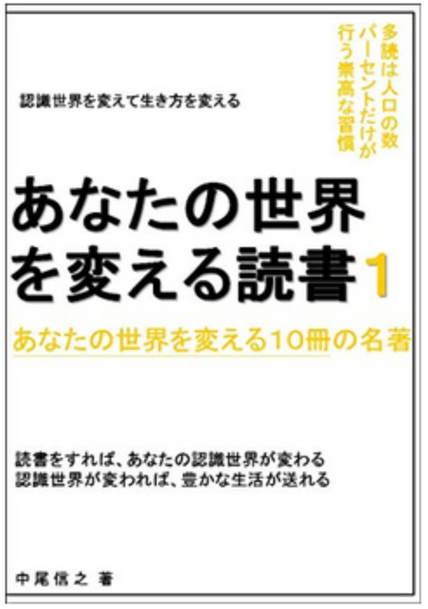
あなたの世界を変える読書
あなたの世界を変える１０冊の名著１
□はじめに
・読書によって世界は変えられる 読書によってあなたが変えられる
□第一章 世界のとらえ方を変える本
１．超瞑想法 苫米地英人
２．人生ドラクエ化マニュアル ＪＵＮＺＯ
３．世界一美しい奇跡の数式 ノ・ジェス
□第二章 生き方のヒントをくれる本
４．世界でいちばん幸せな国フィジーの世界で
いちばん非常識な幸福論 永崎裕麻
５．白本 高城剛
６．凡人を達人に変える７７の心得 野村克也
□第三章 科学によって見方を変える本
７．生命の暗号 村上和雄
８．世界は「 ゆらぎ」でできている 吉田たかよ し .
９．ワクチンのすべて 内海聡
１０．知識ゼロからの人口知能入門 清水亮
□おわりに
・ 伝説の武器、道具とともに
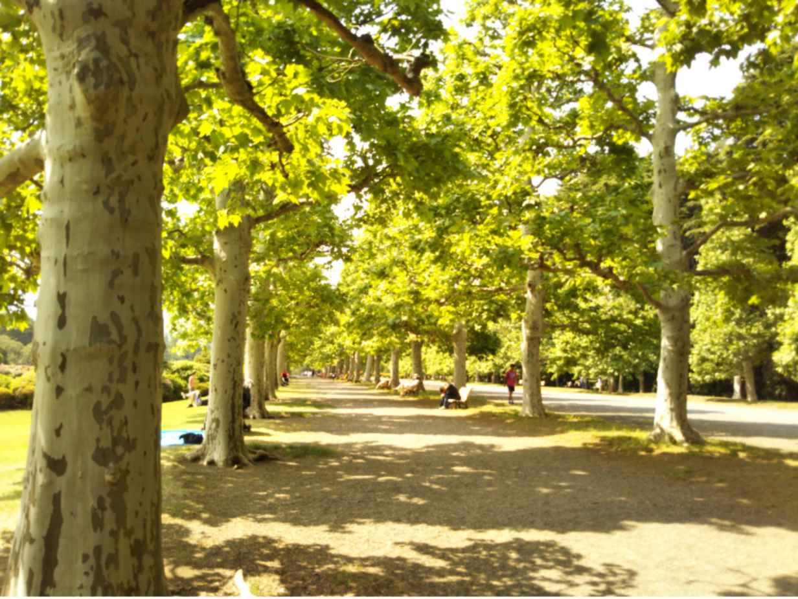
□はじめに
・読書によって世界は変えられる
読書によってあなたが変えられる
あなたの周りで、読書を習慣にして、人生の楽しみにしている人はどれほどいるだろうか。あなたは、どれだけ読書が好きだろうか。
文化庁の平成２６年の調査では、漫画や雑誌を除く一か月の読書量は、【「１、２冊」と回答したのが３４・５％、「３、４冊」は１０・９％、「５、６冊」は３・４％、「７冊以上」が３・６％だったのに対し、「読まない」との回答が最も多く、４７・５％に上った。】という結果が発表されている。１２年前に比べて読まない人の割合は１０％増加しているとのことである。
つまり今の日本では、５、６冊読めば上位の７％に入るということなのである。
私は最近、多読を趣味にするようになったが、自分と読書の関係を振り返ってみると、小学校の頃、学校の図書館で本を借りるのが好きで伝記物の本を良く読んでいた記憶がある。家では、毎日のように図鑑を眺めて色の綺麗な熱帯魚や、昆虫の写真を見て想像を膨らませていた。いつかはこんな色とりどりの魚を飼いたいなと思ったり、海外のこんな大きなクワガタやカブトムシがほしいなと思ったりしていたのである。
そこから少し読書に離れることになったのだが、高校生になった時に、ふと思い立って幼いころから大好きだったムツゴロウさんこと畑正憲さんの天然記念物の動物シリーズと、ムツゴロウシリーズを含めて１００冊ほどを読み、読書の楽しみに再び触れることになった。もともと、中学校の国語の教科書に畑さんの「ひとこえ」という、エッセイが掲載されていたのを思い出したのである。
そうして、すぐに文字を追うことに集中すること、そのものの楽しさや、著者の経験した世界や、考えを追体験する楽しさに惹かれたのである。私は、もちろん戦後の生まれではあるが、畑さんが子供時代に満州で過ごされた話や、ご両親のなれそめ、その時代の話など、自分の生きる時代を超えて、日本の本当の歴史を、味気ない歴史年表や脚色された教科書からではなく、畑さんの文章か生々しいリアルとして感じることができた。
畑さんと同じで、九州地方の福岡県生まれで、戦争中に朝鮮半島で過ごした五木寛之さんの本によっても、同じように戦争中の空気を味わうことができたし、この二人の方が、戦後、日本に戻られて、成長期をすごし、東京で同じような学生時代を過ごし、どのような業界で過ごされたかということ、そして戦後の日本の若者と、それを包む空気のようなものを感じることができた。また、学生運動の空気や、その組織の誤謬についても本から感じることができたのである。
このように、私たち人間は、実際に体験しなくても、また映像で見ていなくても、文章として本で読むことによって、他の人の経験や、その時代の空気を感じることができる。そして、そのことによって、自分の世界観を作ったり、世界観を変えていくことができるのである。
高校生の修学旅行で長崎県を訪れて原子力爆弾の被害について学ぶ機会を持ったが、この時、現場で強い違和感をおぼえ、自分のなかで消化しきれずにいたことがあった。それは 「優れた認識能力がある人間は、本で情報を得て、その当時の空気を感じて、物事の本質を理解することができる。であるのに、修学旅行は現場の表面だけを見て分かったふりをしている」 ということである。
また本だけではなく、音楽からも、その時の人々の感情や光景にまでも想いを至らせることができるのが人間である。詳しい説明を聞かなくても、その音楽がどのように、当時の空気を再現しているかということを感じることができる場合がある。あなたや、あなたの周りの人が、ドラマや映画をみて泣くとき、それは自分の部屋や映画館ではなく、その映像の世界を実際に感じているということなのである。
その場に行くことの重要性はいろいろな場面で聞かれ、その意味も正しいと思うが、それだけであれば、広島、長崎を訪れた人でないと、原子力爆弾の被害の悲惨さにいて理解できないということになるのである。しかし逆に、大量の意味のある読書をしていれば、そこでは聞けなかったような、真実が分かる。そうして初めて、なんという愚行だったのか、当時の帝国主義世界がどれだけ金におどらされた悲惨な世界であったかということも、その根がいまだに絶えていないことも理解できるのである。
話を再び、私の若かった頃のことに戻すと、私は畑さんが自分の世界観を作るうえで、師匠のような方であると思っていたので、大学を卒業して、就職をするまでの間にオーストラリアのケアンズにホームステイに行く際に、畑さんの本をお守り替わりに１冊持って行ったのである。
その旅行から帰った私は、和歌山県の職員として地方公務員になることが決まっていたのであるが、そのような心の余裕のあるタイミングで、大学時代の読書に対する不完全燃焼を取り戻すかのように、中古本屋さんなどで、立花隆さんや、大前研一さんの本を読むようになった。
そこで大前研一さんの「平成維新」という本を読んだことが、その後の数年の私の方向性を変える手助けをしてくれたのである。幼いころから、虫取りやザリガニ取りが大好きだった半面、なぜか世の中を良くしたいという想いが強く、政治家になりたいという気持ちを、２０歳を超えても持っていた。しかし、大学で学んだ知識や、それまでに読んだ本の知識では、どこをどのように良くすれば根本的な解決になるのかということは分からずにいたし、どのような考え方をすれば良いかという方法論すら分かっていなかったのである。それでも良心や正義感、誠実さがあれば改善や、改革を行っていけるのではないかと言う浅はかな考えから、政治家への道にもつながる可能性のある公務員という職をまず選択した。
ところが、若かりし私が手にした「平成維新」は、明確に日本を良くするであろう解決策を打ち出していたのである。また、そもそも、付与のものとして決まった国の形や統治体制を変えるという発想の自由度に驚かされたのである。
いまでは道州制という言葉は、誰もが知るようなキーワードであるが、大前研一さんは１９８９年のタイミングで発表していた。そして、国と地方の形を見直すと同時に、各省庁の役割と再編案を一般の著書において提示していた。つまり、政治家ではなくても、行政官でなくても、誰でも、そのような考えを明確にして発表することが可能なことを知ったのである。
そして、それをするための問題解決能力をコンサルタントと呼ばれる人たちが持っているということを知り、公務員として過ごした２年間の間は、問題解決能力を高めるための勉学を仕事以外の場で、できる限りすることにしたのである。
このように人は、本によって大きな衝撃を受けた場合は、考え方や、行動、そして生き方を容易に変えることができる。
その後、私は公務員をやめて、再び、ワーキングホリデイビザでケアンズに渡り、オーストラリアを一周した後、ゴールドコーストで大学院に編入することができた。これは公務員をしていた間に、大前研一さんのビジネス・ブレークスルーという衛星放送のビジネス番組を視聴し、ここで南カルフォルニア大学の大学院の講座を受けるという画期的なプログラムに参加して単位を取得していたためである。
実はそれだけではなく、公務員の間に、いくつかの遠隔教育を受け、公務員の世界しか知らない私は、ビジネスの最新の現場の情報や、コンサルタントの最先端の考えを体にしみこませるように吸収していった。地方公務員の現場にいながら、夜の１０時に家に帰ったとしても、深夜２時までビジネス・ブレークスルーで勉強をするなどしていた。今思うと、自分の臨場感のある世界が、公務員ではなく、自分が見聞きする、そして本で読む、ビジネスの世界になっていたのである。
そして東京に来てからは６つの職場を経験（２０１８年３月現在）し、今に至るのであるが、ここでもまた、苫米地英人博士の著作に感銘を受けて、そこから自分の世界を再構築し、生き方を再考しているのである。
もし、あなたが本を読むことによって、私のように生き方を変えるような大きな衝撃を受けていない場合は、あなたが、大きな力を持った名著に出会っていないということなのかもしれない。
もちろん本に影響を受けるかどうかは、読む人の読み取る能力や、好み、読む人のその時の置かれている環境や状態によって変わってくるのも事実である。しかし、本当に力がある本であれば、かつ読む人に伝わりやすく書かれている本であれば多くの人に、その考えを伝播する力を持っているのである。
今回、私はこの数カ月の間に、キンドルアンリィテッドの読み放題サービスの対象となっている本の中から感銘を受けた本を、みなさまに紹介させて頂きたいと考えている。
ここでは、ひとつの分野だけではなく、いくつかの分野からピックアップしており、ひとつの本の理解が、他の本の理解につながるような組み合わせになっている。人の脳や体はネットワークによって成立しているが、知識の世界も複数の知識が重なり合うことで、私たちの記憶に定着し、そして生きた知識となるのである。
逆に言うと、断片を理解しただけでは、つながらずに身にならないということがある。複数の本のインプットがあって、初めて、それぞれの主張がかさなりネットワークとなって、理解ができるということもあるのである。そのため、ここに紹介した本のうちで、最初に読んだ時に、もし分からない本があったとしても、まったく問題がない。そのような時は、分からなくても、さらっと読んで、次の本にいってほしい。場合によっては、別の本を読んでいた時に、同じ言葉が出てきて、最初分からなかったことが分かるようになるかもしれないし、１０冊を一巡してから二巡目に入った時に理解できるようになるかもしれないのである。そのようにすれば、あなたの世界の絵地図がだんだんと広がり深まっていくのだ。
絵地図を、まったく持っていない人は、人生において地図なしで旅をしているようなものであるのに対して、あなたが多くの断片で構成された、あなただけの絵地図を持っている場合、あなたはどこに行けば何があるか、どこに行けば楽しいかということを考えることができる。だから本を読むという行為が、あなたに力を与えてくれる。
次の章からは世界の認識の仕方についての本３冊。生き方に影響を与えるような、感じ方に関する本３冊。科学、技術に関するような本４冊について触れていきたいと思う。
あなたが私と同じように、これらの本から力を得て、あなたの人生が豊かになるのであればと願うものである。
読書によってあなたの世界観がつくられ、
あなたの認識する世界は変えられる。
認識世界が変われば、あなたが変えられる。
そして、豊かな世界を生きられるようになるのである。
私が、本シリーズで紹介した時点では、読み放題対象だった書籍が、その後、読み放題ではなくなっているものも出てきていますが、その点はご容赦を頂きたく思っています。そのような書籍については、私の推薦文を読むことで要点部分をご理解頂くか、興味を持たれた場合は、ご購入頂くか、その作者の他の読み放題書籍を手にとって頂ければと考えています。その点、ご了承頂きたく、よろしくお願いいたします。
「調査概要・文化庁資料より抜粋」
平成２６年３月に実施した調査有効回答数は２０２８人
調査対象：全国１６歳以降の男女
調査目的：文化庁が平成７年度から毎年実施しているもので、日本人の国語に関する意識や理解の現状について調査し、国語施策の立案に資するとともに、国民の国語に関する興味・関心を喚起する。
□第一章 世界のとらえ方を変える本
はじめにでは、私自身が、どのように本と出会い、生きてきたかということについて記したが、ここからは、現時点で、キンドル・アンリミテッドで読み放題対象となっているものの中で、私のおすすめをピックアップして紹介をしていきたい。
これを全て読むために読み放題プランをひと月利用しても９８０円なのである。９８０円であなたの考え方にインパクトが与えられ、あなたが新しい考え方を身につけて、新しい一歩を踏み出そうとすることにつながるならば、これほど気軽にできるトライはないのではないかと思う。
１．超瞑想法 苫米地英人
苫米地さんは２００冊を超える著書を出版されており、キンドル・アンリミテッドでも多くの本を読み放題で読むことが可能であるので、ここでどの本を紹介しようかと思うほどであった。そのため、超瞑想法を読んで、考え方に違和感がなく、その新鮮さに惹かれた方は、ぜひ他の本にも目を通して頂きたいと思う。
超瞑想法は、まさにこの章の題名にぴったりの本である。苫米地さんは、機能脳科学の専門家でありながら、人工知能や宗教や脱洗脳、政治、経済、科学一般など幅広い分野に精通されている、まさに知識の最先端、学問の最先端を作っておられる方である。
私は、大学時代、公務員時代に立花隆さんの本を読んで、彼の知識の多さに驚いたことがあった。実際、立花さんは多読で有名で、自身の事務所には、書籍を書く際に読み漁った本が大量に保存されているのである。そんな立花さんは、専門家のやっていることを解説するという役割を自身に割り当て、いろいろな専門分野の最先端の情報を、一般の人に分かりやすくかみ砕こうとされておられた。宇宙飛行士の取材をもとに書かれた「宇宙からの帰還」が私も最も好きな本であった。
ところが、苫米地さんの本を読むようになって、立花さんとの違いに気づかされた。立花さんは偉大なジャーナリストであるし今でも尊敬しているが、専門家の研究を噛み砕く解説者であるから、池上彰さんのようなもので、自身が専門分野を作っているわけでも、切り開いているわけでもないのである。しかし苫米地博士の場合は、自身で最先端の研究をされている分野が非常に広く、その分野を極めるにあたって、周辺の分野も極めていってしまうのである。そして、何より、読む人のレベルにあわせて理解しやすいような作品作りをされているため、オススメなのである。
以下は、本文からの引用である。
「この世界、この宇宙のすべてが、あなたの心が生み出したものであるならば、あなたの心の側を制御することで、自分や世界を自由自在に変えることができるようになるからです。」
この文章は、自分の認識の仕方しだいで自分の感じる世界を変えることができるということを表しているが、その具体的な方法論を超瞑想法という方法で解説しており、本書であなたは、あなたの認識世界の変え方を知ることができるのである。
第一章で紹介する３冊は、このような世界観を変えるために適した書籍であるが、章の最後で私が他の書籍にも記載した、世界観の図を紹介させて頂きたいと思う。超瞑想法では、圧倒的な情報量を得ることが、重要であることも記載れている。このことは苫米地博士の「圧倒的な価値を創る技 術[ ゲシュタルトメーカ ー] 」という本で詳しく書かれているため、参考にして頂きたい。
２．人生ドラクエ化マニュアル ＪＵＮＺＯ
この本は名前のとおり、人生をドラゴンクエストと見立てて、楽しんでしまおうという画期的な発想の本である。ドラゴンクエストを販売しているエニックスに入社したこともある著者が自らの体験をもとに人生を切り開いていく考えを非常に簡単に分かりやすく説明してくれている。
ゲームの要素を人生に置き換えて考えてみるという抽象度の高い思考実験を自ら編み出して、優れた脳科学者などがたどり着いたような自分の認識世界のとらえ方を変える方法を、ドラゴンクエストをベースに編み出している優れた本なのである。
いろいろなことをゲームに見立てるゲーミフィケーションについて書かれた本は他にも存在するが、ドラゴンクエストはあまりに有名で内容を知っている人が多いし、爆発的に人気を博しただけあって、そこに込められている内容が人生の楽しみ方と似ているところもあり、それを例にとって説明をしてくれているので、理解がしやすいのである。
「ゲーム目的を達成する事以上に、ゲーム目的達成を目指し遊んでいる最中にこそ楽しみの大部分があると言えるだろう。」というように、人生は目的を達成することだけが重要なのではなく、目的達成に向かっている人は、その途中のプロセス自体も楽しめているという本質も解説してくれている。文章量も多くなく読みやすいように整理してくれているが、そこには世界観を変えるエッセンスが溢れている。
３．世界一美しい奇跡の数式 ノ・ジェス
本書も、第一章で紹介している他の二冊とともに、自分の認識している世界の見方を変えるために役立つ本である。文章の最初が少し暗い始まり方である点と、文章の大部分において、インタビュー形式をとっているため口語体で書かれている部分が多く、若干、客観的に読みにくい感がある。しかし、内容としては、他の二冊に勝るとも劣らない内容となっている。
本書単体では、理解しにくい内容も、第一章で紹介した他の二冊を読んだ人なら理解しやすいということもあるし、第三章で紹介する科学に関する本を読んだ人なら、さらに理解しやすいということもあるように思われる。
下記は本書からの引用部分である。
「自分と自分の宇宙が、本来の心、本来の自分とすべてひとつながりである、という認識世界に変わっていたのでした。」
そして重要なキーワードとして誰もが自分の世界の「創造主」であるという言葉がある。これは超瞑想法でふれられているように、自分の認識世界の見方は自分で思うように変えられるということや、人生ドラクエ化マニュアルにあるように、ゲームの内容や目的を自分で決めるということと同じことなのだ。このように、作者によって、いろいろな表現方法で、世界は自分で決められることを教えてくれている。
この本の表現や、他の本の表現も含めて、文章で見ただけでは、考えにくいことを私なりに図式化したものが下記である。これは、「頑張りすぎない子育ての考え方 子育ては最大の社会貢献、最高の贅沢」という私が、三冊目の電子書籍として出版した本の中に表現したものを、そのまま転記したものである。

そして、以下は、右の図の説明として私が、前述の子育てに関する本で解説した内容である。
「人は、一般的に考えられているように自分の認識の外に物理的な世界を持っている存在でしかない場合、この世界から切り離された孤独な存在となってしまう。自分と世界は別個のものだから、自分は世界を観察する対象としてとらえるのである。
しかし、認識を変えると自分が世界全体の中の重要な一部であることを知るのである。この時、世界と自分は一体であるということができる。そうすると、積極的に世界への働きかけがしやすいメンタリティを獲得していると思われる。そして、さらに思考を進めると、自分が創造主であるという認識科学の境地に到達することができるのである。
この認識論にたつことができたものは、世界はあなたの認識の内側に存在する、つまり世界はあなたが創造しているとさえいえるのである。」
第一章では３冊の本を紹介させて頂いたが、ここからも分かるように、１冊ではなく、３冊まとめて読むことで、それぞれの著者による表現方法の違いを超えて、その本質を理解していくことができるのである。たとえ、そのうちに自分にあわない１冊があったとしても、残りの２冊で深い理解ができていれば、まったく問題がないということである。
□第二章 生き方のヒントをくれる本
さて、第二章では、第一章より、もう少し気軽に読める本でありながら、生き方のヒントを与えてくれるような本を紹介させて頂きたいと思う。これも第二章の本単独でというより、第一章で、認識世界をがらっと変えていこうとしている上に、このような少しソフトな、ヒントをかさねていくということが、思考のネットワークを作っていくうえで意味があるように思うのである。
４．世界でいちばん幸せな国フィジーの世界でいちばん非常識な幸福論 永崎裕麻
この本では、フィジーに移住した日本人の方が、どうしてフィジー人の方々が幸せに生きられているかということを、いろいろな現地でのエピソードを交えて説明をしてくれている。単なる島の解説ではなく、幸福論として一級の価値を備えた作品に仕上がっている。それにも関わらず、本文中で、現地の人々との会話が関西弁で書かれており、面白く読むことができる。
本書で教えられることは、フィジー人と私たち日本人では、考え方がまったく違うのだということだ。どちらが正しいと言い切ることはできないとは思うのだが、そういう考え方をしてもいいんだな、そういう考え方が常識の人々もいるんだなと思うことができれば、私たちの日本における常識というものが絶対ではないということに気づかされるのである。これだけで、メンタルブロックがひとつはずせたと言えるだろう。
「植民地政策のスペシャリストだったイギリスでも、テキトーなフィジー人を働かせるのは至難の業だったようです。」と本文中にあるように、明治維新後、せっせと富国強兵にのめり込んでいった日本人とは、まったく違う感じ方や生き方を、今も続けているのがフィジー人の方々なのだ。
幸せになろうとして幸せになっているのではなく、無理をせずに思うままに生きているので、普通に幸せなのだ。そして、私たち日本人が自分の過去に縛られたり、未来のために今を犠牲にしがちなのに対して、フィジーの人たちは今を最大に楽しんでいる。そういう生き方こそが、本当の幸せにつながるのではないかと教えてくれるのである。
この本は、いろいろな示唆に富んでいながら、本当に楽しめるため、私は、繰り返し読んでみようと思っている１冊である。
ここでは私が内容について詳しくふれずに、ぜひ皆様にも読んで頂きたいと思っている。
５．白本 高城剛
高城剛さんの白本は現在、第三弾まで出版されている。また、黒本という少し世間では公にされないような情報も記載した本も第三弾まで出版されており、すべて現在はキンドル・アンリミテッド読み放題対象であり、比較的読みやすい文体となっているので、白本１を気に入った方は、他の本も手に取って頂けたらと思う。
高城さんはハイパーメディアクリエイターという肩書をお持ちで、沢尻エリカさんと結婚していたというツワモノである。私は、高城さんの本とたまたまキンドルで出会って拝読するまで、まったく高城さんのことを存じ上げていなかったため、自分が知らなかったことに驚いたくらい、面白い考え方、生き方をされている卓越された方である。
ほかにも「多動日記」という本を書かれており、世界中を飛び回っているのだが、カバンの中身を本にされたりしている。荷物を極端に持たないことや、家や、車やいろいろなものを所有せず、土地に縛られず自由に多動できる生き方を紹介してくれている。
現在、私も家も車も購入していないが、ひとところに固定しない生き方のためには、今の選択は間違っておらず、このスタイルを続けるべきだという勇気をくれた。
「過剰な消費を必要としなければ、過剰な労働は必要なくなりました。」
というふうに語っておらえるように、このような自然な価値観こそが、現在日本に生きて、常に過剰消費をするように刺激を受け続けている私たちには必要なのではないかと思う。
６．凡人を達人に変える７７の心得 野村克也
いわずとしれたヤクルト、阪神、楽天などの球団監督をされて、それぞれのチームを強化し、野村再生工場と言われた野村監督の作品である。
この本の考えは、非常にオーソドックスな内容が記載されているが、私たちは、普段、常識にとらわれて、オーソドックスな定石すら思考に上がらずに、あまり大切にしないことがあるのではないかと思い、ピックアップした。
野村さんと言えば、ぼやきが有名であるが、きちんとした考え方があってこそ、厳しいプロの世界で挫折した人さえも、再度、輝かせることができるのである。高校生で才能が認められドラフト１位で入団しても、ほとんど活躍できずに球界を去る選手が少なくない世界で、何人もの選手を再度輝かせるということは、方法論がないと絶対にできないことなのである。
野村監督自身もテスト入団という形で球団に入っており、自分自身が頭を使って、方法論を開発しながら、球界で一位になれるように実力を磨いていたという事実がある。
そして、本書の中でも、人を作るという意味で読書が大切であるということを記載しておられる。いいかげんな考え方では、ビジネスの世界もスポーツの世界も成果を出すことが難しいということである。
「頭を使って創意工夫をする」ということ、これが何よりも大切なのだ。そして努力は誤った方向にしても意味がないということを、とかく根性主義の好きな日本の中でも、やはり一流の選手、一流の監督は心得ていて、意味のある研鑽をしていることが分かる。
野村さんは、単なるスポーツ選手というだけではなく、単なる監督というだけでもなく、一流の世界観を持った人格者であるということが伝わる本である。
□第三章 科学によって見方を変える本
第三章では、遺伝子、宇宙、医療、人工知能の４つの本を紹介したいと思う。これらの本を読んで頂けると、第一章で紹介した本で読んだ内容と似通っている記載があることに気づかれると思う。最先端の認識世界の考え方は、最先端の科学と方向性をひとつにしているからである。
いろいろな学問分野において専門化が進むほど、どんどん枝葉に分裂してしまい、少し隣の内容も分からない研究者が増えると言われるが、抽象度が高い方は、学問分野を超えた統合理論を打ち立てていく力がある。
７．生命の暗号 村上和雄
遺伝子研究に携われている村上さんが、無味乾燥の科学ではなく、人の可能性を引き出すような前向きな思考をするヒントをこの本で述べている。また、その観点をもう少し全面に押し出した「スイッチ」という本では、どのように遺伝子をオンにするスイッチを押すかということに絞って解説がされている。
生命の暗号でも、「６０兆の細胞と３０億の遺伝情報のほとんどは眠っているがオンにすれば奇跡を起こせる」ということを解説されており、これを聞くだけで、私たちの可能性が非常に大きいことを知らされる。
環境を変えることで成果をだしていく遺伝子がオンになりやすいという言葉は、高城さんの多動という生き方ともつながる要素もある。
以下は本文からの引用である。
「心を入れ替えるとは心の変化により、いままで眠っていた遺伝子が活性化することである。行き詰まりを感じているとき、環境を変えてみるといい。動くと人は伸びる。」
「わるい遺伝子をＯＦＦにし、よい遺伝子をＯＮにする方法として、どんな境遇や条件を抱えた人にでもできるのは「心の持ち方」をプラスにすることである。これが遺伝子に大きな影響を及ぼすと考えられる。」
８．世界は「 ゆらぎ」 でできている
宇宙、 素粒子、 人体の本質 吉田たかよ し .
宇宙の研究をされた後に、医学の道に入られた吉田さんの著作は非常に魅力的である。宇宙と医学をつなぐ広い視野を与えてくれるのである。
吉田さんによると宇宙も、原子も、私たちの人体もすべてが「ゆらぎ」でできていて、このゆらぎがあるからこそ、調和がとられているというのである。
「生命の暗号」や本書、それから他の著書を読んでいると、病気という症状自体を、それほど悪くとらえずに、肯定して病気の症状とつきあっていくというような、考えを持てるようになってくる。言い方によっては病気も、ひとつの「ゆらぎ」と言えるのかもしれない。一般的な医療や科学の常識とは違うのかもしれないが、科学的にいろいろな分野の最先端の研究をされている方ほど、このような、ゆるやかな考え方をされているし、実際に化学的な薬だけではなく、気の持ちよう、精神的な心のコントロールをすることが大切ということに気づかれているのである。
ここでも第一章で紹介した、自分の認識世界を変えるという考え方が、科学的に肯定されうるということが、第三章の書籍を読んで頂けると理解いただけると思う。
以下の二つの文章は、本文からの引用である。
「物事は安定しているのが基本なのだという先入観を捨てることで、現象の本質が見えてくる」
「人類が絶滅を避ける上で大切な役割を果たしている、つまり、うつ病は人類が生き残るための手段だったのだという、常識を根底から覆す学説が発表されたのです。」
うつ病という他の人と違う行動をとる人がいることによって、全体が同じ行動をすることによるリスクを避けられ、伝染病の蔓延などを防ぐことにつながるなど、プラスの面もあるというのである。
宝くじや保険会社の宣伝に騙されて誰もが同じ行動をとるようなことをせずに、自分の考えで、生きていくのが良いということである。
９．ワクチンのすべて 内海聡
日本の医療は検査づけ、薬付け、病院づけにする医療システムとなっていると言われる。
私は、患者側は３割負担という医療保険制度そのものが、医療の提供側だけではなく患者側も含めて、この体制を維持・強化することにつながっていると思う。
たとえば、国民皆保険を前提としても、３割負担ではなく、５割負担であれば、医者にかからずに済むように、人々はより慎重になるが、３割負担であれば、とりあえず薬をもらおうというように、容易に医師や薬に頼るモラルハザードを生むことになりやすいのである。
しかし、薬の薬効はかなり限定的で、診断が当たる率が低いうえに、薬が効く率も低く、あわせて本当に薬効で治るのは、かなりの低率であるともいわれる。
だから、かなりの部分は人間の単なる思い込み（プラシーボ効果）とまで言われている。人間の自然治癒力というものが、それだけ強いのである。
ワクチンについても、その効果に疑問が呈されているが、日本ではあまり公にされないのも社会体制によるものであると思われる。
この問題に真っ向から挑んだのが、内海さんのワクチンのすべてである。ワクチン自体は仕様書に劇薬と書かれており、利用には非常に配慮が必要であるが、そのような説明は丁寧にはされずに、被害率は低いということだけが伝えられるのである。
本来、免疫機能というのは、口から入り、体内を通っていく過程で、免疫システムが働くようになる。しかしワクチン接種は死んだ病原菌や、不活性化した病原菌を注射によって直接、血管に打つという行為であり、免疫システムを無視した危険な行為であるという。
またインフルエンザワクチンについても、その効果が疑われている。毎年流行するインフルエンザの種類は異なり、予測不能であるうえに、開発には数カ月から半年かかり、実際に作ったワクチンは今年はやるインフルエンザのワクチンと型が異なる可能性が高いのである。そのため今年のインフルエンザを防ぐどころか、関係のないインフルエンザの種を血管に注射してしまうことになるのである。このような危険性は、インフルエンザに関わらず、他の病原菌のワクチンも同じなのである。
医療に関する常識が、いかに作られたものかが、ワクチンのすべてを読めば分かるようになるのだ。
１０．知識ゼロからの人口知能入門 清水亮
人工知能については、いろいろな情報が飛び交い、私達の仕事を奪うというように危惧する声も少なくないが、さまざまな仕事を人工知能が行なってくれることで、私達、人間の働く時間が短縮されたり、働かなくても良くなるのであれば、それを前向きに捉えて、新しい社会を考えるほうが健全なように思う。働かなくても良い社会では、たとえば、ベーシックインカム制度の積極的導入をすればよいのである。
本書は後段で、以下のように記し、これからの社会こそ人間らしさを私達が大切にしていくべきだということを教えてくれている。
「ＡＩが食料を自動供給し、調理も行い、会社の経営戦略から何から何までやってくれる、そうした時代になるともはや我々は「お金とは何か」「働くとはどういうことか」といった、より哲学的な問題と向き合う必要が出てくる」
「知能革命後の世界で一番価値が高いのは、思いやりがあり、真心を持って人と接することができる人に違いない。身体能力や知的能力に劣っていたり、これまではむしろ「不器用」「変わり者」と呼ばれていたような人たちが、人への愛を武器に活躍する社会こそが人工知能により生まれるであろう次なる世界の姿ではないか。」
このように言われると、人工知能に対する印象が変わるのではないだろうか。
□おわりに
・伝説の武器、道具とともに
今回、私とあなたはこの１０冊のリストを手にした仲間のようなものであると思う。人生ドラクエマニュアル化ふうにいうなれば、あなたは伝説の勇者の武器、道具を１０も手にしたことになるのである。
しかし、いくら武器や道具が優れていても、これらのものは私達が使い慣れるまでは、まだ本当の力を発揮することはないかもしれない。それでも焦ることはない。キンドル読み放題の魔法によって、あなたは思い出した時に、またこの１０冊に戻ってきて、何度でも、好きなものだけ、使い慣れるまで楽しめばいいのである。
今回、紹介させて頂いた１０冊は、それぞれが素晴らしい知識のつまった作品でありながら、１０冊のつながり、重なりによって、あなたが新たな世界観、認識世界を創るための一つのまとまった知識体系であるとも言える。そしてまた、あなたとそれぞれの作品の著書にとっての初めての出会いであるとも言える。あなたが、さらにこの伝説の武器、道具を使い慣れ、あなたの絵地図を広げ、深めていくために、ここから、あなたなりの読書の旅を楽しんでもらえたらと考えている。
あなたも、私も今この時代に生きる旅人である。
どうせ旅をするなら、読書という最強の武器、道具を携えて、楽しい人生にしようではありませんか。
あなたと、私の旅が楽しいものとなりますように。
本書を、手にして頂き、本当にありがとうございました。
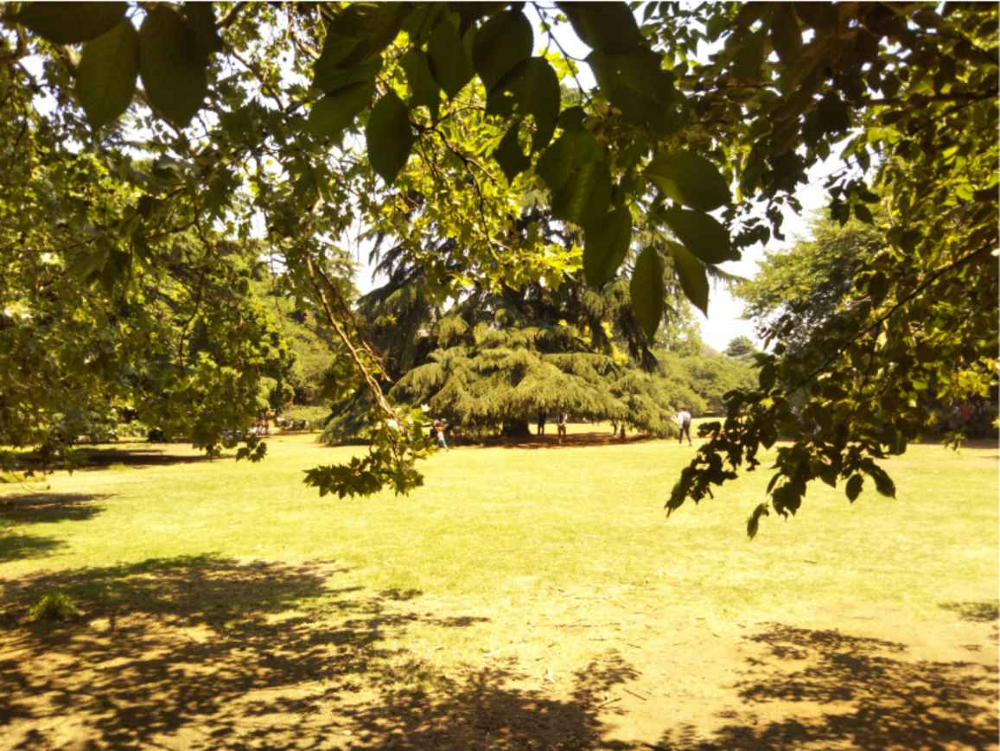
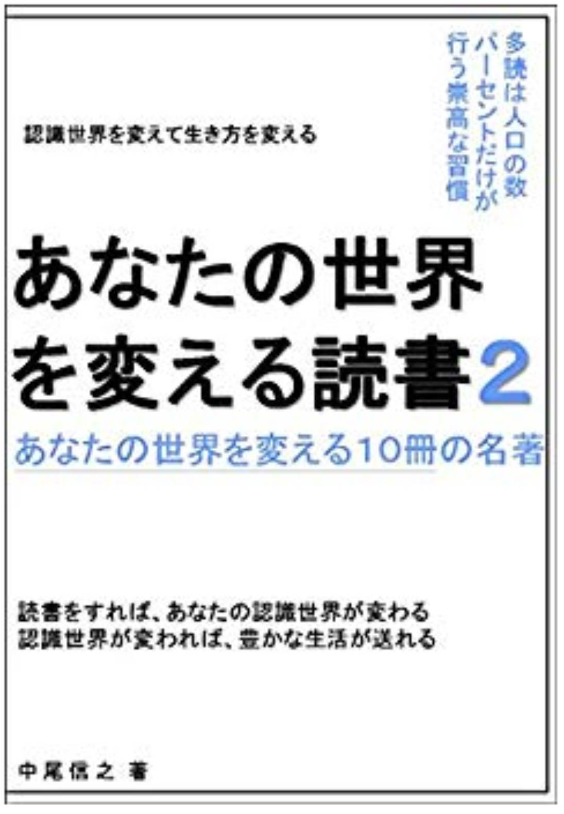
あなたの世界を変える読書２
あなたの世界を変える１０冊の名著
□はじめに
・読書によって世界は変えられる あなたが変えられる
効率よく名著に出会おう
□第一章 世界のとらえ方を変える本
１．２０１冊目で私が一番伝えたかったこと 苫米地英人
２．すべての教育は「洗脳」である
～２１世紀の脱・学校論～ 堀江貴文
３．社会主義の誤解を解く 薬師院仁志
□第二章 生き方のヒントをくれる本
４．白本２ 高城剛
５．ベーシックインカムの時代が始まる のらねこま
６．ひとりぼっちを笑うな 蛭子能収
□第三章 科学によって見方を変える本
７．農業で稼ぐ！ 経済学 浅川芳裕 飯田泰之
８．医学不要論 内海聡
９． 日本サイバー防衛＆国防白書 苫米地英人
１０．スマホでサンマが焼ける日 江田健二
□おわりに
・ 予測不能な未来を歩く
□はじめに
・読書によって世界は変えられる あなたが変えられる
効率よく、名著に出会おう
本書は、シリーズの１作目に続いて、今回も１０冊の本を取り上げ、これによって、あなたの認識能力を高めて頂き、あなたの認識する世界をご自身で書き換えて頂くためのものである。しかも、それを９８０円のキンドルアンリミテッドの読み放題サービスの中で、やってしまおうという試みである。
もともと１作目を書いたのちに、当分、このシリーズの２作目を書くことは、もっと先であろうと思っていた。
しかし、電子書籍で８冊の本を、直近一か月の間に書いている間に、書くだけではなく、読むことも続けていたのであるが、 「これは、是非、多くの方に読んで頂きたいという本に出会った」 ことが、私にもう一度、続編を書くために筆をとらせる一番の原因となった。その本は、第一章で取り上げることにした。また、１作目を書いた際に、惜しくも１０冊の選から漏れた本があったので、これもあわせて紹介したいと思っている。
さらに言うなれば、１作目を無料設定した際に、思ったよりも多くの方々に手にとって頂けたという事実も、私が２作目を書くことの後押しをしてくれた。
そして、本を書いている時間をぬって、できるだけ多くの本を読もうとしたが、取るに足らないような本も多かった。そこで私も納得したのである。
私と同じように、多くの方々も、キンドルアンリミテッドで良い本に出会いたいにも関わらず、取るに足らない本の海から、面白い本に出会うことに困っているのでは、ないかと。
私には、アマゾンのサイトにおいて、キンドルアンリミテッドで本を探している人に対して表示される本のアルゴリズムの詳細が分からない。しかし、明らかに中身の薄いものや、単なる自分のサービスへの誘導を目的としたような本も多く、そういうものが意外と目に触れやすい位置に表示されてしまっているのである。おそらく、簡単にお金が手に入るというようなことをうたったアフェリエイトビジネスに関するような本が、売れやすく、そういうものの表示頻度を上げてしまっているのだろうと思う。
毎回、不思議に思うのは、一度読んだ本であるのにも関わらず、サイトの一番目につく特別な位置に、常に表示され続けている本もある。データマイニングの強みを売りにしているサイトで、どうしてこのようなことが起こっているのかは分からないが、彼らのアルゴリズムに問題があるのか、意図的に売りたいものが表示されているのか、いずれにしても、アルゴリズムが、この程度なのだということなのである。せっかく読み放題を売り物にしているのに、良い本が、大量のその他の本に埋もれることは、まったく忍びない限りである。
多読に、意味があるといっても 、「時間という最も貴重な人生の経営資源」 を効率使うためには、中身のない本と出合う率を減らし、かつ、中身のない本と出会った場合も、途中でその本を読むことをやめ、次の本を読むのが好ましい。本を書くようになって、その思いをますます強くしたのである。
今回も、章立ての形を取っているが、章のくくりよりも、１０冊まとめて、ひとつの知識体系として、吸収をして頂ければと考えている。こうやって、１０冊並べてみると、前回と同じように、いくつかの本で、つながりとなって理解が深まるものがある。分野の違う専門家が見ている世界と、予測が重なるところがあるということである。その方向性を、あなたや私の生きている現実世界の解釈に正しく適用することができれば、私たちは、より柔軟にしたたかに、自分の世界を再構築して行くことができるのではないかと考えている。
そうしてこそ初めて、幸せな人生とはどういうものか、自分にとって幸せとは何であるかとういうことを考えるためのゲシュタルトを得ることになるのだと思う。
１作目の冒頭で文化庁の読書に関するデータを記載したが、あなたと私は既に、人口の７％に入る多読人間である。コンピュータが常に新しいオペレーションシステムや、アプリのプログラムを自動で読み込み、アップグレードしていくように、私たちも、読書を通じて新しい知識体系を吸収し、どんどん自分をアップデートしていこうではありませんか。
そうすることができれば、たとえ環境が変わっても、また自分たちをアップグレードして、その環境に最適な力を得ることができるのである。
読書によってあなたの世界観がつくられ、
あなたの認識する世界は変えられる。
認識世界が変われば、あなたが変えられる。
そして、豊かな世界を生きられるようになる。
□第一章 世界のとらえ方を変える本
１．２０１冊目で私が一番伝えたかったこと 苫米地英人
本書は、私が最初に手にした苫米地さんの著作である。１作目では「超瞑想法」という本を紹介させて頂いたが、入門書という意味でも、集大成という意味でも、多くの人が取りかかる本として最適だと考えて、本書を今回の１冊目とすることにした。
下記の３行はそのまま原文を引用させて頂いている。多くの著作を書かれているが、それらに共通する芯について書かれた言葉である。
「すべての人間が自由意志を持って、自ら主体的にゴールを設定して、その実現のために邁進し、結果として豊かで充実した人生を歩んでほしいということです。」
この本を読んでから、私の考え方が変わった。同時に、それまで世界にかかっていた霧のようなものが晴れてきたように思ったのである。それまでも、必要のない情報には、極力触れないようにしていたし、必要な情報だけを得るようにして、自分の価値基準を形作っていたつもりであったが、少し行き詰まりのようなことを感じていたのである。ところが、本書に出会ってから、新しい知識をつけることで、自分の世界を変えていけることを知ったのである。その結果、このように電子書籍を書くという行動を起こすことも始めたのである。
本書を読めば、世界に対する認識を変えていくためのヒントとなる言葉のいくつかに出会えることになる。そうして、あなたも自分の自由意志でゴールを設定し、豊かな人生の第一歩を歩んで頂けるのではないかと考えている。私たち、ひとりひとりが、そのような生き方をすれば、自分たちの認識している世界だけではなく、多くの人にとっても、素晴らしい世界が作れるはずである。
２．すべての教育は「洗脳」である
～２１世紀の脱・学校論～ 堀江貴文
この本が、今回私に、執筆する決意をさせてくれた本である。１冊目に紹介した苫米地さんの本で、自由意志で生きていくことの大切さを学んでいただけると思うが、本書では、私たちが自由意志を失っていく過程で受ける日本の教育についての分析と、それを乗り越えるための術について述べられている。
堀江さんの本には、インタビュー形式の本も多いのではないかと思うが、本書は、文語体で書かれており、かつ堀江さんの並々ならぬ意志が伝わってくる価値のある一冊である。
自ら進んで行う「学び」ということを重視したうえで、社会のために、時代遅れの刷り込みとしての教育を行うこと、そのものの価値を問いただしている。私たちは学校に行くことが当然と思っているし、実際にそのようにして学校で常識を教え込まれてきた。まさに、この過程が、自分の本当にやりたいことをやることにブレーキをかけることを教えているというのである。本書では、教育というものができあがった世界の歴史も分析されている。
私にとっては、苫米地博士の本などで良く聞いている内容と似ている部分もあり、すんなりと読める内容であったが、そのような免疫がない方にとって、堀江さんの本作は、刺激が強く抵抗感を感じるかもしれない。しかし、この本は、私たちが、自分でやりたいことをやっていくために、自由に生きること、楽しい人生を生きることを後押ししてくれているだけであって、私たちを否定しているのではないということを理解して頂きたいと思う。
本書で、堀江さんが言うように、本当に、この本を読む必要がある日本社会の常識に強く洗脳されている人は、おそらく、読書という習慣を持っていないと思われる。そして、与えられた非常に限られた情報だけから、世の中を表面的に見て、自分のできることに、常に低い限界を設けてしまっていると思われる。また、本を読む人でも、堀江さんの本を手にしようとする人も少ないのではないかと思う。
テレビなどの言動や、さまざまな印象や、普通と違うという偏見で、堀江さんの本を読むことに抵抗感を持たないで頂きたいと考えている。私の場合は逆に、普通と違う飛びぬけた行動をできる人であるという印象から、堀江さんの本を読んでみたいと思ったのが、堀江さんの本との出会いであった。
考えても見てほしい。バブル崩壊後に、金融機関に７０兆円ともいわれる公的資金が投入されたが、誰も責任を取っていないのである。その時は、いろいろな会計基準などの切り替えの過渡期であったため、違法とは言えないというのが判決のようであるが、堀江さんの場合は、非常に厳しい社会的リンチのようなことを経て、執行猶予もつかず、２年６カ月の有罪判決を受けたのである。
堀江さんが買収しようとしていた、フジテレビは現在、非常に不調で、決算説明会資料を見ると、フジテレビ単体の２０１７年の４月から９月の営業利益は８億円の赤字。４月から１２月ではかろうじて３億円のプラスという状況で、これは前年比マイナス３６％である。当時、誰と組むかは別としても、新たなメディアの在り方に真剣に取り組んでおくべきだったのは、フジテレビなのである。国民の税金で支えられている電波網を利用しているにも関わらず、利権で守られているだけであって、付加価値を、ほとんど生んでいないのである。
東芝の不正会計処理問題でも、会社による旧経営陣への民事訴訟で損害賠償請求がなされているが、彼らが刑事訴訟で堀江さんのように収監される恐れがあるとは聞いたことがない。そして、バブルの崩壊自体も、不良債権の定義と、自己資本比率という 、 BI S が決めた規制を押し付けられ、それを日本政府が受け入れたことで、意図的に作られた崩壊と言われている。
本来、金融業が生まれた時から、銀行は信用創造が可能であり、担保の土地の価値が下がっても、金利分の返済がされていれば、業として問題はないのである。これは日本が自分で金融ルールを決めることができないということを表し、また、金融政策に関する国家としての主権がなかったということの証なのである。日本が生んだ柔道も、欧州でルールが決められ、彼らに有利なようにルールが決められているのと同じである。
堀江さんが行ったとされる有価証券報告書への虚偽記載は、証券取引法に違反し、株式市場の信頼を損なったと言われるが、それでは、政府が国民の年金で、海外の金融機関が保有する日本の特定銘柄を大量に購入することで、平均株価を吊り上げる株価操作（プライス・キーピング・オペレーション）は、市場を間違いなく意図的に操作しているが、これらは市場の信頼を損なう行為ではないのかという疑問が出てくる。
堀江さんが本当に有罪とされるべきだったかということを、ここでは、これ以上、議論しないが、日本の法律や、司法が公平性という点では、非常に強い裁量で、人を裁いたり裁かなかったりしているということが分かると思う。
驚くべきは、堀江さんが、そのような境遇にあっても、「刑務所ナウ」という書籍を、刑務所にいても出版したりしながら、出所されてからは、本書のような本を書いたり、宇宙ビジネスに乗り出したりと、精力的にビジネスを展開されていることである。この点だけとっても、そのバイタリティを目の当たりにすれば、この人はどういうことを考えているのか、どういうことを本に書くのかということに興味を持って頂けるのではないかと思う。
数十年前には、携帯が今のように使われる世界を想像することは難しかったし、現在花形の仕事は、当時はなかったと良く言われる。そして現在、有名な企業も、ここ最近、生まれた企業たちであることが指摘される。それに似た事柄で、本書で記載されていたのが、ＩＴということが仕事になるということは誰も考えておらず、堀江さんがプログラミングに没頭したのは、お金や仕事になるだろうからと推測したからではなく、面白いからだったというのである。それを言われると確かにその通りで、ＩＴという言葉さえなかったと考えると、今の子供たちが大人になる頃には、想像もつかない仕事が生まれていると考えることができる。
そして寿命が延びたせいで、それは子供たちだけに影響するのではなく、私たちにも影響するのである。だからこそ、堀江さんは、自分がＩＴに昔、没頭したように、私たち自身が、好きなことに没頭することにすすめているのである。
過去はライブドアという大きな組織を作った堀江さんであるが、最近は、プロジェクトごとにチームを編成し、それぞれ少人数でビジネスを回しているようである。私は、本書を読んで、やはり頭の良い人だなあという印象を持った。この本のような文章はいい加減な頭脳の持ち主では書けない内容であると思う。そしてまた、実は、人の自由意志や、人の幸せをきちんと考えている真面目な人なのだという印象を強くした。あなたは、この本を読んでどう思うだろうか。
３．社会主義の誤解を解く 薬師院 仁志
私は、資本主義礼賛主義者でも、社会主義礼賛主義者でもない。もともと、私たちの今の日本は、「修正資本主義」だと思っている。全てを自由な経済活動にまかせるのではなく、国家がセイフティネットを整えて生存権を保証したり、いろいろな規制を設けることによって、資本主義と社会主義のバランスをとった形になっていると大学生の頃から思っていた。
実際、日本の国民総生産は５４０兆円程度であるが、政府の一般会計は１００兆円で、重複を除いた特別会計２００兆円を足すと３００兆円となる。国の財政は国民の選んだ代表である国会議員による精査を受けるのが民主主義のルールではあるが、一般会計より大きな額が、国会では、精査されずに毎年計上されているのである。そして、この開かずの扉に手をつけることは、政権が変わった間にも、まったくできなかったほどアンタッチャブルなのだと言われている。５４０兆のうち、３００兆円が国がらみの支出であるということは、これを普通に資本主義と言えるだろうか。このような状態だからこそ、日本は戦後最も成長した社会主義国と言われることもあるのでる。もちろん、国の支出を除いた純粋な国民経済の規模が非常に大きい、消費牽引型の経済であることは言うまでもない。今の日本にとって、輸出という産業は、それほど大きくないのである。
資本主義は完全ではないし、社会主義も完全でもない。逆に、資本主義が不完全すぎたり、社会主義が不完全すぎたりするということでもないのである。そういう意味で、私たちは、概念を良く知らずに、資本主義が良くて、社会主義が良くないから負けたと考えがちであるが、私たちは、社会主義をもう少し知ってから議論をすべきなのではないかと思う。本書は、そのような私たちにとって、ぴったりで、そもそも社会主義という言葉がどのように始まったかを丁寧に説明してくれている。
今も、社会主義の潮流はヨーロッパでは戦後も安定的な地位にあり、労働党や社会民主主義政党として継続している。私たちが、ソ連や、中国、キューバという国で社会主義が栄えたということを考えがちであるが、思想としては、欧州で今でも生きているのである。労働党という言葉などは、まさに労働者の権利を代弁するという点において、名が体を表していると言える。
また、社会主義も私有財産を否定するものとは限らず、生産手段のみを共有することを指すとすると、体制としての社会主義にも幅があることが分かる。
そして面白いのは、 社会主義革命の思想は、高度な資本主義から社会主義に発展する形態を想定している。ところが、実際、ロシアは高度な資本主義をへずに帝政から社会主義に移行したのである。 思想と、現実は必ずしも一致するとは限らないということが分かる。
為替にも影響されるが、１ドルが１００円強として、キューバの国民総生産が９兆円から１０兆円程度となる。そのキューバでは大学でも授業料はかからず、医者にかかるのも無料という体制がとらえている。アメリカとの国交回復で、これが崩れていく可能性もあるが、これに比べて今の我々の状態はどうだろうか。
一般会計、特別会計、地方財政あわせて約３００兆円も税金や、あらゆる国民の負担から政府による支出が行われているのに、政治家たちが言っていることは、高校生の授業料について、所得制限を厳しくもうけて、無償化していきましょうということである。９兆円程度の国ができて、どうして日本ではできないのだろうか。教育は、堀江さんが言うように、工場で働く労働者を育てるためだけのものだからとすると、そこまでお金をかけても仕方がないと思っているのであれば、なるほどと思うが、政府は教育が大切だと言っているのである。
また医療についても、無用ということをうたっている本を第三章で紹介しているのにと思われるかもしれないが、お金をぬきにして、本当に必要な緊急の医療のみ限った場合、それらは無償で、国家の財政で賄われることこそ、本当の安心な社会と言えるのではないだろうか。
このように、いろいろと豊かさについて考えるための思考のヒントをくれるのが、社会主義の誤解を解くという本である。
＊平成２９年度（西暦２０１７年度）の国の一般会計は９７兆円、特別会計は４９２兆円である。また地方財政は８７兆円である。これらの重複をのぞく複雑な計算がなされた結果は、合計で２９５兆円となっている。
平成１７年度（西暦２００５年度）から、約３００兆円規模となっているのである。詳細は、次の統計局データからダウンロードした表を参照願いたい。歳入の部分を除いて、歳出だけを表示しており、色付けだけしており、内容はそのまま掲載している。
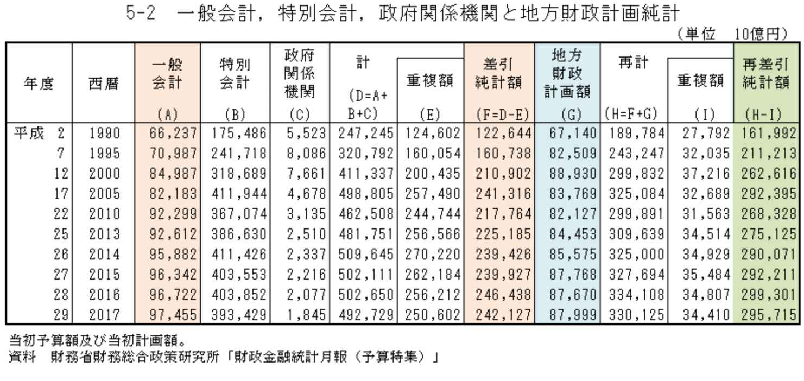
□第二章 生き方のヒントをくれる本
４．白本２ 高城剛
１作目でも取り上げた、高城さんの白本のパート２である。質問への回答形式であるため、今回取り上げた本の中でも、比較的ライトで、すぐに読める内容になっていると思う。
高城さんのどの本に記載されていたかは忘れたが、高城さんは読者を優良な３％のイノベーターに限るというようなことを書かれておられた。私たちは自分が読みたい本を読むわけであるが、著者が、自分の本に適した読者を選んでいる、もしくは自分の読んでほしいような特性を持った人にだけ分かる内容を書くということでもある。
だから、あなたや私は、この本を読めば、イノベーターになることができるということでもある。少なくともイノベーターになる可能性を持った存在になるということなのだ。これも、あなたと私の選択によって、世界を選び取る、世界を作るということに他ならないと思う。
本書でも、今回、紹介した１冊目の本や、２冊目の本と同じように、その時、その時に、自分の興味があることを大切にしているということが書かれている。そして、自分の思考の９５％を今に費やし、残りの５％を未来に費やしていると書かれている。やはり、 「今」という時を最も大切にしている のである。私たちは過去に縛られるべきではなく、未来のために今を犠牲にするべきではないのである。そして、冷静に今を見つめるためには、都会を少し離れることや、無理につながりを作ろうとせずに、孤独をポジティブに捉えるというような発想の転換についても述べられている。
孤独という言葉についても、私たちは常識で、良い、悪いという価値判断をしてしまっている。
読書という行為は、基本的にひとりで行うものである。そう考えると、孤独は私たちにとって、必要なエッセンスであると私も思う。
５．ベーシックインカムの時代が始まる のらねこま
最近、ベーシックインカムという言葉を聞くことも多くなってきていると思われるが、皆さんはどうだろうか。
さきほど、私は日本の予算について少し触れたが、もともと税金は所得の再分配機能をするという目的がある。これは自由競争の結果からこぼれた人たちに対しても、税金を通して生活するのに足りない分を補てんするということである。
ところが、政府が税金を正しく使っておらず、公務員のためや、それぞれの予算ごとに特定業界のために支出をしているのではないかということは多くの人が疑問に思っていることである。そこで、そのような無駄遣いをするくらいだったら、国民全員に数万円ずつ配りましょうというのが、乱暴に言ってしまえばベーシックインカムというものの考え方である。
本書を読んで納得したことは、国民が選んだ政治家や行政が、税金を上手に配分できないから、ベーシックインカムにしましょうという点ではなくて、今後の社会が、ベーシックインカムということを前提にしない限り、経済が回らないということを指摘している点である。
ロボットが仕事をするようになると、大企業は人を雇わずに生産をするようになり、お金が循環しないためベーシックインカム導入が必要であるというのである。
このような兆候は既に出始めているのではないだろうか。今でも残業のしすぎなどが問題になっているが、実際、昔はソロバンで足し算をしていたのが、今では簡単にエクセルになり、手作業でしていたものが、機械によって対応されるということが起こっているのである。自動化された分だけ、また無駄をしているのが、今までの状態かもしれないが、これからは自動化のスピード自体がどんどん進んでいくのである。だからこそ、いろいろな方の予測どおり銀行が大規模な人員削減を実施していくことを発表し始めているし、機械化してきた製造業も、今後一層、人が不要になってくるのである。
今は、法人税を下げる風潮にあるが、今後、大きな強い会社ほど、雇用を生み出さないということが進んでいくと、どれだけ企業の生産性があがって、どれだけ安いコストで、どれだけ素晴らしい製品やサービスを作っても、あらゆる企業が雇用を減らして、給与を減らしていけば、市民の大部分は買うお金を持っていないという状態になってしまうのである。
だから、ベーシックインカムの財源は法人税として企業から徴収し、これを市民にベーシックインカムとして配り、そして企業から製品やサービスを購入してもらうということが考えられるのである。
ドラスティックな案のように思えるかもしれないが、ベーシックインカム導入はテクノロジーの進化によって、必要となってくる社会制度と言えるのかもしれないのである。
６．ひとりぼっちを笑うな 蛭子能収
この本は、実は、１作目で取り扱おうかどうしようか悩んだ本であるが、結局、１０冊という区切りを考えたため、野村監督の本を選び、こちらを１作目からはずした過去がある。
タイトルは、少し後ろ向きなタイトルであるが、この本を読んだときに、同時に読んでいた、野村監督の本や、世界一貧しい大統領「ホセ・ムヒカ」について書かれた本や、フィジーの本と重なるところがあった。それは蛭子さんが、周りに流されて、意志が弱くふらふらとしていそうなイメージがあるが、実は、自分の幸せということを明確に考えていて、自分がやりたいこと、やりたくないことという線引きを、きっちりと引いているということである。まるで、ドクターエックスの大門未知子の「いたしません」という主義のようなものである。嫌なことはせずに、極力自分のしたいことだけをすることで自分の今の幸せを追求している強い意志を持っている方なのである。
蛭子さんは最初の奥様が亡くなられた際に、本当に悲しくてぽろぽろ泣いたということを書かれているが、それはお葬式が悲しかったのではなく、かけがえのない奥様がなくなったことが悲しかったのだと思う。逆に、親御さんが亡くなられた時のお葬式で笑ってしまったというようなことをテレビで何回か聞いたことがあるが、これは蛭子さんが、一般的な常識に毒されておらず、お葬式という形式化された儀式のこっけいさを見抜いておられるのだと思う。
私たちは、蛭子さんが普通と違って面白いと感じてしまう。周りにあわせずに、いつでも食べたいものを選んで、その土地のメニューを選ばずに面白いと思ってしまうのは、よくよく考えてみると、嫌なことはしない、「いたしません」という、はっきりとした意志があることへの憧れを持っていることの裏返しの反応なのかもしれないと思うのである。
この本は、そんな蛭子さんの一流の人生哲学が書かれているのである。だからこそ、私は、１作目で掲載すべきか悩んだのである。今回、選んだ他の本と毛色は少し異なるが、この本は一流の幸福論であると思うので、ぜひ手にして頂きたいと思う。
□第三章 科学によって見方を変える本
７．農業で稼ぐ！ 経済学 自然農法 浅川芳裕 飯田泰之
私たちは幼いころから、日本の食料自給率の低さを、折に触れて刷り込まれている。しかし、この食料自給率の計算の仕方が日本の場合は特殊なのである。次の５行は農林水産省のホームページからそのまま拝借した情報である。
「平成２８年度の食料自給率は、カロリーベースでは、小麦及びてんさい等について、作付面積は拡大したものの、天候不順により単収が落ち込み生産量が減少したこと等により、３８％となりました。
また、 生産額ベースでは、野菜及び果実について、輸入額が減少する中で国内生産額が増加したこと等により、６８％となりました。 」
一般に私たちが聞いているのは、この内容の前半部分にある、４０％前後という数字である。ところが、これはカロリーベースという前提があるのである。そして、このカロリーベースで計算している国は、日本と韓国ぐらいということらしいのである。生産額ベースで６８％という数字もあり、これだけ見ても日本の自給率は必ずしも低くないと言えるのである。
さらに、３分の１程度の食べ物が捨てられているという指摘もある。しかも、１日３食になったのは、エジソンがトースターを発明してからと言われるように、 現代人は捨てるうえに食べすぎなのである。 かつ、軍人を作るドイツのフォイト栄養学の誤りを継続して、過剰な肉食を推進しているが、肉を生産するには、野菜を作るより３倍エネルギー効率が悪いのである。
自給率を上げたいのであれば、 過食をやめたり、捨てない流通を考えたり、食肉の量を少し減らすという方法が考えられるが、これらは全て国民総生産を下げることにつながるため、あまり好まれないというだけなのである。 そして、そもそも何十年も前に人類は、必要な食量を生産することができているにも関わらず、このような偏りによって、逆に栄養不足の人は発展途上国で増加しているともいわれる。
本書でも、日本の農業が弱いというのは役所の自虐広報、海外も農業は多額の補助で成立しているという事実を、きちんとした数字に基づいて指摘している。
日本の農家への所得補償は正常な国内競争や新陳代謝を悪化させていることや、農協が農業以外の仕事をしているため、農業のコストを高くしているとも指摘している。
本書とは別に、紹介したい福岡正信さんという方の著作があるが、残念ながらキンドルアンリミテッドの対象ではなく、電子書籍にもなっていないので、簡単にここで紹介させて頂きたい。
福岡さんは、自然農法を思考している人には有名な方ということであるが、私も福岡さんの本を５冊読んで、その深さに驚かされた。次に、医学についての本を紹介するが、人間にとっての現在の薬の大半が無意味なのと同じように、野菜にとっての農薬の必要性というものを科学的に、経験的に深く分析されている。
限られた実験スペースでの限られた変数のなかで、仮に効果が出た農薬があったとしても、いろいろな変数が常時変化する畑で、その農薬の効果がどれほど出るかということは非常に不安定ということなのである。農薬を減らしても、減らした割合だけ収穫が減るのではなく、収穫が減る量は、限定的になるというのである。
お米の栽培方法についても、福岡さん独自の方法を編み出したり、粘土団子という種を粘土上にして練りこんだものを砂漠の緑化に役立てたりと、国際的にも本当の自然農法を広める活動をされておられた方である。これも、一般に考えられている農業の常識というものが、どれほど脆弱なものかということが分かると思う。
思想としての自然農法をうたっているだけではなく、利益という点でみても、大量の農薬を使い、多くの機械を使い広い土地を使って農産物を生産すると、狭い土地で少ない農薬で、多くの機械を使わずに生産するよりも利益が低くなるというのである。
これは、高度に機械化され単一食物を生産する農業が、実は農業ではなく工業であり、かつ、土地を著しく傷つけてしまい継続性がないことも指摘している。これからはテクノロジーを使った農業も、どんどん進んでいくと思うが、その根底として、自然農法の考え方が、より生かされても良いのではないかと思う。話は福岡さんの本に少しずれたが、食料自給率という数字や、日本の農業について、客観的に考えるヒントをくれる本である。
８．医学不要論 内海聡
１作目でも「ワクチンのすべて」という本を紹介させて頂いたが同じ著書による、この作品を紹介させて頂きたいと思う。本書でも、医学に対する鋭い指摘がなされている。私は、内海さんや他の方の本を読んだため、去年の秋から医者や飲み薬に頼るごとをさけている。家族も出産に関すること以外、年明けから医者にかかっていないと思われる。
この本では、世界の医学村の利権を牛耳る「彼ら」という存在にも触れられている。現在の医療は、彼らの戦略もあって、病状の根本治療ではなく、維持する治療になっているということ、そして、病気がなければ、健康診断の基準数値をかえて、病気を作り出すということまでしているというのである。必要以上に、数値を厳しくしたり、コレステロールを悪者にしたりすることで、病気ですよと、人々を思わせているというのである。
もともと診断することは難しく適切な診断を受けられなかった場合、間違った処方箋をもらうことにあるが、薬は毒であるため、この毒によって、体調を悪くすることもあるのである。アメリカでは、このような薬という毒による死因がガンなどよりも多く、最大の死亡原因であるとする発表もあるのだそうだ。日本において、このような数値はとられていないとのことである。
しかし、医者は自分たちには抗がん剤を使わないという事実や、イスラエルでストライキによって病院機能がマヒした時期だけ、死亡率が下がり、病院が稼働するようになると、死亡率が悪化するという事実もあげられており、まんざら、アメリカの例が嘘ではないとも言えそうである。薬が毒ということだけではなく、水道水に含まれる塩素や、植物に残存する農薬、食べ物に含まれる化学物質なども社会毒として注意が必要で、可能な限り体に取り込まないことと、取り込んでも排毒することの重要性が説かれている。
確かに、医学が本当の役割を果たしていれば、ガンは薬で撲滅できるだろうし、アトピー性皮膚炎も、これほど蔓延せずに食い止められるはずだと私も思う。本書でも、ふたたびワクチンの害について取り上げられている。
熱帯魚を飼っていると水槽の水替えをするための水を、水道水からそのまま利用することができずに、中和剤を入れて使うか、水道水を汲みおいて１日そのまま置いて、塩素をぬくという作業をしている。そうであるならば、私たちが飲む水も塩素を気にして、１日置くか、煮沸するか、ミネラルウォーターを買うなどの対応が必要なのかもしれない。この本を読んでからは、沸騰させてから使うか、１日おいたものを飲むようにしている。
また、私が、他の本で指摘したが、塩素が社会毒であるならば、赤ちゃんの哺乳瓶を除菌するためといって、塩素の薬品を使うことは、必要な菌を殺すだけではなく、塩素もまぜるという二つの間違いをしている可能性があると思うようになった。
私たちは、お医者さんや薬に頼る思考が染みついてしまっているが、本書のような本も試しに読んでみることで、普段の常識と違う考え方があることを知り、自分の健康について冷静に考える機会となると思われる。
厚生労働省のデータをもとに、私が他の書籍のためにグラフ化した以下のグラフを見て頂きたい。青い棒グラフが一人当たりの医療費を表しており、赤い線グラフが、国民所得に対する比率をあらわしている。
一人当たりの医療費と国民所得に対する医療費の比率の双方が上昇し続けていることが分かると思う。衛生状態も栄養状態も安定している現在において、このような結果が出てくるのは異常ではないだろうか。しかも「平成１２年４月から介護保険制度が開始されたことに伴い、従来は、国民医療費の対象となっていた費用のうち介護保険の費用に移行したものがあるが、これらは平成１２年度以降、国民医療費に含まれていない。」とのことである。医療費はどこまで増えていくのだろうか。
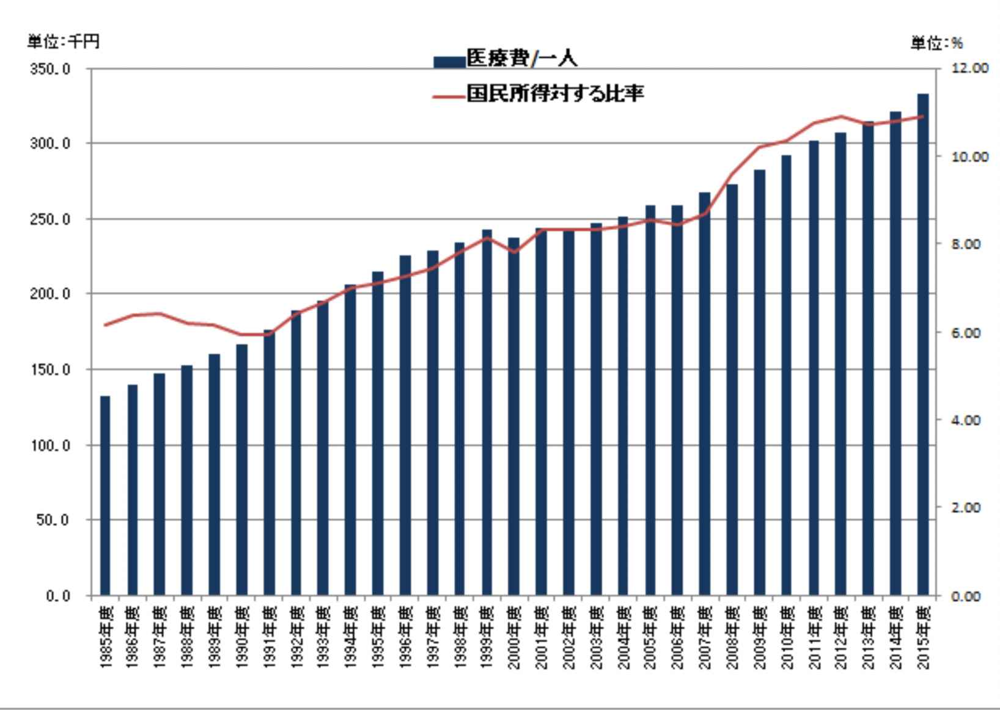
９．日本サイバー防衛＆国防白書 苫米地英人
今回は苫米地英人さんの本を二冊取り上げることにさせて頂いた。同じ方の本を２冊のせることはどうかとも思ったが、キンドルアンリミテッドの読み放題対象にしている著書の数が、他の方々とは違い圧倒的に多いのである。そのことを考えると、テーマの幅広さと、本の内容の質という点からも２冊取り上げる価値があると思うに至ったしだいである。
苫米地さんは、もともと自衛隊の５兆円の費用があれば、世界中の飢えをなくせ、それこそが本当の安全保障であると主張されている。また、他国の原子力潜水艦を１兆円ごとでリース契約すれば、複数国家の世界中に配備された原子力潜水艦を利用することができるとも提案している。実際、他国からリースしている国もあるのだという。
苫米地さんは、広く世界の軍事情勢についても非常に詳しいが、本書は、その最先端であるサイバー防衛について詳しく解説している。あわせて、「日本サイバー軍創設提案」もキンドルアンリミテッドの読み放題対象であるため、目を通してほしい。
もともと、サイバーの世界ではない現実の市街地での対テロは、各国では軍の管轄であるが、日本では警察の管轄になるなど発想自体が、ズレているというのである。そのようなズレている感覚で、サイバー防衛を考えると、組織としても、やはりサイバー先進国とは桁違いに少なすぎる人員体制となる。５兆円という費用にふれたが、お金はかければかけるだけいいというわけではなく、無駄なことにコストをかけても国民の生活の安全は守れないのである。そのようなことも分かっていないにも関わらず「この道しかない」とか、「守り切る」というような、何について言っているのか分からない、標語を与党がポスターにしているのだから、日本は、どうしようもない国なのかもしれない。ＩＯＴであらゆるものがネットにつながれば、それだけサイバーテロの影響を受けやすい社会になるということでもある。
イランが核査察を受け入れたのは、アメリカとイスラエルの開発したウイルスによる攻撃を受けたためと言われており、実際にサイバー攻撃というのは現実の世界で起きているのである。そしてこのことが物語るのは、ミサイルの打ち合いではなく、生活インフラをとめてしまうということが、最も直接的に相手国に脅威を与えることができるということである。
実際、私たちの生活で、電車を止められたり、電力を止められたり、水道を止められれば、都市部では生活ができなくなってしまう。大雪が降った日の、東京や、東北大地震直後の東京を思い出せばすぐに想像ができることである。
１０．スマホでサンマが焼ける日 江田健二
本書は電力技術の未来がどのようになるかについて、今既に進展中の技術開発情報をもとに、具体的な可能性を提示してくれている。これを読むだけで、明るい未来が想像できる。
私たちは、東北大地震を経験して現在の電力体制が非常にもろいことを思い知らされた。その後の計画停電や、電力の値上げ、進まぬ原子炉の廃炉プロセスを見てきた。そして、震災以後の今後の電力に関するプランが以前より安心できるものとなったと思える人などいないはずである。
それにも関わらず、意見広告として、日本電力事業連合会が俳優の石塚浩二さんを起用して「電力ミックスには原子力が必要です」と宣伝をしている。この組織の役員は、全国の電力会社の社長たちである。高い電力料金をとって、私たちのお金や税金を使って、利権の亡者たちが自分たちの利権を強化するための宣伝を公共の電波にのせているのである。あの意見広告というものを見て、違和感をおぼえない人が大半であれば、この国は非常に危険であると思う。電力コストは産業の競争力に直結する重要なファクターなのである。
私も昔から疑問であったのであるが、苫米地英人さんの「原発洗脳」という本を読んで、納得したことがあった。それは、東芝がアメリカのウエスティングハウス・エレクトリックという原子力発電の技術に関する企業を買収したとされているが、実はこれは、原子力に関するコアな技術を譲渡されていないというのである。考えても見てほしい、各国の原子力潜水艦は、超小型の原子力発電所の上に、数千人が暮らしている状態なのである。つまり本当の最先端の原子力に関する技術ノウハウというのは高度に軍事的な技術であり、商業的な原子力のしかも昔の古い技術だけ東芝、もしくは日本という国に高く売りつけられたということなのである。これは、古い使えない武器だけを買わされているということと同じように見える。
「スマホでサンマが焼ける日」を読めば、電力に関する技術革新も非常に速いスピードで進んでいることが分かる。そして、このような画期的な進歩は、私たちの生活を大きく変えていく。私たちが今まで、どうしても変えることができなかった日本の電力行政の巨大な利権構造も、一気に簡単に変えていってしまうのである。下記の５行の太文字部分は、本書から原文をそのまま引用した内容であるが、「この集中から分散へ」というコンセプトで、現在のあらゆる主流となっている土台は、根本からひっくり返される可能性があることを示していると思う。
「そう考えると、世の中は「集中から分散」へのシフトと同時に、「大きいから小さい」へシフトしつつあると思います。大きいことがいいこと、大きいことがパワーを持つ時代は終わり、様々なものをダウンサイジングすること、すなわち、もののサイズを小さくしてコスト削減して効率化することが重要な時代になってきたのです。」
これは農業についても、同じことで、福岡正信さんなどは、「集中から分散へ」ということのほうが正しく、日本にはそれだけの農地と山林があることを主張されていた。現在の、大規模農業が良いという風潮はこれと反しているように思う。正しく土地が、市民に配分されていれば、家庭菜園で必要な野菜の何割かは自分で作れるのである。ところが、日本の土地は税制のゆがみなどにより、九州地方と同じサイズの所有者不明状態になっている。
細かい、電力の未来については本を読んで頂きたいため、ここでは述べないが、本書の見つめる未来は、電力というものだけにとどまらず、私たちの生活全体の明るい未来であると思う。
本書でも、やはり大きな社会変革によって、私たちは無理やり嫌な仕事をするという必要性から解放されるだろうし、これによって、ベーシックインカムが制度として必要になるというような予測もされている。これはまさに、５冊目で紹介した「ベーシックインカムの時代が始まる」と見ている未来は同じなのである。
□おわりに
・予測不能な未来を歩く
読書によって、世界を変えるという試みの中に、私自身も生きている。実際、私は、去年の１０月から組織に所属しておらず、子育てと家事に専念をしている。しかし、読書をすることを通して、自分の認識世界を変えることを、さらに加速させ、最初の１カ月の間に、７冊の電子書籍をリリースし、そして今、この本は９冊目ということになる。８冊目は、５年前に拾ったハムスターとの生活を実話の本にしたためたが、その本は、１日で書き上げた。それまでの本の文量と比較すると少ない文量ではあったが、私が思い出せることや、私のそのハムスター（パム）への感謝の気持ちをあますことなく書くことができた。そして、手元にある写真も選んで本にすることができた。残りの７冊は基本的に４日程度でしあげていった。
他の取り組みにも手をつけ始めている。単なる趣味ではあるが、それについても、また１冊本にして趣味のレバレッジをかけていこうかと考えている。２０１６年平均寿命は女性が８７．１４歳で、男性は８０．１４歳と発表された。実際、私の母方の祖母は９０歳を超えているが、私とほぼ対等に議論ができる。自分の心配より、私の母や、私の心配をしてくれている。
高城さんの白本２では、５０年後には、平均寿命が１００歳になるのではないかと記載されていた。私は、８０歳まで生きるとしたら、現在４１歳だから、まだまだ若者だなと思っていたが、１００歳まで生きるとすると、まだ６０年も社会の変化を見て、その中で生きていくことができるということである。生きていかなければいけないのではなく、生きていくことができるという感覚をした方が良いのだと思う。
定年退職の時期が後ろ倒しされたり、年金支給開始時期が後ろ倒しされたりというようなことを聞くが、嫌なことをしながら長生きをするのではなく、長く続けられる好きなことを、好きだからこそ無理なく楽しむのが、今の生き方なのではないだろうか。このことは、堀江さんの本でも指摘されている。
私たちは、いやいや読書をして、自分を無理にアップデートして、環境にあわせていくのではなく、好きだからこそ読書をして、自動的に、自然にアップデートがされていっているという自分を生きているのである。
文字にすれば「読書」という言葉になっているが、キンドルアンリミテッドを使って、電子書籍で、９８０円という少ないコストで自分の認識世界を変えようというのが、本書の試みである。
「読書」という言葉の変化が自然に起こっているように、これから、今書いている単語自体は生き続けても、言葉の中身がどんどん変わっていくというような、そんな時代に私たちは生きているのだと思う。
あなたと、私の読書の旅が楽しいものとなりますように。
そして、あなたと私の認識世界が、明るく変わっていきますように。
本書を、手にして頂き、本当にありがとうございました。
次回は、３作目でお会いしたいと思います。中尾信之
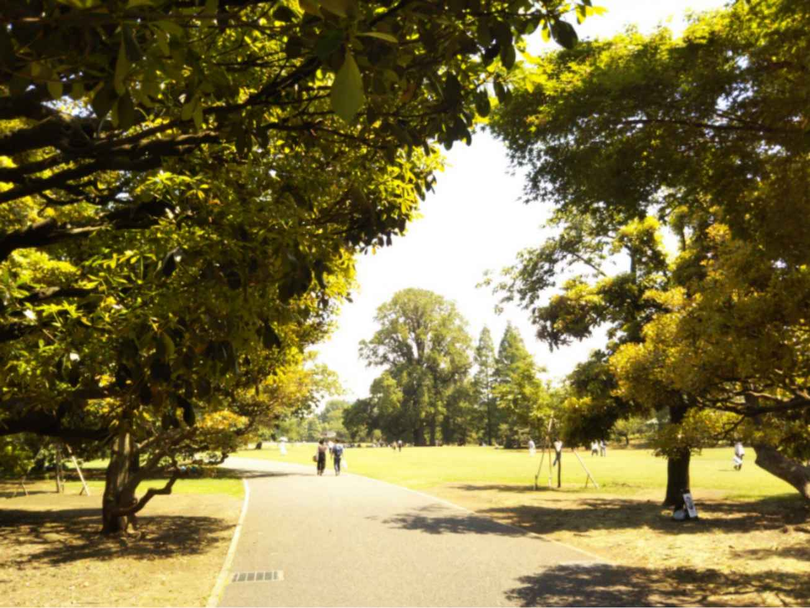
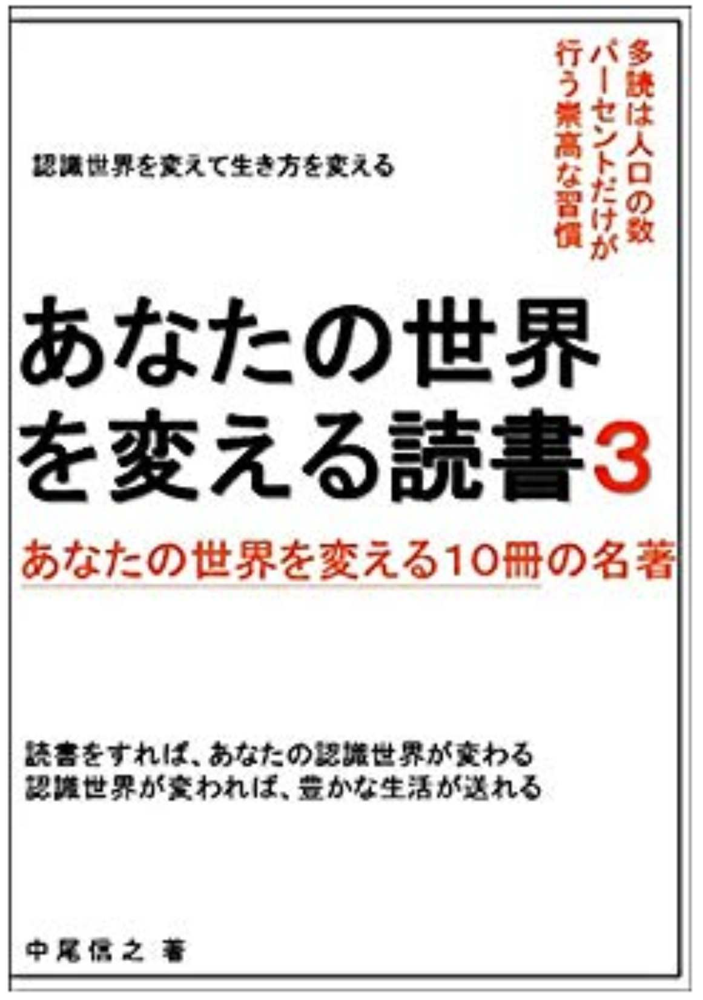
あなたの世界を変える読書３
あなたの世界を変える１０冊の名著
□はじめに
・読書によって世界を変える実装
□第一章 生き方のヒントをくれる本
１．１００％の結果を引き寄せる１％のアクション 鈴木領一
２．昆虫採集の魅力 川村俊一
３．病気は才能 おのころ心平
□第二章 世界のとらえ方を変える本
４．宗教の秘 密 : 世界を意のままに操るカラクリの正体 苫米地英人
５．マクドナルド化する世界経済 ベンジャミンフルフォード
６．帝国主義論 ( 光文社古典新訳文 庫) レーニン 角田安正（訳）
７．地球温暖化でウソをつくメディアと政府のトリック、
警察発表のトリックと、それをたれ流す新聞、テレビ 武田邦彦
□第三章 科学によって見方を変える本
８．３日食べなきゃ、７割治る 船瀬俊介
９．やってみました。１日１食 船瀬俊介
１０．植物という不思議な生き方 蓮実香祐
□おわりに
・ 常識の世界を超えて
あなたの世界を変える読書３
あなたの世界を変える１０冊の名著
□はじめに
・読書によって世界を変える実装
本書は、すぐれた読書をすることで、今までよりも高次元の認識能力を身に着けて、私たちの世界を変えることを目的にしているものである。言い換えれば、自分たちの世界の認識の仕方を変えてしまい、そのことによって、自分たちの行動変革を促していくこと、そして、それによって個々人が、自分だけの幸せを手にしていく生き方ができるようにすることが最大の目的だと考えている。
このシリーズは、本書をもってシリーズ第３弾となったが、キンドルアンリミテッドの読み放題の本の中から、おススメの本を紹介するという方法論については、第一弾からまったく変えていないので、月間９８０円のコストで、認識世界を変えるというのが主旨である。
私自身は２０１８年の３月になって電子書籍を公開し始めて、すでに英訳版も含めれば２０冊をリリースしたことになる。最初の一か月で、自分が出そうと思っていた書籍数を大きく上回ったように、やはり今もそのスピードは自分の予想を上回りおとろえていない。そして、また自分の生活にも変化が出始めている。組織に所属しない生活を続けていたが、組織に正式には所属しないままで、新たな活動をすることができるようにもなった。これは転職ということと少しニュアンスは異なるが、そのようなことに繋がった際に、私が最初に公開した書籍である「自分を生きる天職（転職）のすすめ ～１００％実力を表現する面接法～」に記載したことの正しさを、再び自分で証明できたとも感じた。
生き方についての考え方という点と、対面する相手に実力を１００％伝えるという点の両方について正しかったということを再認識したのである。そして、また第一弾、第二弾では、健康に関する本も、ピックアップしてきたが、今回も、いくつか健康や病気に対する考え方の本をピックアップしている。なぜならば、世界を変えて、行動を変えていくためには、自分の心のレベルを上げていくことも大切であるが、その際に、健康である状態を、自分の意志で作っていくことが前提となるからである。私は、歯の掃除以外、もう何カ月も医者にかかっていないし、薬も飲んでいない。それは多読を続けるようになった結果である。そして最近は、自分のエネルギーの消費状態を変えていけるように食事についての考え方も少しずつ変えてきている。このことについては、第三章の本で少し詳しくふれたいと思っている。
シリーズ第二弾では、「没頭力」ということが、ひとつのテーマになり、それを磨くことの重要性などを紹介した。また、同時に自分の世界を生きるために、現在の最大の宗教である「お金教」の支配から脱出するメンタリティの持ち方についてもふれた。その考えを推し進めていくと、「ライフハックならぬ秘伝忍法 充実世界の住民になるための思考」という最近公開した本の内容にもつながっていくが、今回、紹介する１０冊についても、その１冊、１冊の魅力のみならず、この１０冊をひとつの知識体系として、知識の集合体として自分のインストールすることで、自分なりの世界の認識能力を身に着けることができると考えている。
そうすることで、自然と、自分の考え方のフレーム（ブリーフシステム）が、今までとは違ったものになり、新たな思考形態を獲得し、新たな行動形態を持った、今までとは違うあなたになれると信じている。そして、そのアップデートは一度ではなく、常時、自分で素晴らしい本に出会うことで、アップデートし続けるということが大切なのであると思う。
あなたや、私が、日々のすぐれた読書によって、より高次元な人間にアップデートされていくことが、自分のためにも、社会のためにも必要なのだと思われる。第三弾である本書は、その世界を変える認識法について、実際に、認識方法を変えていくことから、行動を変えていく、その実装段階に入って行く段階になっていることを想定している。
□第一章 生き方のヒントをくれる本
１．１００％の結果を引き寄せる１％のアクション 鈴木領一
この本は非常にコンパクトにまとまった読みやすい本である。余計なことが書かれておらず、文章も非常に読みやすく、要点が分かりやすく伝わってくる。世界の認識の仕方を変えることについて理解がしやすいのは、もちろん、普通の引き寄せの法則とは一線を画す大切な内容が書かれている。第一弾で紹介した、「人生ドラクエ化マニュアル」を執筆したＪＵＮＺＯさんも、受動的な引き寄せの法則について批判をしている。考え方の変化という部分は、一般的な常識という考え方のフレームにいつも無意識に沿うことは楽であるが、それが思考停止につながっているため、そこを脱することが推奨されている。
この本で特に私が大切と思ったところは、 「１％のアクションを重視」 するということである。１％でもいいからアクションをすれば、自分が考えていること自体にも良い影響があるという。その１％の行動によって、自分の考えが後押しされるということである。これが、鈴木さんの言う、 「行動によって動機が強まる」 ということである。
考え方の変化↓１％のアクション↓考え方の強化↓さらなる考え方の強化というふうに、ちょっとした行動変革が、認識変化をさらに促し、そしてさらなる行動変化に繋がっていくというプラスのスパイラルがまわっていくということになる。ここで嬉しいのは、１％だけでも行動すれば良いということである。行動は大きく変えていくに越したことはないのかもしれない。しかし、やはり最初はなかなか難しいし、それに誰もが新しい考え方を獲得するのが難しいと思っているうえに、誰もが、そこから少しでも行動を変えるのが難しいと考えている世界では、たった１％、ほんの少しでも行動を変えるという領域に入ってしまえば、すぐに他の人とは違った領域に到達できるということであると思われる。
そもそも、読書をしている人が多くないし、多読をしている人はもっと少ないという事実が、人が考え方や、行動の変革をすることを、そう簡単にはしないということを証明しているようでもある。
少しのアクションを積み重ねること、この少しの勇気が、私にも、あなたにも、大きな一歩になるのではないかと考えている。これが、 「ゼロとイチの臨界点」 ということなのかもしれない。この小さな一歩をすることが、その先の自分の望むことへの最短の方策ということであると言える。
２．昆虫採集の魅力 川村俊一
この本は、まさに没頭力を持った人間の生き方が分かる書籍である。すぐれた専門性を持った人は、ひとつのことを○○バカと呼ばれるほど本当に好きで、そのことばかり考えている人が多いと思う。たとえば、植物の研究者の方は、そのことばかり考えていて、いろいろな研究に打ち込んだり、自然の中に分け入っているのだと思う。「地球２００周！ ふしぎ植物探検記」という山口進さんが書かれた本でも、そのような研究者の方の生き方を垣間見ることができた。森山徹さんという方の「ダンゴムシに心はあるのか 新しい心の科学」という本や、佐藤克文さんという方が書かれた「ペンギンもクジラも秒速２メートルで泳ぐ～ハイテク海洋動物学への招待～」という本でも、研究者の方の生き方がかいまみえる。
研究者の方というのは、研究職という一種の独特の職業を得ることで生きる糧を得ているので、そのことは素晴らしいし、羨ましいともいえるが、その席数が少ないことを考えると、同じ方向を目指している人が、研究職以外の生き方があることを知るのもひとつの希望であるように思う。
この「昆虫採集の魅力」は、蝶が好きで、好きで、たまらない著者が、どのような生き方をしているか、どんな考え方をしているかということが分かる面白い本である。私も小さいころ、それほど詳しいわけではなかったのに、小学校で「虫博士」と勝手に先生に呼ばれたりしていたこともあったし、知識の量ではなく、ザリガニやウナギを捕まえる技術の面では、誰にも負けない自信があった。今でも、公園で子供たちがザリガニ釣りをしたり、網でザリガニを取っていると、その中に混じって、素手でザリガニを捕まえて彼らに協力をしている。
私は幼い頃から、ムツゴロウさんこと、小説家で、動物王国を主催されている畑正憲さんに強く憧れていた。私が小学校の頃から、ムツゴロウさんはおじいさんに見えたが、実際は１９３５年の生まれで、２０１８年現在、８３歳であるから、私の祖母よりも１０歳ほど、まだお若い方である。最盛期のムツゴロウさんほど、メディアに露出しなくても、最盛期ほど猛烈なスピードで執筆をしなくても、好きなことを突き詰めて、それを楽しみながら仕事にしている人は世の中に少なからず、いるということが分かる。著者は昆虫商という蝶の標本を仕入れて売ったり、標本を作ったりする職業になるようであるが、本の中にはテレビチャンピオンで初代昆虫王になった人の話も出てくる。私も熱帯魚のディスカスで、いろいろな種類を作っているブリーダーの存在は幼いころから知っていたが、蝶についても、人工的に違う種類をかけあわすことをされている人がいることを、この本で初めて知った。
また著者自身も未開の地に分け入り自身で蝶を採集してまわった遍歴を持っておられる。亜熱帯地域で、いろいろな苦労をしながら、蝶を追い求める。なかなか帰国せずに死んだと思われたりするほど、蝶集めに熱中する。大学生の間にも、未調査の土地とされるところにいったりと、卒業してからも、すぐに危険な地とされるような場所に行ったりと、とにかく行動力がすごいのである。蝶はそれだけ魅力があるものなのだ。現在でも、そのような生き方をしてきた人がいるのである。本当に人は、自分が選べば、好きな道を生きられるということを、この著者や、彼の仲間の昆虫商の方々、採集家方々の生き方は証明していると言える。
蝶のことなら、何時間でも話せるのに、プライベートのことになると寡黙になる人が多いという昆虫商の生態なども面白い。
３．病気は才能 おのころ心平
第三章で健康を保つために重要な考え方を獲得するための本を２冊紹介するが、ここでは、病気というもののとらえ方についての本を紹介したいと思っている。心と体は、つながっていて、お互いに影響を与え合っているものであるから、私たちの健康や、病気についての考え方自体が、自分たちの健康について影響を与えるということであると考えられる。心と体の関係について考えること、健康ということをどのように考えるかということが、すなわち自分の命や、生活について、どう考えていくかということに繋がっているということでもあると思う。
この本の著者によれば、「病気は才能であり進化の過程である。マインドをかえバランスをとれば病気はなおる。病気は進化の前兆」ということである。「あなたの世界を変える読書」第一弾で、村上和雄さんの「生命の暗号」という本を紹介し、「６０兆の細胞と３０億の遺伝情報のほとんどは眠っているがオンにするだけで奇跡を起こせる」ことを解説していたが、病気という症状そのものだけに捕らわれるのではなく、自身の細胞と遺伝子の力を最大限発揮し、「病気治って良し」という許可を自分の心がだせば、体も改善していくという法則が紹介されている。
このような考え方は、非常に強いストレスを受けた人が、心（脳）の一部に物理的な傷をおい、そこと関係する体の一部が傷を負うという科学的なプロセスと同じである。傷をおったプロセスと同じように、心（脳）の認識の部分を治すことで、物理的に体がおった傷をいやすことが可能であるということである。
これは科学的ではないことではなく、普通に考えると、治すことができないと思われた病気が治ることがある理由が、このようなところにもあるのである。ここにも、普通の常識だけでは理解できないが、深い科学では理解できることがあるということである。まさに、「病気というものの考え方の意識改革」なのである。
季節の変わり目などに、体調が不安定になったり、私も肌荒れになったりするが、これも体が環境に適応していくために、自然にバランスを取ってくれているのであり、出てきた肌荒れの症状を憎むというよりも、環境に適応するために頑張ってくれているのだなと考えたり、そのうえで、「治って良し」の意思を持つことが大切だと思えるようになった。
本書によれば、体は比較的、強い部分が、このような不調を引き受けてくれているのだという。そのように考えると、症状だけを悪者扱いするのではなく、治るように、きちんとケアしたり、排毒したりという自分の行為を変える方に、意識を向けることも考えられるのだと思う。
□第二章 世界のとらえ方を変える本
４．宗教の秘 密 : 世界を意のままに操るカラクリの正体 苫米地英人
苫米地さんの機能脳科学の専門家であるが、脳の研究をするにあわせて宗教の研究や、実際の修行のようなこともされている。またオーム真理教の事件の際は警察に協力して脱洗脳を実践するなど、知識と実践経験の双方を兼ね備えた方である。宗教に関する本も多く執筆している。
この本の冒頭では、マザーテレサがなくなる前に「神がいないのではないか」ということを考えて思い悩んでいたことが紹介されている。カトリックにおいては、そもそも女性は神父さんになれない。まるで土俵に女性があがれないというようなものである。どれだけ人望があり、人々に奉仕し、多くの方に慕われる優れた方でも、そこらへんにいる神父さんより格下に扱う、それがカトリックの世界なのである。
人を平等に扱うのが、キリストの教えなのではないかと私などは思ってしまう。キリストが神の無償の愛を説いたのに対して、キリスト教は、神との契約という行為を必要とする。信じるものしか救わない思想に置き換えられているのである。
苫米地さんが指摘しているのは、宗教が組織化、形式化する中で、最初の開祖の考えから大きく離れた別物になっていることを指摘している。この本では、キリスト教が、キリストの手から離れて、直弟子の手に渡り、そこから当初はキリスト教を弾圧していたパウロに渡り、そしてローマ帝国の為政者や、キリスト教の組織に移っていく間に、変性していった過程を理解することができる。
また他の書籍では、釈迦がもともと差別を生む思想につながるバラモン教の輪廻転生を否定して自身の教えを広めていったにも関わらず、日本の仏教は、輪廻転生の概念を持ち、釈迦が否定したお葬式でお金もうけをしている。文化として冠婚葬祭をすることは良いが、生と死についての考え方をお金や恐怖で支配するのはいただけないことである。
町で、聖書を配っている人や、キリスト教の教えを広めようとしている人たちは、非常に穏やかな、落ち着いた雰囲気をしている。それと同時に、機械的な印象も多少受ける。なぜならば、宗教という思想商品に依存できている反面、自分で考え、自分で悩み、自分の世界観を構築することをしていないからであると思う。
苫米地さんの、この本の素晴らしいところは、宗教というものの本質を分析して伝えると同時に、今は、誰もが「お金教」に支配されがちだということを指摘している点である。私たちは実生活上、お金を交換の手段として使うことは現状、避けられないが、しかしそれを絶対として、宗教のように知らないうちに信奉しすぎてしまうことは、自分の幸せを見失うことに繋がるように思われる。だからこそ、冷静な目で、宗教の論理を見つめ、お金今日の論理を見つめて、そのうえで世界の認識をしていくことが大切だと私も考えている。
５．マクドナルド化する世界経済 ベンジャミンフルフォード
自然農法を提唱されていた故、福岡正信さんの本について少しだけ、前のシリーズでもふれた。しかし、福岡さんの本は、キンドルアンリミテッド対象ではないので、ここではメインの本としては紹介できないが、福岡さんの本に書いている内容を知ったうえで、ベンジャミンフルフォードの本を読むと、深く理解できる部分があった。
福岡さんの本で、アメリカの農業を見学された際、規模が大きな農業をしているのに、彼らはいくら売上があっても、利益が出ておらず、農民は非常に貧しい生活をしていることが書かれていた。そして、それと似たような状態に日本の通常の農業が置かれている状態に近いように思われる。
マクドナルドのような巨大な資本が、簡易な食べ物をすぐに食べられるシステムを作り、それを消費者に提供していることは、それなりに現代社会に対して、役割を果たしていると言える。初めて行く土地で、何を食べようか迷った際に、マクドナルドや、ハングリージャックがあれば、そのブランドネームに安心して、そこに足がむいたりする。
店舗や輸送の効率的な運営は、経済システムという意味でも、無駄を減らしたりすることで、資源の無駄も減らし、社会の役にたっている面もあるように私にも思える。ところが、そういう側面だけではない面があることを フルフォードさんが指摘している。
自然の中には多様性というものが非常に重要なエッセンスなのである。しかし、大資本の行う大きな商売を支えるためには、単一的な生産物を、徹底的に人為的に管理することが必要になってくる。そういうところでは、農業をする人が鋭意工夫をしながら、作物を育てるというよりも、単純な作業をする工夫のような人だけが求められるようになる。だからこそ、そこには付加価値を出す必要がなく、単純工だけが求められるというのだ。工場の中では、それで良いかもしれないが、オープンな環境の中で、野菜を作る際に、単一の植物ばかりを何年も、多くの農薬を作り続けることで、土地が疲弊していくとも言われる。
農業をしているというより、農業機械に使われている奴隷のように働いているというのである。これは工場で働いている工夫と同じようなイメージである。農業機械だけではなく、必要以上の農薬をまくことによって、見た目は綺麗かもしれないが、栄養や味がない野菜を作っている。それだけではなく、農薬を体に蓄積してしまうということになってしまうのである。
「昆虫採集の魅力」という本でも、自分で蝶を繁殖させている方が、普通に買える野菜を蝶の幼虫にあたえると、黒くなって死んでしまうことを紹介している。良く洗えばよいというものではなく、根から農薬を吸収させているため、洗うだけではどうにもならないというのである。より、複雑な構造になっている人間は、すぐには影響がでないが、排毒を上手くできていないと、なんらかの影響を受ける可能性があるともいわれる。
福岡さんも自然農法を始める前に、農業試験場で働かれていたため、その時の経験も踏まえて農薬の効果について指摘をしている。農薬の試験においては、いろいろなパラメーターを一定にしたうえで、ひとつの農薬の試験を行い、結果が出たか出なかったかということを、限られた情報で確認する。たまたま、ある実験で効果がでても、実際に、オープンスペースの環境で、この農薬を利用すると、さまざまな要素の影響の複合的な結果として、試験場で得た結果ほど、増産にはつながらないのである。だから、農薬を減らしても、収穫が減る量は、農薬を減らした量とは、比例しないと言われている。
福岡正信さんの書籍紹介
「自然農法 わら一本の革命」「自然を生きる」「無の哲学ⅠからⅢ」
６．帝国主義論 ( 光文社古典新訳文 庫) レーニン 角田安正（訳）
シリーズ第２弾では、「社会主義の誤解を解く」という本を紹介した。その時、資本主義も社会主義も純粋な形では存在せず、それらが融合して、修正資本主義という形で、バランスを取りながら、現在の社会は成り立っていることを書いた。それでは帝国主義とは何なのかというと、欧米列強が、経済体制としては資本主義を取りながら、そして社会政策もしているので、修正資本主義体制をとりながら、強い経済と強い軍隊を持っていることを背景にして、他の国の民や他の国を支配していこうとすることである。
君主がいようがいまいが、民主主義をしているということを誇りにしているヨーロッパ諸国や、アメリカが、戦争によって、他国を侵略して、その侵略の上に、自国の一部の強力な資本家に有利な経済体制を作っていくということである。事実、紳士の国イギリスは、自分たちが売るものがないにもかかわらず、中国にはアヘンを買わせて、中国からお茶などを持ち去っていったのである。このことは次に紹介する「米中論」にも紹介されていることである。私に言わせれば、どこが紳士の国なのか、文化の国なのかと思う。そして彼らと同じように競い合って他国に侵略して行ったのが、富国強兵を合言葉に、市民の富を、国という箱ものに集中して、帝国主義にひた走った日本である。その道を突き進むようにしていった明治維新というものが素晴らしいものだったわけはないのである。
帝国主義は、民主主義と、資本主義の中から生まれている。良いイメージがある民主主義と、良いイメージがある資本主義。この両方が、悪いイメージの帝国主義と相反せずに、同時に存在しえるのである。これは恐ろしいことである。
そして、この帝国主義は、強い国が弱い国、強い国の人が弱い国の人を支配する、富を吸い上げるということだけを意味しない。それに加えて、強い国の中で、圧倒的に強い資本家が、圧倒的に多数の、しかし弱い労働者から、富をしぼりとっていく体制であるということなのだ。資本の極度の集中は第二次大戦後に起こったのではなく、すでにレーニンの「帝国主義論」に、いくつもの産業について、事細かに書かれているように、すでに第一次大戦よりも、ずっと前から急激な集中が進んでいたのである。資本の集中は、効率化のためには必要であるが、圧倒的な力の差を生むという点では、過度の集中は健全さを阻害する。権力が集中しすぎることが良くないのは、民主主義下でも、社会主義下でも同じである。
帝国主義と、資本主義はまことに相性がいいのは、この圧倒的な資本家と、そこに使われる労働者の大きな力の差を生むという点である。それでは、民主主義という、民が決める権利を持っているのに、どうしてこれが機能しないのかということが問題になる。
その問題に、真剣に考えたのが私の書いた「アニオタ革命 アニオタが世界を変える 銀河英雄伝説 神のみぞ知るセカイ から探る社会変革の可能性」という本である。しかして、労働者や、市民は多数であっても、全員が覚醒して、正しい知見を持つことは不可能に近い。そして、そうしないように、体制を組み、思考のコントロールが、常識という形でなされている。また、圧倒的な資本家側は、富と情報をコントロールして、市民が考えないようにしているのである。
いずれにしても、１９１６年に執筆され、１９１７年に出版されたこの本が、１００年以上前に指摘している状態は、今も続いているということを理解したうえで、自分たちはお金というものとの距離を考えていきたいものである。
７．地球温暖化でウソをつくメディアと政府のトリック、
警察発表のトリックと、それをたれ流す新聞、テレビ 武田邦彦
武田さんは、明石家さんまさんのテレビ番組に出るなどメディアでの露出が多い方であるが、テレビ番組では、重要なことを省いて、武田さんの考えが面白おかしく、単なる奇抜な意見のように取り扱われていることがある。しかし、地上波ではない、水道橋博士と、宮崎哲弥さんの番組、「博士も知らないニッポンのウラ」では、じっくりと武田さんの考えを説明してくれている。ここで紹介する書籍でも、先生の主張を明確な数字とともに理解することができる。
例えば、温暖化で氷が解けると言われているが、仮に温暖化した場合でも、北極の氷は溶けてもアルキメデスの原理で、水位には影響がない。そして、南極の氷は温度が数度上がった場合でもマイナス４８度くらいの温度になり、逆に蒸発した水が氷ることで氷が増えるというのである。
このような予測が、正式に世界的なＩＰＣＣ（気候変動に関する政府間パネル）で発表されても、それらを国の環境省などの機関や、環境保護団体はアナウンスしていないのである。自分たちの組織の利益のためになるように、断片的な情報しか流していないのである。ゴア元副大統領などは、嘘の数字を出して世界的に恐怖をあおり、環境利権を作ろうとしたにすぎない。二酸化炭素の排出権取引も、お金で排出する権利を取引するだけで、排出量は減らないのである。この排出利権を苫米地英人さんも、古くから欧米の仕掛ける利権であることを指摘している。適当なゴア元副大当郎は６メートルの推移上昇と言っていたが、ＩＰＣＣは１０年で３センチと予測しており、大きな乖離がある。
ごみ問題も同じである。私たちは、まったく正しい情報を持っていない。ペットボトルの分別収集をするにしたがって、ペットボトルのリサイクル量は増えないまま、生産量だけが増えているのである。このことを、予測していた環境運動家は、分別収集の開始前に、分別収集に、強く反対だったのだという。しかしリサイクル量は増えないまま、毎年、何千億円もが無駄に利用されているのである。
現状のリサイクル技術では、分別をすればするだけ、余計なエネルギーが必要になるというのである。ペットボトルを分別して収集しても、それらをリサイクルできる量は増えておらず、ほとんど燃やされているというのだ。
リサイクルされず燃やされているだけであるのに、分別収集のルートに乗ったものは、リサイクルしたとしてカウントしているルールがある。 実際のリサイクル率と、本当のリサイクル率は、何倍もごまかしているのである。こんなバカなことがあるだろうか。経済産業省や環境省はうそつきの集まりと言われても仕方がない。
欧州のルールでは、燃やしたものはリサイクル率に含めないという明確なルールがある。ただし欧州にしても、出ているリサイクル率は怪しいと武田さんは言う。燃やす場合は、本来なら他のゴミと一緒に燃やされる方が、エネルギー効率が良いというのである。分別してしまうことで、生ごみなどの燃焼率も落としてしまっていると指摘している。
温暖化と、リサイクル、このふたつだけをとっても、これだけ情報の正しい伝達がされていないのである。私たちの考えている常識というもの、良い行いと、悪い行いというものは、このように非常に脆弱な判断の上に成り立っている。武田さんの書籍を読むと同時に、水道橋博士の番組の映像もあわせて見て頂けたらと考えている。
□第三章 科学によって見方を変える本
シリーズ第二弾では、苫米地英人さんの本を二冊紹介した。本書では、渡瀬さんの本を二冊紹介したいと思っている。というより、この二冊はセットであるようにも思われるので、分けずに紹介したいと思う。
８．３日食べなきゃ、７割治る 船瀬俊介
９．やってみました。１日１食 船瀬俊介
そもそも、読書によって世界認識を変えて豊かに人生を歩むという考え方は、正しい情報を得て、生き方を変え、本当の豊かさを見つめる力を身に着けることによって成り立つ。ここにおいて、食べるということと健康を保つための医療という、この切っても切り離せないふたつのことについて、正しい認識を持つことは、非常に重要である。薬食同源（医食同源の元になった言葉）と中国では言われるように食べることと、健康を保つことは、同じことということである。
私たちが、高次元の認識能力を身に着けていくためには、必要な情報をインプットし、不必要な情報はインプットしないか、インプットした場合でも、心身に深く取り込まずに捨ててしまう必要がある。食べ物についても、これとまったく同じであると私は考えるようになった。高次元の認識能力を持った、優れた存在であるためには、不必要なものを食べすぎてはいけない。不必要なものを取り込んだ場合は、排毒して体を綺麗に保つことが有益である。このような考え方を、船瀬さんの２冊の本は分かりやすく教えてくれる。
私はもともと、太りにくい体質で、いつも痩せていると思われている。しかし、ダイビングに行ったりした時に、水着になると、それなりに筋肉があることが分かるようである。２０年前から、ほとんどその体系を維持してきたが、１年ほど前には、そこから４キロほど体重が増えた時期があった。そして、ずっと維持してきたベスト体重の際に履いていたズボンが３本ほど履けなくなっていた。もともと自分でも痩せていると認識していたから、ベスト体重と思っていた基準が、少し移動しただけであると思っていた。しかし、いろいろな本を読んで、自分の食べる量を改めて見直し始めたところ、２０１８年になって、それらのズボンがはけるようになった。そして、夜食として食べていたものを、ほとんど食べることがなくなった。そしてベスト体重であるから、快適に過ごせている。
もともと、日本人は江戸時代まで１日２食だったと言われている。そして、「１日２食は自分のため、３食目は医者のため」とドイツでも格言があるように、また自分が開発したトースターが売れるように、エジソンが１日３食マーケティングを推進したと言われるように、医療業界や、家電メーカー、電力会社のために、私たちが必要以上の食べ物を自分にインプットする必要はないのである。カロリー栄養学も、フォイト栄養学も、現在の栄養に関する理論の前提になっている理論は大きく事実と乖離している。だからこそ、多くの人が健康を害しているのである。それらの理論が正しく、健康診断や医療の施術が本当に正しい賢知に基づいて、科学的になされていれば、ここまで医療費は膨らまないし、もっと人々は健康になっているはずである。
食べれば食べるだけ栄養素を取れるのではなく、余計な量を取れば取るだけ消化にエネルギーがかかり、余計な体力を消耗してしまうのである。私もベスト体重ではなかった時期には、なんとなく、いつもお腹がもたれているような感覚が少しだけあった。まだまだ、食べれるとか、美味しく食べれるということと、ちょうど体に良い量というのは、必ずしも一致しないし、食べすぎによって心が麻痺していれば、余計にその感覚が崩れていってしまうようである。だから、腹八分や、腹六分ということを意識して、お腹がすいたことを認識できる状態、生きていることを認識できる状態を幸せだと感じることが大切で、そのような時こそ、長寿遺伝子がスイッチオンになり、キラー細胞が活性化し、毎日、５０００個生成されるというがん細胞などが駆逐される状態を作って行けるということである。
このことは「貧乏子沢山」という言葉からも分かる。少し論点が異なるので、少し整理すると、子供を育てる余裕がない人が沢山子供を持つことは、あまり良いことではないようには思う。ただ、ここでこの言葉を持ち出したのは、粗食な食事をしていることが、健康な体を作るということなのだ。お金があるから、美味しいからといって、西洋の食文化におぼれてはいけないということである。高次元の認識力を持った、多読をしている私たちは、そのような次元の麻薬のような楽しさのみに拘泥することは、ほどほどにしたいということである。
そして、これらを無理して行うのではなく可能な範囲でやってみるのが良いようである。単純に、朝ご飯をぬくだけで、胃の中を１２時間以上、空けておくことができ、体の細胞たちをスイッチオンにすることができる。私が、自然に行ってきた、朝ご飯を食べない習慣は、理にかなっていたと、改めて思ったのである。だから、４１歳であるが、先日、海外に行った際も、みなが３５歳でしょと声をかけてくれた。
「やってみました。１日１食」の中でも、ほとんど青汁だけで活き活きと生きている方のことが紹介されているが、その方も飛行機の中で、機内食をいらないと断るようである。私も、行きの飛行機で、普段から朝食を取らないので、機内では、朝ご飯は断り、ジュースだけを頂いた。また、帰りの飛行機でも、乗る前に友人と軽い食事をしたために、それで十分であるから、おやつの時間に出てきた機内食の御飯には手をつけずに、アイスと果物だけ頂いた。
そのようにして、食べる量を自分で考えていくというのが、賢いやり方であると思う。私も残すのが勿体ないからと、他の人が残したものも食べるようなことを頻繁にしていた。しかし、残すのが勿体ないと言っても、不必要に取り込まれた食料は、どのみち体内で有効には取り込まれず、逆に体に負荷をかけるのであれば、食べることは避けた方が賢明なのである。食欲という次元の欲求にとらわれすぎず、適度な食料を取っている人こそ、頭もさえて、適切な行動をしていけるのである。
１０．植物という不思議な生き方 蓮実香祐
私は植物が好きなので、部屋の中で植物を育てたり、公園によく出かけたりしている。植物好きがこうじて、「新宿御苑 癒しの瞑想スポット ～都会のオアシス～」と「屋内植物園計画 小さなスペースで緑を楽しむ魔法」という植物に関する本も公開した。
今回紹介する「植物という不思議な生き方」という本と出会ったのは、去年の十一月のことであった。これから、どんどん寒くなっていくという時に読んだため、植物たちが季節をどのように超えていくのかということを、この本の知識と照らしながら楽しむことができた。この本は、植物だけではなく、植物と昆虫、動物たちの関係や、地球と植物の歴史などについても、分かりやすく説明してくれている。非常に読みやすいだけでなく、植物たちのことを擬人化して説明してくれているため、とても理解しやすい文章になっている。
もっとも心に残っているのは、タンポポについてである。冬が寒いエリアに住む植物にとっては、葉を枯らすということが効率的な仕組みであることが紹介されているが、タンポポやオオバコなどは冬の間も緑の葉を蓄えたまま冬を越す。この時、葉っぱを地面にぺたっと張り付けたような形態で、そして葉を重ならないように花のように配置して、効率よく光を吸収できるようにしている。エネルギーの消費が少ない冬に、効率よく光合成をしている。そして根は深くに張って栄養を吸収する。どうして冬の間も頑張って生きているかというと、春になってゼロから成長していくよりも、冬を成長した姿で乗り越えた場合、春が来た時に最初に花を咲かせることができ、虫たちを呼べるというのである。
このことを知ってからタンポポを見ると、本当に地面にぴたっと張り付いて、葉を綺麗に花のように配置しているのである。蓮実さんは、この姿を、地球を背負っているという表現をされている。今年の春先は、子供と一緒にタンポポの花を探したり、綿毛を飛ばしたりして遊んだ。最初は上手に綿毛を飛ばすことができなかった子供も、途中からは吹くことだけではなく、腕を振って飛ばしたりと、どんどん上達していった。
タンポポ以外にも、いろいろな視点で、植物の生き方、性質を説明してくれている。たとえば、植物と、アリの関係である。植物はアリに守ってもらうために、ミツをアリに分けることがあるが、ここに割って入るのがアブラムシである。アブラムシは植物よりも甘いミツをアリに分けることで、植物から追い払われないようにしているという。さらに、ここに別の生物が入ってきたりする。このあたりのことを分かりやすく説明をしてくれている。
「植物は逆立ちした人間である」とアリストテレスが言ったことが紹介されているが、この本を読むと、植物が人間より下位にある生き物というわけではなく、この地球を形作ってきた存在であり、恐竜を絶滅させた一因にもなり、そして、常に多様に進化し続けている存在であることが分かる。
植物の日々の行動（反応・作用）や、世代を経た進化（変化）にどのような意志や、意図的な戦略のようなものがあるのかは分からない。そこが私には不思議でたまらない。しかし、私は、この本が、植物を擬人化して表現していることが、とても自然なことであるように思えた。そして、私たちは植物の生き方に学ぶことがあると感じることができたのである。
□おわりに
・常識の世界を超えて
多読をすることで、高次元の認識能力を身につけていけば、世界を捉える認識が変わり、人は変わることができると私は信じている。これは、間違いのないことであると思う。そして、認識能力を高めるための本を、すでに、このシリーズ３回で３０冊紹介をしてきた。
以前のシリーズで、この中で紹介した本の内容が分からなくても、他の本との連携した知識形態を取り込むことで、少しずつ理解が深まっていくということを記した。人間の脳が、そのようなネットワークでできているのと同じことであると思う。ところが、今回紹介した船瀬さんの本にもあるように、人は、今まで見たり聞いたりしてきたこと、それまで真実だと思ってきたことを変えることは、なかなかに難しいことのようである。それが変化のための痛みなのか、単なる拒絶反応なのかは置いておくとして、新しい認識の仕方を受け入れられない人が多いということも事実である。
今までの狭い見方から覚醒する、目覚めるという感覚は、何か古い皮が、一気にはがれるような、世界にかかっているベールがはがれるような、気持ちの良いことであると私は思う。もしくは、見なくていいものを見てしまう、分かってしまうということでもあるかもしれない。それでも、その先にこそ、自分の自由と、幸せがあるということなのだ。
常識という考え方は、世の中の秩序というか、安定状態のためには、ある程度必要なことなのかもしれない。それがあるから、為政者は、その安定の上に、「望ましいと期待する行動」を人々に取ってもらい、そのうえにあぐらをかいていられるのである。それを仮に「良し」としても、そのような社会システムのことを理解したうえで、多読によって、より高次元の高みに上ろうとしているあなたには、その高みから、周りの世界の常識という習わしには、根拠がなく、誤っていることが多いことが簡単に見て取れるようになるはずである。
その時、周りの人のことは置いておくとしても、あなた自身は、それらの仮そめの常識にあわせず、自分が正しいと思うこと、自分が幸せだと感じられる行動をとることで、自分の幸せを自由に得て頂きたいと思うのである。他の人が、なにやら遠回りをしたり、たいへんなことを悲しい顔をしながら頑張っていても、高みから景色の見えるあなたは、そのような遠回りを冷静に無視して、最短ルートで、最適な道を楽しんでしまえばいいのである。
一般的な考えである常識を超えてしまうと、あなたは接する人を選ぶようになるはずである。なぜなら、ある程度、同じ高みに来ていない人には、常識の外の本当の世界が、ベールにかかっていて見えていないのだから、話があわなくなってしまうのである。変わること、知ることに強い抵抗を示す人には、思っていることを話すのが面倒になってくる。逆に、こちらが話したベールの向こうの話を、すんなりと受け入れる人には、こちらが知っている重要な考え方を、すらすらと話せることになる。これは、類は友を呼ぶということである。
すでに私たちには、少なくとも３０冊の知識体系がインプットされ、これらによって、私たちの認識力はかなりのアップグレードができていると言える。そして、このこと自体も、私たちは苦労しながらやっているのではなく、楽しいから良質な情報を取り込み、より高次元の認識能力を得ようとしているのだと思う。
読書によって、そして、それらの情報を自分なりにかみ砕き、自身の経験や、他の知と融合させることで、私たちは確実に、進化をしてくことができるのだと思う。
読書によってあなたの世界観がつくられ、
あなたの認識する世界は変えられる。
認識世界が変われば、あなたが変えられる。
そして、豊かな世界を生きられるようになる。
本書を手にして頂き、本当にありがとうございました。
中尾信之
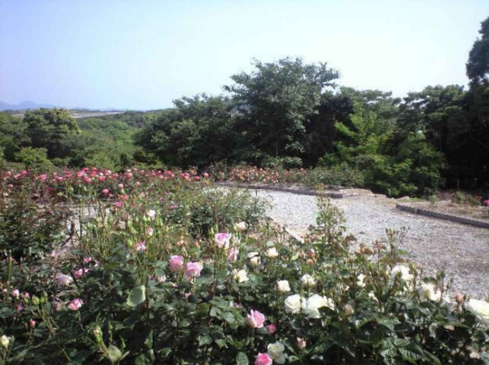
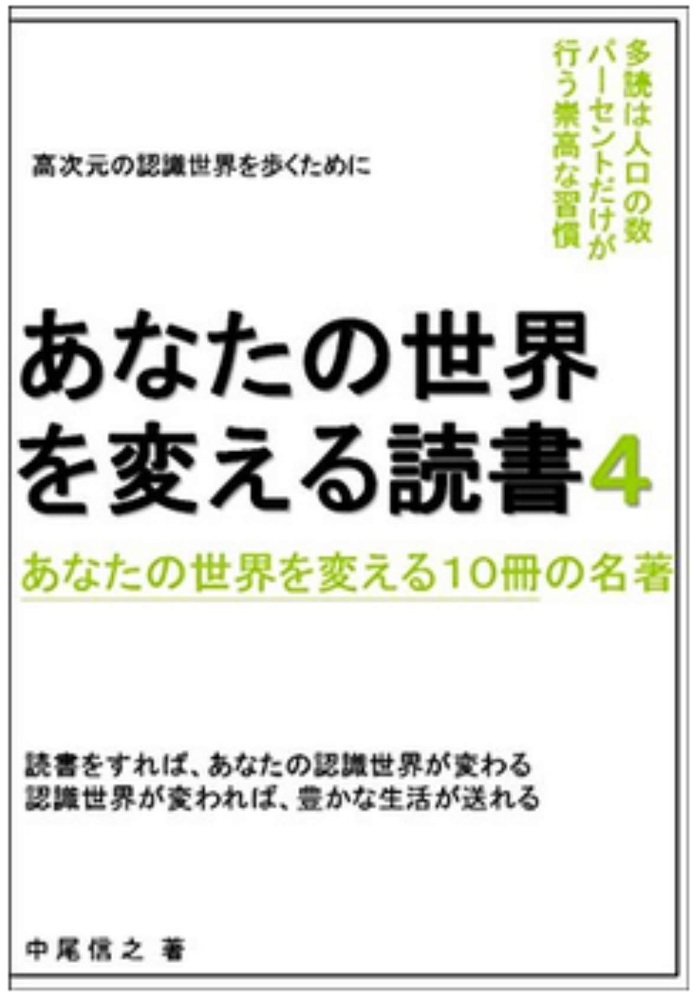
あなたの世界を変える読書４
あなたの世界を変える１０冊の名著
□はじめに
・日々これ、抽象度を高める旅である
□第一章 生き方のヒントをくれる本
１．仕事したく「ない」人のための働か「ない」働き方 河本真
２．多動力 堀江貴文
３．不動産屋の８割は詐欺師である 滝島一統
４．どこでも誰とでも働ける 尾原和啓
□第二章 世界のとらえ方を変える本
５．ぼくらの仮説が世界をつくる 佐渡島庸平
６．「生」と「死」の取り扱い説明書 苫米地英人
７．苦境を好機にかえる法則 ライアン・ホリデイ
□第三章 科学によって見方を変える本
８．日本人の９割が思い違いをしている問題にあえて白黒つけてみた
武田邦彦
９． 大麻ビジネス最前線 高城剛
１０．無知の 壁 : 「自分」について脳と仏教から考える 養老孟司他
□おわりに
・ 慣性の重力を超えて
□はじめに
・日々これ、抽象度を高める旅である
この本は、キンドルアンリミテッド読み放題対象になっている本の中で、優れた本を紹介するものである。そして、ここで紹介する１０冊の本に書かれている考え方を、ひとつの知識体系として、我々にインストールすることで、自身の世界に対する認識、世界観を書き換え、主体的な世界を創造していけるようにするためのものである。
今回で、本シリーズも４作目となった。２０１８年の３月からキンドル出版を始めて、２冊の英訳版も含めて２７冊をリリースしたが、このシリーズを書くのは、その中でも大きな楽しみのひとつである。蛇足ではあるが、別の楽しみとして、かねてから構想はあったものの、整理がしきれていなかったフィクションの短編物語集も１冊リリースした。（２０１８年末にはペンネーム含めて約４０冊を公開）
素晴らしい本との出会いは、言うまでもなく幸福なものである。しかし、本を開いて数ページを読むまでは、その本が本当に素晴らしい本の兆しがあるかどうかは分からない。表紙やレビューがどれだけ素晴らしくても、本を開いて読み進めているうちに、日本語が綺麗でなかったり、論理展開がなっていなかったりした時には、がっかりすることがある。しかし、最近は、そういう場合も読んでしまった時間はサンクコスト（沈んだコスト）であると考えて、それ以上、深入りせずに、違う本を開くことにしている。
素晴らしい本と出会うと、早く読み進めたい、次に何が書いているのだろうと、どんどんと本をめくっていってしまいたい気持ちがある反面、すぐに読み終わってしまう寂しさもあり、少し複雑な心境である。しかし、やはり面白い本に出会った場合は、すぐに読み終わってしまうのが通例である。キーメッセージのような内容にラインを引いているが、面白い本の場合は、かなり多くのラインを引くことになる。著者が、深い専門性と多くの経験を持っているかどうか。その人独自の鋭い視点と、他の多くの情報を統合できているかなど、読んでみれば、すぐに分かるものである。
巷に出回っている本の中で、同じようなタイトルで、同じようなテーマについて書かれた本でも、優れた著者によって書かれた本は、まったく違う光を放っているものである。その違いを生み出すものが、「抽象度」の高さであると考えられる。同じ事象をみても、平面的なとらえ方しかできない人間と、より高い、より広い視座で事象を見て、その１回の事象に対してではなく、もっと多くの事象の説明ができるような、法則などを見出すことにより、一段、高次元の説明をできる人が抽象度の高い人であると言える。分かりやすい例でいうと、同じような何気ない体験をしても、優れたお笑い芸人の方は、それをとても面白い話として、絶妙の間をとりながら話したり、上手く要約したり、ある部分は、やり取りを細かく説明したりと上手に説明をするはずである。これは、説明が上手いというより、認識の仕方のレベルが違うのであろう。
私たちは通常、繰り返しの日々を生きているが、その中で、日々、少しずつ違った見方をしたり、少しずつより高度な認識能力を持つように心がけたりするということが、本シリーズの主題である。今回は、そのような視点にたち、抽象度を高めてくれる本を集めたということもできると考えている。
抽象度を高めるための自分の世界認識の度合いの検証というものは、１回では終わらず、日々、あらためて、今の見方がベターなのか、別のベターな見方があるのではないかと考えたり、事情が変わって、違う法則が生まれているのではないかというように考えたり、たゆみない検証をしていくことが大切であると思う。
これ、日々、抽象度を高める旅なのである。
ぜひ、その旅を楽しいものにするために、今回もまた私と一緒に１０冊の知識体系を取り込む旅にお付き合いを頂けたらと思っている。
読書によってあなたの世界観がつくられ、
あなたの認識する世界は変えられる。
認識世界が変われば、あなたが変えられる。
そして、豊かな世界を生きられるようになるのである。
□第一章 生き方のヒントをくれる本
１．仕事したく「ない」人のための働か「ない」働き方 河本真
本書のタイトルは、最近ありがちなタイトルである。しかし、そこには、ありふれた書籍とは違う抽象度の高い視点が散りばめられていたと思ったので、今回、本書を最初に紹介することにしたい。
私も、働くということに関しては思うところがあり、初めて電子書籍にしたのは、「自分を生きる天職（転職）のすすめ ～１００％実力を表現する面接法～」という本であった。この中で私は、面接に臨むための認識論や、テクニックについて説明するだけではなく、職業選択や、社会とのかかわり方という点についても記した。
ジャンジャックルソーは、社会契約論において、ひとりひとりが主体的に合意した一般意志に基づいて、社会や国家は形成されると言ったように、現在においてもあらゆる組織は、主体的な個々人の組織との対等な合意の集合によって、形成されていると考えるべきであると私は思っている。このような前提にたった私の働くということのとらえ方、考え方についての論じている部分が、今回紹介する本で少し似ているところがあり、共感できることが多かった。
本書が素晴らしいのは、具体的な細かい行動を提案するのではなく、そういう即効性のあることを売りにする書籍たちを批判するとともに、より抽象度の高い生き方を、考えるきっかけを与えてくれるところにある。
まずは「働くということに対するイメージ」を、ひとりひとりが考えるということの大切さを、説いている。私は、いろいろな縁もあって、８つめの組織に所属することになったが、大学を卒業してから、かなりの期間、組織に所属せず、一般的な労働をしていない期間が多く存在する。最近は、半分ほど働いていないと言っても良い。これは、著者のいう「仕事との距離を置く」という行為であると私は思う。何も働かないことが良いと言っているわけではなく、距離をおいて考える機会を持つことが、より良い働き方や生き方につながる可能性を示唆してくれている。
その他にも、一般的な書籍が勧めていることを、軽率に勧めずに、ひとりひとりにあった行動を取ることが大切であることも指摘している。また、尊敬できるのは、自身の書籍についても、その全てをうのみにするのではなく、この本も含めて、あらゆる本については、自分で考えて理解したり、記載されている内容を善しとするか、しないかも自分で判断をしていくことを推奨している。
まさに、今回、「はじめに」で記載したように、あらゆることを、懐疑するというよりは、自分で見つめ解釈していくことが大切であるということも説かれている。最近、はやりのテーマであるが、少し違ったエッセンスを読み取って頂きたい一冊であると思う。
２．多動力 堀江貴文
第三弾では、堀江さんの「すべての教育は「洗脳」である～２１世紀の脱・学校論～」という本を紹介した。この本で書かれている内容は、機能脳科学者の苫米地英人さんの言っていることと似ている部分も多かった。人の脳や、洗脳ということを専門に研究してきた苫米地さんの認識と、ビジネスのイノベーターである起業家の堀江さんの考えが一致しているということが面白く感じられた。
今回の多動力で、より堀江さんの考えていることがストレートに伝わると思う。１年９カ月にわたって刑務所にいた間でさえ、メールマガジンを休刊せずに続けたことや、基本的に仕事の納期は守っていることなど、テレビで植え付けられた印象とは違い、やっていることは真面目にこなしている方なのである。
前回紹介した本では、「没頭力」という言葉がひとつのキーワードであったが、学校教育がそれを奪っているという指摘がされていた。戦前から続いてきた日本の儒教的な教育が、とうの昔に耐用年数が過ぎているということであると思う。今の日本の教育が、基本的に工場やオフィスで単純作業しかできない平均的なロボットのような人間しか作っていないということである。文部省も、いらないし、教育委員会も、いらない。
「永遠の３歳児たれ」という言葉が今回提唱されていた。私は直近、「勇者ヒロキの大冒険」という本を公開したが、主旨は同じである。３歳になろうとしている、２歳後半の我が子は、素晴らしき没頭力を持って、自分の興味のままに生きている。そして私たちは、それを押しとどめて、自分たちの日常生活の枠を押し付けようとしてしまう。しかし、そうではなくて、子供が３歳前の勇者のままの気持ちでいられるように、私たちが、逆に、そちらに歩み寄ろうということを私は実践したいと思いながら、日々接しているつもりである。３歳児は、やりたいことだけに集中して生きている。
堀江さんも、やりたいことだけをやっているから、それは忙しいのではなく、楽しいことだけをしているということになる。苫米地英人さんのコーチングに関連する本では、自分の人生を生きるには、また成果を出すためには 、 have to ではなく 、 want t o なことだけに専念することが好ましいと書かれている 。 want to なものだけを行うというのは、最初か ら want t o な状態のものだけというわけではなく、自分のとらえ方によって 、 want t o になった行為も含まれると思われる。
そして、堀江さんが言うように、並列的にタスクをいくつもこなしていくうえで大切なことは、ひとつのことを、どれだけ早くやるかということではなく、アウトソースできることはアウトソースする、要は自分がやるべきことに専念すること。そして、やるべきことをリズム良くやることであるという。確かに、リズムが悪く、途中で流れが区切れると、そこから集中するのは難しくなったりする。食事のあと、お皿は、今洗った方がいいか、置いておいた方がいいか、リズムよく対応した方が、後続のことも上手く流れるのだと私も思う。そもそも、堀江さんの場合は、自分がやるべきではないことはアウトソースすべきという判断なので、料理などは自分でやることから除外される。私の場合は、料理をすることも、リズムを作る流れの導入になったりするので、今のところ除外はしていない。
以前、紹介した高城剛さんの本では、ひとつのことに集中するのは、限られた時間にして、次のことを行い、また次のことを行いと、短時間で順繰りに、やることを切り替えていくやり方が、効率が良いと勧められていた。私もこれは正しいやり方であると思う。また、今回、１冊目として紹介した本でも、苫米地さんのいうような「無意識」の使い方について言及がされているが、上述のように、タスクを順繰りでいくつも行っているうちに、先にやったタスクに関する考えが、自分の頭の中でまとまっていく時間をとることができているのではないかと思われる。
「石の上にも３年」、「バカ真面目（完璧主義）」、「バランス教」、そのような固定観念から脱して、自分の楽しめることを、今をワクワクして生きることを真剣にすすめている本である。私も４１歳で、８つの組織に所属したので、「石の上にも３年」と言われたら、「それが絶対」ではないと言いたい。恥をかくことを考えたり、他人の目を気にしすぎたりせず、楽な気持ちで、やりたいことをやり、自分の時間を生きることを、本書を読んで、改めて誓ったしだいである。非常のおすすめの一冊である。
３．不動産屋の８割は詐欺師である 滝島一統
少し表紙の写真のインパクトが強く、中身があるかどうか疑わしかったが、読んでみると文章も読みやすく、内容も理解しやすかった。そして、誰もが気にしているような不動産に関する疑問が、明確に解説されていた。
面白いのは、本書のタイトルからも、業界の暴露本的な印象を受け取れると思うが、この本を出すのは、キンドルしかなかったという記載があって面白い。
たとえば、家は賃貸するのが得か、購入するのが得かという疑問に対しては、賃貸が得であるという。細かい数字の試算をすることで、それを分かりやすく説明してくれている。「購入した方が得です」という不動産屋さんたちが、説明していない項目を金額も入れて説明してくれている。
そもそも購入して３５年ローンをした場合、その場所に３５年住み続けるという想定自体が、かなり無理があり比較自体がナンセンスなことも指摘されている。
仮に３５年住み続けたとしても、子供たちが巣立ったあとの空き部屋を、誰かに民泊のような形で貸し出したりしなければ、物置になってしまうだけなのである。これだけ、移動することが高まった社会では、同じところに３５年住み続ける想定だけでも無理がある。ここで中古物件市場が、上手く回っている社会はいいのだろうけれど、そこが日本では上手くいかないから難しいのである。そもそも多くのローンを組んで購入しているから簡単には売れない状態になっているし、住んだ瞬間に建物は大きく値下がりしてしまっていることが普通だったりするからである。
また現在は、過去のバブル以上のお金が不動産投資にまわっている状況を説明し、明確にバブルであることを指摘している。普通に考えれば、実力以上に値上がりしたものは、それを支えていた状態が崩れた瞬間に、自然収縮するのが当然である。円安という状態が、日本の株や不動産を買わせているのである。実際にそれに、価値があるかどうかは、また別問題である。それでは、人口減少社会で、空家率（平成２５年の東京都は１０．９％）が上昇していく中では、これから値下がりしない方が嘘であると私も思う。実際、普通にみて、本書籍では１０％の値下がりで試算がされている。また、大前研一さんの書籍でも、昔から、東京の日照権などの規制の厳格さの問題点が指摘されていた。規制を緩和すれば、東京でも十分に広い敷地面積を持つことができるのである。また大前さんは、土地の用途に関する規制が緩和されると、さらに住宅地が供給されることになり、これも値下げに影響するというような指摘もされていた。要するに、日本は土地が足りないというよりも、規制によって、上手く市民に安価で安心な住宅が提供されていないということなのだと言える。
既に、３６８万ヘクタールある九州地方より広い４１０万ヘクタールの所有者不明の土地があり、これが数年後には北海道の広さの規模になるという謎の状態も放置されている。都会の老朽化した空家問題とあわせて考えても、住宅の土地も、それ以外の土地も、まだ有効活用されるべき土地は多くありそうだ。これらの空いている土地は、何も大規模農業に使われる余地がなくても、家庭菜園として、細々と利用されれば食のリスク分散にもつながるのである。このことは以前、紹介した自然農法の福岡正信さんの書籍でも主張されている（残念ながら福岡さんの書籍はキンドル読み放題対象のものはない状態です）
マンション投資は最初から赤字になる計算や、海外の不動産に関しては、日本人は売れ残りをつかまされやすい事情なども説明をしてくれている。後半は不動産購入のメリットについてもふれているが、しかし、すぐれた「詐欺師ではない不動産のプロ」と出会わない限りは、得をすることは難しいことが本書を読めば理解できる。そして彼がいうのは、日本で投資していい物件の間口は相当少ないということである。
マンション投資などのように、間違ったものを買わされた場合は、資産ではなく負債なのだということを、きっちり認識する必要があるということが良く分かる。
４．どこでも誰とでも働ける
１２の会社で学んだ"これから"の仕事と転職のルール 尾原和啓
尾原さんの本は、読み放題で数冊でているが、アマゾンキンドルでも、かなり読まれているようである。非常にマイルドな日本語で書かれているので、優しい雰囲気があるが書いている内容は堀江さんの言っていることに近い部分がある。
例えば今回紹介した、堀江さんの本では、ひとつのことをある程度きわめて、１００人にひとりの人間になるとして、その分野を三つ持てば、１００を３回かけて、１万人にひとりの人間になれると言っている。以前の本でも、肩書きを掛け合わせることの重要性が主張されていた。
尾原さんも同じである。そもそも１２社も組織を経験していて、それをサブタイトルにしているくらいだから想像して頂けると思うが、同じ業界の中で、企画職から営業職になることや、同じ職種で、違う業界にうつることを交互に繰り返すことで経験値をあげていけることも紹介されている。
堀江さんが、石の上にも３年とか、ノウハウをきちんと短期間で教えない寿司屋の修行を批判していることに通じる部分がある。ノウハウは、共有してこそ、オープンソースイノベーションの時代には、さらにそのノウハウや情報が高められていく。それを囲って長期間自分のものにしようとする時代は終わったのである。
８社を経験している私にとって、近しい年齢のかたが１２社も経験していることは、驚きであり、そういう方が存在していることで、時代が変わってきていることを実感する。
方法論や考え方については、私が公開している「はじめてのチームマネジメント ワンチーム・ビルダーを目指して」や、「購買本部は本当に必要か スタッフ機能のあるべき姿を求めて」に記した内容に近いことも書かれている。たとえば、性善説で組織を見ることや、期待値のコントロールの手法については、感覚的に分かっていることを超えて、文章として、論理的に理解していることが有益であると考えている。感覚として分かっているだけでは、その方法を人に伝えることができないからである。
成功の再現性を高めたり、成功の拡大再生産を行っていくためには、同じことを一人でやり続けるより、より多くの人が、そのレベルに到達し、同じことができる人を増やしていく必要がある。これは、情報をシェアして、オープンイノベーションを起こすということと同じ考えのように思われる。
□第二章 世界のとらえ方を変える本
５．ぼくらの仮説が世界をつくる
作者の佐渡島さんは「ドラゴン桜」や「宇宙兄弟」を世に送りこんだ編集者の方である。編集者とは、プロデューサーであるべきだということを持論にされているようである。私が感銘を受けたのは、佐渡島さんの世界の認識の仕方である。仮説や定義をする方法によって、世界を自分なりに認識して行こうという考え方が、今までに聞いたことのない表現のように感じられたのである。
実際は、仮設や定義をしなおすということは、今までの自分が社会生活の中で作ってきた考え方の型であるブリーフシステムを、新しい定義で見直すことであると言い換えることもできると思う。佐渡島さんのように、そのような思考をしていない人間は、どんなにいい作品に出会っても、それをヒットさせるところまで持っていくことはできないのではないだろうか。
もちろん佐渡島さんは作品が面白くなるように編集者（プロデューサー）として、漫画家さんに真摯に向き合っている。しかし、それだけではなく、読者の手に届くように、より多くの人に、その作品を見てもらい楽しんでもらえるようにするための工夫にも責任を持っているところが、他の業界人とは異なるところなのだろうと思う。
気になって少し調べてみたところ、「日本出版販売株式会社」という組織のサイトの情報によれば、２００１年に２兆３０００億円を超えていた出版物の推定販売額は、２０１６年には１兆５０００億円強に激減している。出版物の中にはあらゆるものが含まれているので一概には言えないが、紙の出版物の業界の構造自体に問題があることが分かる。その構造の中で、 今までの普通のやり方をしていれば、同じインプット（作品制作や販売努力）に対して、アウトプット（売上げや所得）は６５％になるということである。 あえて、その業界に入るのであれば、そこで今までと違うアプローチをすることが必須であることが分かる。この数字だけ見ても、そのような考え方ができる。それ以上、多くのデータを集めなくても、だいたいこの考えは正しいと推測できる。
だから佐渡島さんは、作品の質を高めることだけではなく、売れる仕組みや売り方について今までとは異なったアプローチをとっている。しかも、そういうことがないと、どれだけ有能な作家でも生活していくことができないのではないだろうか。ここから、私がおおざっぱに試算をしてみることにする。
宇宙兄弟は現在のところ、累計２０００万部の販売実績があるという、仮に５４０円で計算すると、書籍だけの売上は１０８億円になる。そのうち、作家の取り分が１０％であると、１．０８億円になる。
さて、ここで別に試算として、仮に１０万部の実績が奇跡的にあったとして、同じく５４０円単価だった場合に、売り上げは５４００万円である。ここに同じ率の取り分１０％を想定すると、５４０万円になる。これは１年間の数字ではなく数年として考えた場合、宇宙兄弟の方は、きちんと生活ができるが、数年で５４０万円の場合、一般の世帯年収の１年分強程度を、数年で稼いだことになる。しかも、仮に１０万部も売れたという仮定をしても、このレベルなのである。
ここに佐渡島さんのような優れたプロデューサーの存在意義がある。以前、「新風舎」という詐欺まがいの出版会社が２００８年に破綻して問題になった。自費出版を歌い文句にして、出版会社はリスクを負わず、出版の費用を作家に全て押し付けて、販売は努力せず適当にしてお茶を濁す。このようなやり方で、新風舎は、出版書籍数が一位であることを売りにしていたのである。
これは適当に書いているのではなく、若いころの私も詩集の出版を持ち掛けられたため話を聞きにいったことがあり、ここに記載したことは実体験を含んでいる。普通に考えれば、振り込め詐欺のような話であるので、ビジネス経験のある人なら、新風舎が提示している費用負担はおかしいと分かるし、販売戦略がないことも分かる。しかし、若くて夢追いだけをしている人や、年をとられてとりあえず本を出したい人などは、だまされてしまうのだろう。しかし、これは笑えない話である。不動産の本を紹介したが、不動産屋の８割は詐欺であるという著者は、その酷さの程度は振り込み詐欺よりも酷いというのだから、だれしも注意が必要である。
さて、出版業界に話を戻すと私が、佐渡島さんの本を読んでから気がついたのは、新風舎は明らかな詐欺に近いことを（配布店舗数などに詐術を用いていたと言われるので、詐欺罪の構成要件に該当する。また仮に詐術を用いていなくても、契約のリスクを正確に伝えずに、一方的に不利益を押し付けるのは信義則に反している）していたが、そこまで酷くない場合でも、佐渡島さんのように、本当の編集者、本当のプロデューサーとしての売り仕組みの創造や、新しい売り方の創造をしていない人たちは、新風舎と変わらないのではないかということである。
たとえば、作家の時間を不必要に何カ月もの間、ミーティングで何度も消費させることで、必要以上に作品に口をはさみ、作品の質を変えさえておいて、販売努力を、まったくせず、ほとんど売れなかったとする。その場合、作品を変えずに、さっと販売していた方が、結果が同じく、ほとんど売れなくても効率が良い。
これを言い換えると、作家が生活をできる売り上げをあげるまでは届かないが、出版社の営業と編集者は、ほぼ無駄な活動しかしていないのに、彼らの生活費だけをまかなう程度の売上にとどまっているケースが多いのではないかということである。例えば、公務員が市民のために存在しているのではなく、公務員のために存在しているケースも少なからずあることと同じである。
そうなってくると作家は、どうせ大きく売れないのであれば、取り分７０％で、時間をかけずに、すぐに出版できるアマゾンキンドルで出版するという選択肢を、今の時代は選べることになるのである。しかし、逆に、佐渡島さんのような最高のプロデューサー、編集者が関わってくれるのであれば、１０％の取り分でも、売り上げ母数を大きくあげてくれるのだから、才能がある人は、そちらの選択肢を取る方が、派生商品の売上も含めて大きなリターンになると言えるのではないだろうか。
私は漫画が嫌いではないが、漫画に出会う間口が今、まったくないため、久しく漫画を読んでいなかった。しかし、佐渡島さんの本を読んでから、佐渡島さんが関わった「インベスターＺ」がキンドルで読み放題になっていたので１巻から１０巻まで読んでみた。確かに面白い作品であった。漫画であるので、今回の１０冊の中には盛り込まないが、ぜひあわせて読んでもらいたい作品である。今は、読み放題にはなっていないが、定期的に読み放題にされているのかもしれない。
日本出版販売株式会社のサイト
https://www.nippan.co.jp/recruit/publishing_industry/current_status.html
６．「生」と「死」の取り扱い説明書 苫米地英人
このシリーズでは、既に苫米地さんの書籍を４冊紹介している。シリーズ第一弾では、「超瞑想法」を、第二弾では、「２０１冊目で私が一番伝えたかったこと」と「日本サイバー防衛＆国防白書」を、第三弾では、「宗教の秘密」を紹介してきた。今回の、「「生」と「死」の取り扱い説明書」で５冊目となる。それらは、全て私たちが生きていくうえで、重要なテーマについて書かれた本であり、固定観念をひるがえしてくれるような内容のものが多い。
生と死について考えることは、人類がずっと続けてきたことである。死ぬということを怖いと思い、不安に思う。そのような心の隙間に宗教は助けになったり、逆にそこにつけこんで恐怖による支配をしいてきたりしている。日本の現在の仏教も葬式仏教と揶揄されるように死んだ後に行う葬式を主業務にして成り立っている。ところが、苫米地さんによれば、仏教の開祖とされる釈迦は死後の世界については、「無記」として語っていないのだという。また葬式には近づくなと言ったということである。
釈迦は日本の仏教では当たり前のことである生まれ変わりを、バラモン教の身分制度に繋がる思想であるために明確に否定しているというのである。宗教にとって、生まれ変わりの論理というのは非常の魅力的で利用やすいが、釈迦はそのようなもので、人を惑わすような考えを持っていなかったというのである。
日本の仏教はいろいろな変遷を経て、中国の儒教や、道教の考えが混じり、日本の浄土教が混じり、日本独自の文化と混じり、釈迦の教えからは大きく遠ざかっている。また、前回紹介した、「宗教の秘密」では、キリストの教えも、その後の解釈で、キリストの考えから大きく遠ざかっていることを指摘している。キリストは神の無条件の愛をとなえ契約の必要性をうたっていなかったのに対して、その後のキリスト教は神（教会の権威）との契約、つまり信じるものしか救わないという論理になっているという。
このような根本的な宗教のもともとの開祖の考えを知り、そして物理的に、生物としての人間の死の定義の難しさを知ることで、生きるという行為を改めて見つめなおすことができる。人間は、多くの細胞の集合体であるので、定義上、死を定義することが難しいという。そして、釈迦が「不生不滅」という言葉で表したように、私たちは死によって物理的に存在がなくなっても、私たちの生きた情報は、どこかに存在し、また質量保存の法則のように、私たちの物質も何かに変わって存在しているということなのである。いずれにしても、人間にとっては、私たちが生きている「今」という時間しか、実際は存在していないことが、とても重要であると言える。
７．苦境を好機にかえる法則 ライアン・ホリデイ
本書は、「苦境を好機にかえた」多くの事例を紹介している。そのため、それぞれの事例について書かれている著書の解説に一貫性がないように思われたり、著書が、それぞれのケースを包含した高い抽象度で、本書をまとめあげているかと疑問に思える点もある。
そして、まずもって、海外の本にありがちな、本文に入る前に、本書をたたえる数々のコメントがあるところが、よろしくない。まるで、「アメリカで大ヒット上映中、よって日本人も当然見てくださいね、この映画」のような始まり方が、さすがマーケッティングをしている人間というような感じがある。
多くの事例を取り上げているので、私たちは、そのひとつひとつに納得をする必要はない。それらの中で、私たちが気に入ったもののいくつかを、自分の環境を認識する際に、利用すればいいのだと私は思う。だから、上述のように本書の苦手な部分があるにしても、私たちが、吸収できる事例が、いくらかあると思えたので、ここで取り上げることにした。
事例が多すぎて、読まなくてよい事例も多くある。ピンとこないものは、どんどん読み飛ばすべき本であると思う。いくつか気にいったのは、戦（いくさ）に関する事例である。ワシントンは逃げるのが得意だったということや、歴史家が戦争を分析したところ、真正面からぶつかったものは６％しかなかったということなどが、それである。銀河英雄伝説に登場する魔術師ヤンは、学生時代に戦術シュミレーションで学年一位のワイドボーンという秀才を破った。その方法は、真っ向から対戦するのではなく、攻められると有利な場所で守り、そして相手の補給部隊の側面をついて補給線を絶ったのである。「戦は兵站（へいたん）にあり」と言われる理由がここにある。
戦をするには、武器や人員や、食料の輸送が必要になる。ところが、そういう裏方がしっかりしていないと戦自体が成り立たないということである。戦の勝敗は戦の前に定まっているという論理の根拠もここにある。宮本武蔵の五輪書にもあるように、戦において、気が張っている者同士が、真正面からぶつかることをさけて、違うぶつかり方をする方が賢いと説いているのと同じである。
逆境においても、あらゆる要素をとらえなおし、柔軟に考える、わき道を考える、何もしないという決断をして好機をさぐるなど、まったく違うアプローチをとってみるということができるのである。
マルクス・アウレリウス・アントニウスが何度か紹介されているが、この事例は私には、まったくピンとこない事例である。単に苦境を悲しいと捉えるなというだけでは、方法論としては、暑いと感じるなと言っているのと同じであると思われるからである。
そもそも、私たちは、このシリーズ「あなたの世界を変える読書 あなたの世界を変える１０冊の名著」の第一弾で、私たちが個々人の世界（認識宇宙）の主役であるだけではなく創造主であることを既に気づいているのである。
たまたま置かれている状況、環境のとらえ方を変えるレベルは、とっくに飛び越えて、認識世界そのものを作っていく思考力を私たちの手にしているのである。そういう高次元の認識にたった私たちにとって、好ましい事例にだけ耳を傾けていけば十分である。
□第三章 科学によって見方を変える本
８．日本人の９割が思い違いをしている問題にあえて白黒つけてみた
武田邦彦
シリーズ第三弾で初めて武田先生の本を紹介した。私にとっても武田先生の本との出会いは良き出会いであった。不思議に思うのだが、有名な方でも、本を出している数が意外に少ない方が多い。そしてまた、キンドル読み放題に設定している本を出している方は、さらに少ない。そう考えると、読み放題の本を多く出されている武田先生は、多くの方に、メッセージを伝えようとされているのが分かる。表紙の感じからも、自分で出版されたように思える書籍がいくつかある。
前回紹介した本で、衝撃だったのは現状においてゴミの分別が、ほとんど意味がないどころか、燃焼効率や運搬効率から考えて逆に環境に負荷をかけてしまっているとうことであったが、今回の本は、環境問題だけではなく、少子高齢化や、電力需給に関する問題など多くの問題についての科学的な考え方を教えてくれている。
面白いのは少子高齢化についての考えである。私も言われて見て納得したのは、人口ピラミッドが、ピラミッドのように三角形になっているのが望ましいということが言われているが、それは無理な話であるということだ。三角形をしているということは、人生の半分くらいになった時に、多くの仲間が、半分以上既に死んでいるという社会である。これは多産多死の社会である。そのような簡単に死んでしまう社会が良いわけではないのである。
逆に、三角形にするためには別に多くの人間が若くして死ぬことを前提にしていないと言われるのであれば、必要となる子供の数が常時増え続けるという、これまたありえない設定になるのである。少子高齢化、人口減少ということについて、不安をあおる人々のメッセージに耳を傾ける必要はあまりないのである。人口が減るということは、国力の勢いが減るかもしれないが、増えすぎていたのがおかしいのであって、適正化されるのは良いことであるという意見もある。だいたい地球全体で見たら、まだまだ人口は増えているのだから、減っているところがあることはバランスを取る意味でも必要である。
また電力の問題についての指摘も分かりやすい。私も学生時代に何度もおかしいと思っていたことがある。それは、 全国にある原子力発電所が、頻繁に事故でストップしているということである。 東北地震とその後の津波による原子力発電所の被害を「想定外」という言葉で逃げた国と電力会社であるが、彼らは単なる嘘つきだということであるらしい。
実は、毎年のように震度６で安全性が壊れるということは、想定内の地震で壊れるということなのだという。なぜなら震度６は一年に１度起こる地震だからである。
東北自身の際に、たまたま大きな被害がでた福島だけが問題にされているが、実は、冷却ができないような電力供給が止まる事象は、千葉と青森でも発生しており、この状況が問題視されなかったこと自体が我々の認識の甘いところなのである。安全を確保している、安全を検証しているのではなく、たまたまの結果論だけで、震災後でさえも、議論をしているのである。事実のとらえ方自体が甘いのである。それでは、ジャーナリズムは何も機能していないということになるのではないだろうか。
建物や原子炉が甚大な被害を受けたら危険なのではなく、冷却装置に電力が供給されないことだけで危険なのであり、そういう事態が起こることを防ぐための多重の防御設計がされていないことが、根本的な問題なのだと言う。そして、そういうことを事前に、武田さんに指摘されても、改めようとしなかったことが問題である。一言でいえば、体制や、考え方自体が、ズサンということだ。このような状態であるにも関わらず、大前研一さんは、原子力についての考えは改めそうになく、相変わらず自分のことは自己否定ができない方なのだなあと、震災後の書籍でも思わされた。それ以外の国の批判は歯切れが良いのだが。
武田先生は原子力に関する委員会などで、安全性や、住民の避難対策などきちんとリスクを批判してきたにも関わらず、まったく取り合って貰えなかったため、そのような委員会からは距離をとられたという。
みなさん、今のリサイクル技術では、リサイクルするほど環境に負荷がかかるので、燃焼効率を考えてもプラスチック類は、燃えるごみに適度にまぜて出してください。
そうはいっても、燃えるごみの日にだすゴミの量が多くなるので、これまた不便なことである。一度、ペットボトル回収日や、プラスチックゴミ回収日を設けてしまうと、それにあわせた無駄な物流網や業界が構築され固定化されてしまうのである。本当は、質の高い焼却炉ができた後は、燃えるごみの回収日を増やして、プラスチックごみの回収を、いろいろな業者に分割して依頼する必要はないのだろうに。
適度に分別しすぎないで、燃焼効率をあげましょう。
９． 大麻ビジネス最前線 高城剛
この本は高城さんのキンドル読み放題対象の本の中では一番ボリュームがある書籍であった。当初、ここで取り上げるつもりはなかったのであるが、今年の国民健康保険の請求が着て、やはり医療保険、介護保険制度のバカ高さに嫌気がさした時に、思い出したのが、この高城さんの書籍である。
もともと戦後までは、大麻は違法ではなく利用されていたということである。それが、製薬会社の薬をアメリカが買わせたいがために、大麻を禁止してしまったというのである。そう言われてみると、非常に納得してしまう。自然にあるもので心身が健康になるのであれば、薬はなんなのだろうということになってしまう。大麻自体も、いろいろな種類があって、その種類によって、薬効や人体への影響が違うという。
効かない抗がん剤よりも、ガンに効く大麻の種類もあるのであれば、医療用大麻の利用については、医師免許がある人の処方であれば問題がないように私にも思える。大切なのは病気が本当に治るかどうかということであって、製薬会社がもうかることや、医療業界がもうかることではないのである。それによって、公的な医療保険の規模が小さくなることも、市民にとっては、まったく問題がない。とはいえ、相変わらず医者に必要以上に頼りたい人や、治らなくても、病気でいることを無意識で受け入れている人は少なからずいるので、医療と、医療費、医療保険の問題は簡単には治りそうもない。
１月に家族全員で１回、お医者さんに行くかいかないかで、どうして、あんなに法外な健康保険費用が請求されるのだろうか。会社に所属している人は、勝手にひかれているので、引かれる総額が大きいと思っても、どの部分が医療保険の部分か意識していないかもしれないが、会社を辞めた時に、このことは非常に実感する点である。保険がなくて、全額自費負担しても、毎月、何万円も損をしている状態になる。これは他の人を支えていると言えば、聞こえはいいかもしれないが、他の人も、薬漬け、医療漬け、寝たきりづけにされているのだから、一概に人のためになっているとは思えないところが、つらいところである。前述のように人口ピラミッドと厚生労働省やお役所が、三角形に近づけたいのであれば、高齢者への過度な治療や、それを支える新たな保険負担をやめて、自然な死の在り方というものを、もう少し受け入れていくべきではないかと思う。
少なくとも、共産党が言うように、国民健康保険は、保険ではなく、税金であると明言してほしい。少なくとも、国民健康保険も、国民負担率の数字には入るのであるから。
所得が減ると住民税は相応に減額されて請求されているのに、国民健康保険は、その減額率が低く、あまり減額されない。おかしなことになっている。ほとんど医療費を使わない私にとって、不思議で仕方がないことである。
そして財務省数値でも、平成３０年の国民負担率は４２．５パーセント、潜在的国民負担率は４８．７パーセントと、既に高負担と言えるレベルに到達しているのである。かつ、そこから再配分される率がなく、行政コストに利用される率が高いため、歩留まりが悪いのが日本の特徴であると指摘する専門家もいるようである。
医療用大麻だけに限らず、以前も紹介したように、まずは１日２食にして、食べ過ぎないことで健康になりましょう。そうして、医者に頼りすぎることは辞めましょう。
１０．無知の壁 「自分」について脳と仏教から考える 養老孟司他
もともと私は自然と人間の在り方や、環境問題に興味があったので、その分野の本も継続的に探しては手にしているが、なかなか、これはという本に出会えていない。今回も、里山の自然と人の関係の仕方や、その環境が本当に良いのかということについて書かれた本などにも巡り合った。
極論をすれば、人間がいなくても地球は成り立つし、むしろ人間がいなかった間の歴史の方が長いわけである。だから、人間が作った里山という環境が、人間の存在を前提としても最高の環境であるかどうかということは、ひとつ検討するに値する問題であると言える。里山という状態が必要だったのは、それが必要な生活状態があり、それがある種の必然で生まれたものなのであろう。そして、そのような里山があれば、ウサギが住んでいたから、「ウサギ追いし」で始まる、「ふるさと」の歌ができたわけである。だからウサギがいなくなった状態が悪い状態かというと、簡単には判断できないと言えそうである。私は高校生の頃、ＷＷＦという環境保護団体の会員になったが、現在の環境で生きていけない、または、種を保つために必要な個体数が足りない種を無理やり保つことが、絶対的な善かという問題も、また簡単には判断できない問題であると思う。
武田先生などは、トキなどいなくなっても良いというし、もしそれがダメだというなら、大いなる覚悟をもって、限定的な個体を守るのではなく、広大な土地の環境を整備保全するという覚悟と意志が必要になるということである。
欧州を基盤にした自然保護団体なども、今思うとエコ商売の片棒を担いでいることが多いように思える。日本でもトヨタがＷＷＦに協賛しているし、私が高校生の頃は、ボルボが協賛していた。自動車に乗らずに公共交通機関を利用する方が、本当のエコなのであるが、自然保護活動も自動車業界などが宣伝の手段という側面が強そうである。ちなみにＷＷＦのサイトを確認したところ、現在の代表である会長は徳川家の１８代当主になっている。昔は皇族を名誉総代のような地位に頂いていた。結局、オリンピックも宮家が代表になるように、かつての家柄がいまだに幅を利かせているのである。能力主義、成果主義の時代に、私たちが、そのような過去の権威にすがること自体、なかなか私たちの精神が進歩できていないことの証であるのかもしれない。
環境問題に関する良本に巡り合えなかったことから、今回、ここでは、今まで科学に関する本で選んできた本と毛色の違ったものを選ぶことにした。しかし、まさに常識の壁を越えて生きるという意味においては、「バカの壁」という本を書かれている養老さんの参加した対談が本になったものであるので、最適であると思われたのである。
対談形式ではあるが、養老さんの発言をメインに読んで頂けたらと考えている。対談相手の発言は、基本的に釈迦の教えであり、その考えは、既に紹介してきた苫米地英人さんの本で、我々はおおむね理解してきているからである。釈迦がこう言いました。釈迦の考えはこうですというのではなく、その解釈において、新しい見方が加わったものを知ることの方が、有意義であるように思われる。
養老さんの指摘で面白かったのは、ある海外の脳科学者が脳の病気になり、認識能力に異常をきたしたというのである。その時、その科学者は自分と世界の間を隔てるものがなくなり、自分が水のようになる感覚を持ったという。そしてその時は、日常生活に支障が出たものの、感覚としては幸福感を感じることができていたというのである。この事象を聞いて、私は、はっと、することがあった。それは、次のページにあるイメージ図を見て頂きながら説明をしたいと思う。これは、私が「あなたの世界を変える読書 あなたの世界を変える１０冊の名著」の第一弾で紹介した本の理解を深めるために用意した図式である。
１は、自分と世界が隔離されていて、自分が世界を観察する立場である時。
２は、世界の中を構成する要素として自分が存在している場合。世界は自分が構成しており、世界に自分は働きかけられる関係である。
３は、認識している世界そのものを創造しているのは自分であり、自分が主役であり、創造主であるという認識世界の場合である。
この三つのとらえ方については、ここでは詳しく述べないため、シリーズ第一弾などを参照して頂きたい。
上述した脳科学者の言葉いうと、それは２の状態で、自分の円の壁が溶けて、世界と一体化した状態であるか、もしくは、３の状態で世界の円の壁が溶けて、世界と自分が一体化した状態と同じ現象が、意図的に認識の仕方を変えることではなく、脳の病気によって起こったということである。つまり、よりよく生きるための方法論として、私たちが考えてきたことが、脳の状態が変われば、自動的に発生していたということなのである。
また養老さんによると、同じような病気の状態にならずとも、脳の働かせ方によっては、普通の人と違う世界の見方が可能になり、そのことによって素晴らしい芸術作品を生み出すことがあるという。養老さんは、ピカソの例を挙げて、これを「機能のコントロール」や「意識のコントロール」という言葉を用いて表現されている。そして、対談者からは、これが仏教の修行や瞑想の技法による効果や、科学者や芸術家が到達している感覚であるのではないかということが、ほのめかされている。
視点を変えるということでは、養老さんは、虫を追い続けているだけではなく、医学にも関わっていたことから、人体の解剖などもされており、その経験から、死というものを独自の見方で確認され、その恐怖を克服されている。
他にも面白いのは、虫の視点で世界を見てみるということである。一般の日常生活を続けていると常識の壁（バカの壁）に捕らわれてしまいがちになる。そこを、壁を越えて、または違う視点で見てみると、私たちも、もっと違った生き方ができるのではないかと思う。後半では、経済成長一辺倒、石油エネルギー一辺倒で、暑い夏に甲子園を皆が同じように見ることのおかしさも指摘されている。本書では、明確には記載されていないが、後半のメッセージなどは、「お金教」というバカの壁に対する指摘であると私には思えた。
□おわりに
・慣性の重力を超えて
私は２０１７年の１０月から、２０１８年の６月末まで、組織の仕事をせずに完全に自分の生活を生きてきた。他の本にも書いてきたが、それまでも、仕事と仕事の間には、かなりの空白期間を置いている変わり者である。今回の休みの間に、もっとも大切にしてきたのは、２歳８カ月になる長男との時間である。そして、また長男に加えて、私の世界に加わった０歳である赤ちゃんが、私の世界の大きな位置をしめることになった。
社会や大人の一般的なノーム（常識）にそまっていない、このふたりの人間の行動形態や思考形態を観察することが、時間の大半をしめるようになった。自分が子供の頃、どのような存在であったのか、私は子供たちを見ることで思い出そうと試みてきた。そして、多くの書籍の海を泳ぎ、自分の思考に必要となるものを探し求めてきた。そのうち、多くの方々と共有したいと思えた書籍を、このシリーズで紹介してきたのである。
俗事というより、日常生活や常識というものは、大きな思考的な慣性の力を持っている。満員電車に乗ることが、当然の生活をしている人には、満員電車が当然の社会的な存在である。ところが、そこから少し離れたところから、それを見ると、それは当然のものでも、普通のものでもない、異常な光景のように見えるはずである。養老さんが、虫取り旅から帰ってきて、満員電車を見た時も、そのような感覚であると書かれていた。
動物実験でも、あまりに密度が高いと、密度効果によるストレスで異常をきたす動物がいるということを、若いころに、立花隆さんの本で読んだ記憶がある。東京の満員電車の状態は、どこかの国の方々が電車に大勢、乗り込んで行き、はみ出るくらい乗り込んだ状態で電車が走っているのをテレビで見て、私たちが「異常だなあ」と他人事で思っているのと、それほど変わらないレベルなのではないだろうか。
今のこの状態で、人口が減ることが問題だと言ってみたり、このような状態を放置しておいて、環境には良くない偽物のエコ活動をするようなおかしなことを継続する「強い慣性」が働いているように思われる。「働き方改革」や「時差ビズ」という言葉は胡散臭い香りがプンプンする。共産党が「働かせ改革」と揶揄しているのも、なかなか、上手い言い回しであるように思える。時差ビズも、奴隷のように働くことを美徳とする文化や、実際に富が、どこかに流れていく構造そのものを変えなければ、欧州人や豪州人のようなゆとりを持った生活はできないのではないだろうか。
ちなみに乗車率は、最高で２００％近くあると言われ、これを１５０％にさげるとしても、そのような程度で時差ビズに意味があると言えるだろうか。そもそも車両ごとに定員数というものがバラバラに設定されており、計測方法も不確かであるという。料金を払っているのに、着席を前提とせず、定員数を増やすために椅子を減らすという始末である。
要するにサービスは低下しているのだ。サービスが低下していながら、料金は値上げ傾向である。安全のための投資が必要だからという理由である。しかし、電車は公共サービスであり、参入には監督官庁の認可がいるから寡占産業である。公共利益の寡占的に占有しているから、値段はサービスに合った値段や、公益価格にされるべきなのである。国民の税金によってインフラ投資が行われた土台に運営がされているともいえる。ほとんどの人が椅子にも座れないことが前提であれば、それは人の輸送ではなく、貨物輸送と同等扱いであり、貨物よりも積載率が高いなら、価格は極端に下げられてしかるべきなのである。
日常の世界を、日常の眼鏡だけで見ていると、なにが異常で、なにが異常ではないか、自分は何が好きで、何が嫌いか、そして何をしたいか、どうやって時間を過ごしたいかということなどを考える余裕がないことが普通となる。そのような「慣性」が心にも行動にも働いているのではないだろうか。
そこで私たちが思い出すべきなのが、このシリーズ第一弾で、自らにインストールした考え方である。
それは、「私たちは、自分の人生の創造主」であるということである。
どのような状態にあっても、その状態の内側から、あたふたとするのではなく、その状態が、自分の認識している世界全体を揺るがすほどの大きな事態かどうか、創造主として冷静に見つめなおしてみるのである。何か大きな事象があった時や、課題が見つかった時だけではなく、何気なく駅までの道のりを歩いている時に、「自分が創造主」である、自分の世界を今、自分が歩いているということを、もう一度、意識にあげ、再確認しながら歩いてみるのである。
そうすると、今、目の前にある、あらゆる事象が、自分の世界全体を揺るがすほどのことではないことが分かる。そして、多くのことが創造主としてコントロール可能なことだと気づくことができるはずである。この時、私たちは、日常生活の、そして常識の強い慣性（壁）から、自分たちの意志を持って、自由軌道に旅立つことができるのだ。そうした時に、私たちが選ぶ選択肢こそ、自分の意志を持って選んだ選択ということができるのだと思われる。
私たちは、自分の意志で、多くの素晴らしい書籍を手に取り、そして自分の武器としてインストールをしてきた。ここまでで、４０冊もの多くの思考にふれ、そして、そこにある考えを、自分の知的ネットワークの中に取り込んできたのである。これらは私たちの体が、６０兆の細胞でできていながら、統一的な活動をすることができているように、いずれ、知のネットワーク、脳のネットワークとなってつながり、大きな力をなるであろう。
私たちは、主体的な意志をもった創造主として、そして多くの思考を集めた高次元の統一体として、自由な軌道を歩むことができるのである。これからも、私たちの知の旅路は続いていくのである。
次回は、第五弾でお会いできますように。
本書を手にして頂き、本当にありがとうございました。
中尾信之
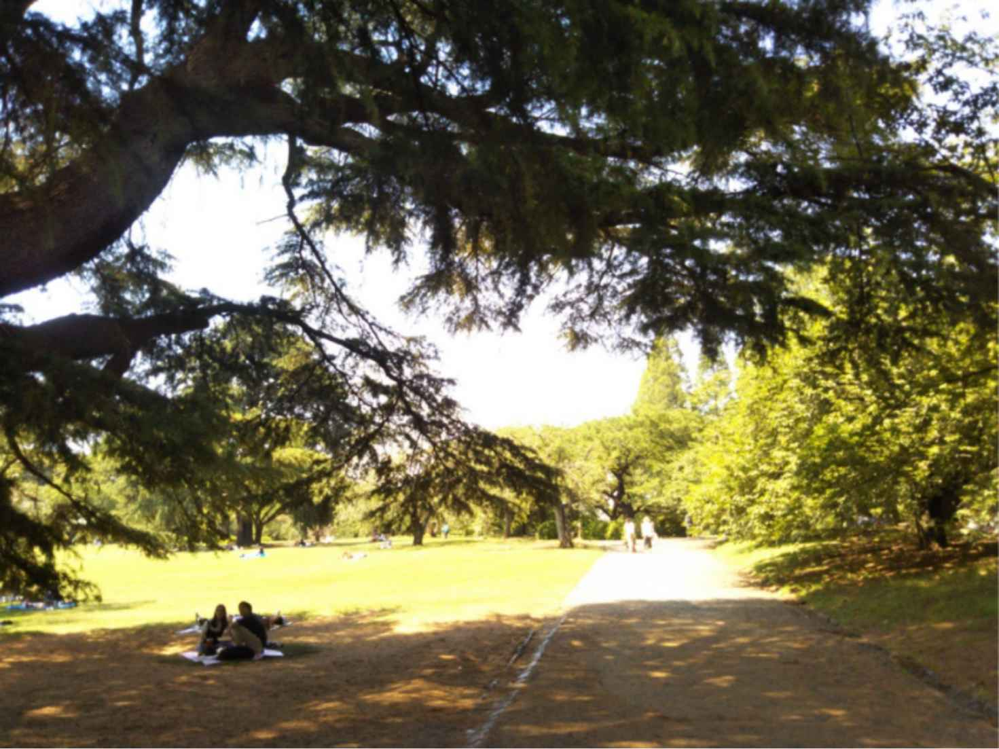
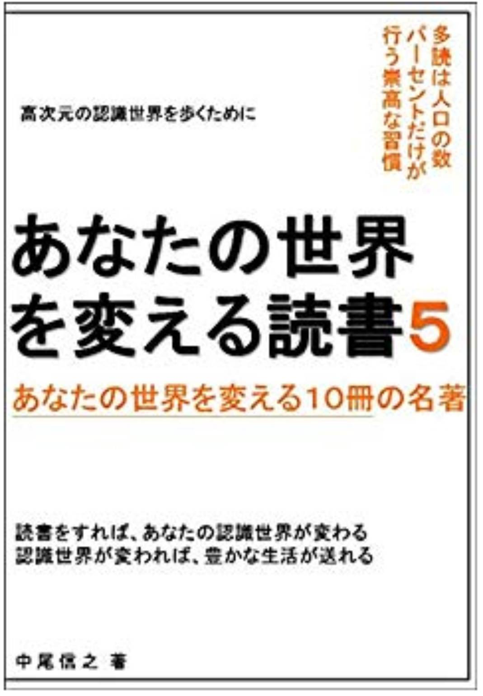
あなたの世界を変える読書５
あなたの世界を変える１０冊の名著
□はじめに
・無知の世界をこえて
□第一章 生き方のヒントをくれる本
１．現代語訳 五輪書 完全版 水上基地、宮本武蔵
２．食べない生き方 森美智代
３．怒らないこと―役立つ初期仏教法話 アルボムッレ・スマナサーラ
□第二章 世界のとらえ方を変える本
４．白本４ 高城剛
５．一瞬で相手をオトす洗脳術 苫米地英人
６．タネはどうなる？ 種子法廃止と種苗法適用で 山田正彦
７．自由論 ＪＳミル
□第三章 科学によって見方を変える本
８．赤本 高城剛
９．寿命はどこまで延ばせるか 池田清彦
１０．大麻ヒステリー ～思考停止になる日本人～ 武田邦彦
□おわりに
・ 天衣無縫なありようを目指して
□はじめに
・無知の世界を超えて
本書はキンドルアンリミテッド読み放題対象の本の中から、優れた１０冊を紹介するシリーズの第５弾である。第４弾を書いている時は、なかなか名著を探すことに手間取り、読んでも、読んでも納得する本に出会うことが難しかった。ところが今回は、比較的早く、紹介したいと思える１０冊に出会うことができた。
毎回言っていることであるが、個々の１冊が優れているということも重要ではあるが、１０冊が私たちの脳の中のニューロンネットワークのように、はたまた私たちの体内の細胞たちのように相互にネットワーク化して、ひとつの知識体系や、ひとつのゲシュタルトを構成することにつながることが大切だと考えている。
その意味で、１０冊の本たちは、少しずつ伝えている内容が重なっていたり、つながる知識があることを感じて頂けると考えている。そういう視点で１０冊の組み合わせを検討しているがために、シリーズ４では紹介することを控えたが、今回は紹介したいと思った本があったりするのである。例えるのであれば、これは、まるでサッカーのチーム編成のようなものである。たとえ優れた選手であっても、コンビプレーの相性が悪い選手同士で、チームを編成しても上手く機能しないのは目に見えている。だから、チームとして機能させるためには、１人だけ選手交代をすれば済む場合と、複数名選手交代をした方が良い場合があるのであろう。
このシリーズは、毎回、１０冊の知識を自身にインストールするように吸収することで、自分の世界の認識の仕方や、認識した世界での行動の仕方を変え、より幸せな生き方を模索していく力を得ることを目的としている。そのためには、世界の見方や、世界のカラクリの根本的な在り方について、無知であることをやめなければならない。くだらないゴミの情報をため込むこともやめなければならない。今回、「食べない生き方」という本を紹介するが、人間の体が食べすぎになった場合は、消化不良を起こすように、私たちの脳（心）も必要な栄養である良い情報を取り、不必要なゴミの情報は取らないように注意をすることが大切である。
カッコウという鳥は、他の鳥の巣に自分たちの卵を産み落とし、他の鳥たちに自分の子育てをさせる鳥である。これが生態系の中に組み込まれているのであるから、人間がとやかくいうことはないとも言えるが、誰しもカッコウの子供を自分の子どのように育てている他の鳥のことを考えると非常に気の毒に思うはずである。
ところが、無知ということは、これと同じような状態にあるのではないかと私は思う。たとえば、ある行動が日本では常識であると認められているものがあるとする。この常識的と思われる行動が、実は自分や、自分の家族にとって、また日本人全体にとって本当は不利益な行動だったとしたらどうであろうか。これはカッコウに卵を入れ替えられた鳥たちと同じ状態と言えるのではないだろうか。自然に優しいと思ってやっていた行動が、実は自然に優しくない行動だった。子供にとって良かれと思っていた行動が、本当は子供の健康や、創造性を育むことに良くなかったということは、まま考えられることである。
このような、無知の世界を超えるには、常に新しい視点のフレームを構築しながら、不要な情報を破棄して、心と体を軽く保っていく必要があるのではないだろうか。私たちが、日常的に行っている無知を克服していくための読書は苦行ではない。より高次元の認識能力を得て、より高次元の生活を自ら選ぶために行う、このうえない楽しみなのである。
私たちは、ここまで４０冊の知識体系を取り込んできた。これらが相互に複雑なネットワークを作り、ひとつの力となって無知の世界を超える力を与えてくれているはずである。ここに新たな１０冊が、どのようなネットワークをつないでいくか、今回もともに読書の旅に出てみようではありませんか。
□第一章 生き方のヒントをくれる本
１．現代語訳 五輪書 完全版 水上基地、宮本武蔵
宮本武蔵の五輪書は別の本でも一度、読んだのであるが、今回、ふたたび手にとって読み直してみることにした。彼のいう兵法とは、単なる技術としての剣術だけのことではない。まして形式的な剣の構えがどうこうという芸事のようなことは否定している。
一対一の命がけの対決のことだけを論じるのではなく、また大勢対大勢の戦のことだけを論じているだけでもない。武士のありようだけを論じているのではなく、人の生き方までを包含していると考えても良いのではないかと思う。そして、特筆すべきことは、兵法、剣術を語るにあたり、「心」、「気」、「拍子」、「勢い」というような抽象的な言葉がよく出てくるのである。「心を大きくして」というふうな表現などは独特である。
戦いに勝つためには、正々堂々とぶつかり合うとか、力と力で真っ向勝負とか、そういうことは、あまり意味のないことであることが分かる。命をかけた勝負であれば、なおさら勝ち残らなければならない。自分がひとりで相手が多数であるような場合では、得に地の利をいかし、勢いを自分のものとして、相手にいかようにしてでも勝つこと、生き残ることを考えなければならない。力の勝負である前に、心のかけあいの勝負なのである。
依然、苫米地英人さんが著書で、宮本武蔵が二つの太刀を手にして立っている姿を、催眠術師としか見えないということを指摘していた。そのことは、彼の五輪書には、「心」、「気」、「拍子」、「勢い」という言葉がでてくることから、あながち容易に否定できることではない。
人は物質的な体をもった存在であるが、認識している世界は情報であり、戦いにおいては、情報体としての人間が、心を使って戦っているのである。ここで、物理的な肉体だけを鍛えることだけを焦点にあてている武芸と、目に見えない、心、気の勝負でも勝つことを論じている兵法では、次元が異なるのだといえそうである。文章自体はそっけいない文章で書かれているが、特に「火の巻」を、ゆっくりと読むことは現在においても、有益であると思われる。
五輪書の中では、兵法を教えるのに、他の流派のように表も裏もなく、明らかにすることも、秘伝として隠すこともないとしているが、しかし、書かれている内容を理解するためには、それなりの知のネットワークを持っていないと無味乾燥な本としかとり得ない可能性もある。その意味で、オープンにしれていながら、秘伝に近い面もあるということである。読んだ時に理解できなくても、自分が置かれた状況が変化した時に、ふいに五輪書の文章が思い出されることがあるかもしれない。その日がくるまで、日々、鍛練し、良く吟味する必要がある。
２．食べない生き方 森美智代
シリーズ第三弾では「３日食べなきゃ、７割治る」、「やってみました。１日１食」という本を紹介した。それに続いて紹介するのが、そこでも紹介されていた森さんの「食べない生き方」である。
この作品は、実際に青汁いっぱいで生活をされている森さんの実体験をもとにして書かれている。まさに、生きる証拠があるのだから、それを非科学的だといって否定はできない。
そしてまた、誰もが森さんのようになることは容易ではないが、単に森さんという個人の特殊な事例としてではなく、方法論としてある程度、確立されている域に到達しているからこそ、必読の書であると言える。この本を読んだ時に、不思議なことは、森さんが言っていることが、今回も紹介する「一瞬で相手をオトす洗脳術」を書かれた機能脳科学者の苫米地博士の主張と一致している点である。それは、小食で食べすぎないことが良いということと、過剰な有酸素運動は老化を促すだけなので不要であるということである。
森さんの摂取栄養量は、今までもこのシリーズで批判をしてきたように、現在の常識とされている人の機能や生物の可能性の理解が足りない、偏った常識であるところの栄養学や、カロリー計算、常識とされる医療では、説明ができない状態である。そして、過去に紹介した、「医学不要論」や、「ワクチンのすべて」など、現在の医学の常識の不足点を批判した方々の考えとは一致しているところが多い。
森さんによると、人類はもともと、この何十年かを除いて毎日お腹いっぱい食べるということを経験していなかった生き物であるという。そう言われてみれば、まったくその通りである。以前も紹介したドイツの諺、「１日２食は自分のため、３食目は医者のため」ということを聞けば、食べ過ぎには昔から注意が払われていたことが分かる。ところが、トースターを発明したエジソンが、電力をもっと使ってもらいたいという理由と、トースターをもっと買ってもらいたいという理由から、１日３食マーケティングをしたのが始まりで、今のように誰もが食べ過ぎることが、当たり前になってしまったとも言われる。
日本ももともと江戸時代は１日２食が通常であり、ドイツでも過剰に肉を食べるようになったのは強い兵隊を作るという、非人間的な目的があってのことであると言われる。このあたりは、今回、後半で紹介する大麻の本とも重なる。もともと日本にある大麻という自然の植物で、持続的に利用することが可能な環境に優しい植物の利用が、部分的に禁じられている反面、飽食のおかげで、お医者さんは忙しくなり、かつ自分で小食にして体質改善するよりも、薬で治そうとするため、製薬会社も儲かるという体制ができあがってしまっているのである。
森さんの本を読んでいると、このようにいろいろな本の主張とつながっていく部分が多い。そして、食べるという欲の分析をされているのも興味深いところである。そのうえで、食べる欲を自分でコントロールすることができれば、他の欲望もコントロールできるようになり、自分にとって大切なものが分かるようになるというのである。そして、過去や未来に縛られず、今を見つめることを説いている点も、今まで、このシリーズで紹介してきた本と共通する生き方の知恵であると言える。
若干、スピリチュアルな内容の記載があり、その部分は私も走り読みをしたが、小食についてだけではなく、ご本人が難病を小食と、必要な運動を通して克服された経験から、いろいろな経験をされたことが分かりやすく書かれている。過剰な有酸素運動は必要ではないが、筋肉を正常に保つ運動は必要だということで、いくつかの運動法についても図入りで説明がなされている。そして、小食は世界を救うというように、確かに多くの人が小食になれば、食糧の分配問題も大きく改善されるとしている。小食は自分のためだけではなく、人のためにもなるのだという。
何十年も前に、人類に必要な食糧生産量は確保できていながら、毎日大量に食糧を捨てている先進国と、食糧が足りない発展途上国とが同時に成立しているのは、分配の問題だけなのである。食べるという欲を抑えられないから運動をしてエネルギーを消費するという考えも先進国では一部、流行のスタイルかもしれない。しかし、過剰に食べることと、過剰な有酸素運動はどちらも老化を推進することであることを理解して、その生き方を選ぶか、考える必要があるのではないだろか。いずれにしても、過剰な食欲を抑えられなかった場合、他の欲もおさえられなくなる可能性が高く、その場合は、欲に振り回されて徒労の人生にならないとも言えない。少し食べる量を調整して、小食を実験として楽しむのも良いのではないだろか。日本でも昔から、腹八分という言葉があるくらいである。
３．怒らないこと―役立つ初期仏教法話 アルボムッレ・スマナサーラ
本書の著書は、シリーズ第四弾で紹介した本で、養老先生と対談をされていた方である。
基本的に私は、家の外にいる時、怒ることはあまりない。しかし、やっぱりどうしても接することを避けられない嫌な人が他部署にいて腹立たしい経験をしたことはあるし、電車の中で嫌なマナーの悪い嫌な人がいたりして、怒りの感情が沸きあがってくることがないわけではない。私も修業が足りないのである。このようなことは誰にもあることであると思う。
実際に、そのような場面で、声を荒げて怒ったり、議論したりすることがなかったとしても、私たちの感情の波が揺れていること否定できないのではないだろうか。そうすると、少なからず自分がダメージを受けていることになっていると言える。
世の中には負の力を持った情報がいつも少なからず存在していて、テレビのニュースやＣＭは、それを意図的に、もしくは意図的ではなかったとしても、無責任に伝達しようとしてくる。それらの情報は、まるでコンピューターウイルスのようなものである。私たちは、そのような情報を正しくファイヤーウォールをはって、シャットアウトするにこしたことはないのである。私も、幼児用番組以外は、ほとんど見ないように、この１年で自分を変えることができた。小食で体を維持できるようになった小食エンジンを持った人が、あまり不要な食べ物を受け付けないように、私も不要な負のイメージを持った情報を受け付けないようになってきたのである。
程度の低いバラエティ番組も同じである。あえて人の感情を揺さぶるように作っている大河ドラマも同じである。「明治維新という名の洗脳」という苫米地さんの本でも指摘されているように明治維新を必要以上に美化するのは、かなり意図的なことであるが、そんなに明治維新が素晴らしいのであれば、どうして、その後、愚かな戦争にのめり込んでいったかということと、つじつまが合わないように小学生の頃から違和感をおぼえていた。
ところが、そもそも明治維新をしたことも戦争をしたことも、お金によって日本人が支配されていくことの視点から見ると、まったく一つの繋がった事象として見ることができる。そこで踊らされた明治の元勲は、ほとんどがろくな死に方をせず政権を追われたり暗殺されたりしている。
テレビだけではなく、ネットニュースも同じくらい、もしくはそれ以上に弊害がある。負の情報は、ネットからもできるだけ受け取らないほうが賢明である。負の情報ばかりに接していると、それに意識がひっぱられた状態になり、悲しみやすくなったり、怒りやすくなったりしてしまうことに慣れてしまう。だから、私はそのような情報は取り込まないようにしているし、仮に耳に入ってきても以前、自著で記載したように、毎日、多くの人が交通事故や、自殺で亡くなり、多くに方が行方不明になっているうちの１件をマスコミは取り立てて悲劇として報じているだけで、世の中には沢山の人たちが日々、不幸になったり、亡くなったりしているんだなあと冷静に受け止めるようにしている。殺人においては極めて数字が少なく、かつほとんどが肉親同士によるものである。凶悪犯罪が多くなっているというのは、単なるイメージにすぎない。
それとは逆に、世の中には、今日、生まれる子供がいるだろうし、今日は幸せなできごとに出会った人も多くいるのである。マイナスだけに意識を向けることは是非、やめたいものである。
そして、自分もささいなことで怒りに支配されないような平穏な心を、家の外だけではなく、家の中でも持てたら楽だろうにと思い、この本を手にしたのである。怒りを我慢したり抑え込んだりするのではなく、怒りを起こさないような状態にしていくということは、まるで悟りのような道をいくことのようにも思える。しかし、世界は自分が認識しているのであるから、電車で子供が騒いでいる時に、これを腹立たしく感じる人がいる一方、自分たちが、ちょうど同じくらいの子供がいる私にとってみれば、微笑ましく観ることができるのである。
自分たちの認識している世界を、どう受け取るか。怒りにみちた目で見るか、微笑ましい事象に満ち溢れた世界とみるかは、私たちの心の持ちよう、世界の見方、世界の創造の仕方に関わっているのである。
□第二章 世界のとらえ方を変える本
４．白本４ 高城剛
毎回のように高城さんの本を紹介させて頂いているが、白本の最新作が出たので、私もすぐに飛びついて読んでみた。このシリーズは、Ｑ＆Ａ方式で成り立っており、いくつもの質問に高城さんが答えている。非常に簡易に作られている本である。手間もほとんどかかっていないのではないだろうか。しかし、それでもエッセンスが入っていれば、それで十分だといえる。私は読者からの質問の部分は読まずに、高城さんからの回答だけを読んでいる。それで十分理解ができる内容になっている。
過去の本でも高城さんが書かれているように、高城さんは、読者の量より、読者の質にこだわっていると今回も書かれていた。人口の５％程度のイノベーターに読んでもらいたいというのである。今回、白本を読んでいるうちに、あることを思い出した。それは、非常に難解な学問の本があったとすると、その本を読む対象者は、あらかじめその分野の入門書や関連の書籍を数冊読んだ人間が読者としての対象になっているということである。法律の勉強をしていない人間が六法を読んでも法律の解釈が難しいのと同じである。そうすると、白本シリーズの短い、あっという間に読んでしまえる文量で、普通の人は何かを得ることができるのだろうか、面白いと感じ取ることができるのかということである。
しかし、ここまで４０冊の知識体系を取り込んできた読書の同志の皆様であれば、高城さんの短い言葉の中に込められている意図を感じ取ることができるのではないかと考えている。
必要以上のお金は薬物と同じという。そして、実際、７万５０００ドル以上の収入の増加は幸福につながらないという研究結果も紹介されている。これも自分の認識のありようだと言える。何千万円もないと落ち着かない人もいれば、ある程度に生活を送れるお金で心の平安を得られる人間もいるということである。怒りを起こさないということと同じように、過剰な食欲を起こさないということ、そして過剰な金銭欲を起こさないということは、心の平安と、自由を得るためのエッセンスであると思われる。そうして、その先に、私たちが何かをつきつめて行けば、高城さんの言う、ヒューマン３．０になれるのかもしれない。
日本が仮に２０２０年以降、たいへんな状態になり、世界も相変わらず不安定だったとしても、私たちの日常は続いていくのである。そしていろいろな科学技術の進化を取り込みながら、私たちの生活も変化を続けていく。その中で、変化を良いものとして取り込めるかどうか、あらゆる事態を想定して、リスクを分散しておくかどうか。私はオリンピックに、まったく興味はないのだが、冷静に考えると日本社会はオリンピックに浮かれている場合ではないのかもしれない。
５．一瞬で相手をオトす洗脳術 苫米地英人
本シリーズでは、苫米地英人さんの本も毎回紹介してきている。毎回紹介している理由は、２００冊以上の書籍を出版し、読み放題対象が多いからということもあるが、苫米地さんの本の内容が面白いという理由が一番である。
今回は、世界の認識の仕方ということも含んでいるが、それだけにとどまらず洗脳に関する方法論（テクニック）の部分まで記載されている珍しい本を紹介したい。もちろん、内部表現の書き換えという言葉を習う時には、当然、人の脳が、どのように世界を認識しているのかという説明から入るわけであるから、認識している世界を変えようとする私たちには、もってこいの本ということである。すでに私たちは、「超瞑想法」などで学んでいるので繰り返しになる部分が多いかもしれないが、改めて方法論を学ぶ前のウォーミングアップとして、１冊通して読んで頂きたい本である。
さて、私自身は現在、４１歳であるが、組織としては８つ目の組織に所属している。それぞれ、それなりに大きく有名な組織に所属してきた。３０代の後半になるまでは、１００発１００中で面接に通るというわけではなかった。むしろかなり低い勝率だったし、それが当たり前であると思っていた。もちろん相性もあるし、無理にあわせる必要もないし、先方は面接回数や面接人数をノルマにしている人事担当もいるだろうし事情はまちまちであると思われる。
ところが、３８歳を超えてから、３つの組織に採用され、また、組織に入らなかったところの面接も、ほぼ通過するのが当たり前になった。そのようになることと前後して、苫米地さんの本を読むようになり、実は自分が、苫米地さんの言うような洗脳に近い方法論を誰にも習わずして、無意識でそれに近いことができていたのではないかということに気づき始めたのである。そのため、「自分を生きる天職（転職）のすすめ ～１００％実力を表現する面接法～」という本を公開し、非効率な面接を実施している企業に対抗する術（すべ）を、面接を受ける側が身に着けることに貢献しようとしたのである。
映画に出ている俳優さんが、自分の過去の悲しかったり嬉しかったりした感情を、何倍にもしながら演技をすることで、映画を見ている相手に、その感情が伝わると言われ、この演技法はメソッドとして確立されているのだという。あらゆる場面で、このような感情を言語ではないメッセージとして伝えるということが可能であるというのである。私の場合は、自分の１冊目の本でも書いたように、過去の自分の成功体験をありありと思い出しながら分かりやすく語ることで、それを聞いた相手が、分かりやすい言葉だけではなく、イメージとしても、確かに私が何かを成し遂げたということを感じ取れるようにしているのである。
これは、とても大切で、仮にだらだらと２時間話をするよりも、３０分でも１５分でも相手に、「この人は何かをやる人間である。この人と働きたい。この人と働くことが得である。この人は面白いことをするのではないか」など、なんらかの印象を強く伝えることが可能なのだと私は経験的にも感じている。苫米地さんの本を読んだからといって、相手の眼球運動を引き起こして、レム睡眠の時のような状態を作ったりということまでも実践しようとはしていない。しかし、相手と対面する場にのぞむ時や、対面している場において、自分がリラックスしてオープンになれるように、頭が早く回って、柔軟な切り返しが自然にできるように、逆複式呼吸や、逆腹式ではなくても長い呼吸を整えてから、重要な場には臨むようにしている。
この本は、世界の認識の仕方から、洗脳の方法論まで書かれているが、それに加えて、まずは、そのような方法論を利用する者は健康であらねばならないという原則を示し、そのために２つのことを明言している。
「有酸素運動をしすぎるなということ」と、「過剰な栄養を取りすぎるな」ということである。このことは、今回紹介した「食べない生き方」の主張と全く同じである。私の親しい友人も、過剰な栄養を摂取して、過剰に運動をすることで太りすぎないようにしているが、これは提示された二つの原則の両方に反していることである。ところが恐ろしいのは、過剰な栄養摂取と、過剰な運動は、現代社会の常識では、ワンセットでかなり市民権を得てしまっているということである。そして、個々人は、それを自分の意志で選択したように思っていても、実は、自分で選択したように思わされているということなのである。苫米地さんが、秘伝である洗脳護身術に関するノウハウの一端をこのような本に明かしている理由は、あまりにも世間の常識が、自分で護身できるようにしないと強力な誘導をしているからなのである。本の冒頭では、そのあたりの理由も説明がなされている。よく吟味する必要がある。
６．タネはどうなる？ 種子法廃止と種苗法適用で 山田正彦
本作品は、日本人であるならば是非、知っておいて頂きたい内容が詳細に説明された本である。文部省関連の政治スキャンダルの影で、まったくと言っていいほど報道されていないのが、種子法という法律が知らない間に廃止され、野党はこの復活の動きをとったりしていることである。
恐ろしいのは最も重要な事柄が国会議員さえ知らない間に秘密裏にすすめられ、そして法律があっという間に形式上の１２時間の国会審議で廃止にされ、大きな利権があっという間に、多国籍企業に売り渡されるということである。実際、この本の著者は民主党政権時代に農林水産大臣をされていた方であり、苫米地さんなどと並んでＴＰＰに関する本を出版され、唯一の専門家と言ってもいい方である。その山田さんをして、種子法の廃止というのは、予期していなかった出来事であったという。
ＴＰＰは８０００ページにも及ぶ、大量の条文があるが、アメリカの議員も、日本の議員もほとんど中身を知らないと秘密条約であるとも言われ、その１文、１文に恐ろしい内容が仕込まれている。最も削除すべき条項はＩＳＤＳ条項というもので、これは、非関税障壁があった場合に、それによって不利益を受けたと吹っ掛けさえすれば、巨額の損害賠償を多国籍企業が、日本政府や、日本の地方自治体に請求することができるという条項である。
過去の貿易摩擦の判定は国家と国家の交渉で、ＷＴＯで行われるものが、ＩＳＤＳ条項であれば、多国籍企業と、国家の裁判になるのである。例えば、どのようなことが論点になるかといえば、産地を表示することが、非関税障壁と言われるということである。消費者の選択する権利、知る権利から、どこで取れたか表示するのは、生産者や販売者の自由でもあり、正常なマーケティング行為でもある。これが、日本のものだけ売れるようにしている非関税障壁と言われる可能性が高いということである。実際、アメリカとカナダではこれが論点になり、産地表示は非関税障壁であると認められたということである。
種子法の廃止は、ＴＰＰの問題とセットになって極秘裏に推進と、批准が勧められていたに違いないという。以前、私は「アニオタ革命 アニオタが世界を変える 銀河英雄伝説 神のみぞ知るセカイ から探る社会変革の可能性」という本を公開した。この本は、アニメの名前が２つ入っているが、真面目に民主主義について考察した内容となっている。民主主義は多数による政治という建前になっているが、これは本当だろうか、今回の種子法廃止は、自民党議員の多くも知らない間に進められていたと思われることからも、一考する必要がある事柄である。
民主主義政治においては、全体の５割の得票数を押さえれば、政権をとれるが、仮に自民党が５割を公明党の助けなどを得て抑えたとする。その自民党の中で、その半数を抑えれば自民党をおさえることができる。つまり全体から見れば２．５割をおさえれば自民党を支配できる。実際は、いくつかの派閥があるので、その半分の１．２５割を押さえれば、自民党を支配し、国会全体を支配できる。
このようにして、意思決定にいくつもの多数決の階層がビルトインされると、 民主主義は実は少数による多数支配 を成しえるものなのである。１割程度の多国籍企業に魂を売った人間が政府を構成し、自民党議員も知らない間に、ことを進めていく。その際は、内閣総理大臣として、内閣として、大臣としての正当な権限を持って、農林水産省の人事に介入して次官をすげかえて、省内の反対をなくしてしまう。その前に、そもそも農水省を蚊帳の外において、経済産業省がこの案件をリードする。そのようにして、国民の利益そっちのけで種子法を廃止してしまったのである。
この事例には、民主主義国家、法治国家の根幹を揺るがす大きな問題がいくつも含まれている。
・ＴＰＰは各国や各国民の主権を多国籍企業が奪える条約であること
・民主主義が多数の意志を尊重せず少数の意志のみで運営されていること
・法律で禁止対象品目を定めずに、農水省規則で対象品目を指定することで、立法権を持つ国会を無視して、法的効果を国民に及ぼせること
・省令で法的効果を及ぼし、厳しい罰則を付けていることは罪刑法定主義にも反しているということ
・種子法の廃止とＴＰＰの批准と、関連法案の成立により、自由な種の市場が形成されるのではなく、日本が長年、税金で研究し蓄積したノウハウが一方的にモンサントなどの多国籍企業に奪われること。日本のノウハウはオープンにさせられるのに、多国籍企業や日本の私企業のノウハウはオープンにされない不平等な内容であること
・種の情報や取引が国の情報も含めてオープンソースになるのではなく、農民の種を育て守る権利を奪い、多国籍企業に独占せしめることで、実はオープンではなくクローズになり、利権を独占させること
・モンサントなどは、日本の農業や食料、世界の農業や食料の問題はどうでも良く、農業と食料を種と、種とセットにした農薬で支配し、暴利を得ようとしているだけであること
・彼らの企業スタンスは、自然や人体へのリスクを軽視していること。実は収穫高を安定的に増やす種を持っていないこと。にも拘わらず、農民を奴隷のように使う契約書で縛ろうとしていること
もし、モンサントや、モンサントを買収する予定のバイエルなどが、正しい知見、見識と、ノウハウを持って、世界の食料問題を解決しようとし、またその能力があるなら、どうぞ頑張ってくださいと言いたいところである。ところが実際は、モンサントには知見もノウハウもないから、日本が蓄えた知識が欲しいのである。自分で研究をせずに、それをお金やなんらかの方法で、一部の政治家を動かして、ごっそり持って行ってしまう。このようなことがまかり通るのは、日本が相変わらず欧米の一部の権力者（政治家ではなく本当の権力を持ったものたち）に無条件降伏をしている状態に近い状態であるからだと思う。
遺伝子組み換え植物は、ロシアも中国も使わないと言っており、アメリカも市民運動から増やせないと言っている。だから言うことを聞く、政治家を動かして、日本では使えるようにしたい。既にアメリカより、日本は遺伝子組み換え植物の承認数が多くなってしまっているという。
ここまで危機的にモンサントや、モンサントと提携した、三井化学アグロなどの恐ろしさを書いてきたが、山田さんの本を読んで非常に暗い気持ちになりそうであった。しかし、私は実際、彼らの脅威は短期間で克服できると考えている。
なぜなら、上述したように彼らには理念がないからである。そしてまた、彼らには本当の技術がないからである。本当の理念がなければ、自然相手の本当の技術を育むことができない。人類のための理念がなければ、食の安全のリスクを克服することができない。彼らには、できないことが多すぎるのである。だから彼らは南米でもアジアでも無理やり法律を作らせても失敗し、問題を生むばかりなのである。彼に、日本モンサントや、これと提携した三井化学アグロが、個別の契約書で日本の農民に、自分たちが販売する種子を購入する場合、自分たちの指定する育成方法に従い、全ての農薬の利用を義務づけても、彼らの種子から、安定的に経年で高い収穫はあがらず、農民は、２、３年でその種子を利用することをやめるものと思われる。契約書で縛ろうが、無理なものは無理なので自然と農民は離反していくのである。そもそも、彼らの種子を買うことに乗る人がいなければいいのだけれど、仮に多くの人が乗ったとしても、このような推測が成り立つのである。そう思うと、ある程度、楽観視することができる。しかし、遺伝子組み換え植物の種子が、まわりの他の種子と受粉して影響を及ぼすと、周りの種子についても、遺伝子組み換え品ではないですという表記ができなくなってしまうという。また、遺伝子組み換え品にしろ、種のないＦ１種子にしろ育成法を指定して、大量の農薬で、土壌汚染をされることの影響もいなめない。農薬を含んだ種子であれば、なおさらである。農薬の問題は、今までの日本の農業でも、あった問題であるが、指定した育成法に従えと契約書に書かれていると、ＪＡの縛りより強いものと思われる。
アイルランドでジャガイモが同じクローンから作られて多様性がなかったため多くの人が餓死し、アメリカに多くの方が移民するようになったということからも分かるように、種子は多様な種子を持つことで、食の安全が保たれることは歴史が証明しているのだという。多国籍企業の開発した種子に、独占的権限を与えても、その企業と、安倍政権しか得をするものはいないのである。ちなみに、それぞれの種子は、それぞれの土地の空気や、水や土にあった種子として存在しているのであって、どこかの企業がどこでも育てやすいために作った種子というのは、やはり無理があるように思われる。そして、山田さんの本でも紹介されているように、モンサントなどが、強い農薬を含ませた種子を作っても、それに耐性を備えた強力な雑草を生み出すことにつながるのであれば、収穫高は増えるどころか、年々、収穫高は減り、増えるのは人体や土地に残留する農薬と、農業のコスト、ひいては食料そのもののコストと、モンサントなどの売上ということだけになるのであろう。
科学技術の進歩で、もっとクリーンに、クールに、スマートに野菜を作れないものだろか。種子メーカーとはまたく違うアプローチをすることで、野菜といわず人が摂取できるエネルギーを作れないものだろか。ミドリムシ（ユーグレナ）などが、それに応えてくれるのかもしれないと思うと楽しみである。食糧に困れば、深海魚もどんどん食べられるし、昆虫も食べられるし、いろいろ考えることができる。そして、小食というのも繰り返しになるが、ひとつの解決策ではある。
７．自由論 ＪＳミル
ミルは１８０６年から１８７３年を生きたイギリスの自由主義者である。政治家だった時期はあるようだが、学者だったわけではないようである。自由主義者だけではなく、社会民主主義思想にも影響を与えたといわれる。自由論は１８５９年に出版されたものであるという。１６０年前に出された書籍であるが、今でこそ、この本は、人々に読まれるべきであると思う。
今回、高城剛さんの読みやすい本を２冊紹介しているが、この自由論と、種子法に関する本は比較的、ページ数も多い本であるので、１０冊としてのバランスは取れるように配慮した。よく古い本を読むことを勧めている人がいるが、正直、古い本の多くは読みにくく、要点がぼけているものが多いのも事実である。しかし、この本は、近代に書かれた本であるので、古すぎず、回りくどい論調ではあるが、骨太な思想であると感じたため、今回、ここで紹介させて頂きたい。読むのが手間だと感じた人は、ここに私が書いたことだけを読むことでも十分であるかもしれない。
本書は、世論というものの危険性を指摘している。世論は凡庸な平均の人間の集合意識として形成されるから、そこには、正しさを保障するものはなにもない。そして、世論と同じように疑うべきものとして提示されているのは、慣習である。慣習は、ここでは常識と言い換えても齟齬がないと思われる。世論や、世の中で正しいとされていることであっても、完全なる真理というものは存在しえないのであるから、正しいことという疑いが少ない考え方であっても、常に反対意見の挑戦を受けることで、少しずつ是正されたり見直される必要があるというのである。ということは、政権が安定しすぎていることは大いなる問題ではないだろか。二大政党制というものも、多元的な意見が画一化されすぎているといえるのではないだろうか。
慣習（常識）についても同じである。これが、ひとりひとりが自分で選んで従っているのであれば、それは良いことであるが、強制的に慣習に従わせるような力学が働くことの危険性を指摘している。このような指摘は、１６０年前も今も同じことなのである。
そして、そのような社会の画一化を脱すことができるのは、慣習や世論に縛られない個性、自由を持った人間であることを指摘している。その個性が、直ちに社会のためになる善なるものでなくても良く、画一化された生き方以外の生き方があるということを提示するだけでも意味があるというのである。１６０年前のイギリスと、現在の日本やアメリカ、欧州、あらゆるところで、画一化の波に負けずに、個性と自由を突き進んでいる人の生き方を、私たちも肯定していく懐の深さが社会には必要なのではないだろか。
アイルランドのじゃがいもが全て同じクローンだったために、食糧危機が発生したことを前述したが、人も同じなのではないだろか。同じ画一化された生き方ばかりを良しとしていた場合、環境が変わった時に、その慣習が環境に合わなくなった時、人類の危機の大きさは絶大である。しかし、画一から離れた個性が、この危機に耐性を持った人間であれば、人類はその命脈を保つことがかなうであろう。
私たちは、この１６０年前の書籍がいうように、自由ということの意味を問い直し、常識の適用範囲を常に見極め、人と違うことに誇りを持って、自分の道を歩いていくことが最善なのだといえるのではないだろうか。
□第三章 科学によって見方を変える本
８．赤本 高城剛
高城さんの本は、これまで、白本、黒本を紹介してきているが、今回は、健康と医療に関するテーマに的を絞った回答集として赤本が公開されている。これは堀江貴文さんが、予防医学のビジネスを展開されているのと同じで、ここで話題になっているのは最先端医療によって、病気を予防して行こうということである。過去の高城さんの本でも、日本の医療に対して疑問がなげかけられていた。日本の医療の平均点は高いが、それで治せない病気もあるし、そもそも服を選ぶように医療を選ぶ時代になっているのだと指摘している。
予防という観点から言えば、最先端の予防医学を受けるということもさることながら、まずは一日二食にするところから始めるべきだと言えるし、病気のことを考えるより、普段の生活を考えることが先のように思われる。
最近、子供を耳鼻科に連れていくように言われてついて行った際にも違和感が多かった。病院は満員であるのに、誰一人咳もせず、鼻水も出ている様子がないにもかかわらず、みな貴重な土曜日に１時間以上、病院で待たされることを良しとしているのである。私には驚きである。たいして、どこも悪くない大の大人がお金を払って、時間を無駄にしているようにしか見えなかったのである。
そしてまた、そのような状況が医療保険を圧迫して、お医者様と製薬業界を喜ばせているのである。また、これで問診が素晴らしければ話は違うのだか、まるで工場のベルトコンベアーにのせられたように処置をされて、「また、すぐ来てね」で終わるである。立ち上がりつつ、私は質問をして話をしたが、他の患者さんは、このベルトコンベアーでそのまま自動的に排出されて帰って行くのだろうと思われる。これに、高い点数をつけて高い医療費が国民保険から支払われる必要があるのだろうかと不思議に思う。
少なくとも私は、歯が壊れた時の歯医者か、肌が荒れてどうしようもない時の皮膚科しか、この９カ月通っていない。内科も行くのはやめたし、薬もひかえるようにしている。栄養ドリンクも飲むことをやめた。「病気のリスク」より「薬のリスク」が高いと思っているという高城さんの言葉も、なんとなく感覚的に正しいような気がする。対処療法の問診しかできない医者ではなく、根本的に予防を試みるための医療を、しかも自分が受けたい時に、受けたい方法で選ぶということが必要になってきているのだと思う。そしてそのためには、医療保険の適用内であろうが、適用外であろうが、それは自分の判断で受ければよいということだと思う。最先端の予防医学の情報にも触れつつ、小食と、本当に必要なエネルギーを取ることで、病気を寄せ付けない生き方を自ら実践することが必要なのだと思う。
「食べない生き方」で森さんが指摘していたように、病気の人は、自分で治ることを決意して、自分で行動しなければいけないが、高城さんも、この本人の意思が最も重要であることと述べている。
お医者さん頼み、家族頼み、病気だからという理由で楽ができる、かまって貰えるという受け身のスタンスでは、実は、自分が病気である状態を肯定してしまっているのだと言える。これは苫米地さんのいう、人はコンフォートゾーンにしることを好ましく思うという考え方から見てみると、病気である負の状態を自分のコンフォートゾーンにしてしまうことが、往々にしてあるということなのだと言えそうである。
自分は病気にならないための小食をする。自分は病気を予防するための最先端の予防医学を利用する。これらは全て、私たちの意志によるものなのである。
９． 寿命はどこまで延ばせるか 池田清彦
高城さんの赤本を読んだあとで、この本を読むと、池田さんが、解決できないと記載していた部分が、最先端の予防医学では、予防可能な領域も出てきているのではないかという齟齬を感じることがある。この「寿命はどこまで延ばせるか」という本は、何か結論を出しているというわけでもないし、新たな発見をしているわけでもない。しかし、過去の科学者がどのように考えてきたかということや、まだ証明されておらず結果が出ていないことに対して、池田さんなりの推測が提示されていて、いろいろな思考実験をしている点で、面白い作品と言えたので紹介したいと考えている。
高城さんの本でも、数年単位で、考えられていることが翻る可能性があるため、過去に正しいと思われていたことが、実は数年後、正しくないことが証明されたりするように、今、私たちが正しいと思ったことが、実は数年後、正しくなくなっていたということは十分にありうる。そういう世界を私たちは生きているということを認識するだけでも、意味があることだと言える。
私が今回、池田さんの本を読んで一番印象に残っているのは、「ゾウリムシ」が飢餓状態になると自ら分離して、遺伝子を新しくするという現象である。飢餓という困難な状態に、生命がその生きる力をマイナスにふれていくのではなくて、逆にそこから新しい力を生み出してしまうという、その現象が面白く感じられたのである。
そこでつながるのが、今回、４冊目で紹介した「食べない生き方」と、シリーズ第三弾で紹介した「３日食べなきゃ、７割治る」、「やってみました。１日１食」である。つまり人間も飽食で満たされた状態になっているよりも、新たなエネルギーを発揮することにつながるのは、若干、お腹が減っているような状態の方がいいのではないかということである。もちろん、動物実験でも、同じようなネズミの中でも、ある物質が毒になったりならなかったりすることもあるというし、ネズミと人間で違う反応がでることもあったりするというのだから、ゾウリムシの反応と人間をそのまま比べることはできないと言える。しかし、同じ生命として、ＤＮＡのデータベースを共有しているものとして、リンクしている部分があり、あながち、まったく関係がないとは言えないのではないだろうか。
また、この本を読みながら考えさせられたのは、生物が、個々の個体としての寿命ではなく、種としての繁栄の観点から、生き方のありようや、寿命を選んでいるかのごとく読めるところである。これは、あくまで人間の解釈なので、生物が個体としてではなく、種として、このような生き方で種を反映させようと、なんらかの大いなる意志を持って生きていると言っていいものかという反論もなりたつ。
シリーズ第三弾で紹介した「植物という不思議な生き方」を読んでいる間にも同じような疑問を持つことがあった。たとえば、植物たちが虫を呼ぶために、いろいろな工夫をしているが、この工夫が、作品の中で、植物を身近に感じるようにできるために、植物たちの意志によってなされているように描かれていた点である。そこに種としての戦略的な意志があるのか、自然にそうなったのか、そういうものが残っていったのか、私たちが勝手に解釈しているだけなのか、答えは分からない。
パンダはどうであろうか。もともと肉食だったと思われるパンダが、人間などに追われて、十分な食べ物がない土地に追いやられ、そこでおなかをすかしていた時に笹を見つけて食べるようになった。しかし、もともと肉食だったので、笹からエネルギーを吸収できない体質なのである。ところが、空腹という断食の間に、なんらかのプロセスを経てお腹に住み着いた笹をエネルギーに分解できる菌を獲得したことで、パンダは美味しそうに笹を食べて生きることができるようになった。
この例でいうと、パンダは肉食を意図的に放棄したわけでもなく、住み慣れた土地を追われた後、意図的に笹を分解できるようになったわけでもなく、なりゆきで笹を分解できる菌を得たものが、笹を食べて生き残るようになったと考えることができるのではないだろうか。そうした場合、パンダが笹を食べるのは戦略的意志によるものではなく、自然適応と言えるのではないだろうか。
それでは、魚が陸にあがった現象はどうであろうか。魚が陸に上がった頃、水中は生き物が飽和状態になり、小さな魚たちには住みにくい環境になっていたと言われる。そのような環境から、パンダのように追われて浅瀬に移っていき、半分水中、半分陸地というような環境に適応していったハゼのようなものがいたのかもしれない。はたまた苫米地博士がいうように、陸に上がりたかったからという個体としてか、種としての意志が働いたのかもしれない。熱帯魚を買っていると、水槽にフタをしていても隙間から魚やエビが飛び出して床で干からびてしまっているのを見つけることがある。さっきまで綺麗に泳いでいた生き物が、陸で干からびてしまっているのを見ると、とても悲しい思いになったり、申し訳ないと思ったりする。そうして、あまり水を入れすぎないようにしようと思うのである。この魚たちは、外が楽しそうで飛び出したのか、水槽の中の環境が悪くて飛び出したのか、理由ははっきりとは分からない。でも魚たちも人間と同じく、外がどういう環境か分からなくても、外に出てみたいという衝動のようなスイッチが入ることは自然にあるように思える。
池田さんの本では、生命が複雑な機能を得るようになった代わりに、寿命というものを持つようになったと冒頭から繰り返し書かれている。つまり、寿命は複雑な人間という生命にはビルトインされたシステムだから変えられないという視点なのである。ところが赤本で書かれたような内容や、生命というものと機械、物質と情報というハザマを超えて考えれば、現状の人間の生命という概念の外に、良いか悪いかの価値判断は別にして、人間の寿命はさらに延びていくものと思われる。そして、その過程で、意図的か、自然の成り行きか、人間は、これまた価値判断は置いておいて、変化をしていくのだろうと思われる。池田さんの本は、このような思考実験をしていくうえでの基礎知識というか、周辺知識を増やし、ゲシュタルトの幅を広げる意味でも読んでみると面白いのではなかと思う。
１０．大麻ヒステリー～思考停止になる日本人～ 武田邦彦
シリーズ第四弾では高城剛さんの「大麻ビジネス最前線」を紹介した。あちらを読んだうえでも、武田さんのこの本は、より深く楽しめる作品であった。科学者というと、ある限られた分野の細分化された一部分だけを研究して、一般人には分からない研究をしているような印象があり、事実そのような科学者が多いのだと思われる。
ところが、武田さんの本を読んでいると、科学の知識で分析をしているだけではなく、それが社会との関係で、どのような影響があるのか、どのように利用するのが適切なのかということを、きちんと考えていることである。かつ、本作品では、大麻というものの、日本における歴史、アメリカでの歴史、世界の歴史が、きっちりと整理されている。大麻というものの扱われ方をとらえるにあたって、日本の文化、アメリカの文化、社会の成り立ち、宗教との関係など周辺の情報が適切に盛り込まれることによって、より正しく理解できるようになっているのである。
これこそ、ゲシュタルトを作るということであり、その足腰を鍛えるために、意味のある周辺情報を理解していくというプロセスであると言える。武田さんの本作品の中で書かれている、そのようなアプローチこそが、読書によって、自分の世界を変えていくために必要なことであると、再認識することができた。
アメリカで大麻が禁止された過程や、日本で大麻が禁止された過程、その両方において「科学が欠席したまま」の非論理的な感情的、もしくは政治的な意志決定で違法にされていったと指摘されている。しかし、悪法も法なりで、法律になってしまえば、それが社会のルールとして運用されていく。アメリカの場合は、悪法であった禁酒法で大量に増えた取締官に仕事を確保するために、大麻が違法とされたように、日本では敗戦後、アメリカの指示で、何千年も利用してきた大麻を違法と変えさせられたのである。
この本でも、前のシリーズで紹介した高城さんの本でも、何度となく定義の説明が書かれている。大麻というのは、植物の名前であって、それ自体がなんらの麻薬的なものを指すものではない。しかし、作られたイメージで、それ自体が薬物のような印象を埋め込まれてしまっている。
大麻の中にある成分にカンナビノールが多く含まれていると、それは娯楽用のものに利用しうるということで、本来は大麻を規制するのではなく、カンナビノールの成分を規制すべきなのである。武田先生の本では、飲酒運転を例にとり、ノンアルコールビールとして売られていながら、いくらかアルコールが入っている商品があり、これを飲んで飲酒運転として逮捕されるというような例をとって説明がされている。
この場合、アルコールが入っていれば、ノンアルコールとして売ることを禁じるのが正しい方法であり、大麻でいうと、カンナビノールがほとんど入っていない大麻は、禁じられる理由がないのである。インド産はカンナビノールを多く含み、日本のものは、もともとほとんど含んでおらず、品種によっては、まったく含まなかったり、含んでも、これを打ち消す成分が含まれていたりして、純粋な日本の大麻は違法とする必要はまったくないものだった。ところが、一部、海外から持ち込まれた違う成分構成のものが日本でも栽培されているものもないとは言えないのだという。
このような定義のややこしいことは、きちんと整理したうえで、使えるものは正しく使い、利用すべきでないものは、きちんと規制するというのが、社会としてのあるべき態度であると思う。そこに科学的な視点がないと、思考停止という病に、個人だけではなく、社会全体が陥ってしまうのである。私たちは、このような暗闇から脱し、暗闇に外側から光をあてられることが望ましいのではないだろうか。
□おわりに
・天衣無縫なありようを目指して
私は、大学生の頃、本の中で出会った「天衣無縫」という言葉の響きが好きである。辞書では「物事に技巧などの形跡がなく自然なさま。天人・天女の衣には縫い目がまったくないことから、文章や詩歌がわざとらしくなく、自然に作られていて巧みなこと」という説明や、「また、人柄が飾り気がなく、純真で無邪気なさま、天真爛漫なことをいう。また、物事が完全無欠である形容にも用いられることがある。」という説明がなされている。
その言葉から、私は一般的な世界の重力から逃れて自由であり、独自の世界を思うままに、飛翔しているような印象を受けるのである。私たちは、ここまでで５０冊の本を手にしてきた。１冊１冊が貴重な知識の体系であり、１シリーズ１０冊がひとつの知識体系となって、私たちの知識のネットワークをつないできているはずである。これら５シリーズ５０冊が、それぞれネットワークとして複雑につながれば、あらゆる可能性が生まれてきてもおかしくはないと言える。
シリーズ第一弾の「おわりに」では、１０冊の本を自分の知識として取り込むことを伝説の武具を装備することであると例えた。また別のシリーズでは、「より高次元な認識脳力を獲得するため」というような例え方をした。シリーズ第四弾では、「慣性の重力を超えて」という表現を用いた。どれも、一般的な世間の常識という物理世界の低次元情報にとらわれずに生きていこうとする、私たちの姿勢や姿を現す言葉として同じことを、その時々のイマジネーションによって書き記したものである。
私たちが、ここまでの５０冊を自分にインストールし、常に自らのゲシュタルトを新たに再構築していくとき、私たちは、今まで以上に、柔軟に、そして自由に、あらゆる思考実験をしていくことが可能になるのだと言える。そのような思考実験を自分でしていくことができれば、一般的な常識の中の嘘や、非科学性をみやぶり、より高次元の認識世界を生きていくことができるはずである。
その時、私たちは、自分たちの思考の足元に、下界として広がる常識世界を、ゆうゆうと超えて飛翔する、まさに天衣無縫の思考を手に入れていると言えるのではないだろうか。
そもそも、シリーズ第一弾で確認したように、私たちは、そのような余裕を持った存在として、ありのままに、自然に、自分の世界を歩んでいける力を持っている自分たちの世界の創造主なのである。私たちは常に自分の認識の力によって自由になることができる。
次回は、シリーズ第六弾でお会いできますように。
本書を手にして頂き、本当にありがとうございました。
中尾信之
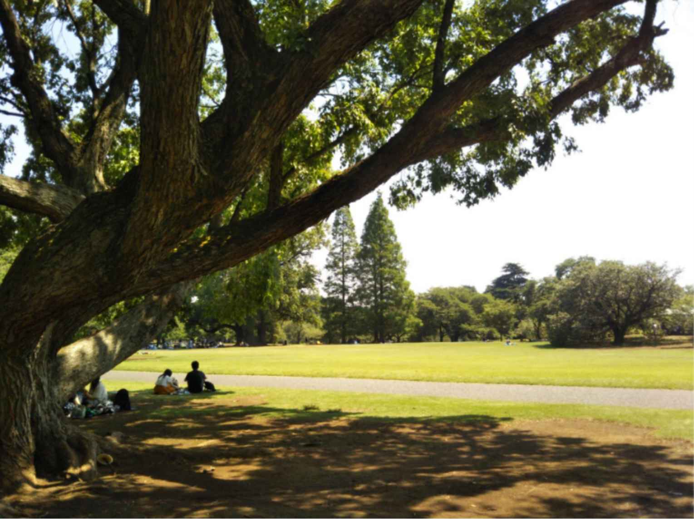
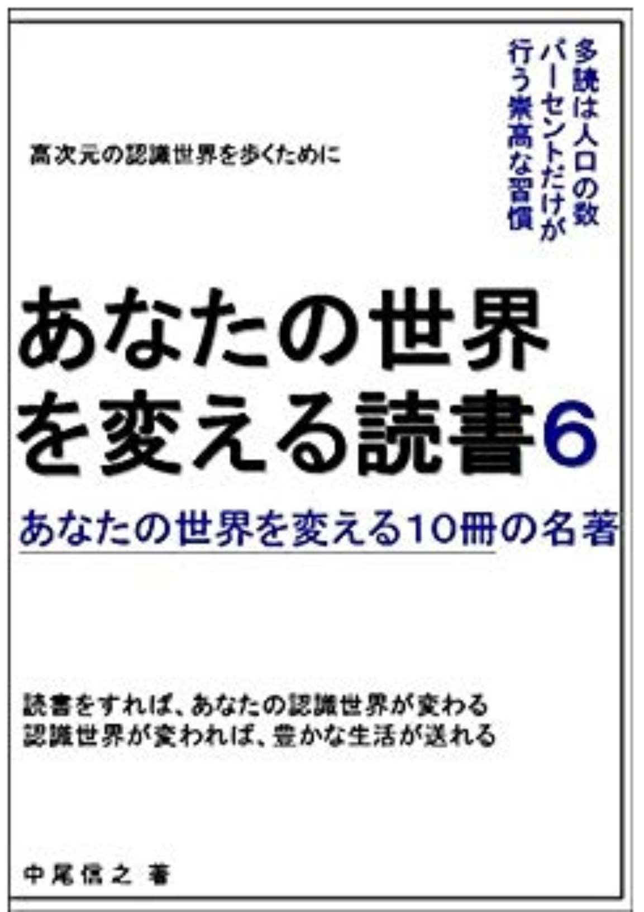
あなたの世界を変える読書６
あなたの世界を変える１０冊の名著
□はじめに
・自然なる帰結、自然なるプロセスとしての自由獲得
□第一章 生き方のヒントをくれる本
１．非学歴エリート 安井元康
２．すぐやる！「行動力」を高める"科学的な"方法 菅原洋平
３．「肩こり」から人生が変わる！ 金田かえで
□第二章 世界のとらえ方を変える本
４．黒本４ 高城剛
５．洗脳護身術 苫米地英人
６．世界史の極意 佐藤優
７．マイホーム価値革命 牧野知弘
□第三章 科学によって見方を変える本
８．国債は買ってはいけない！ 武田邦彦
９．９９．９％が誤用の抗生物質 岩田健太郎
１０．環境を知るとはどういうことか
流域思考のすすめ 養老孟司、岸由二
□おわりに
・圧倒的に、思考に広さと深さを組み込もう
あなたの世界を変える読書６
あなたの世界を変える１０冊の名著
□はじめに
・自然なる帰結、自然なるプロセスとしての自由獲得
本書はキンドルアンリミテッド読み放題対象の本の中から、優れた１０冊を紹介するシリーズの第６弾である。ここまでで既に５０冊の本を紹介してきた。
何度か記載をしている考え方であるが、ここで紹介している書籍の一冊ずつの知識が重要なだけではなく、複数の書籍の知識を重ねて吸収することで、知識のネットワークが広がり、自分の中で化学反応を起こしていることを感じて頂くことが、最も重要であると考えている。
そして、そのような状態に到達していくことが、自身の世界を認識する仕方を変え、私たちの行動が自然と変わっていくということを意図しているものである。
もちろん、その過程で、私たち自身が、自分の世界の「主役」であり、「創造主」であるという認識にたち、より良い世界を生き、より自由を実感しながら生活していけるようにすることが、私たちの読書の旅による自然の帰結であると考えている。
今回、ここで紹介する本の中でも、自分を偽わりながら無理をして、何かを目指すのではなく、自由に生きる自然な流れとして、あるべき姿に向かう、なりたい自分になっていくというプロセスを説明している書籍がいくつかある。世の中の成功本や、引き寄せ本が、概して成功者を生まないのは、その方法論の成功率が低いためであると思われる。それよりも、個人に、しっくりこないのは、自然ではない、なにか無理な努力や我慢をしいているからであると思われる。
本来は、より自然な流れの方法論こそが、人間という情報体にとって適切なのではないかということである。
そもそも、私が本書を書き始めた直接のきっかけは、過去の仕事の同僚に、私が多読を始めたことを伝えたところ、私のセレクトした書籍紹介を聞きたいという声を貰ったためである。それ以前に公開した電子書籍である「自分を生きる天職（転職）のすすめ ～１００％実力を表現する面接法～」は、私が今までに８つの組織に所属した経験から、どのように組織との関係をとらえ、どのように仕事を選ぶことが、自身の自由に繋がるかということを伝えたいと思い公開したものである。
二冊目の「はじめてのチームマネジメント ワンチーム・ビルダーを目指して」についても、過去の仕事仲間が３０歳未満であるにも関わらず、年上の部下を持つにあたって、アドバイスを求めてきてくれたことに対して記したものである。「アマゾン採用面接・対策マニュアル ～面接の秘境 アマゾンを越えて～」は、私がアマゾンの採用面接を何度も受けて、ようやく入社した後に、すぐ辞めた経験をもとに記載したものであるが、これもアマゾンに入りたいという過去の同僚の質問から生まれた書籍である。その他のものも、私の単純な興味から生まれたものもあるが、身近な方の声にこたえる形で生まれた書籍が複数存在している。まだ電子書籍を公開し始めて半年であるが、書籍数は、３３冊に到達した。
その中でも、「あなたの世界を変える読書 あなたの世界を変える１０冊の名著」を書くことは、私のライフワークのひとつになっているように思える。この１年ほどで、ある程度の多読をすることは、私の日常の行為となっており、そのインプットから、アウトプットをすることは、非常に自然な流れだからである。そして、このインプットからアウトプットをする際に、単に、一冊一冊を紹介するのではなく、私が今まで経験してきたことや、今までに読んできた他の本の情報、特に、このシリーズで紹介してきた全ての本の知識を統合することによって、新たな解釈を加えたり、私なりの思考実験をしたりということをしているのである。
そのような、私の頭の中の「情報の運動」とでも呼べることを、書籍にするために、白紙のワードファイルに言葉としておとしこむことで、自然に生み出されているのが、この「あなたの世界を変える読書」シリーズなのである。もし、アマゾンキンドルという出版方法がなかったとしても、私は、ブログなどで、書籍の要約と、自身の考えを公開してきたように、アウトプットを続けていたであろうと思う。
私がこのような文章を書いているのも、まさに、自然の帰結である。そして、結果としてのみならず、自然に生じているプロセスの一場面なのだと言えそうである。
ぜひ、あなたも自然なる帰結、自然なるプロセスとして、あなたの自由獲得につながるように、ともに面白い本に出会う旅に出かけてみようではありませんか。
□第一章 生き方のヒントをくれる本
１． 非学歴エリート 安井元康
本書は非常に明快な論理で展開されており、記述に一貫性があって読みやすい作品である。「努力は正しい方向でやるべき」というのが安井さんの考え方である。
私は、努力という響きがあまり好きではないので、ここでは「研鑽」という言葉を使いたいと思う。その方向性において、マジョリティ（普通の人間）が行う研鑽の方向と逆を行くべきだという指摘がある。
これも非常に面白い指摘である。卓越した能力を発揮している人は、働く前か、働いている間のいずれかにおいて、もしくは、その両方において、普通の人と違うやり方で研鑽をしているはずだからである。そして、必要な研鑽を圧倒的にすることを「良し」としながら、不要なことには目もくれない。例えば、会社の飲み会というようなものには、いっさい行かないという考え方も、私と同じである。一見、積極的なような交流会などの意味のないものに出る必要もないというのである。これも、ここまで紹介してきた堀江貴文さんの書籍などでも指摘されていた内容である。
自分が研鑽をして能力を高めていけば、自ずと必要な人脈は、その必要に応じてできてくるからである。確かに、類は友を呼ぶで、高めていないもの同士が集まっても得るものは少ない。逆に、自分を高めていない状態で、分不相応な人に会えたとしても、対等な関係で話ができずに、単に会ったというだけの事実が残るだけになるはずである。また、必要な研鑽をするうえで、不要なことは、コントロールできない要素である、「過去」のことにエネルギーを使わないということである。
人生でもっとも限られた貴重な資源は、時間であり、１日は２４時間であるが、正しい方向性で、正しく研鑽をした人と、誤った方向性や方法で研鑽をした人の差は大きい。まったく何も研鑽をしなかった人との差はさらに大きい。そして研鑽を積み重ねてきた人は、目の前にあるチャンスを正確に認識して、それを自分でものにすることができるのだという。確かに、準備をしていなければ、チャンスを見つけることも、それに飛びつくこともできないのである。
安井さんは、有名ではない大学を卒業されているが、すでに大学時代から、自分の進む方向性を考えて、誰にも負けないような研鑽をされ、それを就職してからも継続し続けておられるのである。英語と、管理会計の力を鍛え、企業の上場を推進し、２０代で上場企業の役員になるという偉業を成し遂げたのである。安井さんの、この間の並々ならぬ研鑽を聞けば、その能力を持ってすれば、有名大学に入ることなど簡単だったに違いない。しかし、受験勉強に労力を費やさなくても、その後の研鑽で、いくらでも有名大学出身者に打ち勝つことは簡単にできるということを、彼の生き方は証明している。
私も同じく、有名ではない関西の小さな大学を卒業した。そして大学在籍中は、学校の勉強はしていたものの、それ以上の勉強はあまりしていなかった。もともと受験勉強に意味を感じなかったため、英語だけで受験でき、たまたま入学することができたのである。しかし、私の勉学は、大学が終わるあたりから、急激に始まった。まずは、受験勉強と同じように、就職活動に意味を見出せなかったために、また、社会政策などには強い興味があったため、公務員の世界に入ることにしたのである。
この際、大学で習った法律学や政治学の抽象的な知識は、細かいテクニカルな公務員試験には、まったく効果がなく、一度は全敗した。しかし、そのあと正しい研鑽をすることにより、国家２種と和歌山県庁に合格したのである。私に正しい研鑽の意味を分かりやすく教えてくれたのは、公務員試験勉強のために通った東京リーガルマインドの経営学の録画された授業である。そこで、孫氏の兵法にある「敵を知り、己を知れば１００戦危うからず」という言葉を知ったのである。良く準備されたコンテンツであれば、録画されたビデオの講座で十分なことも、この時、強く認識した。
他の本でも書いたが、公務員試験はいくら倍率が高くても、勉強をせずに受けている人間が多いため倍率には、あまり意味がない。自分が何割の点数を確実に取れる勉強をしているかということが問題なのである。受験をしている他の方々は敵ではない。受験科目の構成や、難易度などを知ることが敵を知ることである。己を知るということで言うなれば、自分の実力のどこが足りず、どこを効率よく補う必要があるかということを正しく認識することである。そうして強みを強化し、弱みを補った。そのためフルで受けると高額になる予備校で受ける講座も、弱点強化と、追加して学ぶ科目に絞り受講し、受講料をおさえながら、模擬テストを有効に使うことで、己を強化したのである。
そして公務員になる前から、読書をするようにして、広く本当に自分がやりたいことを探すことを始めた。その流れの中で、公務員には問題解決能力が足りないということを考え、公務員になる前から、次のアクションを準備し始めていた。県の部門で働いている間に、インターネットで海外留学をするということをトライしたのである。その後、２年で公務員を辞め、豪州へのワーキングホリディに行き、働いている間に取得したインターネット留学のＭＢＡコースの単位（南カルフォルニア大学）を持って豪州の大学院に入ったのである。しかし、そこでの勉学は、その前に、大前研一さんのＢＢＴの放送で見ていた日本人の行っている講座よりも著しくレベルが低かったため、１学期で辞めて、日本にとって返し民間で働くことにしたのである。そこから、複数の組織を経験し、現在は８つめの組織に所属している。私も、自分が納得できない研鑽はしたくない派である。
安井さんも二週間で会社を辞めたこともあるという。組織には所属しているが、組織に頼り切らずに、「個」としての研鑽を続けていれば、自分が活躍する組織を、自分が選ぶという選ぶ側になれるのである。パージされる側になるのではなく、パージする側になるということである。組織が個人より強いと考えるのが通例であるかもしれないが、パージする側になるのは、サイズがある方ではなく、意志を持っている側である。
組織に入るまでは、組織とマッチしているか完全には分からないのであるから、一度入ったうえで、即座に判断をすることは、時間の無益な投資をしないという考えに従えば、しごく当然の選択であると思える。たまたまマッチしない状態であっても、自分が主体的に柔軟に環境に対応できる選択権を持つということが大切なことであると思う。個の力を高めていれば、困難から成功につなげることができるし、環境を変えていく、もしくは選び変えることができるのである。
本書に書かれている「自分の人生を自分で定義する」や、「自分が主役で、他人はわき役」という安井さんの考え方は、このシリーズの第一弾から今まで紹介してきた、いろいろな本の内容と極めて高い親和性がある。石の上にも三年や、すし屋で何年も同じ作業を続けている職人見習いを否定する堀江貴文さんの考えとも、かさなるところが多かった。
２． すぐやる！「行動力」を高める"科学的な"方法 菅原洋平
この本が面白いのは、行動を変えるために無理をしたり、たいへんな努力をしたりしないでもいいように、上手く自分の脳に入れる情報をコントロールしていくということが書かれていることである。誰しも何か行動を変える際に、心理的なストレスなく、それが実行できればと思うことが多いはずである。
本の冒頭で記載されているように、例えば、普段は洗えているお皿が、どうしても洗うのが嫌になる時があったりというふうに、人間の脳（心）は、いつも同じ反応をしているわけでもなく、オンとオフの切り替えがオートで作動しているような状態になっているという。
確かに、やる気がある日と、やる気が、あまりない日があったりするのも、それと同じことであるように思える。特に大きな理由があったわけでもないのに、このような差が出てくるのである。
事故にあった方のリハビリを著者がされている中で、言葉で、「このようにするんですよ」と伝えるだけでは、できなくなった動作を回復することは難しい場合が良くあるという。そういう際に、他の人が同じ動作をしているのを見せると、リハビリを受けている人の脳のミラーニューロンが働いて、自分が動かしているような感覚を覚えて、そして動作を回復することがあるというのである。不思議な現象のように思われるが、人間の脳の中のネットワークの中を電気信号のようなものが走っていると考えると、事故でその動きがストップした部分に、もう一度、刺激を与えれば、その後、また電気信号が流れ始めると考えれば、理解しやすいのかもしれない。
事故にあった方のような極端な例ではなくても、例えば、老人ホームで、大皿に、料理を盛って出していた際は、自分でごはんを食べなかった方に、小皿で一品ごとに出すと、自分で料理を食べるようになったという例が掲載されていた。このように、情報の与え方を変えるということで、情報の受け手の行動が、努力なしで自然と変わるのであれば、そのような 情報の与え方を工夫していく のが、効率的なように思われる。
さて、実際に私たちが、これを実践していくには、どのようなことがあるだろうか。例えば手の届きやすいところに、漫画を置いておかないであるとか、テレビのリモコンを置いておかないであるとか、本書でも書かれていたように、気持ちを切り替えるために、こまめにパソコンのスイッチを切るということなどが考えられる。簡単にできることで、だらだらと作業をするのではなく、一度、気持ちをリセットしてから再スタートするような行動から、自分の脳に入る情報の入れ方を変えていくことができるのではないだろうか。
私もいつのころからかやっているのは、「しんどい」とか、「疲れた」という口癖をできるだけ言わないようにしている。そして、「たいへんやなあ」ということの代わりに、「面白いなあ」と言うようにしている。このようにセルフトークを変えているのである。
「面白いなあ」というのは、そんな、たいへんな状態になっているのが、不思議で笑えるなあということに切り替えているのである。仮に、癖で「ああ、しんどい」と言ってしまったとする。しかし、一度、冷静になって、「本当にしんどいのかな？」と、心で自問をして、そうでもないのに、つい言ってしまったという言葉であれば、自分で打ち消している。「そうでもないなあ。」「ちょっとだけかなあ」というふうにである。
このように、部屋に置いている物の配置や、自分の言葉など、自分がリラックスできるように、そして自分のやる気スイッチが上手く作動するように、仕向けていくことが肝要なのであると、改めて教えられた本であった。ぜひ、仕事場の環境も、自分で工夫してみたいものである。
３．「肩こり」から人生が変わる！ 金田かえで
同じ著書の別の本を読んでから、この本を読むことにした。結果として、こちらの本の方が好きだったので、今回紹介をさせて頂きたい。本書は、非常に読みやすい作品なので、すぐに読めてしまえると思う。しかも、これまで、「あなたの世界を変える読書 あなたの世界を変える１０冊の名著」のシリーズを読んできてくださった方であれば、本書に書かれていることで、耳なじみのあることが幾つかあったのではないだろうか。
例えば、呼吸への気の配り方を含めた自分の状態の見つめ方である。金田さんは、それを合気道の方法論から説明をしてくれているが、ヨガや瞑想にも通じる内容である。ここでは、自分の状態を正しくとらえて、それを良くしていこうとする考え方が見て取れる。
合気道の独特の言葉なのか、今回初めて聞いた言葉は、集中している状態ではなく、ある事象にひっぱられていて、周りが見えなくなっている状態を、「傾注」というそうである。ネット辞書で調べると、集中することと変わらない意味のように書かれているが、 「心の姿勢」を敏感に説明する合気道では、「集中」と「傾注」を分けている というのである。
「集中」は、周りが見えたうえで、注意をしている対象のことを良く見えている状態であり、「傾注」は、対象のことだけを見ていて、周りが見えてない状態のことを指すようである。そうすると、傾注状態では、対象は見ていても、周りが見えていないのだから、正しく反応できずに終わるということになるのは理解できそうである。前回、宮本武蔵の「五輪書」を紹介したが、やはり心の状態を書きしるした表現が多かった。
２．で紹介した「 すぐやる！「行動力」を高める"科学的な"方法 」でも、無理をするのではなく、脳に入る情報の見せ方を変える工夫が説かれていたが、金田さんの本でも、無理をしている自分の心を冷静に見つめて、体の声を聞けなくなっている状態を把握して、 自分の体の小さな声をきちんと拾えるようにすることの重要性 が説かれている。そうすることで、適時、きちんと休憩して体や頭を緩ませることをしていれば、重症の肩こりになる前に、少しずつ予防をしていけるのではないかということである。
また、シリーズ第三弾で「病気は才能 おのころ心平」という本を紹介したが、病気は発病していないにこしたことはないが、病気だけを悪者にするのではなくて、病気が何かを肩代わりしてくれていたり、メッセージを伝えようとしてくれていたりするというような考え方も、本書と通じるものがあると感じた。
私は時々、風邪をひいているが、たまに思うことがあるのは、風邪をひくことで、体が部分的に作り変えられたり修復したり、浄化したりしてくれているのではないだろうかということである。そして、ある程度の頻度で風邪のような小さな病気をしているがために、大病にかからずに済んでいるのではないかとさえ思うことがある。
対象だけにとらわれるのではなく、自分と対象を含めた環境（周り）も見えたうえで、止観（正しく見る）できることが、個別の事象にも、人生全体においても重要なことなのだと、今回も改めて再認識したしだいである。
□第二章 世界のとらえ方を変える本
４．黒本４ 高城剛
毎回定番の高城さんの本を今回も取り上げたい。白本、黒本は、高城さんの読者からの問いに、高城さんが答える形式をとっている本である。非常に、簡易な造りの内容であるが、普段、よそでは聞けないような内容が書かれているので、楽しめシリーズである。前回は、白本４を紹介したが、同じタイミングで黒本４もリリースされていた。今回の本の内容は、かなり興味深い内容が書かれているＱＡが多かった。
例えば、政権に食い込んでいった創価学会についての情報は、今回、特に興味分かかった。フランスは創価学会をカルト指定しており、アメリカ下院は、創価学会を危険な組織として指定をしているというのである。実際、現在のように力を持ってきた背景には、暴力団の力を利用しつつ、日蓮正宗との内ゲバに勝ったからだという情報が記載されている。これは、この抗争に関わった山口組系後藤組の元組長の後藤忠正さんが書かれた「憚りながら ( 宝島社文 庫) 」という本で、詳細が語られており、黒本４にも引用がされているので、参照頂きたい。
実際、原子力爆弾や軍事力を、まったく抑制しなかったオバマ大統領や、お金もうけのために事実を湾曲して危機をあおったゴア副大統領がノーベル平和賞を取っていることから考えて、権力とお金があれば、ノーベル平和賞は取れるということが分かる。しかし、カルト認定されているような団体のトップに、世界的な賞を贈るのは、やめて頂きたいものである。
宗教にまつわる本もいくつか紹介してきたが、仮に、創価学会がカルトであるとして、それでは他の主流宗教の教義は、カルトではないのかと言われると、これも疑わしいと思う。キリスト教は最も、内部でも外部にも残酷なことを行ってきた歴史を持っているし、各宗教の教祖は万人の平等を説いているのに、形式化された宗教は、ほとんど階層性で、組織内部でも、外部者をも階層化して考えている。巨大宗教は、教祖を教えと反しているという矛盾を抱えて組織的な発展をしてきたのである。
高城さんは、日本の音楽シーンの衰退については、インターネットの影響よりも、９０年代のカラオケ文化と、２０００年代の握手会セールスの影響が大きいと指摘する。海外では、地域のラジオが、文化としての音楽を育む機能を果たしているが、日本の場合は、そこも違うのだという。私もラジオが好きだったが、どのラジオ局を聞いても、どの番組を聞いても、同じ曲ばかりが流されるようになってきた段階で、ラジオから遠ざかってしまった。そのタイミングがおそらくカラオケ文化が隆盛を誇って歌いやすい歌を、みなが同じように歌うという流行ができてきた時期だったのではないだろうか。握手会という新しいフィールドで売上を取っていくというやり方を考案し、構築した人の能力は素晴らしいものであると思うが、音楽の文化への影響で見れば、マイナスの影響だったと言われても仕方がないのかもしれない。
高城さんは、日本の自民党とマスコミと、反社会勢力の表示一体関係についても、毎回のように指摘されている。原発問題を生み育ててきた自民党が政権に居続けている状態だけを見ても、自浄作用など、まったく期待できないという。確かにその通りである。企業が使う電気代は、値下げ合戦で、どんどんと下がっているのに、電力会社は、その値下げの源泉を、一般市民に高い電力を払わせることで補っているのである。そのうえ、ほどほどの地震でも発電所は止まってしまうのだから、本当に日本の電力は安全だから高いのかという疑問が出てくる。
独占、寡占的に公共的サービスを運営する権利を認可されていながら、このような市民へのしわ寄せをするのは、どういうことだろうか。監督官庁が市民の立場で機能していないということである。さすが、計画停電をやってしまうだけのことはある。
日本の満員電車は異常である。あのような乗車状況で、運賃が下がらないのはどういうことだろうか。あの満員状態であれば、顧客満足は下がる一方なのである。いくらアナウンスが丁寧であっても、そんなことは焼け石に水である。駅舎の安全性を高めるのは、オリンピックをするからではなく、公益企業として寡占的な利益を受けて運営しているから、オリンピックが決まるより以前から、日常的に行うべきことなのである。順番がまったく逆なのである。
高城さんは、そのような状態を許している政治家については、 表面は国粋主義的な愛国者こそが、実は、拝金主義的な売国主義者であるという のが、政治家の怖いところであると指摘している。
現在の環境における、高城さんの生き方のアドバイスは、金融資産や、人の付き合いまで、分散するということである。それが、実際に破綻した国家や地域の中で、元気を保っている人の生き方であるという。日本という国の政府に対して期待をしている人は少ないと思うが、これからも自分のことは自分で考えて、リスクに対しても、日本政府に対しても、自己防衛をしていくことが重要であると改めて認識させられた。
５．洗脳護身術 苫米地英人
このシリーズでは、毎回紹介しているのが、苫米地さんの書籍である。苫米地さんの本の特徴は、難しい内容を可能な限り分かりやすく書いているところであり、学問的な書き方をしていないことである。ただし、「洗脳原論」、「認知科学への招待」と本書は、少し学問的な教科書のような文体で書かれている。
この次に紹介する佐藤さんの書籍では、ナショナリズムも資本主義も宗教のようなものであることが指摘されている。また、７冊目に紹介する本は、マイホーム信仰についての本であるが、マイホーム信仰もまた、宗教のようなものである。
私たちは幼いころから、国という考え方にしろ、マイホームにしろ、お金（資本主義）にしろ、社会や親、学校で教えられる情報から、物事を考えるフレームを自分に埋め込んで生活をしているが、それらの全てが適切というわけではないのである。マイホームについての考え方が、時代や環境に応じて変わるべきものであると同じように、資本主義や国家の在り方も、いままでも時代の変化におうじて変化し続けてきたのである。これからの社会のあり様というものや、私たちの生き方も、環境に応じた形で、柔軟に考えていく必要がある。
洗脳護身術は、自分の外部からの洗脳的操作に操られないための考え方や技術を教えてくれているものであるが、あからさまに外部の誰かからというものではなくても、前述のように社会から知らず知らずのうちに埋め込まれた常識のようなものも、私たちの考えを縛っているものであるから、それらのひとつひとつが本当に、自分が従うべき考えとして適切かどうかということを、時々に考えてみるべきであるように思われる。
過去に紹介した、「超瞑想法」などでも、逆複式呼吸のやり方について記載がされていたが、洗脳護身術の中で紹介されている事柄のうち、自分にあっていると思われた方法は、試して頂ければと考えている。
６． 世界史の極意 佐藤優
この書籍は、今回紹介する本の中でも、是非、読んで頂きたい一冊である。
佐藤さんの風貌が少し苦手で、今まで読むことをためらっていたのであるが、苫米地英人さんと、佐藤優さんの対談映像を見て、非常に深い知識をお持ちで、柔軟な考えを持ち、達観されている感じに共感が持て、本書を読んでみることにしたのである。
私たち日本人は、大河ドラマを含む多くの時代劇を見ているが、時代の流れを巨視的に見ることが非常に苦手である。私自身も、学校の歴史の教科書を見ることは非常に嫌いであった。時代の大きな流れや解釈をしていくのではなく、単語レベルの内容を、ランダムに暗記していくということに意味を見出せなかったからである。しかし、多くの書籍を読むようになって、歴史についても考えることが増えてきた。私たちは、戦後という時代の中を生きていて、戦争体験者が亡くなっていき、戦争を知らない世代が増えることが危ないのではないかということを耳にしている。
ところが、私はこの意見に反対である。なぜなら、戦争を体験した世代が、戦争を清算せず、世界の体制は継続していると思われるからである。
佐藤さんの書籍でも、 この時代は第一次世界体制から継続している という指摘がなされている。私も、その通りであると思う。経済体制としての金融資本主義、政治体制として戦争を拒否せず望む思考が含まれていることなどが、その継続性である。佐藤さんの書籍でも、私がこのシリーズで紹介したレーニンの帝国主義も紹介がされており、世界の経済と、政治の歴史が解説されている。また、ナショナリズムというものが、どのように生まれるかという３つの説も説明されている。このような概念も、私たちは、普段考えることがない事柄ではないだろうか。
私たちは、日本人としてスポーツを応援すること以外でも、集団としての意識を持っている。これが、どのように生成されるのかということである。明治政府ができるまでは、日本というまとまりの意識は、この島の人間は持っていなかったのである。ナショナリズムは、上から定められてできるものと、何か事柄が起こってから、それに対するリアクションとして起こるものもある。すなわち、自然に必然的に起こっているわけではないのである。
私たちはグローバル化の社会を生きている。この社会は、世界が近くなりながら、みんなが近くなるだけではない点を認識する必要がある。佐藤さんの指摘によると、 「帝国主義の時代、グローバル化は国家の機能強化を促してきた」 ということである。確かに、グローバル化で国境の垣根が下がるだけではなく、過去と同じように経済ブロックが形成されようとしている。
経済と戦争に関する指摘でいうのならば、 「植民地を求めない帝国主義、全面戦争を行わない帝国主義」、「新・帝国主義は、経済の軍事化と結びつくことになります。」 という指摘である。私たちは、決して、過去のふたつの大戦と断絶した平和な世界を生きているわけではない。非常に不安定な要素をはらんだ、戦争を起こしてきた世界とつながっており、現在も、世界では戦争があふれている。
そして、佐藤さんの指摘するように、植民地化しないということは、人間が公平になったのではなく、単に植民地を維持する直接コストが高いという維持コストの選択の問題である。また、戦争についても、その規模を調整することで、継続可能な戦争をしているということなのである。このことは、帝国主義的な資本主義という、少し嫌な言葉で言い表せるのかもしれない。佐藤さんも、本書の冒頭で、戦争を回避するためという、非常に重要な大きな命題を掲げて、本を開始している。それだけ、差し迫った世界に私たちは生きているということである。
本書の終盤で佐藤さんは、鋭い指摘を行っている。資本主義も、ナショナリズムも宗教であると。そうすると、人間は、宗教と、資本主義と、ナショナリズムという、３つの宗教で、世界認識のフレームを作り、生きているということである。
宗教による戦争をしそうな場合は、ナショナリズムで国民を縛り、宗教で国が分裂しないようにする。ナショナリズムで国が分裂しそうな時は、宗教的統一で、国の分裂を阻止しようとする。正直、どちらも為政者による洗脳としか言えないように思うのは、私だけではないはずである。
さらに述べられている提案としては、「目に見えないものを大切にする」、相手を思いやる啓蒙思想のふたつが重要だとされている。これは、まったくその通りである。私たちは、宗教や、資本主義や、ナショナリズムを超えた、より大きな人間愛のようなものを、意識のベースにしなければ、競いあう、欲望をとめられない、戦争を起こしても良いという認識を許容し続けてしまうのであろう。
逆説的に、佐藤さんが言うように、社会主義体制というアンチテーゼがあったからこそ、資本主義は所得の再分配を行い、自身の潔白を証明しなければならなかったが、そのようなアンチテーゼが消えたのちの、資本主義は、過去の大戦と同じく、帝国主義的、資本主義という側面が強まっている傾向にありそうである。
ここにおける世界の制度的なプログラミングのバグを治すことは非常に困難かもしれないが、画期的な案を私たちの世代で考えたいものである。
７．マイホーム価値革命 牧野知弘
以前も、住居に関する書籍を紹介し、建設業界、不動産業界、金融業界、政府にだまされて高値の不動産をつかまされて後悔することがないように情報を共有させて頂いたが、今回の書籍はさらに分かりやすく住居に関する巨視的な動きを考えるヒントをくれる内容であった。
まず知るべきことを列挙するので、この情報を、皆様と一緒に、しっかりと噛みしめていきたいと思う。
１．２０２２年に、広大な生産緑地が、宅地として市場に出るために、地価は都市部で確実に下がることが予測されること。
２．既に人口減少傾向にある日本において、オフィスも住居も飽和状態であり、空家率は近いうちに（１０年もすると）３０％にも到達することが見込まれること。
３．このような値下げ要因が多い中、いまだに毎年９０万個という供給が追加されていること。
４．現在の値上がりは、不動産バブルという実際の家に住むための需要ではない実需に基づかない虚構の値上がりであること。あわせて、おもてなしで始めてしまったオリンピック虚構経済のせいで、建築資材や、建築に関する労働コストが上げられ、これが跳ね返った作られた値上がりであること。
５．現在は、ワンルームの生産過剰が加速されているが、今後、都心でリタイヤする世代のファミリー物件が大量に市場に出回ること。
これらの情報から、現在の地価、物件価格は明らかに過剰評価をされているのである。また、この状況を税制が、後押ししてしまっているという構造的な問題もある。
危険な古い住居を撤去したいなら、家屋がない空き地の税制を下げればいいものを、空き地にすると税金が高い状態になっているので、古い住居が放置される。また、土地持ちの少し裕福な家族は、空き地で高い税金を取られるより、また、高い相続税を取られるより、税金をゼロにすべく借金をしてでもマンションを建設しようとするようである。この時、不動産屋さんの利益なども鑑みると、ワンルームの方が、回収効率が良いということで都心にワンルームばかりあふれているというのである。
このことからも分かるように、 住宅業界全体が、実需用ではなく、供給者側の論理を色濃く残した業界 という指摘がされている。供給者は自分たちの儲かるように、自分たちのことだけを考えて需要を無視して過剰提供をするから、それらが売れるような広告をうち、今が買い時だと言い、借りるより資産にする方が得だという。ところが、本書で指摘されているように、扱いに困る住居が多いからこそ、相続の際に、住居が放置されることになっているのである。そして、相続税があるのが当たり前と私たちは思っているが、オーストラリアなどには相続税がない。そもそも、購入した際にも、維持している際にも税金を払っているのに、なぜ相続するだけで税金がかかるのか、これは三重課税になってしまっている。
今回特に面白かった指摘は、空家問題は、ずっと以前からあるということである。最初の空家問題は、都会に人口流入が始まったために起こった地方での空家問題である。そして、現在進行中の全国的な空家問題、この中で、都心に集中した人口を郊外に誘導したが、昨今の都心回帰の流れの中で、郊外の空家が増加しているということである。
もう一つ面白い事実は、数十年のうちに、ひとつの動きがあったとしても、それが揺り戻しされる可能性があるということである。たとえば、東京都中央区の５０年間の人口推移が記載されている。ここでは、 １９６４年から３０年をかけて、１９９７年に人口が半分以下に減少しているのである。ところが、そこから２０年で都心回帰がなされ、逆に２０１７年には、１９６４年の人口を上回っているのである。 ５０年の間に、逆流の動きが起こっている。私たちが小学校の時代に都心の人口が減っているということを教科書で読んだ頃は、都心に住む人口が減少傾向であったのであろうが、現在は、それとは異なった状態にあるのである。ひとつの流れの中にあっても、次の流れが発生する芽を見る必要があるということである。しかし、この中央区の空家率は今でも２７．７％と非常に高い状態にある。人が戻ってなお、これだけの余剰を抱えているのである。この先、実需が正常に、反映されれば、直近で地価が上がっていること自体、虚構であったことが分かるはずである。
あらゆるタイプの多くの住居が資産ではなく簡単に負債 になってしまう中で、タワーマンションを購入するリスクも丁寧に説明してくれている。タワーマンションは、非常にメンテナンスがしづらい構造物であるという。高層なために、足場の建設などが困難で外装のメンテナンスなども、時間も費用もかかる。その他の修繕も、積み立てが適切に行われていないと資金が不足する上に、住民の合意形成も困難である。もともと販売時点で見積もられていた修繕費用などは安く見積もられているから、のちのち住んでいくうちに修繕費用などがあがっていくという。このようなことを聞くと、まったく良いようには思えない。
現在は、一般の戸建て住宅が放置される状況が社会問題になっているが、タワーマンションの場合は、取り壊しが戸建てより比較にならないほど困難なため、何十年後かに大きな社会問題になりそうである。郊外のゴーストタウンと同じように、湾岸のゴーストタワーとして、３０年後には問題になるかもしれない。
しかも、タワーマンションなどは、まだ建物がない状態からモデルルームだけで販売をしている。これも普通に考えれば、人生で一番高い買い物をするというのに実物をみせずにイメージだけで売ってしまうという恐ろしいことであるように思えるが、普通は気にならないようである。
牧野さんも指摘しているように、普段は必要以上に物欲が高くなく、不要なものを購入しないような、３０代の世代でも、マイホーム信仰が強く残っているようである。
私たちは、不動産業界の宣伝文句に踊らされずに、ライフステージにあわせて時々に応じた、物件の選択を柔軟に考えていく必要がある。不動産価格が下落するのは、すぐ数年後のことなのである。なにもいそぐ必要はない。この数年急いでしまったために、買った瞬間から多額の負債に何十年も悩むという生活に陥ることは避けるにこしたことはないのである。本書では賢い、物件の購入例もいくつか紹介されており、これも参考になるものだった。読みやすい本であるので、ぜひ手にして頂きたい。
□第三章 科学によって見方を変える本
８．国債は買ってはいけない！ 武田邦彦
ここ数回、武田さんの本を紹介させて頂いてきたが、今回は今までの環境問題や、大麻の問題とは色合いが違い、経済の問題がテーマになった本である。本の冒頭は理解しづらい部分があるため、この解説だけで十分かもしれない。
なぜならば、私たちは、普段、テレビや新聞で聞く経済の解説とはまったく異なるからである。私はテレビでニュースを見ないし、新聞も読まない。２０年前に、大前研一さんは、「日経新聞」のことを「日本経済分からなくする新聞」と解説をしていた。事実を事実のまま伝えている記事は、情報として見るのはいいのかもしれないが、あの新聞に、深い洞察は期待できないということである。
まずもって認識すべきは、経済学は役に立たないということである。なぜならば、経済学は「完全情報」を前提としており、人間は「合理的な判断」をすることを前提としているからである。公務員試験のために、初めて経済学について学んだ最初の授業で、それは間違っていると私は気づいたために、経済学の勉強は、まったくバカバカしかった。
普通に考えれば分かる話である。世の中には、いろいろな情報があっても、それを人間が完全に把握することができない。どこに、いくらで、何が販売されているかなど、インターネットの時代になっても完全に把握することはできないし、人間はそれらを全て把握しようとはしない。また仮に完全情報を把握できても、絶対に、合理的な判断をするという保証はどこにもないのである。
このように経済学の前提である、「完全情報」、「合理的な判断」は、根本から誤っている。実際、経営学では、「完全情報」ではなく、「限定情報」を前提として、合理的な判断も、前提とされていない。
さらに、経済学が生まれた当時は、経済が国家ごとに閉じられていたが、現在は相互依存社会になっており、閉じられた経済を前提にした構造では、説明がつかないのである。経済学はまったく役に立たない所以である。もともと、経済学は、金融経済の嘘を隠すために生まれた学問だと苫米地英人さんは指摘している。そう言われれば納得である。従来の経済学が破綻し、人がどのように判断して経済環境に対応していくかという経済心理学が生まれてきたのは、そのためである。であるから、従来の道を生きている古い経済学者をブレーンに用いても、他国に搾取されるだけである。
一般に科学者は、自分の狭い領域に閉じこもり、後半な知識を統合している学者は少ない。ところが苫米地英人さんや、武田邦彦さんは、物理現象を科学的に解明する視点を持って、人間社会と、これを動かしている経済を分析しているので、嘘の経済学と違う見方ができるのである。お金は手段であって、目的ではない。お金を目的にしてしまったところから、現在の人間社会の不幸が始まっているのである。
武田さんの指摘で、面白いのは、年金の話である。日本の年金は「賦課方式」と「積立方式」の合併版でグレーな部分が多すぎるというのである。そもそも、破綻を前提に作られていると指摘されるぐらいダメな制度である。
「賦課方式」は税金のような形であるので、集めたものを、そのまま今、現在払うということである。それであるなら、現在、積みあがっている資金は、正しく配布されず、利権として積みあがっていると言える。徴収したものを、ためずに配布するのが効率的な「賦課方式」である。重要なことは、常に現状の経済体制では、だいたいにおいてインフレが発生しているから、今使わないと、価値が下がるということである。
「積み立て方式」であるならば、自分の積立額と、受取額がきちんと連携をしていないといけないが、基本的に連携していないため、若者何人で、老人何人を支えるという説明がされている。つまり、 賦課方式なのか、積み立て方式なのか曖昧なため、あまりにグレーすぎる ということなのである。積み立て方式であれば、物価上昇率を加味すれば、明らかに運営ができない。また、物価上昇率の計算の仕方も、政府の計算は血が通っていない計算であると指摘がされている。
ここで、考えなければいけないのは、ＧＤＰというものに縛られすぎないという考え方であると思う。武田さんが、物価上昇率や物価指数には、血が通っていない計算がされていると指摘したように、 総量としてのＧＤＰが個々の市民の豊かさを表していないということが一番の問題 であると、私は考えている。
株価と同じである。「１１９２作ろう鎌倉幕府」、こんな年号を覚えても、当時の庶民は、鎌倉幕府ができても、できなくても生活は変わらなかっただろうという武田さんの指摘している。「どんどん、上げようＧＤＰ？」
総量としてのＧＤＰがあがるだけで良いことがあるのだろうか。
ＧＤＰという形式数値に捕らわれているために、これを無理に上げようとする。数字を偽造するように、カンフル剤を打とうとする。そんな無理をして作った数字は虚構の数字でしかない。市民の作り出す付加価値の分しか社会は豊かにならず、市民の生活は改善されない。だから、それに関係がない、膨らまし粉である財政政策は毒だと、私は小学校の頃から考えてきた。
ＧＤＰをあげるために、みんなが毎日、必要以上の御飯を食べましょう、お腹いっぱいよりも食べましょうと言われて、食べているのが現在の経済の姿である。お腹に関わらず、必要以上の欲望を増やして満たしましょうというのである。それでは、いったい、どこで満足すれば良いのだろうか。数字に踊らされず、自分の自由な時間を過ごす、豊かさを感じられる時間を持つことが、幸せへの近道なのではないだろうか。
９．９９．９％が誤用の抗生物質 岩田健太郎
本シリーズでは、いろいろな医療に関する本を取り上げてきた。また、高城さんの書籍でも、最先端の予防医学についての記述が多々あるので、私たちはそれなりの知識を持ちつつあると思われる。本書も、本質的な医療の問題を提起している。若干、文章が読みにくいところ、細かい薬品名がでて読みにくい部分もあるが、現役の医師として、問題提起をしているところは勇気があることだと言える。
本題にあげられている抗生物質の使い方を多くは間違っているということであるが、それは結果であって、その原因となる問題が、医療業界にいくつか存在しているということが注目すべき部分であると思う。以下に、本書で書かれていた、問題をあげてみた。
①抗生物質含めた医薬品の研究と、認証プロセスで医薬品の効き目を正しく測定することは極めて難しいが、かなり適当に認証が行われている可能性が高い（時間経過による自然治癒なのか、医薬品の効果なのか判断できていない）
②そのため薬と薬効が曖昧なまま販売されている
③現場の医師は薬効が分からないまま、良かれと思って、多めに強めの薬を処方するが、その際、副作用については、あまり考えていない
④現場の医師の臨床能力がおおむね低いということ
⑤現場の医師の臨床能力が低いのは、それを高める教育をしていないから
⑥患者は、医者や薬を必要以上に頼りすぎる傾向がある
それぞれについて、私の考えを述べさせて頂くが、抗生物質についての詳細な記載は、岩田さんの本を手にとって頂けたらと考えている。
①抗生物質含めた医薬品の研究と、認証プロセスで医薬品の効き目を正しく測定することは極めて難しいが、かなり適当に認証が行われている可能性が高い（時間経過による自然治癒なのか、医薬品の効果なのか判断できていない）
このことは、岩田さんの本の中でも因果関係の誤解として取り上げられていた。私も、因果関係のとらえ方では、若いころに会社の中で、ある役員の方と議論をしたが、まったく相手が理解しないことがあり、今となっては笑い話ではあるが、非常に苦い経験をしたことがある。
たとえば、風邪が治ったとして、それは薬が効いたのか、寝ていて体力が回復し自然治癒で治ったのか、夜飲んだ温かい紅茶が良かったのか、母親の看病（気功的な癒し効果も含めて）が効いたのか何が、どれだけ回復に寄与したか、はっきりとは分からないということからきている。いろいろなことの複合的要因で、風邪は治ったが、薬は、まったく効かなかったのかもしれない。または、薬は、いくらかは効いたかもしれない。でも、この効いた部分が、本来の薬効として効いたのか、効く薬だと思って飲んだためのプラシーボ効果なのかも判別がつかない。このようなことが、研究段階でも、認証段階でも起こっているのではないかということである。因果関係の理解は極めて論理的で、難しい面もあるが、自然と切り分けられる部分もある。
分かりやすくいうと、なんらかの事象Ａと、次の事象Ｂが起こった場合、言えるのは、ＡＢには、相関関係があるということだけである。Ａが原因でＢになったと言えるためには、より直接的な特別な因果関係がなければならない。
この薬と効果の因果関係のことを考えていて思い出したのは、農薬と収穫高の関係である。自然農法を実践されていた福岡正信さんも、閉じられたスペースでの農薬の実験と、オープンな自然の中での農薬の効果は、まったく異なるということを説明しておられた。結果、ある農薬を使っても思ったほど効果は上がらないし、また農薬を減らしても、収穫が減る度合いも、農薬の仕様書に書かれている効果の数字よりは限定的になるということなのである。
また、因果関係の考え方としては、刑法で法的な責任を問うための因果関係も同じように、論理的に考えられなければならないものである。ある結果が起こったとしても、その結果を防ぐために行動する責任を持たない人には罪を問えないのである。
②薬と薬効が曖昧なまま販売されている
①で本当に効くかどうか分からないけれど、実験で相関関係はあったから効く薬とされ実際に販売がされたとする。しかし、もともと効果がないかもしれないのに認証された薬は、使用場面、使用方法が曖昧とならざるを得ない。薬の仕様書に書いている利用方法が信頼できないということかもしれない。これでは、何をもとにして医者は薬を選択すればよいのだろうか。非常に長期間利用して、医師自身が患者さんに長年処方し、効果を認めたものだけにすべきなのかもしれない。実際、岩田さんの本でも、新しい抗生物質ほど、リスクの検証が薄いという。ところがダメな日本の医師は、患者さんに効く薬かどうか、長年の利用でリスクが検証された薬より、製薬会社のＭＲが積極的に攻勢をかけてきた、しかも値段の高いものを興味本位で利用してしまうという。売上上位に、新製品が入って来る日本特有の現象は、かなり歪んでいると指摘されている。
③現場の医師は薬効が分からないまま、何も対応しないリスクを見て、多めに強めの薬を処方するが、その際、副作用については、あまり考えていない。
効果である正式な作用にも無頓着なら、副作用に無頓着になることも、容易に想像ができる。とりあえず薬をだせば、自分も心理的に安心し、患者さん側でも、薬を多めに貰うと安心するという奇妙な風習が成り立つ。
④現場の医師の臨床能力がおおむね低いということ
患者の様態を診て、話を聞きながら、目だけでは分からない様態や経過を把握したうえで、処方箋や改善策、予防策を考えるのではなく、対処療法が医療だと思ってしまっている。だからこそ、症状に柔軟に使い分けるのではなく、いつでも抗生物質というふうに、薬の処方に頼るのかもしれない。
⑤現場の医師の臨床能力が低いのは、それを高める教育をしていないから
薬のことが良く分からず、臨床能力が低いと言っても、正式に医師免許を持ち、必要な教育年数を経てきているのだから、医師になるための教育に構造的問題があることも推測できる。
⑥患者は、医者や薬を必要以上に頼りすぎである傾向がある
そして、医師や製薬会社だけが悪いのではなくて、そのような医師や、そのような製薬会社を受け入れ、そういう医師でも経営が成り立つほど、患者が殺到している状態にも問題がある。
おおむね岩田さんの記載している内容には納得ができるものが多い。一か所、手放しで賛同できずに、今も考えている部分は、「副作用があるのはいいが、それを理解したうえで、薬を利用する」というような言葉である。
副作用を覚悟しても、それを使わざるを得ない症状にだけ、効くと期待できる条件で、やもえず利用するという判断をするということなので、むやみやたりに、効かない条件でも利用する医者とは大きく違うことが分かる。しかし、ひっかかるのは、他の考え方として、副作用という言葉がおかしいという指摘があることである。正式な作用も、副作用もわけることができず、じつは副作用と呼んでいるものも、正式なその薬の作用だという指摘である。そう考えた場合、薬自体が、毒であり、その毒に頼るほど、リスクが高い状態にだけ、効くと思われる薬を、症状を見ながら利用していくという慎重な姿勢になるのではないかと思われる。
はてさて、私が帯状疱疹になった時の抗生物質は効いたのだろうか。自然治癒したのであろうか。それとも塗り薬が効いたのであろうか。それともプラシーボ効果であろうか。そのことは、いまだに謎であるが、本当に困ったときに医師に話を聞いてもらうだけでも、気持ちが助かるのは事実であるので、個人的に話が通じる医師を近くに持ちたいものである。
１０．環境を知るとはどういうことか
流域思考のすすめ 養老孟司、岸由二
シリーズ第四弾では、養老さんの対談「無知の 壁 : 「自分」について脳と仏教から考える」という本を紹介したが、今回は、環境に関して養老さんが対談されている本である。
地球温暖化による海水面の上昇は嘘であることを、シリーズで武田邦彦さんの本を紹介することで共有させて頂いてきたが、いまだにＷＷＦ（世界自然保護基金）は、氷の上できょとんとするシロクマの写真をネット広告に掲載し募金を呼び掛けている。私も、高校生時代は純粋であったので、ＷＷＦに募金をしていた。しかし、温暖化で氷は溶けない。溶けないのに、ＷＷＦに募金を集めたお金を何に利用しているのであろうか。
南極は大陸の上に氷がある。南極はマイナス５０度で、気温が数度上がると、南極周辺の氷が増えるようになると専門機関も公表しているという。ＩＰＣＣ第四次報告でも、南極の氷は変わっていないという報告になっているという。今後も温暖化すると、雪が増えて、氷が増えると言われている。また、北極は氷が浮いている状態であるので、氷が溶けても、アルキメデスの原理で、氷が溶けても水位はあがらないのである。
ＷＷＦの名誉総裁は、秋篠宮文仁親王殿下、会長は、德川恒孝。これでは、何かできるわけがないのである。まるで、公家から幕府をまかされているような、ありがたい体制であるが、いったい今は何時代なのかと思ってしまう。
彼らのサイトには、下記の文字が躍っている。
「ＷＷＦは、効果的な「排出量取引制度」の制度設計を提案し、大幅な削減を可能にする社会への変革を推進する活動に取り組んでいます。」 余計なお世話である。ヨーロッパ（一部の特権階級）は安全を盾にしながら、自分たちの利権になるような制度を先に作って、社会的コストをあげたり、自分たちの有利な状態を作ろうとする。しかも、それを各国の善人顔の組織でも推進していこうとしているのだろう。
排出量取引制度は、苫米地英人さんや、武田邦彦さんが指摘するように、環境を良くしない制度である。排出量は減らないが、先進国が発展途上国や、中国に排出費用を支払うという利権を生むだけの制度である。新しい資本主義の金もうけの種（たね）として、ヨーロッパが考え出した可笑しなルールの片棒を、環境保護団体が担いでいるのである。「排出量取引制度」について評論家の宮崎哲弥さんも、水道橋博士の番組で、「破天荒で、どうにでも扱える。うまみのある制度」であると指摘している。
さて、環境問題の大きな問題は、このような欺瞞に満ちているが、今回紹介する本は、もう少し足元の環境に、生活者としての人間が、どう向き合うかという問題について書かれていて、実際に、環境を保全し、改善してきた方の活動について知ることができる本である。
「良い環境」とは、どういうものであるかという問題がある。これは、私たち、「人間にとって」ということが、所与の前提になっていると、私は思う。人間が、暮らしやすい、コントロールしやすい、それでいて、自然であると感じられる、人間にとってバランスのとれた環境が、「良い環境」であると、私たちは考えているのである。たとえば、人間がいなくなった世界では、どのような状態になっても、大災害が起きても、それも自然の結果であると言える。
私は、中学校くらいまで、近くの河原で小さなウナギや、川魚や、手長エビを捕まえて過ごした。泥沼でザリガニを捕まえたり、池で鮒を釣ったりして、多くのお時間を楽しんだ。そういう楽しみを持ちえたことを、今でも幸せに感じている。今は都会で、都会の公園を楽しんでいる。東京都のほとんどの池がある公園には、ザリガニが生息している。最近、外来種を、徹底的に毛嫌いしている番組があり、面白いので見ているが、少し行き過ぎであるように思えてならない。
外来種が悪いというのであれば、人間の混血も良くないということになる。しかし、今の人間は、いろいろな紆余曲折を経て、各地に、いろいろな人種として存在しているはずだと思うのである。ある程度、豊かな自然体形があれば、外来種に簡単には負けないともいわれるように、一気に負けるような場合は、その環境が豊かではなく、隙間が多かったということではないだろうか。ミドリガメも、その番組で環境庁が非常に警戒していると言っていたが、自然環境の中で、ミドリガメと、人間とどちらが、環境負荷が多いだろうか。比べ物にならないと思う。彼らの意見では、鯉も金魚も外来種になるので、ミドリガメを徹底的に排除するというなら、鯉や金魚も排除しなければ、話が通らないが、鯉は池の持ち主が置いておいてというから、そのままにしますというのである。要するに、ここでも人間が判断しているということである。環境省とは、妥協の産物でしかない。庁から格上げされて何か変わったことがあるのだろうか。スポーツ庁という要らない庁まで作ってしまうのだから、日本は本当に財政難なのだろうかと思ってしまう。
このように、「人間にとって良い環境」という前提でも、何を良しとするかということは、人間が決めている。人間にとって良い環境とは、①治水の意味で、大きな災害にならないような状態であるということ、②子供が人格形成するうえで、家族と楽しめる場所であるということ、③生物の多様性がある程度、保たれていて、人間以外の種の生存にも、良さそうである。という、この３点があるのではないだろうか。
本書では、環境にかんする施策が、地方公共団体ごとで区切れていると指摘されている。また、たまに言われるように、日本は、いまだに律令制度の頃の名残りや、江戸時代の名残りで、行政が区切られているとも言われるが、本書では、そうではなくて、流域単位で、良い環境を作っていくような試みが必要であると提案されている。
確かに、行政の単位の区切りは人間にとっても、土地にとっても、生き物にとっても最適化されているとは限らない。そうした場合に、コミュニティとは、一般的にかなり小さなエリアのつながりを意味することが多いと思われるが、流域を守っていく、流域の自然をより良くしていくということを考えた時は、より大きなエリアをひとつの共同体として、つないでいくことが必要になりそうである。そのような時に必要とされるのは、どのような思想と、どのような人であろうか。
□おわりに
・圧倒的に、思考に広さと深さを組み込もう
今回、ここで紹介する１０冊に出会うのには、いささか時間がかかった。以前も記載したが、アマゾンのデータマイニング機能が正しく働いていれば、もっと簡単に私は、１０冊を選択できるはずである。それは、私と同じように、キンドル読み放題を読まれている全ての人にとって同じ状況であると思われる。書籍量の拡大もそうであるが、情報量の拡大は、加速度的に増えていると言われており、多くの情報をキャッチアップすることの必要が叫ばれている。
しかし、私は、それらの多くはゴミ情報であると思う。ビッグデータ、ビッグデータと言われるが、これも、ゴミ情報がビッグであっても仕方がないのである。雑談の量が増えただけである。その雑談も自由意志からではなく、決められたフレームで考えられた疑似記憶から作られているものかもしれない。ますます大衆意思の操作性があがってしまうだけではないだろうか。
佐藤さんの指摘のように、私たちは、いまだに第一次世界大戦と陸続きの世界を生きているのである。情報の量が増えても、次元を飛びぬけた質の高い情報は、一部のずば抜けた天才や、異端児、変わった人からしか出てこないものであるのは、今も昔も同じである。たかだか、１００歳の人間が２０回生きたぐらいしか、西暦は続いていないのである。
知識はナレッジであるが、ゴミであるガベージを蓄えても仕方がないのである。これは、今回、歴史年表を英単語長で単語を覚えるような無意味さを指摘したことと同じである。ランダムな事象の呼び名自体は何の意味もなさない。なんの繋がりも生まない。
だからこそ、象徴的な事柄と、基本的な人類の歴史を、広い視野で、深い視野で巨視的に見ていくことが賢明であるように思われる。このようなことができるようになって初めて、苫米地さんが指摘するように、地面しか見ていなかったアリのような存在が、高さの視点を加えて、三次元で物事を理解する意識の飛躍ができるのであると思われる。
これからも、私たちは、読書の広大な広い海の中で、巨視的な視点を持った良本を探し求め、これからも知識のネットワークを広げ、深めていこうではありませんか。
本書を手にして頂き誠にありがとうございました。 中尾信之
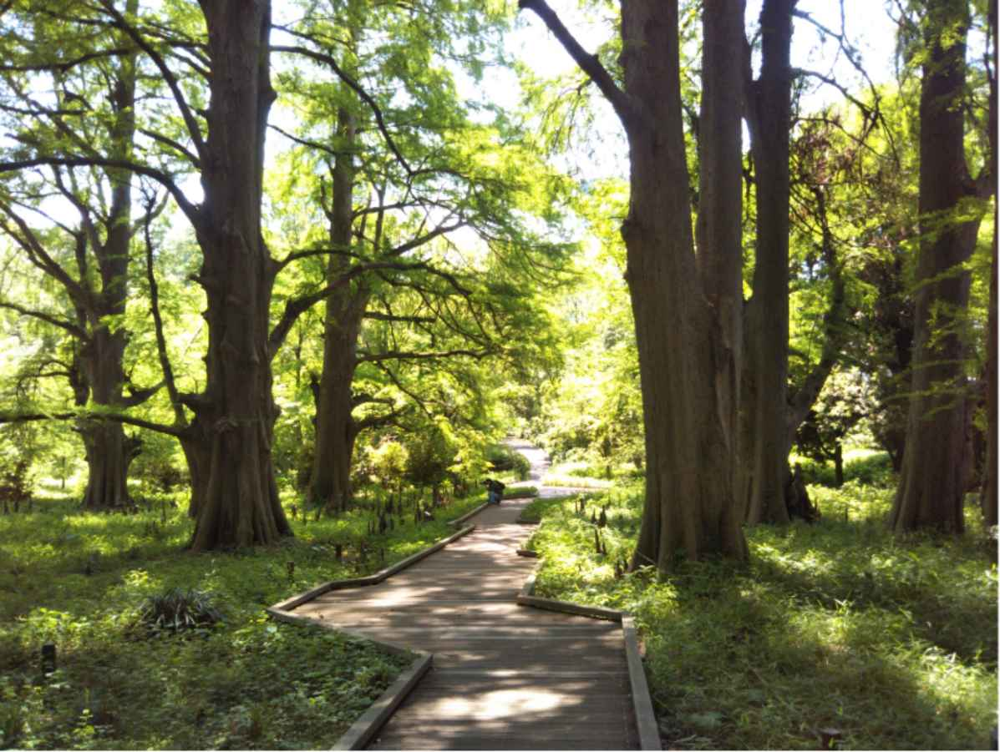
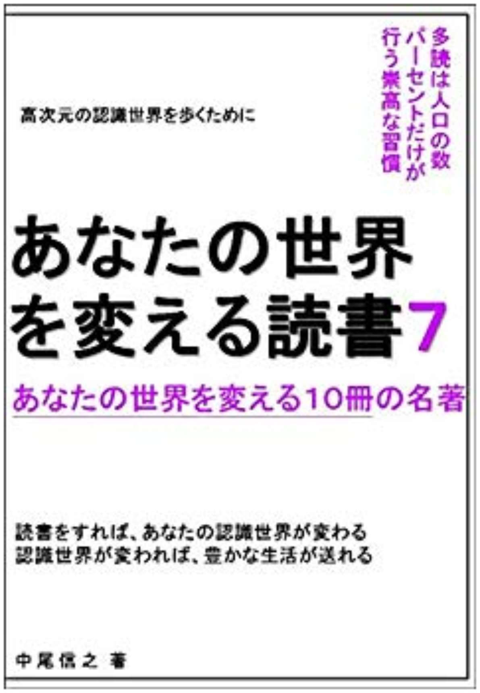
あなたの世界を変える読書７
あなたの世界を変える１０冊の名著
□はじめに
・ハイパー・シナジー・スパイラルを発動しよう
□第一章 生き方のヒントをくれる本
１．あのお店はなぜ消耗戦を抜け出せたのか
ネット時代の老舗に学ぶ「戦わないマーケティング」 仲山進也
２．お金２．０ 新しい経済のルールと生き方 佐藤航陽
３．ＮＯ．２理論 最も大切な成功法則 西田文朗
４．勝ち組企業の「ビジネスモデル」大全
大前研一 ビジネス・ブレークスルー大学総合研究所
□第二章 世界のとらえ方を変える本
５．潜在能力を最高レベルに引き出す
「変性意識入門・催眠編」 苫米地英人
６．現代思想のパフォーマンス 難波江和英、 内田樹
７．大国の掟 佐藤優
８．愛のキャラバン 宮台真司 他
□第三章 科学によって見方を変える本
９．名医は虫歯を削らない
虫歯も歯周病も「自然治癒力」で治す方法 小峰一雄
１０．生き物上陸大作戦 中村桂子 板橋涼子
□おわりに
・超新常識の世界を創造しよう
あなたの世界を変える読書７
あなたの世界を変える１０冊の名著
□はじめに
・ハイパー・シナジー・スパイラルを発動しよう
本シリーズは、キンドル読み放題書籍の中から、私が面白いと思った本を紹介させて頂いているシリーズである。今回で７冊目となるシリーズである。
私は、昔から本を読む際に、ひとつの本を読み切ってから次の本に取りかかるという読み方をしておらず、同時にいくつかの本を並行的に読んでいくようにしている。ある本を２０ページ読んで、次の本を２０ページ読んで、また次の本を４０ページ読むなど、その時々の気分にあわせて、読みたい本を、集中力の続く範囲で、切り替えながら読み進めている。最近は、フィクションの本を長らく読んでいないが、フィクションの本を読んでいるころも、そのような読み方をしていた。
最近の読書において考えてみると、あっという間に読んでしまった本もあれば、少し難しいと感じながらも読み進めたものもある。また、少し読んで、この本は読む必要がないと判断したものも多い。そのような読み方をしていると、やはり、読書は、一冊ごとの単独での魅力にとどまらず、ここまで紹介してきた６０冊の書籍で得た考え方や知識があってこそ、理解ができる内容や、理解が深まる内容があることを知り、頭の中で、知識のネットワークがつながっていることに気づかされることがある。
この効用を何度か強調してきたが、このことは、まるでシナジー効果が私たちの頭の中で、積み重なっているようなものであるから、ハイパー・シナジー・スパイラルとでも呼ぶことができるのではないかと考えるようになった。
一冊の本のある部分を読んだだけでは、本の全体像が分かっていないために、読んでいる部分について、的確に理解することが難しい場合がある。なぜなら、全体像が見えてこそ、その部分の位置づけが初めて分かることがあるからである。
例えていうなれば、長いトレッキングコースを歩いていて、くねくねと道が曲がっているところを進んでいるとする。そして、やっと高台に上って、自分がどのような道を通ってきたが分かる。そこで初めて、「あのポイントは、ああいうところにあったのか」、というふうに、トレッキングコース全体の中で、どういう位置にあり、どういう意味があったのかということが分かるのである。読書においても同じように、一冊読み終わって、やっと分かることがあるのである。だからこそ、同じ本を複数回、読むことが、ゲシュタルト構築には必要だとも言われるのである。
ところが、すでに多くの本を読んだ知識が蓄積されていたり、並行的に多くの本を読んでいる場合、あたかも、すでに、現在手にしている本を読んだことがあるように、類似の本で得た知識が、目の前の本の理解を手助けしてくれることがある。「ああ、あの本でも、確かこんなことが書かれていたな」、であるとか、「あの本で言っていたことを、別の言葉で表現すると、こうなるのかな」という風に、シナジー効果が出てくるのである。これが、どんどんつながれば、スパイラルとなって、いろいろなことの理解につながっていくのではないだろうか。これが今までも強調してきた多読による知のネットワーク化であり、プラスのシナジーである。
私たちは、このような知のシナジーを感じながら、読書を楽しむことができる人種なのである。ぜひ、ともに、読書の旅を楽しんでみようではありませんか。
今回も、本書を手にして頂き、本当にありがとうございます。
□第一章 生き方のヒントをくれる本
１． あのお店はなぜ消耗戦を抜け出せたのか
ネット時代の老舗に学ぶ「戦わないマーケティング」 仲山進也
この本は、楽天に出店しているお店の方々の販売をお手伝いする仕事をしておられる仲山さんが書かれた本である。表紙に、可愛らしい絵がかかれており、個人出店者の方向けの本なのかと思って手にとったが、ここに書かれている内容は、中規模の企業や、大企業の部門の方々にも参考になる考え方であると感じた。一般のＥコマースに関する本に書かれていることと、反対の取り組みを推奨している点、その理由を細かく書かれている点が、非常に参考になる一冊である。
私自身も、ミスミ、アマゾンに所属したこともあり、また、自分自身もネット販売で商品を購入することが多かった時期もあり、本書で指摘していることがグサッとくる部分があった。たとえば、多くの商品をそろえ、ネット検索にかかりやすいような手段を取り、価格を安くして、納期を短くして、やれることを全てやって競合との戦いを日々繰り返していく。
これによって満足するお客様も生まれる。しかし、この道は、「究極の自動販売機」の道であると筆者は指摘する。これに対するのが、ネットで販売していても、お客様ひとりひとりと向き合いエンターテイメント性を持って幸せを増やしていく、「究極の対面販売」の道があるという。このどちらの道も、社会には必要とされているサービスであると私は思う。
しかし、販売をする側にとっても、どこで買っても同じものを、販売するのと、お客様の幸せにつながる物語を加味して販売するのとでは、満足度が大きく異なってくるという指摘がなされている。これは、本当に現在を生きる意味で意義深い指摘である。
規模の追求をして数字的に組織の売り上げが大きくなっても、もろ手をあげて成長とよべずに、単なる膨張にすぎないこともあるという。「究極の自動販売機」を突き進む企業同士の戦いは激しく、社員も疲弊する。この道は、明らかに体力のある大企業のみが歩める道なのである。これと同じ土俵で小さな組織が戦うことは無意味であるから、規模の大きくない企業は、この土俵で戦わないという意思決定をすることが現実的なのであろう。
仮にどこでも買える同じ商品を販売する場合でも、例えば、楽天で、常に価格が一番安い企業は常時入れ替わるから、常時２位を保つことを大切にしている店舗もあるという。一番安い価格は、赤字で出店時だけ意図的に安売りしているだけであり継続ができない価格ということである。安ければ安いだけいいというのではなく、物にもよるが、その価格に継続性があるということが、お客様と店舗との信頼関係につながるのである。
本書で紹介されている「レモン部」というレモンの苗木を育てるコミュニティを作っている植物を販売する企業の例も非常に面白い。また、お酒を販売する企業の例でも、もはや物を販売しているのではなく、物語を含めてサービス提供をしているということなのである。
以前から、私も自身の書籍の中で、組織中で、人を「さん」付けで呼んだり、対外的入力「お客様」という呼び方や、「仕入先様」という呼び方に配慮することの重要性を指摘してきたが、仲山さんも、その点を指摘している。「究極の自動販売機」を目指している企業にとっては、ひとりひとりのお客様の顔を見ずに、ターゲットと呼んだりする。
しかし、「究極の対面販売」を目指す企業にとっては、「お客様」という呼び方や、個別の○○様という呼び方になり、人と人の顔が見えた関係が成り立つのである。だからこそ、「究極の自動販売機」を目指している企業でさえも、「究極の対面販売」的な側面を考えていくことに意味があるのだろうと思われるのである。
本書の中で、大企業の一営業所が、ネット販売にトライする話が紹介されているが、これもまた非常に参考になる事例であった。通常の大企業は、既存の商流のシガラミから新しい挑戦をすることができないことが多い。しかし、一部署が、全体的な承認がなくても、一部の役員の承認で事を進めて、既成事実化し、そのうえで実績を作り、新しい商品開発の道を作るというのは、大企業内のベンチャー的な取り組みとして、参考になる事例であった。
本書は、決して小さな企業に対してのみ有効なことを語っているのではなく、規模がある組織にもヒントを与えてくれるものである。
また、働き方、生き方に対するヒントも含んでいる書籍であり、非常にお勧めの一冊である。
２．お金２．０ 新しい経済のルールと生き方 佐藤航陽
題名が、あまりに世間受けが良さそうな題名で、中身はどうかなと、思って手にしたが、非常に深く、抽象度の高い思考をしていながら、それを誰にでも分かるように記載している素晴らしい本であった。
単純にお金がどういうものであるかということを、現在の視点で見ているだけではなく、お金の歴史も踏まえたうえで、それが社会全体にとって、人間全体にとってどういう役割を果たしてきたか、どういう点が機能不全に陥っているかということを分析している。そのうえで、これからのお金の役割を考察している点が、非常に評価のできる一冊である。
価値判断としては、実体経済が規模として１とすると、実体経済を離れたお金がお金を生む経済が９としたうえで、実体経済を離れた部分が大きくなりすぎた問題も指摘されている。また、筆者は、私と同じファミコン世代であると思うが、デジタルネイティブや、それ以降の世代は、生まれたころからある所与の世界が我々世代とは違うことから、それらの世代が切り開く未来を、彼は非常に明るくとらえている。
だから、テクノロジーの変化によって、人間が生きるための労働から解放され、お金を必死に稼ぐことからも解放されると予測し、その先の人間のありようを豊かに想像しようとしている。
実際、我々世代は、生まれたころから、ある程度の物質的な豊かさに恵まれ、物質的な欲求や、金銭的な欲求がドライブになりにくい世代であり、それ以外の承認欲求などが強い世代であるように思われる。この本でも出てくるのは、そういう欲求の変化とテクノロジーの変化によって、相対的にお金（国家が発行する紙幣）の価値が下がっていくということが指摘されている。昭和初期世代に比べて、我々世代は、お金にそこまで執着しない世代であり、実際にお金の価値は、すでに下がっているのではないかという側面もある。そして、さらにお金の価値を下げていくトリガーとしては、ベーシックインカムの制度が取り上げられている。今はベーシックインカム制度がなく、生存権が確立されておらず、生活の基盤が揺らいでいるため、お金に執着せざるを得ない、お金にとらわれている状態に我々以降の世代も陥っているように思える。
テクノロジーは本質的には人間を自由にしていく側面があるが、しかし、社会全体として、その恩恵を行きわたらせるには、そのための制度がいるように私は思う。ベーシックインカムについては、本書では言葉が何度か出てくるだけであるが、テクノロジーの進化の恩恵を一部の人間の特権にとどめるか、仕組みとして多くの人を労働から解放し、ベーシックインカムを大々的に導入することで、生活の安定まで含めた制度として組み込むかは、可能かどうかという問題とは別に、政策的に導入しようという社会的合意が成り立つことと、現在の為政者層が、そういう方向になることで、自分たちの利権が減るかもしれないことを許容するかという問題がある。よって、この本が、楽観的にとらえている未来の前提には、いくつかの大きな政策的な変更を、市民が主権者として促すというハードルがあるのではないだろうか。
なぜかというと、苫米地さんが指摘するように、何十年か前から人類の食料生産力は全体が飢えない水準を超えているのにも関わらず、飢餓状態や、制度的貧困にある人口が増加しているからである。テクノロジーの進化イコール人類、個々の平等的な富の配分ということは別問題であることが分かる。
佐藤さんの本では、読み放題対象ではないが、苫米地さんの「２０５０年 衝撃の未来予想」で書かれた予想と近しい予想もされている。 国家の発行しているお金の価値が下がるということは、国家そのもの価値も変容するということである。 変わって考えられるのは、企業が国家的な役割を果たすこと。エストニアのように非常に国境にとらわれない先端の国家概念を構築していくこと。そして、個人や共同体が国家的な役割を果たしていくことである。
佐藤さんの指摘で面白いのが、現在の経済体制そのものが、あるタイミングで、一気に別のものになる必要はないということである。そうではなくて、新しい経済の在り方を、個々人や組織が自由に発想し、実施していくことができてくれば、仕組みのとしての経済がいくつも存在しえるということである。そうなってくれば、我々個人が、その中の、どれを利用していこうかということを選択できる機会が増えるという指摘である。
現在の資本主義の制度的欠陥があるのは、多くの人が認めていることであり、アンチテーゼとしての共産主義が存在しなくなった今、資本主義自体が正しくあろうとする力学も薄れ、さらにお金を自己目的化した増殖のみに走り、制度的には破綻しているという指摘も多い。
これに依存した国家体制もまた、同じように欠陥を内包している。このような中で、誰かをスケープゴートにして気休めをするのではなく、この欠陥に向き合って、いろいろな経済の仕組みを個々人が想像し、実験することで前向きに、社会の仕組みを変えていこうとする、そのような意思を共有することができる本である。題名に「お金」という言葉があるからといって、現在のお金のありようを肯定しているものではない。２．０とは、既存の価値の否定をし、新たな価値主義の社会を作ろうという、そういう意味があるのである。
３．ＮＯ．２理論 最も大切な成功法則 西田文朗
冒頭の３割程度を読むだけで充分な作品であるかもしれないが、テーマとしては、面白いテーマを扱った本である。よくよく考えると、組織はチームで行われるのであるから、ナンバー２の重要性は当たり前なはずであるが、私たちは、ふだん、その重要性を忘れがちであるように思う。
ベンチャーキャピタルが素晴らしいビジネスアイデアを持った人間に対して、資金面だけではなく、人材面でも協力する場合があるのは、そのためである。
企業を成長させるためには、アイデアをビジネスとして実現する設計を行い、組織を効率的に動かして、内外の体制を整えていく必要があり、それには経験値の高い経営のプロが必要となるのである。素晴らしいアイデアと、隙のないオペレーションが、両輪となることが、重要な成長のファクターということである。
ということは、トップひとりだけの力で、組織を成長させていくことが難しいことを良く理解して、イエスマンではない優秀なナンバー２を雇い入れ、権限を与えるという判断を行い、また、優秀なマネジメントチームを作っていくことに思いがいたることが、トップの重要な才能や、見識といえるのではないだろうか。
そして、優秀なナンバー２を仲間にできれば、トップと自分（ナンバー２）だけでは、組織が成長できないことを知っているから、さらにマネジメントチームの人員強化に心をくだいていくのではないだろうか。
そういう意味で、この本が言おうとしていることは、至極当たり前のことである。しかし、日々の実務に埋没していると、我々は、そのことは忘れがちである。組織の箱の在り方を論じることと同時に、人的体制の在り方として、個別部門ごとに見るのではなく、広く全体を見通せる視野を持った人間が、組織全体の整合性を見ていく必要があるということである。
そして、ここで言うナンバー２が、必ずしも、副社長や、常務などといったポジションにあることが必須ではなく、そのような影響力を行使できる力を持っていることが大切であると、本書は指摘している。
４．勝ち組企業の「ビジネスモデル」大全
大前研一 ビジネス・ブレークスルー大学総合研究所
この「あなたの世界を変える読書」シリーズの第一弾の冒頭で、私と読書との関係を紹介させて頂いているが、その中で、私が大学を卒業してから、最初に公務員になる前に大前さんの「平成維新」に出会い、その本との出会いがあって、働きながらインターネット留学をした後に、ワーキングホリデーを経て、ビジネススクールに編入し、それも残り一学期を残して退学して、東京に来た経緯を記載した。
今は、あまり大前さんの本を読むことはないが、二十代の前半で、毎日、ビジネス・ブレークスルーの放送を浴びるように見ていたため、そのころ吸収したことが、今も私の思考原理になっているように思われる。もちろん、公務員をやめて、オーストラリアから帰って、民間企業に入ったばかりの私は、吸収したことを、実践の域に高めることができずに、空回りをしていたろうし、今でもできていないことが多々ある。いろいろなことで悩んでしまったりしている。それでも、その時に得た知識が、時々、思い出され、助けになっているのも事実である。
ビジネス・ブレークスルーのコンテンツで得られる知識というのは、大前さんという個人の知識だけではなく、多くのコンサルタントの方々や、経営者の方々のたくさんの言葉に触れることができるので、これもまた、ビジネスに関する知識の集合体ということができるものである。この情報に四六時中浸かっていると、まるで、そこで語られる出来事を、一緒に体験したかのように、話に引き込まれたりすることもあった。その時の私は、きっと変性意識状態になり、語られる情報世界に臨場感を感じていたのだろうと思う。そして、今も私の記憶に情報としてインプットされているのである。このコンテンツは大前さんが死んでも、社会の財産として、ビジネ・スブレークスルー社で放送し続けて頂きたいものである。
今回紹介する本は、いくつかの実際の事例をまとめた本であるが、もっとも参考になったのは、冒頭の部分である。これも当たり前のことであるが、「いったい自分たちの組織が何をする組織なのか」、「何のために存在しているか」というコア部分を、もう一度しっかりと見つめなおすべきだという指摘がある。そして、それを実現するための手法を考える際は、過去のしがらみにとらわれずに、あらゆる手をゼロベースで検討するようにという強いアドバイスがある。この自分たちが何をなすべきかという根本問題、これは、今回、１冊目に紹介した本での指摘と同じである。究極の自動販売機を目指すべきか、究極の対面販売を目指すべきか、そこで提供する価値は何か。何をすると、自分たちも楽しめ、お客様にも喜んで頂けるか。競合と同じことをしていても、仕方がないのである。
過去の成功体験がしがらみになって、環境が変わった世界で、新しいルールを作れない状態に陥るのではなく、自分たちが、そのようなルールを作っていくべきだというのである。そう考えると、現状の組織が小さいことは失うべきことが小さいことであり、縛るものが少ないということである。また、成長の余白があるということである。
逆に、組織が大きいということは、しがらみが多いということである。そうすると、この弊害を乗り越えるためには、大きな組織の中で、好き勝手に動ける小さな部隊を作るか、外部の機動的な才能とコラボレーションするか、社外に自由に動ける子会社を作るかという実験の種を、どんどん撒いていくべきなのだと思われる。例にあげられている、サイバーエージェントの新人が子会社の社長になるということは、実際、５０歳以上で、頭の固い人間が社長になるよりも、現時点においても、将来の発展を考えても、非常に現実的な手段なのではないかと思う。今の私たちには、もう一度、自分を、そして自分たちの組織を見つめなおすことが大切なのである。
□第二章 世界のとらえ方を変える本
５．潜在能力を最高レベルに引き出す
「変性意識入門・催眠編」 苫米地英人
この本は、タイトルからも分かる通り、かなり変わった内容の本である。しかし、今まで、苫米地さんの本は、超瞑想法や、洗脳術に関する本を紹介してきたので、すでに私たちの中には、この本の内容を受け入れやすい素地ができていると思われる。
火事場のバカ力は、緊急時に脳のリミッターがはずれて発揮される力であるが、そのような場面ではなくても、訓練しだいで変性意識状態になることで潜在能力を発揮できるというのが、本書の内容である。しかし、なぜリミッターがあるかというと、体が壊れないためであったり、脳に入ってくる情報量が多すぎても脳が処理しきれないためであり、むやみやたらにリミッターがはずれているのが良いとも言い切れないからである。
ただ、集中力を高めるということだけでも、自己催眠を行うことで変性意識を作っている状態であるという。また、単に過去の出来事を思い出すこと、考え事をすること、映像を見て、現実よりも映像に臨場感を感じたり、音楽や小説の世界に臨場感を感じること、ただそれだけで人間は変性意識状態になっているのだという。また、最強の変性意識状態は睡眠であるという。要は、起きている状態で、この変性意識状態を意識的に作れるようにしておくことで、自分の力を最大限に発揮して、よりより人生を生きようということである。そのためには、変性意識状態を作るのが、難しくないという認識にたって練習をする必要があるということである。
面白いのは、催眠術と気功は、気を利用して、変性意識に働きかけ、認識している情報のコントロールをしているという点では、同じものであると指摘されていることである。また、催眠術について、催眠術師が催眠術をかけているのではなく、受ける側が自分で自己催眠をしているのだというのも興味深い。
催眠術師は、受ける側が、自己催眠をしやすいように、リラックスをさせ、変性意識状態に誘導していくのだという。そして、受ける側が、変性意識に誘導がされやすいように、催眠術師側も変性意識状態になっているのだという。少し言い換えると、催眠術師側が、変性意識状態になり、鏡に映すように、受ける側も変性意識状態になり、そうして、受ける側が自己催眠しやすい状態にしていっているということなのだと思われる。これは、人間が、そのような仕組みでできているからであって、小さい頃の子供が親の言葉を素直に受け止める状態に似ているという。
苫米地さんの他の本でも指摘がされていたが、東大生や官僚などは、受験勉強の際に、自己催眠をして集中して勉強をしていた経験があるから、催眠術にかかりやすいという。つまりは、物理的な目の前のこと以外に、臨場感を感じやすいということである。だからこそ、オーム真理教の高学歴者が吸い寄せられたともいえるのである。
また、催眠術師にも、いろいろな型があるとのことで、本書で登場されている催眠術師の方々のタイプとしては、言語型、芸術などのイメージを操るタイプ、武術（身体的）に近いタイプと、その人ごとの型があって、それぞれに催眠術をかけやすいタイプも異なるのだという。
この本の中でも紹介されている分かりやすい例が、お医者様が、患者さんがショックを受けるような言い方で、体が悪いということを言葉で植え付けるようなことがないように、言葉の選び方に配慮しなければいけないということである。
また、もう一つの例としては、雨が降った日に、「雨だから嫌」だと、朝思うか、「恵みの雨」と思うか、それだけで自分の一日の行動が変わってくるという例も示されている。私たちも、ひどい台風の日は別として、通常の雨は程度であれば、「恵みの雨」として、前向きにとらえて、その日、一日を自分のものとして過ごしたいものである。小さな子供は雨が降ると、自分の好きな傘を持って、楽しそうに外に出ていくものである。雨が嫌なものと、定義をしていないからであろう。
これらの例からも分かるように、このことを拡張して考えれば、本の締めくくりとして書かれている、以下の言葉になるといえそうである。
「自分の能力の限界は自分のイマジネーションの限界です」
この言葉が示すように、私たちは、いつでも、自分で自分の限界を、設定してしまっているのではないだろうか。そのことに気づけば、私たちが、その壁を自分で取り払うことが可能となり、より良い人生を送ることにつなげられそうである。ぜひ、前向きに生きていたいものである。
６．現代思想のパフォーマンス 難波江和英、 内田樹
この本は少し理屈ぽい内容を書かれている面もあるが、一般の哲学に関する本よりも読みやすく、また考えるヒントになる基礎知識も多いので紹介をさせて頂きたい。過去、２００冊ほど苫米地さんの本を読んできた私にとっても、ここで紹介されている基本的な内容は、改めて理解しておく方が、その他の知識の理解を深めるのではないかとも感じた。
私たちは、自分たち生きている世界の見方や、考え方について、それがすべて、あたりまえの普通のこととして受け入れて生活をしている。もちろん、そうしないと、ひとつひとつのことを真剣に考え直していては、精神を病んでしまった哲学者たちのように、思考の迷路にとらわれて、器用に日常生活をしにくいという側面もある。しかし、当たり前と思っていることを、ひとつひとつ意識にあげて考えることで、自分たちの考え方を変容させていくことができるのも、また事実である。このシリーズは、そういうことを意図して、第七弾まで進めてきたのであるから、本書は、その流れにあっている作品といえる。
たとえば、役者さんは、自分がどのように歩いているか、どのように話しているかということを意識して、役割を演じる時は、普段の自分と違う歩き方や、話し方をしようと試みる。しかし、役者ではない普通の人は、普段、どのように自分が歩いているか、背中が曲がって歩いているか、どのように息をしているかということを意識にあげず、無意識にゆだねている。しかし、一部の人は、歩いているときに、背筋を伸ばして歩こうと意識して、姿勢を正したり、場面、場面で、話し方を意図的にコントロールしたり、はたまた、自分の呼吸のペースを意図的に調整している。
これと同じように、本書で語られている言葉というものの成り立ちや、いろいろな思想家の考え方を知り、ちょっと意識してみるとういのは、自分の言葉に対するとらえ方を変え、自分の話し方を変えたり、単語の選び方を変えたりというふうに実践的なことにつなげられる面がある。
また、フーコーが権力について語っていることを解説してくれているように、私たちが、権力というものをどのようにとらえて、その力の影響をうけ、もしくは影響を受けているように感じて過ごしているかという考えを知れば、過剰に、その力に縛られずに生活をすることができるのではないかと思われる。
例えば、東京には非効率な踏切があり交通を分断しているが、踏切の前で、車は一旦停止をしないといけないことになっている。しかし、踏切が下りておらず、見通しがいい場所で、一旦停止を常にしなくてはいけないのは、おかしくはないだろうか。逆に危険なようにも思われる。常に一旦停止をしないといけないのであれば、踏切は何のためにあるのだろうか。そして、さらに、踏切の横で警察官がわざわざ待機しているのは何のためであろうか。安全を確保するために踏み切りという装置がおかれているのに、常に一旦停止をしないといけないという決まりをしき、そのうえで警察官がこっそり、もしくは意図的に待機している。それを、当たり前の風景として日々見ているが、これは滑稽な風景でしかない。
フーコーがベンサムの考えた一望監視施設の構造から、権力というものの人への影響を示したように、キージーは精神病院という管理システムを例にとり、現在社会が、それらの構造のように監視体制という権力構造を生み出していることを暗示しているという。
その精神病院のような監視体制の中においては、 監視されている患者だけが機械的な存在になるのではなく、監視している側もまた機械のように規定された行動をするようになっていくという。 この文脈を読んで、ぞっとしながらアニメの「攻殻機動隊 S.A.C. SOLID STATE SOCIET Y 」を思い出した。
この物語では、ある国会議員がみなし子を国家施設で引き取り、子供たちにエリート教育を施しているつもりであった。しかし、実は、ある官僚がみなし子ではなく、虐待されている子供たちを親から誘拐して、親には子供がいなかった記憶を受け付け、子供からは家族の記憶を奪い、家族のいない老人たちに子供を預ける仕組みを組み立てていたのである。
少子化が進行しているにも関わらず、家庭で子供たちが大切にされていないという逆説的な状況があり、また、世代をつむいできた老人が家族と離れてくらしている状態があり、そして、物語の中の監視社会では、乱暴な親が子供を育てるより、システムとして、子供たちを守り、育てる方が、安全で、子供のためにもなるという判断をしたという設定になっているのである。このことは物語の中の話であるが、前提条件としては、現実の世界に非常に近い状態のように思われる。だからこそ、ぞっとするのである。
監視社会化が進めば、権力全体を見通して歪んでいるところがないか、バランスを欠いているかを市民がチェックできなくなる。そして、より一層の監視社会化が、知らず知らずのうちに進んでいくことにつながるのかもしれない。そのような時、誰かが意図的に、前述の物語のようなシステムを組み込むことも考えられる。皮肉なのは、それが悪いか良いか、子供たちの視点から考えた時には、判断が難しいことである。子供は、ひとりの権利主体であり、親の付属物ではない。親は子供の権利を、子供が未成年者の間は、代理をするものではあるが、子供の権利を奪うことはできないのである。
監視社会化が進む中で、私たちは、当たり前とされていることが没個性、従順で機械的人間の製造、工場のように折り目正しい社会規範の蔓延など、おかしなことにつながっていく風潮にないか、常に市民が主権者としてチェックをしていく必要がある。
これは、止観（止まって観る）という行為を社会に対して行っていくことであり、同時に、自分たちが常識を疑うことを、時々は行っていくということであるように思われる。
７．大国の掟 佐藤優
前回の第六弾で、初めて佐藤優さんの書籍を紹介させて頂いた。今回も、引き続いて佐藤さんの書籍を紹介したい。私たちは、小学校から大学に至るまで、長年歴史をそれなりに習い、毎日のようにニュースなどでも世界の情報にふれている。しかし、表層の情報には触れることができもて、より深いレベルで、より巨視的な視点で、過去からの大きな流れや、人類の思想の潮流といったレベルでの理解となると、ほとんど理解できていないのが現状である。そこで、歴史的、地政学的な理解を深める意味で、本書を読むことは意味があるものと思われる。
シーパワーであるイギリスもアメリカも、かつて孤立主義をとっていた時代があり、またこの両国は現在、孤立主義的な行動をとりつつあるという。中国は、海洋進出という意味では、シーパワーであり、アジアで存在を誇示しようとしているが、しかし、いくつかの理由から、シーパワーとしては力を発揮できないと佐藤さんは指摘する。実際に海軍としては、長らく戦争をしておらず実戦経験がなく、装備計画の戦略も未熟で海軍力が非常に低いためであるという。また、ウイグル地方が不安定化していく中で、陸での問題をかかえ海に集中できないことも推測として指摘されている。それでも、いくつかのシナリオがある中で、共産党体制というものが温存される可能性が高いことを、他の方の書籍を例にとりながら指摘している。
またＥＵというものに、私たちは、なんとなく明るいイメージを持っているが、これは第二次大戦中にドイツが第三帝国という形で力を強めたように、あたかも第四帝国というような意味合いで、ドイツ中心の勢力という見方ができると同時に、ほっておくと戦争の火種になりやすいドイツを封じ込めるという意味合いの二つの側面があるという。ギリシアやスペインの危機に対して、ドイツは頑張って支援をしているのだろうという見方を、日本の報道ではしてしまいがちであるが、実際は、ドイツが内需ではなく、ＥＵ内部の輸出によって成り立っているがために、仕方のないことであるという。
日本は、経済の中で輸出が１０％だけであるが、ドイツは４０％を占める。自分たちが作ったものをＥＵの他の国が購入してくれないと、今のドイツの発展は成り立たないというのである。逆に、日本は円安にして輸出が得をするという見方が、誤っているのがこれでも分かる。円高にして、安いもの仕入れる方が、ずっと良いのに、未だに何十年も前の見方で、一部の輸出産業の視点での報道が続けられているのである。また、ギリシアについては、戦後、ロシアと、欧州の協定で作られた国であり、欧州としては、あえてギリシアを発展させず、観光の農業だけの国にして、共産革命が及ばないようにしてきた歴史があるという。だからこそ、欧州はギリシアに対する負担を、自分たちの共同責任として、負わないといけないらしい。
ロシアは自分たちの安全を担保するために、ロシア周辺には緩衝地帯を設けたいのだという。緩衝地帯とは、完全にロシアとして取り込んではいないが、必要に応じて自軍を動かすことができるエリアを言う。緩衝地帯があるからこそ、冷戦中も一度も、ロシア機が、ＮＡＴＯに撃墜されるということが発生しなかったらしい。
前回、紹介した佐藤さんの書籍で、私たちの世界は第一次世界大戦から繋がっていて、決して第二次大戦後に新しく生まれ変わった世界ではないことを共通認識にした。ギリシアやトルコや、中東各国、ロシア、クリミアなどの状態は、第一次大戦の当時からの流れに直結しており、宗教的な問題もからめると、より古くからの歴史の流れの上に、現在の問題が存在しているのが分かる。
「世界史の極意」と「大国の掟」で世界の紛争について考える見方に深みができたかもしれない。かといって、この内容を知れば知るほど、宗教のどうしようもなさに思い至る。イスラム教のシーア派だとか、スンナ派だとか、アラウィー派だとかの立場の違いや、カトリック、プロテスタント（カルヴァン派）、ロシア正教の立場の違い、結局それらは、他者との違いを生み出すだけで、調和につながっていない。そういう意味で、宗教の存在意義を疑わざるを得ないのである。チベット仏教にしても、宗教をすることは彼らの自由として、政治と宗教は分けるべきではないだろうか。分けないからこそ、信仰の自由が保てず、争いをやめられないのではないだろうか。
そしてまた、宗教や為政者や大金を操る人の都合で、ころころと変わってきた国境という線、国という単位、その意義も、宗教の意義と同じで、根本が問われているのではないかと思われる。
ナショナリズムによって、まとまった国民国家が近代的なのか、何か思想によってまとまった共産主義国家が近代的なのか、これは一概に言えず、また、「大国の掟」に指摘されているように、民主的な選挙をすると、逆に非民主的な選択をする中東の国もあるのである。とはいえ、民主的な選挙で、非民主的な選択や、外国のためにだけ動く最近の自民党を常に選んでいる日本の市民も、他国民のことを言える立場ではなさそうである。
佐藤さんの本は、非常に面白い本ではあり、特に「世界史の極意」は、戦争を回避するために書かれた本であると、冒頭で紹介されており、尊敬に値する面もあるように思えた。しかし、また別の本では、社会への個人の献身を自主的にではなく、強く要請するような思考も見え、佐藤さんは権力側の思考が根強いようにも感じられた。
現在でも続いている戦争を生み出すパワーポリティックスを深く理解することの延長線上に、現状に対する解決策はないのだろうなということも、このシリーズで紹介した２冊で思いしらされたようにも思う。確かに、佐藤さんのような物事の見方で、深い分析はできるかもしれない。しかし、この分析は、なぜ現状が悪いかの悪い部分を明確にしているだけであって、この状態を少しでも改善するベクトルに働くものではないことも、また事実として受け止める必要があるように感じた。仮にコンサルタントの世界であれば、現状分析ができても改善策を練れなければ、その価値は半減するのではないだろうか。
たとえば、３冊目で紹介した佐藤航陽さんの言うように、現在の社会体制において、今とは違う、経済の仕組みをいくつも生み出していくことで、お金や、国家、人間の行動原理の在り方を変容させていくというのが、そのような取り組みであると私は思うのである。
８．愛のキャラバン 宮台真司 他
本書は、書籍というよりイベントの内容を活字にしているものであり、内容としてはナンパを題材にしていることもあり、ちょっと紹介するのが、はばかられる書籍である。また女性のことを攻略する相手として取り扱っていることで、失礼な内容でもあり、女性の方は読まないことをお勧めしたいと思う（紹介していながら、すみません）
しかし、今回四冊目で、変性意識入門を紹介させて頂いたように、私たちの意識や、感覚が曖昧で影響されやすいということを知るためには、この本の内容が、少しは参考になると思われるので、取り上げることにした。
ちなみに私はナンパというものを一度もしたことはない。しかし、本書で、旅先で、一人でいる女性には声をかけるべきだというような記述もあり、それでいうなれば、ワーキングホリデーの間には、いろいろと人に声をかけるということをしていたことを思い出した。
自分も含めていいのかどうか分からないが、多くの内気な人に、「知らない人に声をかけて、何かを教えてもらうことは恥ずかしくないし、いつでもしても良い」ということを、何の脈絡もなく、街中でナンパをしてきた、この本に登場している４人の人たちの行動から、感じてもらえたらと思うのである。
だから、私は、何も皆さんに、「どんどんナンパをしましょう」とか、「ちょっとナンパをしてみましょう」というススメをするのではなく、こんなある意味、インテリや、インテリ気取りの人たちが、多くの人に声をかけて、コミュニケーションを形としては成立させて、男女で通じあっているという事実を知り、いろいろと気にしすぎて行動できていないことは、もったいないと分かってもらえたらと思うのである。
この本を読んでいて、少し問題があるなと思ったのは、カウンセリング的な仕事をしている方が、明らかに変性意識状態を作る術を心得たうえで、それを実践して、ナンパしていることを公にしていることである。普通のナンパ師が、自分でナンパの技術を磨いて、それを自慢することと、カウンセリングをしている人が、その術を使ってナンパをすることでは意味が違う。たとえば、柔道をしている人が、柔道の技を一般の人には使わないのと同じで、仕事としてカウンセラー（ナンパの仕方を教えるカウンセラーだとしても）をしている人が、プロとして変性意識状態を作る術を実践で使い、それを公にするのは、倫理上問題があるように感じた。
そしてまた、本書では、ナンパ師が何か崇高なように書かれているが、単に欲望が大きいだけという面もあるのだから、そのような自白も入れておいた方が、内容としては筋が通る面もあると感じた。
しかし、町で偶然見つけた人に、変性意識状態で、声をかけて、相手も変性意識にしてナンパを成立させて、仲良くなる。この行為と、普通に友達の紹介や、仕事場や、なんらかのきっかけで偶然出会った人に声をかけて、仲良くなることと、そこにどのような違いがあるのかというと、一般の恋愛についても、ナンパについても、要素分解をすると、違うことはないのかもしれないとも感じた。そういう意味で、恋愛に限らず、人との接触について、悩んでいる人は、「なんだ、人と人のコミュニケーションや、つきあいなんて、こんなものなのか」ということを感じてもらうためには、少し目を通しても良い異色の本なのかもしれない。ただ、間違っても、宮台チルドレンといわれるような、本書で司会を担当している立石さんのような、自主的ではない、意味のない模倣をしていく人間になるのは、やめたいものである。
□第三章 科学によって見方を変える本
９．名医は虫歯を削らない
虫歯も歯周病も「自然治癒力」で治す方法 小峰一雄
毎回、医療に関する本を取り上げているが、今回は歯科治療に関する本を紹介したい。私も小さい頃から歯医者さんにお世話になる機会が多く、歯科治療に関する知識を、もっと増やしたいと思っていたところで出会ったのが、この本である。
まず認識すべきことは、口、歯と体全体は繋がっており、体の病気がある人は、なんらかの異常が歯周病などの形で現れるということである。未病という言葉があるが、病気の兆候が口、歯の状態で察知できるということであるから、歯の状態には注意を払いたいものである。体の体液の循環システムによって、口と体全体がつながっているため、このようなことが起こるのである。口から食べるという行為だけではなく、歯から直接、体がつながっているというシステムということである。
そして、治療という観点から考えて、常識と異なる観点は、「歯を削ると歯が弱くなる」という点である。これは、確かに、物理的には、あたりまえの現象である。物質を削ったり、刺したり刺激をあたえると、無数の小さなヒビが入り割れやすくなる状態となる。そうすると、歯が衝撃に対して、壊れやすくなったり、ヒビに食べ残しが入り、虫歯になる可能性も増加する。このように、歯を削るという行為は、歯を弱めるということに直結するというのである。
ところが、歯はもともと再石灰化による自然治癒機能を持っているのであるから、自然治癒ができる状態を形作る治療が有効ということである。これは、筆者が海外の方法論から構築した、ドックベスト法という方法を用いることで、削らずに治療をすることが可能であるとのことである。そして、そこから一歩進めて、そもそも歯科医の使命は、虫歯を予防することであるという視点を忘れてはいけない。
虫歯の人が増えることで、歯医者さんや、医療機器、製薬業界がもうかるという体制をあらため、予防することで患者さん本位の医療をするということパラダイムシフトが必要である。これは、今まで紹介した医療の書籍と同じ問題を、歯科医療の業界も抱えているということの指摘であり、同時に、そのような中でも、この状態を改善しようと頑張っておられるお医者さんがおられるということである。
また、本書で参考になるのは、冒頭で記載したように、歯の病気は体全体の病気との連関があるということであるから、虫歯予防のためのシュガーカットを含めた食事療法による、体全体の正常化をあわせた治療を筆者はされているということである。そもそも、虫歯、歯周病という状態は、食習慣の変化から起こっていることであるので、マイルドドラッグである砂糖の取りすぎを抑える必要があると指摘がなされている。肉の取りすぎや、なんであっても食べすぎは良くないことが最近、指摘されているが、カルシウムの取りすぎも良くないということが紹介されている。
ガンも、歯周病と相関関係にあるという指摘もされている。身近な歯科治療について、一度、しっかりと考えることは寿命が延びている現在、重要なことであるように思われる。本書は、非常に分かりやすく、現在の歯科治療の抱える課題を整理し、かつ、治療、予防の解決策も書かれている点で、お勧めの一冊である。
１０． 生き物上陸大作戦 中村桂子 板橋涼子
生き物が陸に上がったことが、生物の歴史の中で非常に意味があることを、私たちは幼いころから何度となく聞いてきた。特に最近は、私も魚がどうやって陸に上がったか、その大いなる一歩について、いろいろと考えることがあった。しかし、この本を読むまで、意識の中から抜け落ちていたのは、あらゆる生き物の中で、まずは植物が陸上に上がったからこそ、そのあとに、その他の生き物たちが、上陸できたということである。 つまり、植物が、そのあとに続く、陸に上がる者たちのための環境を整えたということである。
二酸化炭素から酸素（酸素は毒にもなるが）を生成し、紫外線を和らげる環境を作り、岩を砕いて土を作り、有機物を陸上に蓄積していったのである。そして、同時に、植物が陸上で活動を始めることで、川から海に植物の落ち葉などが流れ溶け込んで、水の中にも栄養分が増えるというふうにして、水中の環境まで変えていったという。だから、まず、植物たちの上陸と活動について、本書は分かりやすく説明してくれている。
キンドル読み放題対象ではないが、自然農法の福岡正信さんの書籍を、本シリーズで何度か取り上げているが、福島さんの書籍でも、野菜を育てるために土を作ると同時に、野菜を育てることで土を変えていくという論法で土づくりが語られている。今の地球環境は、これに似たように、植物が、まず陸地に上がって、環境を生き物のために整えてくれたことが大きいということを、私たちは本書で知ることができる。
植物の次に陸に上がったのは、昆虫であるという。その次が、魚と両生類の間の姿をした生き物であったという。サンショウウオのようなものや、肺魚のような姿のものであったと推測される。ここで非常に面白いのは、 前進化 ということが起こっていたというのである。陸に上がってから陸上で生活するための機能が備わったのではなく、水中にいる間から、陸上生活ができるような呼吸器の仕組みが備わったり、ヒレが足のようになったりということが、事前に変化していたということである。
この前進化は、植物が陸にあがる際の説明でも記載されている。水から陸に上がったという瞬間をとらえれば、その瞬間は偶然的に見えるかもしれない。しかし、その前に、きちんと、その準備ができているから、陸にあがっても、生活をすることができたということである。もちろん、陸と水中の間の環境、汽水域や浅瀬という環境が、そのような準備に、なんらかの影響を与えたのであろうと思われる。
□おわりに
・超常識の世界を創造しよう
今回も、さまざまな分野の本に触れて、私たちの身の回りの既存の常識の多くが、根拠のない誤ったものである可能性があることを紹介した。また、常識と少し違う見方をすることで、世界の認識の仕方を変えられることや、定石と異なる手を打つことができるというヒントを紹介した。
どのような方向に進むにせよ、お金や経済に関する常識も、これから変化を続けていくに違いない。そして、普通の一般市民は、テクノロジーの進化で、いろいろなパラダイムシフトが起きていることを気づかずに日々を生活し、自分が生まれてから、大人になるまでの２０年ほどの間に見てきたものを、自分に内面化して、それらを常識とする思考の型を、１００歳になるまで引きずっていくのかもしれない。今までは常識から解放されるのが、そこまで長くなかったのが、幸か不幸か、寿命が延びて、自由意思を持たない場合、古い常識に縛られる期間が長くなるのであろう。
しかし、読書の旅をともにする私たちは、多読によって、素晴らしい考えにふれることで、常に目の前の常識を見直すことの重要性を知っている。このような考え方は、なにも最近始まったものではなく、今回、５冊目で紹介した本でも分かるように、常識を見直す目は、何世紀も前から人間のうちに存在しているのである。そうでなければ、人間の社会は、何の進歩もなく、今以上に戦争を続けていたかもしれない。一方で、私たち人間の社会は、現状の経済体制の中で、戦争の規模を制御しながら、戦争を、ある程度、必要悪として、許容し続けているのも事実である。
そのような常識は望ましいものであろうか。私たちは、望ましくない常識を、自分たちの知によって乗り越え、新しい世代の常識を作っていく権利と能力を持っているのではないだろうか。
古い常識を超えて、新しい常識を作っていくこと、それが、私たち人間の新しい目に見えない進化になるのではないだろうか。その素地を整えてくれるのがテクノロジーの進化なのかもしれない。人間の文化や制度は、テクノロジーの進化から遅れるという「文化遅滞説」というものがある。
しかし、植物が、陸上の環境を変え、ほかの生物が陸上に上がれたように、テクノロジーの進化による環境変化は、タイムラグがあっても、私たちに、必ず影響を及ぼすのである。
その影響を、自分たちの意思の力で、私たち人間の良い意味での変化につなげていこうとすることが、人間の自主的な進化を促すものと言えるのではないだろうか。
今回も、本書を手にして頂き誠にありがとうございました。
また、次回お会いできますように。 中尾信之
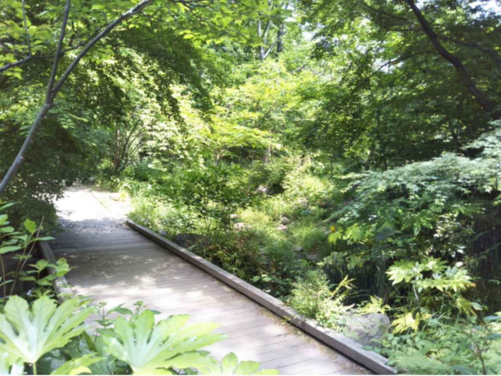
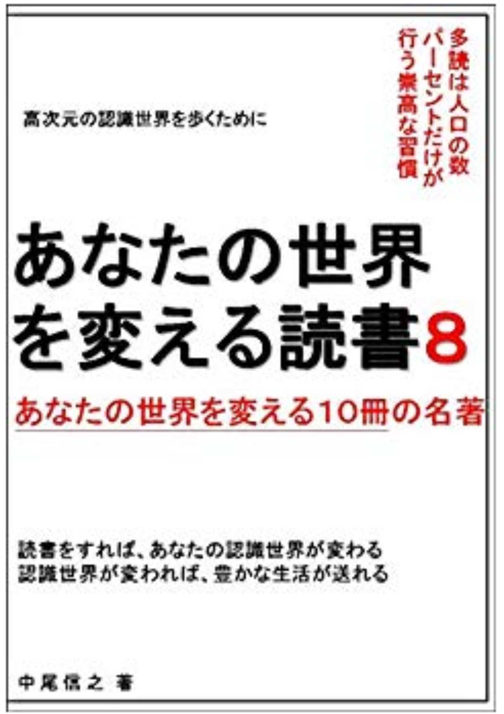
あなたの世界を変える読書８
あなたの世界を変える１０冊の名著
□はじめに
・最高の可能世界を創造せよ
□第一章 生き方のヒントをくれる本
１．１００のスキルよりたった１つの考え方で仕事が変わる
早くて質の高い仕事をする方法 高橋政史
２．「頭のゴミ」を捨てれば、脳は一瞬で目覚める！ 苫米地英人
３．あ、「やりがい」とかいらないんで、とりあえず残業代ください。
日野 瑛太郎
□第二章 世界のとらえ方を変える本
４．洗脳学園 苫米地英人
５．特定秘密保護法案と日本版ＮＳＣ 佐藤優 福島みずほ
６．そうだったのか！ ロスチャイルドと欧州財閥 安平雲軒
７．世界史とつなげて学べ 超日本史
日本人を覚醒させる教科書が教えない歴史 茂木誠
□第三章 科学によって見方を変える本
８．コレステロールは高いほうが心臓病、脳卒中、がんになりにくい
奥山治美
９．年をとってもちぢまないまがらない 船瀬俊介
１０．水の危機をどう救うのか 丹保憲仁
□おわりに
・いくつもの可能世界を創造しよう
□はじめに
・最高の可能世界を創造せよ
本シリーズも、今回で８回目を数える。本シリーズは、キンドル読み放題書籍の中から、私が面白いと思った本を紹介させて頂いているシリーズである。ここまでのシリーズ７回で、７０冊の本を紹介してきたことになる。その間に、私は８社目の仕事に関わったが、先方の都合により、今月にはプロジェクトが終了することになったため、また読書三昧、執筆三昧の日々に戻れそうである。まったく世の中は、どうなるか予測がつかないものである。ビジネスとは関係なしに、少し後味が悪いこともあったが、ビジネスにおいては全力を尽くし、先々のためになる提案も行い、やり切った達成感がある。
数か月前と同じく、育児、家事にも時間をかけながら、多読と、執筆、思考実験にこれからも専念ができると気分が切り替わり、すぐに数か月前と同じ最高の生活に復帰することができている。
少し余談ではあるが、最初に書いた本は、「自分を生きる天職（転職）のすすめ ～１００％実力を表現する面接法～」という面接方法を記した本であるが、実際、今年、関わった８社目の会社の社長との面会も、その後に、縁があってお会いしたベンチャー企業の社長との面会も、どちらも一回で自分のことを伝達し、どちらからも一緒に働きたいというお言葉を頂いた。タイミングや条件の問題などもあり、後者の社長とは、現在のところ一緒に働く機会があるかどうかは分からないのであるが、いづれにしても、私は、自分の書いた書籍の内容（１００％自分のことを表現し、伝達するということ）に改めて自信を持ったのである。
実は、それとは別に、今年はビジネスで、多くの企業の方々とお会いする機会もあった。その数は３ケ月で５４回という数である。やはり、その中でも、一冊目で記載した方法論によって、短期間で協力関係を構築することができることを実感した。これはテクニックによって、相手と上手く話をあわせているということをしたわけではない。 自分が想像している未来を、計画して実現させようとしている未来を、本当に信じてもらえるように相手に伝えているだけである。そして伝えたことは、責任をもって実現するつもりであった。 ただ、それだけである。
私は、１０年以上前から、 「成功の再現性を高める」 ということをビジネス現場において、自分のキーワードとしていた。成功を一度限りのものとせず、その成功のプロセスを分析して、方法論とすることができれば、成功を仕組化することができ、成功をいつでも再現することができると考えたからである。これができれば、働く組織が変わっても、プロジェクトが変わっても、周りが見えるようになった状態で、常に成功を再現できるということである。
これは、過去の成功プロセスを仕組化することからくる考えであるため、過去に依拠して未来を創ることである。しかし、よくよく考えてみると、自分が想像する現実的な未来、たとえば、関わっているプロジェクトが自分の計画通りに進み、想定通りの体制が整っている未来に強い臨場感を私が抱いているとする。そうすると、この未来の臨場感を持って、現在の目の前の相手の協力も引き出すことができると考えることも可能である。
我々は、多くの必要な情報を統合し、今まで指摘してきたように知のネットワークを自分の頭の中に構築することで、素晴らしい可能世界を創造することができる。そうすることで、この世界を現実化していける可能性があるのではないだろうか。
過去によるのではなく、現実から未来を構築し、未来から現実にアプローチする。 これが私たちの多読の、その効果の新しい可能性なのかもしれない。今回も、私が直近手にした本のうちで、紹介したいものと１０冊選定させて頂いた。ぜひ、今回の１０冊だけではなく、過去の書籍とあわせた知のネットワークを構築して頂けたらと考えている。それでは、今回も、素晴らしき読書の旅にでかけて参りましょう。
□第一章 生き方のヒントをくれる本
１．１００のスキルよりたった１つの考え方で仕事が変わる
早くて質の高い仕事をする方法 高橋政史
本書は、ものの考え方を見直すために、非常に役に立つ本である。特に前半の半分が、そのような内容となっており、後半はより実践的な内容となっている。本書のようなタイトルと、イラスト入りの本は、あたりはずれが大きいが、読み始めてすぐに良本であると感じた。サブタイトルでは年収１億円という数字が躍っているが、筆者は年収を上げることが良いことであるとは考えていないバランスのとれた方である。
筆者自身、結果につながらないことは、全部ゴミといわれて、目が覚めたというようなことが冒頭で紹介されている。ところが、本書を読んでいて思ったことは、筆者が多くの知識の習得をしようとして研鑽した結果、大きな思考の体系であるゲシュタルトを構築できているのではないかということであった。そのおかげで、いろいろな物事の本質を見抜けるようになったのではないかとも考えることができる。ただ、ひたすらに無駄に単に情報をインプットしてきたのではなく、それらがつながるようなインプットの仕方をしてきたからであるかもしれない。
しかし、効率よく、仕事をこなし、効率よく人生を生きていくためには、あれもこれもではなく、いらないものを捨ててフォーカスすることが重要であると本書は指摘している。このことは次に紹介する「頭の中のゴミを捨てる」という概念とも通じている。そして筆者は知識社会をフォーカス社会であると定義している。余計なことに時間をかけなくて済むように、最も重要なことにフォーカスすべきだというのである。しかし、多くの企業や人は、捨てる行為に躊躇して、いつまでもダメな事業やダメなことにエネルギーを使ってしまう。何をしないかを決めること、９割を捨てること、それが優れた経営者の思考の癖であるという。一流の人は、ひとつのことに打ち込んで集中をしているからこそ、強いのであるという。
戦術は見えるが、見えない戦略を大切にして、きちんと組み立てる。やり方に目を向ける前に、根本の戦略や目標（ゴール）をシンプルに整理する。これも、捨てるべきは捨てることができないと、戦略や目標を正しくフォーカスできないことにつながると言える。
この書籍で、もっとも気にいったのは、「頭の中で映像化する」ということの重要性である。いろいろな手順を頭の中で映像化できていれば、非常にスムーズに、その手順を行っていくこともできるし、映像化していれば、伝えたい内容を、明確に映像のように伝えることができる。
実は私は、この「あなたの世界を変える読書」シリーズを書く際には、１０冊全てを決めてから、「はじめに」と、「おわりに」の章を書くわけではなく、ある程度、例えば７冊ほどの本を選んだ段階で、「はじめに」を書くことが多い。実は、今回、この１冊目を選ぶ前に、「はじめに」を書き終わっていた。そして気が付いたのは、自分が書いた内容と同じようなことが、この本で紹介されていたということである。映像化するという方法論は、未来を頭の中で現実化することである。私が、誰かと話し合いを行う際に、過去のことや未来のことを、ありありとイメージして、そのことを伝えていると書いたが、これが、まさに映像化ということである。
また、映像化したことを伝えるにあたり、曖昧な言葉を選ばず定義がきちんと伝わる言葉を使うようにという指摘も非常に重要である。また、口癖としてのセルフトークの言葉にも意識をして、自分で誤った独り言を言わないようにという指摘も、過去に、このシリーズで紹介してきた考え方と同じである。
いろいろな無駄を捨て、シンプルにあるべき目標を見定め、フォーカスしていきたいものです。
２．「頭のゴミ」を捨てれば、脳は一瞬で目覚める！ 苫米地英人
今までも、苫米地英人さんの本については、シリーズ第一弾で紹介した「超瞑想法」をはじめ、いろいろな本を紹介してきた。今回の本にも、今まで紹介した本で取り上げられてきたキーワードが散りばめられているため、今までの理解を深めるためにも、過去に紹介した本とともに読んで頂きたい一冊である。
私自身も、他の本の合間に、苫米地さんの本を読みなおすことで、思考トレーニングをしていることもある。また、倍速で思考ができるようにするために、通常の話し言葉の３倍程度のスピードで音読をすることもたまにある。今回、この本を手に取りなおしたのは、数か月のプロジェクトで、新たな経験ができたと思う反面、頭の中にゴミがたまったように思う面もあったからである。読み直して、改めて理解できた部分があった。過去に読んだ際には、私の理解が足りていなかったのではと思う個所も存在した。
それは、ゲシュタルトができていれば、部分情報を聞いただけで、いろいろなアイデアが出せたり、全体を理解できたりするということである。まさに、多読をすることは、このゲシュタルトを構築していくことである。多読と、これに基づいた多くの経験により、大きなゲシュタルトが構築されていれば、環境が変わっても常に、いろいろなアウトプットができるようになる。これは、少しずつ違う仕事をしていく際にも役にたつことである。過去の経験がまったく無駄になるわけではなく、少しだけ似ているところがあれば、ポータブルなスキルを応用することで、迅速にスモールサクセスを積み上げていくことができるのである。これが、私の言う成功の再現性を高めるということと繋がっている。
そして、本書においても、苫米地さんは、現状の外にゴールを設定することの重要性を指摘している。ちまたの偽物のコーチたちや、一般の自己啓発本は、現状の内側の偽の手っ取り早いゴールを提示することで、クライアントを誘導してしまう。しかし、これでは、頭のゴミを捨てるどころか、頭のゴミにひっぱられて自分の本当のゴールから遠ざかることになるのである。
そう考えると、法人向けコーチをしているコーチエィも現状の枠内のことしか見えていないに違いないと思われる。苫米地さんのいう現状の外とは、厳しい定義があるからである。今いる会社の社長になることは現状の枠内であり、別の会社の社長になることで、やっと現状の外ということになるとされているのである。社長になることがいいかどうかは、別としても、環境を変えることが視点を変える良い機会になることは、このシリーズでも過去に紹介した。
片岡鶴太郎さんが、お笑い芸人絶頂時に、ボクシングに取り組み、プロライセンスを取得し、俳優としての幅を広げていき、そしてまた絵画に取り組み、ヨガに出会いというふうに、やりたいことを追求してきた姿を見てみれば、現状の外という考え方が、鶴太郎さんには、有効に働いているように思える。鶴太郎さんは、自身の内なる声から、やりたいことを探しているだけだというのである。私は鶴太郎さんのお芝居も好きであるし、絵画展にも何度か訪問をさせて頂いている。
今回、読み直して、もっとも印象的だった指摘は、下記の言葉である。ぜひ、参考にして頂きたい。
「ゴールと現状の自我という抽象度の違う次元の間に、臨場感という橋を架けることで、現状の自我が認識できる部分情報とゴールの世界（全体）との間に双方向性が働いてゲシュタルトが作られます。」
３．あ、「やりがい」とかいらないんで、とりあえず残業代ください。
日野 瑛太郎
本書は、日本人の働き方、働くということの概念を問い直している作品である。書かれていることは私にとっては、非常に当たり前のことであり、著者も、書籍の最後に、当たり前のことであるのに、それが日本では、当たり前とされていないことが問題であると指摘している。
雇用契約は、片務契約ではなく、双務契約である。労働者は労働を提供し、雇用者はその対価として給与および、その他の費用を支払う義務を負う。契約の合意も対等であれば、合意の解除も契約に乗っ取った合意の形成が必要となる。この概念が崩れたとたん、マルクスや、レーニンの指摘する通り、資本家による労働者の圧倒的優位な契約による、搾取の仕組みが成り立つ。
著者は「社会人」という日本独特の言葉にも疑問を投げかけている。また日本の労働者は、日本の労働者として従順に、また非効率な働き方をするように、大学でも洗脳され、また小学校から洗脳されているという指摘は、今まで、このシリーズで取り上げてきた、苫米地英人さんや、堀江貴文さんの指摘と同じである。学校教育の過程で、働くということは、どういうことかという考え方を刷り込まれているが、それが、法的な考え方としても未熟であり、個人の人権尊重という考えからも未熟であり、人間を機械のごとく貶めるような教育がほどこされてきたとも言えるのではないだろうか。
堀江さんの書籍で指摘されていたように、この考えは、あくまでも２０世紀の工場で働く人間だけを想定した教育システムなのである。いまでは、それらの多くの作業は、機械に任されているというのにである。
そして滑稽なのが、サービス残業を強制しているのは、会社の成果を出すためではなく、それが非効率であっても、会社のダメな文化や、ダメな体制を守るがためになのである。結果や、効率、効果ではなく、ダメな体制を維持するために、集合的無意識が働き、みなでダメなことを続けましょうというのである。
「効率よく仕事をして、さっさと帰り、翌日も効率よく仕事をする。」これが、成果にもつながり、残業代を抑え、組織に貢献する最も正しい方向性である。無駄に残業をし、成果も足さず、残業代だけがかさむ、そういう人間に限って、転職もできず、だらだらと、同じ組織にしがみついていたりすることも多いのかもしれない。
本書では指摘がされていなかったことであるが、私は、この無意味な残業メンタリティと、それを維持したがる文化は、無責任な天皇をトップにした大日本帝国軍の一億玉砕メンタリティの継続であると思っているし、作られた武士道の継続であるとも思っている。戦国時代の武士は、藤堂高虎であれ、真田昌幸であれ、山之内一豊であれ、仕えるべき相手は、都度見直していたからこそ、生き残っているのである。
よってもって、現在という過酷なビジネス環境においては、自分の能力を生かし、やりたい仕事をし、やりたい生活を送るために、常に自分の心情の変化、周りの環境の変化にあわせて、職業は自由に選ぶべきなのであり、それが憲法で保障されている、職業選択の自由なのである。
過労死は、殺人と変わらない法的な結果を招いているものであり、残業代未払いは、窃盗と同じ法的結果を別の方法により生じさせているものであるという指摘は、的を得ている。しかし、過労死も、サービス残業も悪いという印象が薄められている。そして、電通の若い職員が自殺した事件もニュースにこそなったが、司法では罰金５０万円という非常に軽い判決がでただけである。非常識な社会人の誤った常識に、経団連の経営者たちが甘えているだけなのである。若者が甘えているのではなく、経団連の経営者が甘えているのである。
会社の飲食会や、イベントごとも労働として従業員の時間を拘束するものであり、きちんと対価が支払われるべきである。仕事のまじめな話し合いができないでいて、お酒が入って、必要なコミュニケーションが深まるわけがないのである。経営者が夕食や、朝食を一緒にしたいというのも有難迷惑な話である。組織を良くするのは、朝食や夕食やお酒ではない。きちんとしたビジネスの話し合いの場である。目をそらしたい事柄に、しっかりと目を向けて、組織改革に真剣に取り組むことである。お酒の場では、まじめに資料をみて話ができるわけがないのである。
□第二章 世界のとらえ方を変える本
４．洗脳学園 苫米地英人
本書は、苫米地さんの初めてのフィクション作品である。私は、このシリーズでフィクションの作品を紹介したことは今までなかった。しかし、私はこの作品を単なる空想の作品として捉えることはできなかったために、取り上げることにしたのである。
苫米地さんが、オウム真理教をはじめ多くのカルト教や、多くの宗教の研究をされ、また教団信者の脱洗脳に関わった経験や、脳科学に関する研究の情報も本書には盛り込まれており、多くのリアルな情報を含んだ作品である。また、苫米地さんが、古武術や気功にも精通していることから、本書は、それらのエッセンスも盛り込まれており、アクション作品としても楽しめる内容になっている。ここではストーリーを細かく紹介しないが、アマゾンの説明に記載されている情報では、生徒会長が洗脳支配をしているという設定になっていることが公開されている。
学校という教育を行う舞台が、カルト宗教と同じで洗脳を行う現場にもなりうることが描かれているが、実際、以前のシリーズで紹介した、堀江貴文さんの「すべての教育は「洗脳」である～２１世紀の脱・学校論～」では、教育自体が洗脳であることが指摘されている。苫米地さんの書籍では、本人のためになることは教育と呼べるが、本人のためにならないことは洗脳であるという分類がなされているものもある。自分自身の経験から言っても、中学校や高校は、進学をするための学びをする場所という感覚があり、勉強の時間以外は、ある程度、個人の自由が尊重されていたように思う。本来は進学のためではなく、生きていくための術を学ぶ場所であるべきかもしれないが、そういう認識では通っていなかった。
中学校にも、一部、生徒を不良認定したがる、生徒指導のおかしな教員などもいたが、そこまでおかしな学校ではなかった。ところが、小学校はどうだったかというと、社会経験のあまりない教員が、独裁者のように担任を担当していると感じることも多かった。堀江さんの指摘でいうと、昔の製造業の現場を支えるための人材育成を未だに続けているという具合である。私は小学校の当時、喘息になることがあり、定期的に、一週間程度休んでいた。そのため、そこまで学校に洗脳されずに済んだのかもしれない。
しかし、私が、違和感が少なかった、中学校と、高校にしてみても、良い生徒とは、このようなものである。人生は、良い高校に入り、良い大学に入り、良い企業に就職したり、公務員になることであるという常識を刷り込まれていたのかもしれない。
この作品の舞台は学校であるが、会社組織や、地域の集まりであっても、この作品と同じように、洗脳の舞台となる可能性はある。また、いろいろな書籍で苫米地さんが指摘しているように、社会そのもの、金融資本主義という概念そのものが、私たちに刷り込まれた洗脳の結果、社会に受け入れられているとも言えるのである。
５．特定秘密保護法案と日本版ＮＳＣ 佐藤優 福島みずほ
シリーズ６段、７段では元外務省のロシア分析官であった佐藤優さんの書籍を紹介した。その中で、佐藤優さんは、現在は、戦前と戦後で断絶しているわけではなく、第一次世界大戦後の世界と、つながっていることを指摘していた。
そのような世界で、特定秘密保護法とＮＳＣ法を通してしまえば、民主主義を自ら破壊してしまうことになるのではないだろうか。
ナチスが行ったことは、成文憲法たるワイマール憲法を変えずに、それと反する一般法を乱立させることで、憲法を形骸化していくという方法であるという。そして、安倍政権は、これと同じ手法を利用していると指摘している。実際、安倍政権は憲法をかえずに、解釈を変えるとう方法も取っている。
憲法や法律すら変えなくても、解釈を勝手に変えることで、政治、政策を変えることができる。このことは、種子法の本を紹介した際も指摘した。自民党は種子法の改正を強行した。しかし、実際の規制対象を、法律ではなく、省令などの省庁が設定する規則にゆだねることにより、思ったように裁量で変えることができるようにしたのである。
この手法を、ありとあらゆる分野で行おうとしている。たとえば、海外労働者の受け入れに関する法律についても、対象となる業務を法律ではなく規則で定めるという法案の提出が検討されていることが報道されている。個別案件としての海外労働者の受け入れが、反対であるとか、賛成であるとか、そういう次元の問題ではなく、法律の主要部分を議会で決めないということが問題なのである。
インチキな安倍政権が行っていることは、国民の選んだ政治家が法律を作るという議会制民主主義の原則を壊していくことである。また、主権は国民にあるという国民主権を壊すことであると言える。しかし、よくよく考えてみると、一般会計が１００兆円で、特別会計が２００兆円と言われ、一般会計のみ国会審議対象で、多い方の特別会計が国会審議にかけられないどころか、帳簿自体もきちんと整えられてないし、情報が開示されない事実がある。調べようとした議員は、不可解な死をとげるというのが、日本の実体であると言われる。
国民主権、議会制民主主義、法治主義を守るためには、国民が情報を自由に集め、主権者として国の行為を監視できる必要がある。国の情報は国民のためにあり、国民は知る権利を保障されていることが必要である。国民は、権力に首輪をつける必要があり、情報はその要なのであることを常に認識する必要がある。現在の日本では、自民党に投票すること、それ自体が民主主義を破壊する行為なのである。
私たちは国家の主権者であり、税金を納めている株主のような存在であり、絶対的尊厳を持った個々人である。国は我々の生活環境を維持、向上させるためだけに、存在意義があるのである。無能なだけではなく、性格が悪い現在の自民党には、私たち主権者が引導を渡すべきなのである。
６．そうだったのか！ ロスチャイルドと欧州財閥 安平雲軒
ロスチャイルド、ロックフェラーという名前は、陰謀論の中で良く登場してくる名前である。ロスチャイルドという名前がどこから来ているのか不思議に思っていたが、初代が古銭商をする際に、「赤い楯 （ Rothschil d ）」を利用していたことから、その名前を利用することになったようである。
本書では記載がなかったが、苫米地英人さんの「日本人だけが知らない戦争論」、「明治維新という名の洗脳」などを読んで、日本の明治維新にもロスチャイルド家がかかわっていていたことを知ったため、その成り立ちについて知りたいという興味を持っていた。戊辰戦争時、薩摩藩は英国の支援を受け、幕府は仏国の支援を受けていたが、実際は、どちらの側もロスチャイルド家の資金が流れていたという。戦争をする際は、自国通貨の価値が下がるため、他国の通貨を用立て、他国資金で戦争をする必要があるからである。そして、この構図が、ロスチャイルド家が成長する過程における、世界の大きな戦争の構図なのである。
古銭商をへて、ドイツで地位を確立していった初代ロスチャイルドは、ドイツで地位を確立していく。兵隊不足のイギリスが植民地確保のためにドイツ人やスイス人傭兵を雇い入れていたのであるが、それらを派遣していたドイツのヴィルヘルムは多額の富を得ていたという。ここに食い込むことでロスチャイルド家は大きく成長していく。金融業の成長の始まりは、世界が不安定で戦争があるほど良いということであるから、世界の平和と金融業の発展は利益相反しているのである。
日本は第二次世界大戦後、戦争に巻き込まれていないが、世界の戦争がなくならないのは、「お金」のためであると言われる。明確に、そのように指摘する人は少ない。しかし、苫米地さんの本や、本書を読めば、金儲けのために戦争が必要とされるメンタリティを理解することができる。敵がいなければ、常に敵を作り、常に戦争をし続けてきたアメリカに、その例を見ることができるし、本書で、ロスチャイルド家が常に両陣営に貸し付けて利益を得ていることにも見ることができる。
司馬遼太郎さんの小説、「坂の上の雲」 の NH K での映像化にあたり、司馬遼太郎は戦争賛美のようになることには危惧を示したというが、実際、そのような印象を持たされる作品となっていた。富国強兵の名のもとに、実力を超えた戦争に突き進んだ、その結果が惨めな敗戦である。日露戦争の際に、間接的にロスチャイルド家に資金を借りたことが、本書でも紹介されているが、高橋是清が優秀だったのではなく、単純に南下するロシアを止めることをイギリス寄りの銀行家が日本に期待をしただけではなく、戦争でお金を貸して儲けるためにお金を貸し付けられたのである。
現在、銀行の預金を預金者が引き出そうとしても、高額の場合は銀行に現金がなく引き出せない。これは現金があまり使われなくなり、電子的にお金が処理されているからというだけではなく、もともと銀行は、手持ちのお金以上の額を貸し出しているため、自分たちが支払えるお金は、手元に、それほど持っていないからでもある。
これが信用創造の原理であり、この原理をロスチャイルドなどが生み出したという。それが、預かり証を、実際に預かっている金の現物以上に発行するという行為である。預かったものは、同時に返さなくても良いという大前提にたって金融業は成り立っている。しかし、この信用創造機能が、経済の不安定さを生んでいる元凶なのである。
本書は、ロスチャイルド家という人たちについて知ることができる本であるが、それだけではなく、ロスチャイルド家とともに膨らんできた、経済というものが、どういう本質をそなえているかということを考えるうえで、参考になる書籍であると感じられた。本書の後半では、ロスチャイルド以外の富豪のことも紹介もされているが、こちらは、読み飛ばしても良いように思われる。
７．世界史とつなげて学べ 超日本史
日本人を覚醒させる教科書が教えない歴史 茂木誠
本書は世界とのかかわりの中から、日本の歴史を見直すものであるが、冒頭は、科学的 な DN A 分析の結果なども踏まえて、日本人の起源は、どこにあるかというようなことや、倭（日本）という国の起こりよりも前の歴史から語られている。
ミトコンドリ ア DN A の分析からは、「日本人は、北東アジア人の一つである」といえ、「アイヌ人、本土日本人、沖縄人は同じ系統に属す」と言えることが指摘されている。また、「石器時代に北方から渡来した人々が豊かな縄文文化を育んだ上に、鉄器をもった弥生人が移民という形で浸透」し、お互いがゆるやかに融合することで、日本人になっていたというのである。
日本人の由来を考えることは、これくらいの理解で十分ではないだろうか。それ以上、細かいことを詮索する必要はないように思われる。大きな差異はない人々が、融合して今の日本人を作っている、それで良いのではないだろうか。もともと、人間と他の動物ですら、遺伝子データバンクの情報の大部分は共有しているのである。人間の中で、あれこれと差異を指摘することは、あまり意味がないように思われる。
さて、本書では、歴史書がきっちりと残っていない部分は、多種ある学説などを分かりやすく説明をしてくれているが、やはりある程度、歴史的な話になるのは、正確な王権が日本に根付いてからになっている。皇室に関する神話などは、明確なことが分からないため、私は、今後の発掘調査などで何か明確なことが分かるまでは、皇室は「稲作の伝来と密接にかかわる弥生の王権」というエッセンスだけを、本書から読み取ることにした。
邪馬台国と、天皇の王権が、同一のものか、別途のものか、別途として、親しい関係が、競合関係かも、明確な答えがないようである。そう考えると、２０００年しか離れていない時代のことも、人類は詳しく事実を把握できていないのである。逆に書物が残っている時代の明治維新のことも、戦争時代のことも私たちは、良く理解できていないのだと思い知らされる。歴史書がある時代は、逆に、勝者の解釈によって、事実が片方からの視点でゆがめられる可能性が大きいからである。
天皇という称号と、日本という国号を正式に採用したのが、西暦７０１年に大宝律令を天武天皇が制定したころであるという。 このあたりから、やっと、歴史の情報が記録されて残されているのだと言えそうである。しかし、７９７年に征夷大将軍に任ぜられた坂上田村麻呂は、東北の蝦夷討伐をしていたのであるから、その当時の日本は、まだ統一されていたわけでもなく、統一政権であったとは言えない状態である。
そういう状態を筆者は、 「平安時代の地方は無政府状態だった」「シリアや、ソマリア、アフガニスタンのような状態の中で、有力者が武装して自警団を組織し、これが武士団に発展していったのです。」 と指摘しており、これは非常に面白いと感じた。学校で習った歴史では、どのような政権がどのような政策をしたかをキーワードだけで習うが、実際、統治行為が成り立っていない状態であったというのは、面白い指摘である。そして、坂上田村麻呂の東征を最後に、朝廷は財政難から常備軍を持たず、治安維持は、地方の有力者や武士が行うようになっていったという記載から以下のようにまとめることができる。
・天皇を中心とする朝廷は、そもそも日本列島を一括して、独力で統治したことがない。
・朝廷は最低限の統治能力である治安維持すらできなかったため、武家政権の樹立は必然だった。
・中国では王朝が変わるごとに、支配層は一掃されて入れ替わっているが、日本では天皇家は、善政にかかわらなくても温存されてきた。
このような内容は、学校の歴史教育からは学ぶことができない視点である。また、筆者はイエズス会やキリシタン大名が日本人の奴隷売買を積極的に行っていた事実が、教科書で指摘せず、バテレン禁止令をマイナスのイメージを受け付けているのは、教科書を編纂してきた人間が、カトリックよりの人間だったからではと指摘している。我々が学んできた歴史は無味乾燥なものだった。
世界と日本の歴史を重ね合わせ、そして、人間の感性は、この２０００年で、それほど大きく変わっていないということを考えれば、ありありと歴史の事件を想像することができそうである。国と国との言い争いは、中国の各王朝と、日本の時々の政権が、やり取りしてきた頃から、まったく変わっていない。当時より、技術が進歩して、電話ですぐに顔を見ながら話せるようになっても今も昔も同じである。
王朝が滅びる要因は、軍事費を増やしすぎ、官僚制の維持費がかかりすぎ、それと並行して富の再分配が著しく機能不全になって、国が立ち行かなくなるという指摘も、時代を超えて適用できそうである。
□第三章 科学によって見方を変える本
８．コレステロールは高いほうが心臓病、脳卒中、がんになりにくい
奥山治美
本シリーズでは毎回、医療や健康に関する書籍を紹介してきた。そして、私自身もそれらの書籍の情報を参考にしながら、自分の生活を見直している。以前もお話をさせて頂いたように、歯のクリーニングと皮膚科にぬり薬をもらいに行く以外は、この１年医者にはかかっていないし、風邪をひいても、市販の風邪薬を飲むこともやめている。暴飲暴食もやめたので、去年はけなくなっていたズボンも簡単にはけるようになった。少しやせすぎたのではと思うこともあるが、特に問題はないようである。
私は、１年前の健康診断でコレステロール値が高いと言われて少しショックをうけていた。そして当時勤めていた会社から再検査を受けるようにいわれて、近くの内科医で再検査をし、やはり数値が高いと言って、コレステロール値を下げるための薬を処方された。昔、何度か風邪や帯状疱疹を見て頂いたお医者さんが言うには、「コレステロール値を下げる薬はあるが、副作用が強いので、様子をみて副作用が出たら飲むのをやめましょう」ということだった。実際、筋肉痛のような症状があり、すぐに利用をやめ薬を破棄した。その後、健康には特に問題がない。
今までも、このシリーズでは、カロリー栄養学や、１日３食などという健康の常識のほとんどが根拠のない誤りであることを指摘した書籍を紹介してきた。
私たちの命はコレステロールなくしては維持できず、脳や神経、結合組織、筋肉、皮膚や血において重要な働きをしていることを本書は指摘している。であるにも関わらず、何十年も前の誤ったコレステロールを悪者にする根拠に乏しい研究に基づいて、未だにコレステロールが悪者にされ続けているのである。いろいろな研究によりコレステロールは悪者ではないという反証がでているのに、なかなか、コレステロールの名誉回復はなされていないようである。そして、私のように健康診断でそのことを指摘されて、薬を渡される人々が少なからず存在しているのである。
数値としての悪玉コレステロールを減らしても、病気の発病率があがり、死亡率が上がったのでは、本末転倒なのである。 「 LD L コレステロール値を下げる根拠はどこにもない」 「 LD L コレステロール値が高い人ほど、長寿である」と著者は言う。
低いコレステロールの基準値を設定し、動脈硬化になると脅し、薬を処方する。薬を飲んでいる間は、コレステロール値は下がるが、病気を防ぐことにはつながらない。なぜなら、繰り返しになるが何十年前の古い偏ったデータによるコレステロール悪者説が誤りでコレステロール値と病気の因果関係がないからである。そして、薬が健康に対して良い効果がないばかりではなく、副作用のリスクだけが存在し、逆に健康を害してしまう。得をするのはお医者様と、製薬業界と、健康保険の仕組みに関与している人たちである。国際連合の機関であ る WH O の予算の多くも製薬会社が賄っており、日本の学界の研究費を援助するのも製薬会社であり、そういう体制が、患者の健康よりも、お金を目的にした医療体制につながっていると指摘されているのは、今まで紹介してきた医療に関する書籍と同じである。
あなたは、これでもコレステロールの薬を飲みますか。あなたは、無意味なバリュームを飲む検査を受けますか。私はコレステロールの薬もいらないし、バリュームを飲む検査も、ここ数年前から自由意思により拒否しています。
９．年をとってもちぢまないまがらない 船瀬俊介
８冊目に続いて医療と健康に関する書籍である。シリーズ第三弾で、船瀬さんの書籍、「３日食べなきゃ、７割治る」と、「やってみました。１日１食」を紹介した。私自身も、船瀬さんの書籍を読んだことも、ひとつの契機となり、去年から過食を避けるようにしている。
今回紹介する船瀬さんの書籍は、自分の両親が７０歳になってきていることや、祖母が９０歳を超えており、これら家族の健康のことが心配であることや、自分がパソコンや携帯を使って仕事をしている状況で自分の姿勢を気にしていることから、今の私に、ぴったりの内容であった。
そして、また今まで、このシリーズでは紹介していないが、他の本で読んで自身の健康のために続けていた、ちょっとした運動と同じ運動方法として、アイソメトリックス筋トレが紹介されている。私も、ここ数か月行っているのが、両手を胸の前で合唱して力を加えることである。また、両手を胸の前で結んで両側にひっぱることである。どちらも１０秒程度だけ行っている。ほかにも簡単な運動方法が紹介されているが、アイソメトリックス筋トレは自由に工夫して、思い通りに、どこででも行えばよいとされている点が非常に効率的である。
いつでも、どこでもできるから継続性につながる。筋肉は使わなければ落ちていき、そのことで骨も弱まる。逆に、適度に筋肉を鍛えることは、骨の強度も適度に保ち、また脳（心）も健全に保つことにつながると筆者は言う。そして、このアイソメトリックス筋トレをしていれば、医者もライザップも製薬会社も不要だと指摘しているのが面白い。今回の本では薬の副作用の恐ろしさが細かく指摘されているので、ぜひ、本書を読んで、薬や医者との付き合い方を考えてみて頂けたらと思う。
薬が効くように見えるのは、薬反射という効果であって、治っているのではないと言うのである。正常な治癒のための痛みや、発熱などは必要な状態であるのに、薬はこれらを排除して、逆に治る行為を遅らせて慢性化させてしまうと言われると、まったくその通りであるように思える。そして体毒として体内に残り、別の病気へのいざなうのである。本当に恐ろしい話である。
イスラエルで医者がストライキをしたら、その期間は死亡率が半減し、ストライキが終わったら死亡率は元にもどったと言われるほど、現在の医療の効果は怪しいものなのである。また、政府がガンで死んだと公表しているうちの８割は医療（猛毒の抗がん剤、有害な放射線、危険な外科手術）で殺されているというのである。これは、恐ろしい指摘であるが、非常にリアリティがあるように思われる。
健康診断で、悪くもないコレステロール値を悪者にして薬漬けにすることや、たいした病気でもない精神病に、うつ病という名前をつけて、薬漬けにすることとは、まったく同根なのである。そして、これらで大儲けをしているロックフェラー家たちは、自分の体には薬を使っていないという逆説的なことまで記載されている。
人々を導こうとしているのか、暴利をむさぼっているのか分からないが、鼻持ちならない連中である。また、６冊目で紹介したロスチャイルド家は赤十字という団体を通じて、世界の血液利権をむさぼっているという。しかし、技術が進んだ現在は輸血をしない手術が正しいという潮流ができつつあるのだという。ロックフェラーも、ロスチャイルドも、進化しつつある人間の世界には、もう必要がない必要悪なのではないだろうか。逆に彼らを認めることを続ければ、戦争はなくならず、薬害はなくならないのではないだろうか。
そもそもガンという定義が曖昧であるということも指摘されている。恐ろしい話である。テレビのＣＭでもガンが見つかったけれど、簡単に切除できるという精密医療機器の宣伝がされているが、それは放置しておいても良い主要なのではないかというのが、ＣＭを見るたびに思う感想である。切除しなければいけないと断定できるから切除するのではなく、なんだか便利な医療機器を作れたから、切除したくなりましたというような宣伝に見える。恐ろしい話である。あのようなテレビＣＭにも洗脳されないように注意が必要である。
結論として、推奨されているのは、「筋トレ」、「長息」、「笑い」、「少食」、「菜食」の５つである。ぜひ、皆様も自分にあったものからお試しいただければ幸いである。
１０．水の危機をどう救うのか 丹保憲仁
本書は水と人間の関係だけを取り扱っているのではなく、歴史的に人口がどのように増加してきたか、また今後どのような推移をたどるかというような巨視的な動きを提示してくれており、地球と人類全体を考えるうえで参考になる内容となっている。
日本は、人口増加から減少に転じていることが問題視されているが、中国やインドですら、あと何十年かすると、人口減少に転じるというのである。高齢化、高齢後の社会という問題を、日本が抱えており、これからの日本は下降曲線をたどることは推測され騒がれているが、世界的にそのような曲線をたどってくると思われるという視点は、私たちに欠けている視点である。
そしてまた、本書が指摘しているのは、これから人類は環境によるキャップを意識して生活の在り方を考えていくべきであるということである。１９７２年にローマクラブが成長の限界という報告をだして、資源が有限であることの警鐘をだし、そのことが話題になったが、それ以降も人口は増え続け人間の活動量は増加し続けている。人間の活動量の制約は、あくまで、その時々の技術により、最大限活用できるエネルギー量による制約をさし、技術力が上がれば、キャップとしての上限も変わる。
東京やシンガポールの都市がいかにして水資源の問題をクリアしてきたか、十分な水を確保しながら洪水を防いできたかなどが、細かく説明されている。シンガポールでは、汚水の再処理技術を最大化することや、海水を淡水化するエネルギーがかかるが、新しい取り組みをすることで、マレーシアからの水の輸入に頼らなくても良くなるように備えをしているという。
このような技術の進歩を有効に人類はいかせるからこそ、いろいろな資源の枯渇期限が、どんどん先延ばしにされているのである。しかし、技術の進歩よりも、人口の増加スピードや、資源の無駄遣いスピードが速ければ、上限に早く到達することになる。その時の上限とは何をもって、上限とするかという定義も重要である。
問題をややこしくするのは、科学的根拠がないにも関わらず、危機をあおってお金儲けの仕組みを導入しようとする経済的、政治的な動きが常に発生することでる。二酸化炭素の排出量で上限を決めることは賢明ではなさそうなこと、また排出権取引などという誤ったルールや、ごみの分別は無意味などころか、燃えるごみの燃焼効率を下げ、環境に悪いことも、今までのシリーズで指摘した。
ただ、明らかなことは、総体としてのＧＤＰを追い求める表面上の経済膨張は人間ひとりひとりの幸せに繋がらないということである。いくら技術の進歩などにより、環境からくる制約をクリアすることができるからといって、何も上限いっぱいまでエネルギーを使う必要もないのではないかということもある。
総体としてのＧＤＰを上げることで、あくせくと働き、不必要な家電をたくさん買いそろえては買い替え、必要以上の衣服を購入しては、着古さずに捨ててしまう。そのような不毛な連鎖を超えて、私たちは、必要以上の欲を刺激されることを避け、それによって、自分の時間を過ごせるようにすべきではないだろうか。
□おわりに
・ いくつもの可能世界を創造しよう
私たちの可能世界はひとつに限られない。たったひとつの金銭的目標に誘導するニセコーチが隆盛していたとしても、本来は人生のいくつもの要素のバランスを取るように導く考え方がある。
私は、昔から、いつかは本を出したいと考えてきた。２０代の後半から３０代前半は、短編集を書き溜めてきた。その時は出版という形に結びつけることができなかった。しかし、ようやく今年の３月にキンドル出版にトライすることにしたのである。
書き溜めた短編物語ではなく、まずはビジネス関連の書籍から形にすることにした。そして、英語版も２冊出すことができた。これらは非常に短期間で実行することができた。ちょうど、私が初めて短編物語を書き始めた頃の書くことの楽しさに没頭していた時と同じ気分を、また味わうことができたのである。
私には他にも、いろいろと実現できる可能世界がある。それらは、ひとつではなく、意思決定さえして行動すれば、すぐできるものもあれば、すぐには形にできないものもある。
しかし、それらの可能世界は既に、鮮明さの強弱の違いはあれ、あたまのなかに映像化されているのである。なかには、むかしから短編物語に描いてきたものもある。
ありうべき最高の可能世界をいくつも想像することで、その世界へのパスウエイを創造し、その目標にむかう道、そのものを楽しみながら生きていく、そのような自分の目標にフォーカスした、自由な生き方をしていこうではありませんか。
今回も、本書を手にして頂き誠にありがとうございました。
また、次回お会いできますように。 中尾信之
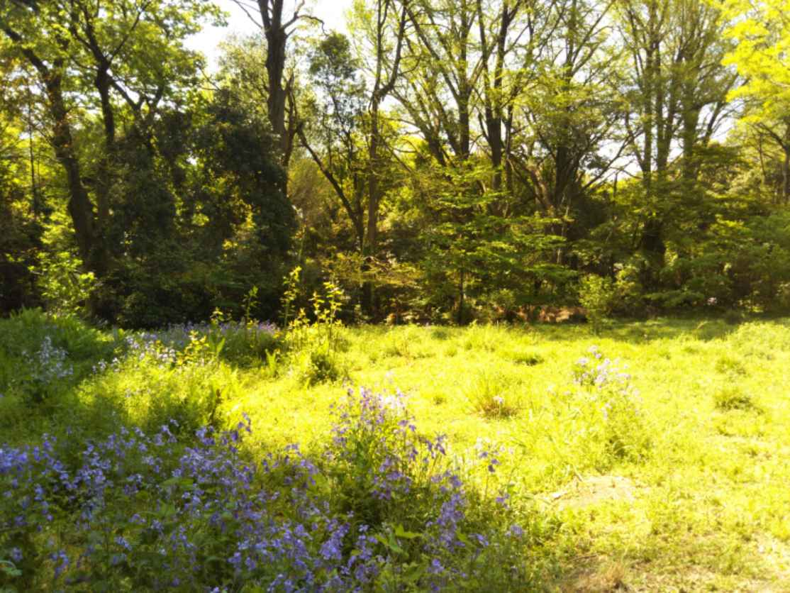
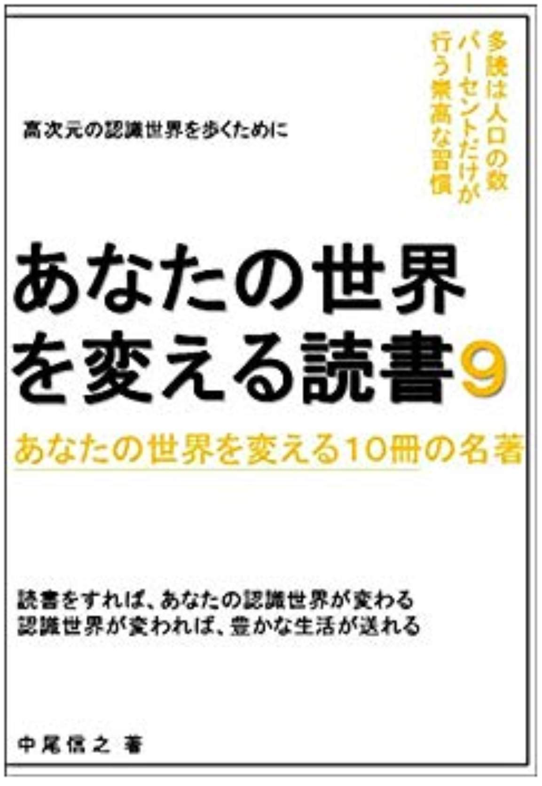
あなたの世界を変える読書９
あなたの世界を変える１０冊の名著
□はじめに
・大木を支えるもの
□第一章 生き方のヒントをくれる本
１．拝金 青春経済小説 堀江貴文
２．無人島買ってみる？ 佐藤ノブ
３．太平洋のレアアース泥が日本を救う 加藤泰浩
４．大前研一ビジネスジャーナル Ｎ Ｏ. １６
（人材戦略は「軽く・薄く・少なく」
～２０世紀の人材観が会社を滅ぼす～） 大前研一
□第二章 世界のとらえ方を変える本
５．脳の履歴書 苫米地英人
６．韓国と北朝鮮は何を狙っているのか
核ミサイル危機から南北連合国家へのシナリオ 呉善花
７．現代洗脳のカラクリ 苫米地英人
□第三章 科学によって見方を変える本
８．血液の闇 船瀬俊介 内海聡
９．老けたくなければファーストフードを食べるな
老化物質ＡＧＥの正体 山岸 昌一
１０．１００歳まで元気でぽっくり逝ける眠り方 大谷憲
□おわりに
・不安定存在を超えて、
あなたの世界を変える読書９
あなたの世界を変える１０冊の名著
□はじめに
・大木を支えるもの
本シリーズも、今回で９回目を数える。本シリーズは、キンドル読み放題書籍の中から、私が面白いと思った本を紹介させて頂いているシリーズである。
あと１回でシリーズも１０回目となり、合計１００冊の本を紹介してきたことになる。大木の根が、土の中を網の目のように張り巡らされるように、私たちの脳内では、今まで読んできた本の中の知識とあなた自身の経験がゲシュタルトとして、ネットワークを構築していっているに違いない。そうして、このゲシュタルトが十分であれば、外界から何か情報が入った際に、この知識のネットワークは、いろいろなルートで情報を伝達しあい、即座にレスポンスを導きだしてくれるのである。
木は大きく育てば育つほど、多くの栄養を必要とする。そのため、根も広く張り巡らせる。私たちは、自分の考えた大いなる可能世界を現実にしていくために、また、自分の思うことを成し遂げるために、木々たちと同じように、目に見える枝葉だけではなく、地中の根を広げるがごとく、脳内のネットワークを広げ、活性化させていく必要があるのである。
それらの思考ネットワークの基礎がしっかりとしていないと、弱った木が台風によって倒れるように、もろくも物理世界の現実に負けてしまうことになりかねない。しかし、私たちが、しっかりとした知的ネットワークを脳内に構築していれば、いろいろな物事に簡単には負けずに、いつも柔軟な生き方を模索して、実行していけるはずである。
かくいう私も、数か月のプロジェクトが終わり、現在は、無位無官の草の民である。確か、２９歳の時に、恩田陸さんの「常野物語」という本を最初に読んだ時は、非常に衝撃を受けたのを覚えている。
「常に野」にあれ、在野にあれということである。在野ということや、無位無官とういうことだけではなく、民間も含めて、どこにも所属していないということは、さらに不安なことかもしれない。しかし、それは、自由であることも、また事実である。私はまた、この機会にしっかりとした知識の根を広げていくことと、新しいことに集中的に取り組むつもりである。
読書によってあなたの世界観がつくられ、
あなたの認識する世界は変えられる。
認識世界が変われば、あなたが変えられる。
そして、豊かな世界を生きられるようになるのである。
□第一章 生き方のヒントをくれる本
１．拝金 青春経済小説 堀江貴文
本シリーズでは基本的にノンフィクションの作品を取り上げることにしていたが、前回、フィクションである苫米地英人さんの作品、「洗脳学園」を紹介した。なぜならば、フィクションでありながら、いろいろな現実の洗脳に関する現実の要素が盛り込まれ、フィクションとも言い切れない臨場感があったからである。
今回、最初に紹介する「拝金 青春経済小説」は、フィクションの形式をとっており、堀江さん自身が主人公にはなっていない。しかしながら、主人公の「藤田優作」がたどる成功と、転落、そして、それでもめげない姿は、堀江さんの一連の騒動と、ほぼ一致している。また、あとがきで堀江さんは、多くの事実を盛り込んだことを告白されている。よって、本書も苫米地さんの「洗脳学園」と同じで、完全なノンフィクション作品というより、事実のエッセンスを多分に含んだ作品であると言えると思われる。法律的な問題もあり、直接に記載できないことを少しぼかしているだけで、本質は、リアルな作品と感じたため、ここで取り上げることにしたのである。
物語の主人公は、「藤田優作」という青年である。彼をフリーターから上場企業の社長に導き、そして球団買収騒動や、テレビ局買収騒動へと誘導していく人物として、「堀井健史」なる登場人物が設定されている。
主人公の藤田の軌跡は、堀江さんの活動そのものであるように思われるが、堀江さんにも、物語のように指南役がいたかどうかは不明である。しかし、この物語で指摘されているように、球団経営という大企業の連結会計で、経費で落とせる美味しいビジネスが一部の企業の既得権とされており、球団や本体の経営が赤字でも容易には他社に引き継がれないことなどの指摘は、事実であろう。
また、同様に、本来は国が電波オークションなどの公平なプロセスを経て、電波の利用者を決定すべきであるのに、そのようなプロセスを経ずに、オークションがなされれば数兆円支払うべき公共の電波利用料について、テレビ局各社は全社合計でも７０億円程度しか支払っていないことなどの指摘も、事実であろう。
数兆円の利益供与を、国民の許可なく、テレビ局各社が受けておきながら、７０億円程度しか支払っていないという不均衡があれば、テレビ局は、国民の知る権利や、民主主義を守るためではなく、他の利権を保護する方向にしか動かないという指摘は、まったく論理的である。
本書の中で、球団経営に関するごたごたは、結局、藤田が業界に波紋をなげかけ、別の企業２つが球団経営に加われることになったことになっている。これも、企業名は少しもじっているが、実際のソフトバンクと、楽天と容易に推測できる社名と社長名が書かれている。このあたりは、ほぼ事実が書かれていると思われる。そして、一連の騒動のあとの、マスコミの主人公の藤田に対する偏向的な報道と、検察による他事例よりも厳しい取り締まりは、報道や司法の公平性を欠いている事例としても参考になる。
本書は、拝金という題名がついているが、お金至上主義に対して疑問を呈している書籍であると思われる。退職を迎えた人間が目標を見失い無気力になるように、大金を手にした人間も、たいていが無気力になるという。
ところが、堀江さんは大金を手にしても、社会的に制裁をうけても、刑務所に服役しても、なお、自分のやりたいことを追い求め続けているのである。社会が拝金洗脳になっているとしても、その社会の中で、自分のやりたいことを追求する人間の姿勢を本書では見ることができると思われる。
なお、本書の後に、書かれた本として「成金」という本がある。堀江さんの小説二作目である。時間軸では、拝金の前の時間を描いている作品である。
２．無人島買ってみる？ 佐藤ノブ
本シリーズの第三弾では、川村俊一さんという昆虫の標本を販売している方の本を紹介した。昆虫を採集しに未開の地にでかけたり、昆虫の標本を作製したり、また虫好きの展示会でのやり取りなど、その道の人にしか分からないことに没頭している方の魅力を紹介した。今回は、無人島を販売しているという、これまた珍しい方の本を紹介したい。
この本は、表紙から見ても、文章の書き方をみても、プロの編集者が編集をしていない本のように見受けられるが、内容は非常に面白い作品であった。私は、無人島という言葉を意識したのは、ムツゴロウさんこと畑正憲さんの本を読んだ時である。
ムツゴロウさんは、学研を辞めて、独自に動物の研究を始めた際、ヒグマを育てる場所として北海道の無人島を選んだのである。外界から隔離されているから、クマヤや犬を自由に育てることができる。しかし外界から隔離されているがゆえの生活の不便さがある。ムツゴロウさんの場合は、対岸にムツゴロウさんの弟夫婦が暮らして手助けをしてくれていなかったら、大変なことになっていただろうという。やはり、無人島というのは、過酷な状況の島が多いのである。
だからこそ、本書では、無人島を何の目的で必要としているのかを明確にすべきであるとしている。住むということを目的にするのであれば、住居が必要になり、水道、下水道、電気の手当てが必要になる。そして、島までの移動手段の確保も必要となる。水や食料は運ぶにして、電力も発電するとしても、意外にきちんと考える必要があるのが汚水の処理であるという。それらの問題から、住むことを前提にすると、住める島というのは非常に限られてくるため、無人島売買という市場は広くならないのだという。
また、市場価格というのも、バブルの存在でゆがめられている面もあるのか、何も生み出していない土地でも持ち主がなかなか、値段を下げないという実情もあるようである。しかし、手を加えなければ利用できない島の値段を下げないのであれば売りにださずに、自分で活用するのが良いように思われる。そもそも、土地は一番初めに誰のものというふうに決めるようになったのか、いつも不思議に思う。また、日本で登記は法的に強制されていないことから、この不明確さも問題である。だからこそ、四国と同等規模の持ち主が分からない土地があり、それが北海道の広さにまで広がると言われている。
それでも、筆者の行動力は素晴らしく、無人島の販売をしている師匠と仕事ができるようになるために、何度も連絡をして、ドイツに赴き、肩透かしをそこで食らっても、カナダに会いに行きというふうに、熱意と行動の人である。
島販売を始めてからも、それ一本では成り立たず、別に仕事も掛け持ちしながらという頑張りようである。そして、マーケットに出ていない島を、地図で探して、地元の役場に問い合わせて探したり、海外の島の場合は、提携先を共に探したり、市場に出ているものを紹介して、契約の支援をしたりというサービスをしてくれるようである。経費倒れのことも多いと言いながら、やはり没頭する楽しさが伝わってくる一冊である。
無人島を売るという生き方、無人島に買うという生き方、そのどちらにも夢があることを感じることができた。売る側にしても、買う側としても無人島を探すことを楽しみや、無人島の活用方法をいろいろと考え、そして、あれこれ夢見る楽しさがある。何も無人島まで行かなくても、人口が少ない島で暮らすという選択肢は、これから、ますます魅力となるかもしれない。
いずれは土に帰る人間は、今を楽しみ、やりたいことを、やるのが一番。
夢だけでは生きていけないかもしれないけれど、夢がなくては生きる意味がないという筆者の指摘は、筆者の哲学であり、今まで紹介してきた方々の考えと共通する部分があるように感じた。
３．太平洋のレアアース泥が日本を救う 加藤泰浩
日本の国土は世界で６０位前後の広さであるが、領海と排他的経済水域を含めた日本の権利が及ぶ海の広さは世界で６位と言われている。参考までに、一位から順にあげると、アメリカ、オーストラリア、インドネシア、ニュージーランド、カナダ、日本となる。また、２００８年に国連大陸棚限界委員会に申請を行い、そのうちの一部が認められて、３１万平方キロメートルの拡大が認められたという。まず最初に、日本は、これだけ広い海を保有している国であることを理解する必要がある。
さて、私たちはレアメタルという言葉になじんでいるが、レアメタルという言葉は日本で作られた造語で、国際的には通じない単語であるという。正確には日本でレアメタルと呼んでいるものの中で、特に重要度の高いものが、レアアースとして注目されているものであるという。そして、このレアアースはハイテク機器や、電気自動車、ＬＥＤや携帯電話など、多くの電気部品に使われている。また７％は軍事部品に利用され、宇宙航空分野にとっても重要な資源となる。
このレアアースは、これまで、中国が圧倒的に安値で供給してきたことが指摘されている。安値攻勢で、他国の鉱山を閉鎖に追い込んでいたというのである。ところが、近年、中国は輸出規制をして、価格を上げるなど、不安定要素が高いことから、中国に依存しない供給体制を作る必要があるとのことである。中国自体も、筆者の指摘のように、戦略として意図的に生産を不安定にしている面があるのかもしれないが、レアアースに限らず、あらゆる製造現場についても、環境に配慮した政策も取りつつあるため、以前のように乱暴にレアアースを抽出することを許さない側面もあるのだという。
世界的にみて、海底資源としては、油田の開発は進んでいるものの、鉱物資源の開発は進んでいない。しかし、レアアースについての調査は断片的になされたものがあり、過去の研究で収集された泥を分析することで、海洋におけるエアアースの分布と埋蔵量を推測できつつあり、筆者の研究チームが心血を注いで研究し、２０１１年にネイチャー・ジオサイエンスで論文が取り上げられるなど、今後の開発が期待されている。
筆者の試算では、陸上の８００倍の埋蔵量があるという。もっとも、有望なのは、ハワイやタヒチであり、アメリカやフランスの排他的経済水域になるという。
この予想される膨大な埋蔵量以外のメリットとしては、海底のレアアース層には、希少な重レアアースの含有量が多いこと。陸のレアアースと異なり、トリウム、ウランなどの放射性元素を含まず環境を汚染しないこと。埋蔵地域の探査がしやすいこと。泥から抽出がしやすいことなどがあげられている。
ではどのようにして、レアアースの泥が形成されるかというと、中央海嶺などの熱水活動で、海中に鉄やマンガンが放出され、これらの鉄質懸濁物質が海中に溶け込んでいるレアアースを吸着していくのだという。それが沈殿したものがレアアースの泥の層である。筆者は、日本の水域では南鳥島のレアアースが有望だとして、日本の利用料の１０％をまかない、実際に資金的にも回収が可能だとしている。しかし、日本の役所の対応の悪さについては苦言をていしている。その悔しさと、筆者の熱意が、ひしひしと伝わってくる作品である。
レアアースを新規に採掘しなくても、代替技術を開発する、利用する量を減らす、リサイクルするなどの方法はあるようであるが、ここまで現実的にレアアース泥の調査が進んでいるのであれば、筆者の思いや行動は、現状以上に民間企業を動かし、開発が進んでいくのではないかと期待できる。
４．大前研一ビジネスジャーナル Ｎ Ｏ. １６
（人材戦略は「軽く・薄く・少なく」
～２０世紀の人材観が会社を滅ぼす～） 大前研一
２１世紀は傑出した個人をどれだけ集められるかが組織成長の鍵であるため、組織や技術、資本より人が最も重要なファクターであると大前さんはいう。このことは多くの人が認めていることに違いない。しかし、意外に人事に関する考え方は、抽象的で一般化されておらず、同じ会社の中でも、経営層から末端に至るまで、忙しさにかまけて、共通認識として、明確な考え方が共有されていることが少ないのではないだろうか。
組織成長にとって、非常に重要な人事に対して、トップは２割以上の時間を人事にさかなければいけないということを、大前さんは、何十年も前から指摘し続けている。しかし、そのように人事のことを大切に考えている経営者は少ない。 そもそも、どんな人を採用したら良いかを考える前に、どんな会社にしたいかを明確にしていなければならないと大前さんは指摘する。
会社が何をコアにしたサービスを提供するかということである。その考えなしに、良さそうな人を集めても、船の進むべき方向が明確でないと、組織はまとまった力を発揮できないのである。
新卒一括採用と自前主義では、産業の突然死や、シンギュラリティ（技術的特異点）などと言われる環境変化に対応できないことも指摘されている。そもそも、欧米はジョブがあって人を採用するが、日本は組織の人数にあわせて人を採用し、ジョブとの連携が薄い場合が多いという状況が、今も続いている。ジョブ・ディスクリプション（職務の定義書）が薄いということである。仮にジョブ・ディスクリプションがあっても、現状のジョブと、理想のジョブと、どの項目が最低限必要な項目で、どれが理想の項目かという分類もきちんとしておくべきだというのが私の考えである。
そもそも、まともな人事ファイルがある企業が少ないという指摘も面白い。これはどういうことかというと、会社が社員を希少な資源としては考えておらず、コモディティとして扱っているということであるという。
ＨＲテックのツールができても、使える中身（情報）を入れる文化がないと、データベースの箱がからっぽのままであり、使えるデータが蓄積なされない状態となる。中身があっても、ゴミ情報ばかりでは意味をなさない。データベースに入力する内容はディスクリプティブ （ descriptiv e ）記述的で説明的である必要があるということである。
どのようなプロジェクトで、どのような役回りで、どのような価値を出したのかというようなことを入力しておく必要がある。そのような実際の次の配置に役立つような情報がなければ、抜擢人事などに役に立たない、断片的な情報しか残っていないということになる。だからこそ、好きとか嫌いとか、実力と関係のない登用がなされてしまうのである。
大前さんは、別の書籍でも指摘していたが、サイバーエージェントの新卒が社長になれる制度で、すでに４０人以上の新卒社長が誕生しているという。このような思い切った制度こそ、急激な環境変化に対応する試みであると思われる。会社が制度として、イントレプレナーを育てることを試み、経営を若いうちから経験できるチャンスを与えるということである。
エクセレントカンパニーなだけでは面白みがなく人が集まらないということがＧＥを例にとり紹介されている。いまやＧＥですら、そういう状態であるという。ＧＥの現在のコアは、重電機、メディカルエレクトロニクス（医療機器）、ジェットエンジンの３つのみで、金融と保険は、切り捨てているようである。この２事業については、ジャック・ウェルチ時代のつけが回ったとされている。２０年前は、あれだけ、彼のリーダーシップが、もてはやされていたが、今となっては、もう古い事例として紹介されているのだから、環境変化の速さを思わせる。
柔軟な労働市場、手厚いセイフティネット、積極的な雇用政策の３点セットがデンマークなどの労働市場改革であるとされ、安倍自民党の政策は、労働の固定化をすることであると指摘がされている。実際、３つのバランを取るどころか、ひとつも対応できていないのではないだろうか。
それでは、税金は何のために集められているのだろうか。雇用保険は何のために徴収されているのだろうか。ＡＩが進歩するまでもなく、現在の技術で、とっくに不要にできるのは、失業保険制度や、経済産業省などの補助金の申請と、給付の運用にかかわっている公務員なのである。オンラインで処理されるべき仕事を紙ベースで、人の目で対応している彼らこそ、職業訓練を受けるべき人種である。
個々人としての能力の磨き方、生活の質の上げ方の問題と、会社組織としての人事制度の在り方、そして社会全体としての制度の在り方、この三つに繋がりのある考え方が必要であると思われる。そのひとつの考え方が、柔軟な労働市場、手厚いセイフティネット、積極的な雇用政策ということなのであろう。答えは一つでないにしても、個人、会社、社会にとって、一貫性のある制度を設計する必要があると言えそうである。
□第二章 世界のとらえ方を変える本
５．脳の履歴書 苫米地英人
本書は、このシリーズで毎回取り上げている苫米地さんの自伝のような作品である。以前、紹介した「２０１冊目で私が一番伝えたかったこと」と同じく、苫米地さんの書籍の入門書としても、また既に苫米地さんの書籍を複数読んだ方々にも楽しめる書籍である。
本書でも、前回紹介したロスチャイルド家のことが記載されている。日本の江戸から明治にいたる過程に起こった戊辰戦争は、「イギリスのロスチャイルド家と、フランスのロスチャイルド家の家族ゲンカの代理戦争だったとも言える」との指摘がなされている。そしてロックフェラーやロスチャイルドの善意で世界は征服されており、彼らの思考する世界政府、世界警察の論理は、必ず破綻すると指摘する。
また苫米地さんが脱洗脳でかかわったオウム事件については、「そもそもオウムは各国の諜報機関がたっぷり入り込んだ、データ収集のための実験室だったのだ」との指摘もされている。どういうことかというと、オウムが行っていた、いろいろな行為を、各国がどこまで支援や協力をしていたかは別として、オウムで行われた情報を、各国はいろいろな手段で取得している可能性が高いということである。私は他ではこのような情報を聞いたことがない。このような情報が聞けるのが、苫米地さんの本の特徴である。
そして、苫米地さん独特の指摘は、信用創造を行い金融業が圧倒的有利なこの金融資本主義経済をやめるべきだという指摘である。スピリチュアリズムや、カルト宗教が不要なように、お金教である資本主義が不要というのが苫米地さんの主張でもある。３０年前から世界は全人類のための食料を確保できているにも関わらず、投機で食料の値段があがるなど、確かに現在の経済は、制度としてバグがあると言えそうである。
６．韓国と北朝鮮は何を狙っているのか
核ミサイル危機から南北連合国家へのシナリオ 呉善花
韓国は日本にとって非常に距離的にも心情的にも近い国である。私には何が良いのか分からないが、韓国の若い男性グループや女性グループの音楽が日本ではやったり、韓流ドラマがもてはやされたりしている。
個人的には、約２０年前にオーストラリアに観光ビザで一度訪問してから、ワーキングホリデービザとスチューデントビザで再度訪問している間に、韓国の若い人たちと自分たちとの近しい感覚を知ることができたし、また職場でも韓国系の方々とご一緒することが多かった。国ということを離れて、個々人という点では、非常に親近感を持っている。彼らが言うには、私が韓国人の方々に親しみを持たれる顔をしているようである。このように、近しい隣国であるにも関わらず、韓国の政治については、私たち日本人はあまり知識を持っていない。
本書は、そのような知識が足りていない我々が、お隣の国韓国と北朝鮮について、最低限の知識を得るための書籍であると言えるとともに、ここで読んだ内容から、いろいろと思考実験をできる素材としての価値のある書籍であると思われる。
韓国の政治家は、北朝鮮に太陽政策を続けているのは、北朝鮮と平和裏に政治的統合を果たして民族として一緒になり、日米と、中ロの間における重要な調整を果たせる強い国家になりたいと考えているからだという。
また、北朝鮮が、非常に独裁色が強いながらも、軍事的にも国家として一体感があることに、韓国の市民はともかく、政治家は非常に羨ましいと思っているというような指摘がある。これは、韓国の若者の方々の感覚とは離れているのではないかと思われるが、韓国ではなくても、日本の政治家も、そのように国家主義的な考え方の政治家は、ある意味、独裁政権を見て羨ましく思うことがあるのかもしれない。
アメリカは、北朝鮮の政治体制を事実上容認しており、時期はともかくとして、韓国から米軍を撤退させる時が来た際には、米軍の撤退イコール、国連軍の朝鮮半島での活動がなくなり、韓国と北朝鮮の、より一層の緊密化に障害がなくなることになる。ところが、経済的に一気に統一となると、韓国の負担が多いことから、当面は両国の政治体制、経済体制を維持するという少しいびつな形となりそうであるが、それが現実的なように、私にも思われる。
韓国は太陽政策で累積１兆円規模の援助をしており、その金額分が、北朝鮮の兵器開発に流れているという。このことは、韓国が無駄金を使ったという見方もできるが、韓国自身も核開発に興味を持っているのであるから、両国が一緒になった際には、両国のための核兵器ということになり、あながち援助は無駄であったとは言えないのかもしれない。筆者は、北朝鮮が、どのような形であれ、核放棄をするつもりがないということを指摘して、この北朝鮮の考えが、あらゆることの障害であることを指摘している。
北朝鮮の核は、他国から自国を防衛するためということだけでもなく、経済援助のカードというだけでもなく、自分たちの尊厳のために必要だと思っているのだから、核放棄をさせるには、どのような交渉も意味をなさないというのである。 それは確かにそのとおりかもしれない。そもそも、現在の大国や、一部の核保有国は、既成事実だから核を保有しても良いが、その他の国は持つべきではないという枠組み自体が大人の論理ではなく、子供の喧嘩の論理であるようと、私は中学生のころから考えてきた。
要は、「持ったもん勝ち」の論理である。
本書の中でも、インド、パキスタンの核保有が事実上、承認されているということが記載されている。両国の核が事実上認められ、なぜ北朝鮮の核は認められないのか。北朝鮮ではなく、韓国と一緒になった国家の場合は、認められるのかなど、論理的に破綻しているのが、現在の核拡散防止のルールである。小国が持つ核は不安定で、大国が持つ核は安定核であると言われる。本当だろか。第二次世界大戦後も、世界で戦争を続けてきたアメリカの核が一番危険なのではないだろうか。世界で植民地支配をし続けてきた大国の核も危険なのではないだろうか。
抑止力として、北朝鮮はソウルに大規模な打撃を与えられるミサイルを向けているから、それで十分な抑止力を備えており、核を持つことは過剰防衛であると筆者は指摘する。それであるならば、十分な通常兵器を持つ、大国が持っている核は全て、過剰防衛の兵器である。まったく核を減らさなかったオバマ大統領はノーベル平和賞と賞金を返却すべきなのである。
本書では、可能性が記載されていないが、インドと、パキスタンの核が事実上認められたように、米軍が撤退する可能性が、かなりあるということは、朝鮮半島の核も事実上承認されるという可能性があるのではないかと私は考える。
良く考える必要があるのは、アメリカが韓国に軍隊を置いていようが、軍事訓練で、いろいろな圧力をかけようが、北朝鮮は核を開発できたのである。アメリカが果たせた役割は、せいぜい実際に戦闘が再開されなかったということだけであり、韓国に軍隊をおいていた意味は、ほとんどなかったのではないだろうか。だからこそ、アメリカはどんどんと韓国にある米軍の柔軟性を高め、撤退へと向かっているのだろう。
同じように、日本にアメリカが軍隊をおいていようが、これも北朝鮮のミサイル発射を阻止する抑止には、まったく役に立っていなかったとも言える。それにも拘わらず、米軍への思いやり予算は、平成３０年まで５年連続増加傾向にあった。
彼らは日本のためではなく、アメリカの国益（アメリカの市民のためではない）のために駐留しているだけで、北朝鮮の核開発も、ロケット発射も、日本近海の島々の問題にも何の影響も与えていないので、逆に、領空利用料、土地の利用料、その他迷惑料を日本に支払うべきなのである。
ところが、実際は、日本は独立ができていないから、いまだに賠償金のように思いやり予算を支払わされているのである。そろそろ、出て行ってもらい、沖縄を本当の住みよい島、そして世界の観光リゾートにさせてもらいたいと思う。
７．現代洗脳のカラクリ 苫米地英人
今回も苫米地さんの本を２冊紹介させて頂くことにした。以前も記したが、苫米地さんの本は多くの本が読み放題対象となっているからであり、また専門的な内容も分かりやすく記載されているからである。また、他の作者の本とあわせて読むことのシナジー効果の起点になると思われるからである。
本書も以前に紹介した洗脳護身術のように、洗脳について知ることで、洗脳を防ぐという趣旨で書かれている本である。一般的な洗脳という行為が、何か特別な行為ではなく、日常的に私たちの生活の中で、テレビ放送や、社会で生活するなかで、洗脳される危険性があるというのである。また、実際に苫米地さんが、かかわった２名のオウム真理教信者二名のインタビューも含めて、洗脳という行為が、どれだけ自然に刷り込まれる行為であるかということも紹介されている。
本書を最初に読んで面白いと思った点は、高学歴者ほど、洗脳を受けやすいということである。勉強をしている際に、自分で集中力を高めて暗記作業を効率的に行うなどが得意である彼らは、変性意識状態になりやすいという。これは、一度、催眠術や洗脳を受けた人が、次からは、さらに受けやすいというような状態になりやすいのと同じであるという。そのことを踏まえれば、高学歴者がオウムに心酔したことも合点がいくと同時に、画一的なエリート官僚が行政を仕切っていることも危うい状態だという指摘がなされている。
がん保険のテレビの宣伝についても、お金が第一だという刷り込みの内容であるという指摘がされているが、最近のテレビＣＭは保険や、ローンや、消費者金融など、金融商品系のものが非常に多い。それらはお金第一主義の刷り込みを毎日行っているのである。私は保険が大嫌いなので、海外旅行に行く際の保険と、自動車に乗る際の保険にしか入らない。高齢者でも入れる保険、大病をした方でも入れる保険という宣伝があるが、これはリスクが高い人でも入れるということで、その分、保険料があがるということでしかない。
２０年前、大前研一さんの本でも指摘されていたが、何かのために貯蓄をするといって、退職直後より、死んだ後の方が、貯蓄が増えているという日本の高齢者の貯蓄行動の不合理さ取り上げられていた。それから年金の支払年齢が遅くなったり、支払額が減ったりということはあるだろうが、何かのための貯蓄という思考は続いていると思われる。同じように、保険のＣＭで、入院費用だけではなく給与まで補償しますといううたい文句のＣＭもあるが、これも、それだけ支払いリスクが高まるため、月々の掛け金が高くなるだけである。お金洗脳というのは、本当に際限がないので、注意が必要である。
苫米地さんが以前から、指摘しているのは、オリンピックという集金シンジケートの問題である。国際オリンピック委員会は、王侯貴族が名誉職に名をつらね、日本オリンピック委員会も竹田家の当主など旧皇族が名を連ねる。スポーツは美しいという刷り込みを、お金第一主義を隠しながら、宣伝しているのがオリンピックである。皇族が名前を置くのは、日本赤十字の問題と同じであると思われる。
他の世界大会とは特別という刷り込みをあらゆる媒体を通じてしているのである。そして、もともとオリンピックは、儲からないイベントだったのが、ロサンゼルスオリンピックでは、放映権料を引き上げるなどで４００億円の収益を上げたという。ここからオリンピック商法が加速していく。ところが、上手くやれば、このように収益があがるオリンピックを、日本は２兆円も税金を投入して実施しようとしているのである。このようなバカげた話はない。自民党員と、日本オリンピック委員会の方々で、その費用を支払ってほしい。おもてなしといって、電通を通して２億円の贈賄までして誘致した方々がその費用負担をすべきである。そして、来年の大河ドラマはオリンピックにまつわる話だという。薩長礼讃、明治維新礼讃の大河ドラマの次は、オリンピックだとうのだから、ＮＨＫも報道の公平性がないことを証明している。
また、本書はトランプ政権発足後に書かれているため、その選挙について、またその後の動向についての解説もなされている。
貧しい大多数の国民を代表して、ヒラリー・クリントンに勝利したトランプが、当選後は、ウォール街寄りの姿勢をあらわにし、財務長官、国家経済会議議長、首席戦略担当の３名をゴールドマンサックスから、国務長官をエクソンモービルから迎えている。結局、上記の役職の全てをロックフェラーの系列から迎えているという指摘がなされている。ウォール街寄りのヒラリーが、マスメディアを総動員して負けたというのに、それよりも、トランプはウォール街寄りであったということである。
表面的には、人口の７割の白人の権利を優先するようにみせて活動していたにも関わらず、その実は、ロックフェラー系の意向を無視できるアメリカ大統領はいないということである。
□第三章 科学によって見方を変える本
８．血液の闇 船瀬俊介 内海聡
船瀬、内海両氏の書籍は、過去もこのシリーズで紹介をさせて頂いているが、今回の書籍は、このふたりの共著の形をとっている。そして、輸血に関する問題に真っ向からメスをいれている。両氏の医療に関する指摘は大変に鋭く、そして論理的で分かりやすいことから、本当に自分の健康や家族の健康を考える人には、ぜひ一度、本書を読んで頂き、真剣に考えて頂けたらと思う。
本書では輸血の危険性が、かなり丁寧に指摘されている。しかし、そもそも危険であるかどうかという前に、輸血がほとんどのケースで不要であるというのだから驚きである。その根拠は、日本赤十字社のサイトによると一回の献血の量は、全血献血では２００ミリリットルや、４００ミリリットル、成分献血では６００ミリリットル以下とされているが、日本が献血ではなく売血の時代には、多い人は１．５リットルや２リットルも血を抜いている人がいたというのである。個人差もあるが、これは日本以外の国でもそのような数字の例があり、現在も規制が緩い発展途上国の売血のエリアでは、貧しい人は多くの血を売っているということである。
そして、それだけ献血しても、人間は水分さえとっていれば、必要な成分をすぐに回復する力があるということである。ということは、個人差があるとはいえ上述したような量の出血程度であれば、 他人の血の輸血は不要で、必要な「電解質液」を点滴すれば、それで十分ということである 。
このことは人間だけに限られず、何十年も前にフランスで公開実験された「カントンの犬」という実験で明らかにされていたという。この実験では、犬の血液を抜いて代わりに海水を注入するという実験であり、実験直後は体温が下がるなどの影響があるが、逆に体の汚れた血を抜いて、新しくすることで、数日後からは、以前より活発になったというのである。
同じように献血をしている人も、献血後は安静にするように言われても、大量に血を抜いた人が自転車で帰っていったりすることがあるように、血が減ること自体は、一定量までは問題がないようである。私も女性が生理で血を放出していることが、男性より長生きのひとつの要因ではないかと、昔から考えてきた。
さて、ここからは輸血の恐ろしさについての記述について要点だけ触れさせて頂くので、興味を持たれた方は、ぜひ原本を読んで頂きたい。
・血液は一人ひとり異なるために拒否反応がおこり、家族の場合はより強い拒否反応がある。これは臓器移植と同じであり、血液も臓器移植の一種でると言える。血と血の争いが体内で起こるというのである。
・何千、何万人という大量の人の血液のプールで混ぜられた血液には多くの病気のリスクがまじりあっている。献血、売血時の検査では、このリスクをなくすことができないことが認められている。なぜなら、肝炎も種類が増え、新種の検査はすぐにはできないし、未知の病気の検査はできない。
さらに、未知ではなくても、潜伏期間のものは最初の１月の間などでは、検査にひっかからないという性質がある。何千、何万の人の血を集めれば、たとえウイルスにかかっている人が数千分の１の確率であっても、その人の血がプールに１滴でも混ざれば、そのプールが全て汚染され、そこから作られた輸血用の血は全て汚染されている。だからこそ、輸血による感染は、非常に広い影響を与えるのである。
・輸血した際の拒否反応をさげるための放射線処置は、原子力発電所事故での被爆よりも強い放射線をあてており、死んだ血液であり、体には毒で免疫力をさげガンを増やす。拒絶反応は前述したが、それを抑えるために放射線をあてた血液を輸血するという手法は、別のリスクを輸血した人に与えるという悪循環がある。
・出血した際は、体が自己防衛体制に入り薄い血液状態ではあるが、逆に血流が良くなるため薄い血液での手術が良いとも言われることがある。
・輸血の危険性は副作用として、仕様書に明記されており厚生省も日赤も認めているが、輸血は同意書にある事故が起こる発生率が低く記載されており、おかしい。なぜなら、輸血には薬にあるような用法容量の規定がなく、適当であり、事故の報告もほとんど、偶発的な事故や様態の急変などとされてしまい、報告されている数値の何千、何万倍の可能性もある。
・出血した人間に必要なのは他人の血液ではなかなく、必要なバランスの液体である。輸血で効果がでたように思えるのは、水分を与えたからである。
さて、本書ではさらに、どうして、このような理不尽なことがまかり通るのかということで、ロックフェラー家と、ロスチャイルド家、赤十字社と、世界の貴族たちのかかわりにも触れている。彼らが輸血で病気を治しているのではなく、輸血で病気を植え付けているという。
医療マフィアたちがその他の人類を病気付けにして、医療市場を太らせ、患者を食い物にし、さらには人口削減まで行おうとしているとまでも言われることがある。この人口削減問題については、種子法とも絡んで、苫米地英人さんも、公共の電波においてですら警鐘を鳴らしていた。
日本赤十字社の社長は旧侯爵家の近衞忠煇。細川元総理の弟で近衛家の養子に出た方である。トップの名誉総裁は皇后陛下。副総裁も皇太子殿下を筆頭に皇族が並んでいる。
昔、２４時間テレビのことをビートたけしさんは、「２４時間テレビ、愛はタレントを救う」と書籍に書いたが、赤十字のビジネスは、患者を救うのではなく、医療マフィアとそれと一体となっている貴族のためにあると指摘されている。確かに、株式会社でもない会社が、病院には血を販売していながら、原料は献血で、低コストで集められ、そして組織は皇族や名家で独占する。これが民主主義だと言えるだろうか。実際、本書では、アメリカの中央銀行が、公共機関ではないことからも、アメリカも民主主義ではなく、帝国主義であると指摘されている。
献血は、輸血のための原材料が無料で集められるといわれる。そして、他国の赤十字も、売血で血を購入していても、発展途上国でただ同然で集めてくるのである。当然、そのような売血をしている人の生活環境、健康状態は良いものではないことは容易に推測ができる。そのような何千、何万の血が危険ではないと容易に推測が付く。それでも、本書によれば、日赤の方の回答は、各病院が自分で利用のリスクを知ったうえで使うのだから、日赤に責任はなく、病院の医師の責任だというのである。そして、厚生省も薬害エイズや、輸血による肺炎感染があっても、それらが大量発生して、社会問題になるまで、輸血の事故は、ほぼないものとして、リスクが、ほぼないという扱いを続けるのである。
本書の冒頭でも語られているが、輸血の話で思い出すのが、昭和天皇の最後である。輸血をしても効果がなく、輸血が繰り返された。これも、輸血による副作用の症状だったのではないかと推測がされているが、その可能性が高いように思われる。幼いながら、あの報道を見ていて、終末治療の恐ろしさを覚えた。皮肉なことに、輸血利権に長く関わってきた皇族のトップが、その輸血の副作用で苦しむという最後を迎えたのである。
血液は、ブラックダイヤモンドと言われ、原料が無料に近いにも関わらず、儲かるため、この行為に関する社会的洗脳は、なかなか解けないと言われる。しかし、エホバの証人の方々は、無輸血による手術を強く推進し続け、これにより世界的は、多くの医療関係者が無輸血手術のメリットを報告し、また多くの権威ある医療関係者が輸血の危険性に警鐘を鳴らしているとのことである。私たちも、そのような情報にも目を向け、自分で自分の体のことを考えていく必要がある。
「何かあったら輸血ではなく、電解質液を点滴しましょう」
９．老けたくなければファーストフードを食べるな 老化物質ＡＧＥの正体 山岸 昌一
本書も健康に関する本である。ファーストフードが体に良くないであろうことは多くの人が感覚的に感じておられることだと思われる。ところが、体に悪いものでも美味しいと感じてしまうように作られていると、食べたくなるのが人間である。しかし、価格的にもそれほど安くないファーストフードは、時々の娯楽として、日常生活に組み込まないようにして、日本食をベースにすべきであると思われる。
本書に記載されていること全てが正しいというわけではないかもしれないが、個々人がここから自己判断で正しいと思えるもの、自分にあっていると思われる考え方を抽出できればよいのではないかと思われる。
まず事実の数字として、その精緻さはともかくとして、成人である２０歳から７９歳までの人口の８．３％が世界で糖尿病とカウントされているという。未だに食料に困っている人口が８億人から１０億人いるともいわれるので、世界はバランスを欠いているのである。日本は、２０１１年は６位で成人の１１．２％が糖尿病とされ、世界一は中国、これにインド、アメリカ、ロシア、ブラジルが続くという。糖尿病患者の増加は、一位の中国と二位のインドが牽引し、増加数の４割をカバーしているという。ここで推測がなりたつのは、豊かになれば太るというより、少し貧しい階層が、ジャンクフード付けになるのではないかということである。
私が気に入った考え方は、人間の進化の過程を１年と考えた場合、現在のような生活様式になった、この２０年、３０年という期間は、１２月３１日の１１時５０分であるという。そのため、社会変化のスピードに人間の体がついていっていないというのである。つまり、 我々の体は、「原始時代の生活に適合している」 ということである。なぜなら、歴史的に人間の体は飢餓にさらされることになれており、満腹になることに体の構造は適合していないため、食べ過ぎになってしまうというのである。だからこそ、血糖値を上げるための機能は十分に備わっているが、血糖値を下げるための機能はほとんどないのだという。
今までも、このシリーズでは、ドイツの格言に「１日２食は自分のため、３食目は医者のため」という言葉があることや、高城剛さんの書籍で、朝食を推奨しだしたのは、トースターを発明したエジソンであることを紹介した。ぜひ、みなさまも自身の判断で正しかろうと思われる食生活をして頂けたらと考えます。
１０．１００歳まで元気でぽっくり逝ける眠り方 大谷憲
日本において平均寿命は延びているが、最近、世間でも言われているように、平均寿命よりも、健康寿命を意識することが大切である。日本の医療や、介護は寝たきりを助長してしまう仕組みになっていることが大きな問題である。
平均寿命と健康寿命の差は、男性では９歳、女性では１３歳も異なるという。健康を害してからの人生が、男女ともに１０年前後あるということである。人生の終盤にこのような長い年数を不健康で過ごすことは非常に悲しむべきことである。
歩く、動くことが、身体の機能維持に重要であるにも関わらず、それとは逆のことをしてしまうのである。そして、本書でも指摘されているように、本来は死にいたるはずの病気から救ってしまい、そこから寝たきりにしてしまうのである。これは、それぞれの人の寿命を延ばしたからといって、その方のＱＯＬ（クオリティ・オブ・ライフ）を上げたことにはならないはずである。また、同時に家族のＱＯＬも下げる行為であるように思われる。要は、個々人がどう生きたいか、どういう最後を迎えたいかということが大切なのである。
そういう意味で、本書タイトルの「ぽっくり逝く」というのは、理想的である。そして、そのことに眠り方に気をつけることが大きく関わっているというのが本書の指摘である。なんと、老衰でぽっくり逝けるのは１００人に４人であることと記されている。睡眠は体を休ませるだけではなく、脳を休ませることで、人間の成長と細胞の再生という重要な役割を担っているという。睡眠中には、毎日５０００億から１兆個の細胞が再生されるともいわれる。睡眠の時間帯についても、夜１０時から午前２時の間に最も活発に成長ホルモンが分泌されるので、その時間帯に寝ていることが重要だという。睡眠導入時のノンレム睡眠で深く眠ることが大切なのだそうだ。そして、やはり睡眠の長さも７時間から８時間と十分に確保することが勧められている。
さて、２０１１年の医療費は３８兆円で、うち薬に関する費用は１０兆円にのぼることが記載されている。高齢者は一人当たり平均、８１万円になるという。そして、彼らは８種類、１０種類と多くの薬を飲まされて薬づけにされている。これは、同じような種類のものを重複して処方されていることと、ひとつの薬を飲むと胃があれるから、それを抑えるために、もうひとつの薬というふうに、薬を飲むだけ、別の薬を飲むようにしむけられる。
そして、それらの薬は、石油をもとにつくられており、基本的に毒であるとうい指摘も、今まで紹介してきた船瀬さんの書籍の指摘などと同じである。２０１７年の医療費を調べると、４２兆２０００億円と、本書の指摘よりも４兆円もふえているのである。これは、３割負担というモラルハザードを生む仕組みにあると私は考えている。健康に関する意識が高い人は、それほど医者にかからないし、薬の弊害も良く知っている。ところが、自分であまり情報を集めない人は、３割負担なのだから、医者にかからないと損だと考えたりするのである。ところが、３割であろうが、何割であろうが、医者にかかればかかるだけ支出が増えることには変わりがない。老人が集まる場所が必要であるというのであれば、医者ではない別の場所を別の方策で考えるのが行政の仕事である。
以前、別の本でも、長い呼吸をすることの重要性を紹介したが、本書でも、健康のためには適度な運動は必要であるが、激しい運動は適していないことが指摘されている。哺乳類の心拍数は一生涯で２３億回程度と言われている。激しい運動は、この対応回数を激しく消費することである。逆に長い息をすることは、心拍数のコントロールにもつながり、副交感神経優位の状態を作りだす。また、質の良い眠りを取ることによって、体内の免疫の活動を活発にしようというのである。
本書の冒頭に書かれている「「軽い症状でもすぐに病院にかかる」、そしてひとたび病院に行けば、「病人にされてしまう」「病気になると完治させてくれない」」という指摘は、寝たきりを増やしている日本における西洋医療の本質を示しているように思われる。
□おわりに
・不安定存在を超えて
私は、昔から、哲学的な書籍を書きたいと考えてきた。現在も、その思いは持ち続けており、現在、いろいろと考えを整理中である。実は、本シリーズの第一弾は、いろいろな生き方の思考について語られた本を、できるだけ集めたつもりである。私自身が、そのような思考を身に着けたいと考えたからである。
私は、若いころから、人は非常に不安定な存在であるが、その不安定であることを受け入れることができれば、そのような人がこの世界で強い人として生きて行けるのではないかと考えていた。ところが、不安定さを受け入れることは難しいため 、多くの人間は、昔から宗教という他人の作った物語（思考製品）を受け入れて、足りない部分を埋め、不安定から安定になっているのだろうと分析していた。 そして、宗教という思考製品で心の足りないことを埋めることは、確かに安定を得ることはできるだろうが、それは逃げであるに違いないと考えていた。そしてまた、私も含めた、ほぼ全員がお金教（金融資本主義教）に少なからず、影響を受けてしまっている。しかし、このお金教は、不安定な部分を埋めることはできず、隙間を広げる機能を果たすように思われる。
私は、多読をするようになって、さらに、宗教というものに対しては、距離を取りたいと思うようになったが、宗教的寛容を持っている宗教を信じている人のことを否定するつもりはない。
また、水が水素と酸素で結合して、水として安定するように、いろいろな物質は現実世界で、安定要素となるためには、やはり何か結合して、安定状態になる必要があるのは事実と言えそうである。
そう考えた時に、現状の外に、ゴール設定をすることの重要性をＴＰＩコーチングが説いているのは、このゴールによって、現状の外に、足掛かりを作り、そこに向かう力学に引っ張られることによって、不安定ではなくなるためではないかと理解ができたのである。仮にゴールを設定しなくても、自分の確固たる考えを持って、自分の世界を生きている人は、自分の力学でもって、不安定さを乗り越えることができると思われる。
私たちは、多読により、大いなるゲシュタルトを大木の根のように形づくることで、知識の力、自分たちの力によって、安定存在になることができると私は信じている。
今回も、本書を手にして頂き誠にありがとうございました。
また、次回お会いできますように。 中尾信之
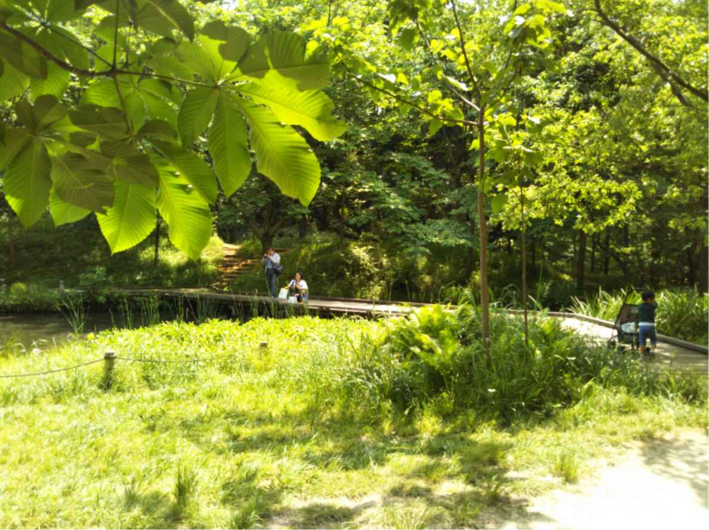
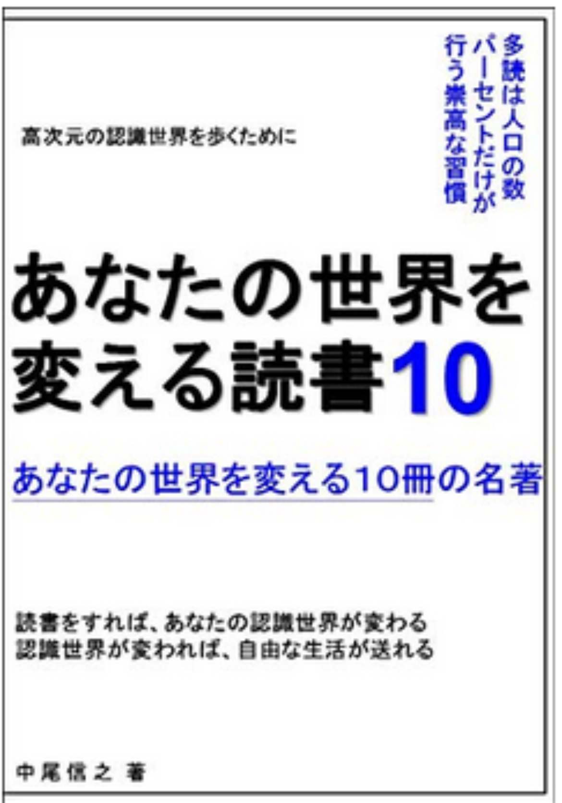
あなたの世界を変える読書１０
あなたの世界を変える１０冊の名著
□はじめに
・永続する力
□第一章 生き方のヒントをくれる本
１．がんを克服できる脳 苫米地英人
２．傷つきやすい人のための 図太くなれる禅思考 枡野俊明
３．できる男は金を呼ぶ！ 船瀬俊介
４．最強のデータ分析組織 河本薫
□第二章 世界のとらえ方を変える本
５．人間は「心が折れる」からこそ価値がある 苫米地英人
６．成金 青春経済小説 堀江貴文
７．まだ買うな！ 不動産 榊淳司 他
□第三章 科学によって見方を変える本
８．考えすぎる脳、楽をしたい遺伝子 長沼毅
９．薬が病気を作る 宇田川久美子
１０．スーパーヒューマン誕生 人間はＳＦを超える 稲見昌彦
□おわりに
・脳内ＯＳ２０１９
あなたの世界を変える読書１０
あなたの世界を変える１０冊の名著
□はじめに
・永続する力
本シリーズは、キンドル読み放題書籍の中から、私が面白いと思った本を紹介させて頂いているシリーズである。２０１８年の３月からスタートした試みは、今回で、とうとう１０回目を数え、紹介した書籍も１００冊に到達する。１０冊に１冊良い本があるとすれば、１０００冊を吟味したことになる。
シリーズ１０回目を迎えたことで、ひとつの区切りではあるが、これは終わりを意味しない。知のネットワークを構築する旅はどこまでも続くものなのである。以前に記したように、私にとっては、苦労して読書をしているのではなく、読書をすることがライフワークであり、また、執筆することがライフワークになっているからである。そういうわけで今回も、今までと同じように直近、私が出会った本の中から、これはという本を紹介させて頂きたいと考えている。
しかし、区切りを迎えるにあたって、自分が本来のスタートの志を忘れていないかということや、この試みがマンネリ化しているのではないかという自分なりの振り返りもあって、時々、シリーズ第一弾から、最新作までを読み直し、多少の修正を加えたりしている。
シリーズ第一弾は、この試みを始めた主旨や、私と読書とのかかわりあいの歴史も触れており、このシリーズの原点であり、特別な意味を感じている。第一弾では、特に、世界のとらえ方を考える本たちを集めたということも意味深い。今回は、ガンに関することに触れた書籍が比較的多い。これは、私たちが生きていくうえで、病気に対する考え方を見直すことで、生きることに対する考え方を見直せると考えたからである。
また今回も、人間という生物の新たな可能性をとらえるための書籍を集めるようにしている。
この１０回目を迎えるにあたり、再度、第一弾で記載した、左記の言葉を思い出しつつ、今回の始まりとしたい。
読書によってあなたの世界観がつくられ、
あなたの認識する世界は変えられる。
認識世界が変われば、あなたが変えられる。
そして、豊かな世界を生きられるようになるのである。
□第一章 生き方のヒントをくれる本
１．がんを克服できる脳 苫米地英人
「あなたの世界を変える読書」シリーズを、今までも読んでいただけている方には、お馴染みの苫米地さんの書籍である。主題としては、がんを克服することではあるが、がんという病気の物理現象を、自分の力でコントロールしていく考え方などは、自分の人生を自分でコントロールしていくという本質につながるものである。本書では、ＩＰＳ細胞が見つかった今、がんは、今後１０年、２０年で飛躍的に治る病気になる可能性が高いという指摘も最後になされている。
まず、知っておくべきことは、がんは、私たちの６０兆個の細胞のうち、毎日数千個発生しており、それらは常に破壊されて増殖しないように制御されているということである。このことは、いろいろな方の他の書籍でも記載されている事実である。そう考えると、目立つ腫瘍になるまえの、がんというのは、非常に身近なものであることが分かる。本書では、毎日２０００個という数の記載があり、６０兆のうちの２０００個であるから、ちょっとしたプリントミスのようなものであると例えられている。
さて、現在、がんの定番の治療法は、手術、抗がん剤、放射線治療であり、手法としては完成しているが、これらは完全にがんを根治する手法とは言い切れないことから、がん難民と言われる患者さんが多く存在することもあり、がんは怖い病気という印象が定着しているようである。また、上述の３療法をせずに、何もしない治療法を推進する医師も存在し、確かに放任治療でも、がんが消える事例があるのも事実だという。また、笑うことが、がんを消すことにも有効とも言われる。がんが頻出の病気であるという刷り込み情報が蔓延しているが、一定の年齢まで、がんにならなかった方は、その年齢を超えると、それ以降、がんにならないことが多いというデータもある。
これに対して、苫米地さんの指摘は、人間の自然治癒力を最大化することの重要性を指摘するとともに、医師や医療のプラシーボ効果を最大化することの有効性と説く。 プラシーボ効果だから、医療なんていらないというのではなく、医療を受けるという決断、その判断自体が、自分が治ろうとする意思を強固にする効果があるのだというのである。 だからこそ、どのような医療を、どのように受けるかは、医師の意見をきちんと聞くとしても、自分自身で判断をする必要があるという。
この時、自分で物事を考えるのには、十分な時間をとれるのであるから、納得できないまま、判断を急ぐ必要がないのが、がんという病気の特徴だというのである。急いで入院をするように言っておきながら、病院の都合で手術日が変更されることは、ままあったりするようである。
そして、自分の気の持ち方としては、病気を治すことはゴールではなく、病気が治って当たり前であり、治った後に、どのような価値あることをしたいかということを考えるべきだという。同じように、患者さんの家族は、患者さんが亡くなった前提で物事を考えるのではなく、患者さんが治る前提で、治って一緒に過ごしているイメージを持って見守るようにすることが、プラシーボ効果を一層高めると指摘する。
仮に、医師から患者さんが、余命宣告を受けても、それは、あくまで病状に対する過去のデータの平均値であるため、ほとんど意味がないということも冷静に知るべきであると指摘する。
本書の冒頭は少し読みにくい部分があるかもしれないが、ぜひ、読み進めて頂きたい。本書の素晴らしいところは、がん患者の方を治すということだけではなく、そのご家族の側の気持ちの持ちようにも触れていることである。そして、患者、医師など、がんと向き合った数名の方の実体験も掲載されている。
その中に、二度のがんを克服した政治家の鈴木宗雄さんの事例も紹介されている。がんという病気のとらえ方が変われば、私たちの恐怖に対するとらえ方も変わり、生き方自体も変えていけるのではないだろうか。それは病気になった時に限らず、元気な今から、考えることができる事柄であると思われる。
２．傷つきやすい人のための 図太くなれる禅思考 枡野俊明
このシリーズで、過去にも紹介してきた書籍と同じで、本書でも同じようなキーワードが記載されている。本書は、それぞれの説が短く構成されており、読みやすい本である。
筆者は禅僧の方であるため、釈迦の言葉などにも触れながら、心の持ちようを解説してくれている。筆者がいう図太さとは、ずうずうしさなどとは違い、苦難にも負けない、たくましさ、やわらかさ、しなやかさ、おおらかさというような感覚である。
私自身も、ささいなことに思い悩んだり、小学校時代の嫌な先生の思い出から、直近の出来事まで嫌な思い出を思い出すこともある。しかし、苫米地さんが書籍で書いているように、人間の記憶は、正確に保管されているわけではなく、毎回、違う形で再合成されているような不確かなものであるということを知り、そのようなことを思い出して、くよくよしたり、嫌な思い出を強化したりすることは、無意味であるという思いが強くなってきている。
実際、悔やんでも、過去のことはコントローラビリティがないので、どうしようもない。しかし、思い出すにしても、その記憶のとらえ方なら、変えることもできる。
堀江貴文さんの本でも、第一弾で紹介したフィジーの本でも、どうにもならない過去のことで悔やまないことの重要性が説かれている。それと同じように、釈迦は、死や、死んだあとのことを考えることも無意味だと指摘していたように、まだ来ていない未来の不安を思い悩みすぎることも同じく、時間の無駄であろう。いろいろなことに対して、まずは行動をしてみて、くよくよせずに、どうにかなると開き直ることが推奨されている。
本書では、他人と比べないこと、それよりも一人の時間を作って自分と向き合うこと、自分の短所よりも長所と向き合い伸ばすこと、気持ちの切り替えをうまく行い、落ち込んでも、すぐに立ち直れるようにすること、「足るを知る」こと、などが紹介されている。足ることを知らない人間の欲は、満たされることがないからである。
いろいろなことに、くよくよせず、他人と比較せず、仮の姿である肩書に縛られなければ、ただの人として、どう生きるかを見つめるという指摘がある。我々個々人の幸せは、結局、ただの人として、どう生きるか、自分で思ったように生きることができるかに、かかっているようである。
３．できる男は金を呼ぶ！ 船瀬俊介
本シリーズでは今まで、船瀬さんの書籍を数冊紹介してきた。今回紹介する書籍は、テーマが決まっておらず広く、エッセイのように短い文章を集めたような構成になっており、読みやすい作品である。しっかりした本を読みたい方には、少し軽めの本ではある。もちろん、ロックフェラーなどの医療マフィアの批判も健在である。今までも、医療系の船瀬さんの指摘は、紹介しているので、その他の面白かった点について触れたい。
電通の戦略１０訓という内容が紹介されている。１．もっとつかわせろ、２．捨てさせろ、３．無駄遣いさせろ、４．季節を忘れさせろ、５．贈り物をさせろ、６．組み合わせで買わせろ、７．きっかけを投じろ、８．流行遅れにさせろ、９．気安く買わせろ、１０．混乱を作り出せという１０訓だという。私は、総額であるＧＤＰが無意味であると、高校生時代から考えてきたが、テレビのＣＭの配分をつかさどっている電通が、このような１０訓を持っていることからも、消費者はテレビや、広告代理店に踊らされてはいけないのである。私も、修復しながら２０年使っている服もあるが、船瀬さんは、手縫いで修復しながら、スーツを３０年、着続けているものがあるという。
「詐欺ギリギリが、じつは、傑作ＣＭなんですよね」という広告代理店の方のセリフも記載されているが、確かに、ＣＭの素晴らしい内容の伝達は、その商品の機能以上のイメージを植え付けることでなされている。低価格をアピールする携帯電話の月額費用も、小さく翌年以降は、いくらという安くない金額や、別途、光回線の契約をしている人に限るとか、二台目以降の値段など、というような記載されている。
それでは、通常の単価とは言えない単価を基本単価として広告しているのである。通信各社は、正当な基本料金で広告をうつべきである。私も、去年、ようやくスマートフォンにしたが、先月から、二年目で価格があがるようなので、翌年には、より適切な価格の会社の携帯に切り替える予定でいる。
船瀬さんはフリーのライターであるから書きたいことを書いているが、新聞記者の友人は、「本当のことが書けないんだよ」というのだそうだ。それでは、ジャーナリズムとは言えない。そのような大手新聞は、正直買う価値がないということではないだろうか。政府与党が情報を、流さなかったり、嘘を言うことを指摘するのがジャーナリズムの価値であり、存在意義なのである。現在のところ、国民の知る権利は、一般的なマスメディアより、かろうじて、書籍で担保されているように思われる。
４．最強のデータ分析組織 河本薫
本書は、大阪ガスという一企業のデータ分析部門の所長をされている方が書かれた書籍である。しかし、その内容は、一企業内の話という限定的な話ではなく、マネジメントに関する書籍として、汎用性が高い内容であり、一読に値する書籍であるため、紹介させて頂きたい。
あくまで、 データ分析というのは、経営のための手法であって、目的ではない という本質論が正確に指摘されている。流行の事象に流されるのではなく、目的を見失うなということである。ビッグデータ、ＡＩ、ＩＯＴ、イノベーションなどのワードだけに踊らされて、本質を見失うなと論じている。
そして、自身のデータ分析部門を、会社の意思決定プロセスを改革するための部門であるというミッションをかかげ、実際の活動については、「データ分析を用いた業務改革の支援」というスタンスをとられている。データを正しく整理をして、実際の意思決定は、依頼してきた部門にまかせる黒子の役割に徹するというのである。役割として意思決定の責任をとれる立場ではないため、そこには立ち入らないというスタンスを明確にしている。
そして、このような役割を明確にしたうえで、社内の他部門の要望に対して、個別に契約をするような形で、各部門から予算をもらい、サービスを提供する体制をとっている。ということは、社内で必要を認められなければ、活動できないということである。
私も「購買本部は本当に必要か スタッフ機能のあるべき姿を求めて」という本に記載しているが、スタッフ部門が、社内で価値を認められるようなサービスを提供できないのであれば、単なるコストセンターとして存在意義がないと思われるのである。筆者も、データ分析組織だけではなく、人事部門なども、自分たちで存在意義を明確にして、レベルの高いサービスを社内に提供すべきであるとしている。
筆者は自身の部門の役割を明確に定義し、そのサービスを提供するための組織体制を構築し、人材の育成を行い、社内のネットワークを作って、内外に認められる組織づくりに注意を払ってきたからこそ、社内コンサルティング部門として、価値が認められているのである。
本書は、組織づくり、人材育成など、マネジメント一般を論じた本として、また、組織の中で生きる人間の生き方を論じる本としても、参考にして頂きたい書籍である。
□第二章 世界のとらえ方を変える本
５．人間は「心が折れる」からこそ価値がある 苫米地英人
本書は、人工知能と人の知能について書かれた本である。最近、人工知能という言葉が流行っているが、もともと苫米地さんは１９８０年代、人工知能の研究が盛んだったころに最前線で研究をしていたため、現状の人工知能ブームを冷静に解説してくれている。
そもそも人間の知能に似せてコンピューターを作る考えは、ストロングＡＩと呼ばれる方向性であり、人間の知能に似せることは諦めて、ある機能のために、特定のコンピューターを作る方向性をウイークＡＩというようである。その意味では、現在の人工知能と呼ばれているものは基本的に、ウイークＡＩであり、人間の知能に寄せることを諦めている。人工知能というより、マシンということである。
そして、巷ではそのマシンが人間より優れているかどうかということを良く問題として取り上げている。しかし、本書を読んで、なるほどと、思わされた指摘は、そもそも電卓でさえ、計算するという機能においては、人間をはるかに上回っているということである。それぞれのコンピューターは、特定の機能においては、昔から人間を上回っているのである。
ストロングＡＩの立場にたてば、人間の知能の全て、感情も含めて人間の機能を再現していないものを人工知能と呼んでもいいのかという問題もある。本当の人工知能と呼ぶべきものは、人の心が折れることを知り、人の感情に寄り添ってくれるような、そのような人間らいしコンピューターであるという。
そうすると、コンピューターは、より人間的になり、人間は、より機械で体を補うようになり、その境が曖昧になってくるのだという。そして、人とは何かという問いを真剣に考える必要が出てくる。
誤った人工知能の議論に２０４５年に人工知能が人間を支配するようになるのではというものがあるが、苫米地さんは、そのようなことがあるのは、人工知能のせいではなく、そのプログラミングを組んだ人間の悪意か、バグのミスであるとする。プログラムのプリンシプルに、きちんと人間のために働くということを入れ込み、コンピューターが、自分で判断できないときは、人間に判断を仰ぐようにしておけば良いというのである。確かに、有史以来戦争ばかりしてきた人間自体が、悪意のプログラミングを作ったり、バグを放置したり、はたまた、ハッキングして悪用したりということをするリスクのほうが現実的に思われる。
「２０４５年は、人間が人工知能に支配される世界ではなく、人工知能が人間の生活を支援してくれる世界になっています」という前向きな言葉も記されている。
６．成金 青春経済小説 堀江貴文
前シリーズで紹介した堀江貴文さんの初めての小説「拝金」に次ぐ、小説第二弾である。ストーリーとしては、「拝金」より、前の出来事を記載している。アマゾンレビューの評価は、「拝金」の方が良かったという指摘や、「拝金」を読んでいなくても、楽しめたという意見とふたつに分かれていた。私には十分に楽しめる作品だった。
「拝金」は世にいう拝金主義を勧める書籍ではなく、多くのお金を手にしてしまった後に、さらにお金を求めるのでもなく、燃え尽きるのでもなく、お金を得たあとに、お金だけでは、何も満たされないことを知り、そこから本当に、自分がやりたいことを続けるという突き抜けた感覚を伝えようとしたことが、あとがきで書かれていた。詳しくは堀江さんの書籍を読んで頂けたらと思うが、「成金」についても、一大で富を築くことを進める本ではなく、歩兵が金になることを意味している。
企業名は、ぼかされているが、ソフトバンク、光通信、オンザエッヂ、ライブドアと思える企業名が出てきており、リアルなことを含んでいると思われるため、今回もピックアップすることにした。ＩＴ企業と呼ばれる企業のうちのほとんどは、「ＩＴもどき」であることなども指摘されている。
ソフトバンクの孫さんのことは、好意的な描かれ方をしているのに対して、鮫島という名前の人間は、非常に印象が悪く描かれている。これは、ソフトバンク・インベストメントの北尾氏のことを記載しているのではないかと思われる。ソフトバンクは、２００６年８月に、保有していたソフトバンク・インベストメントの株式約２７％を売却し、両者の関係は清算されたという。
もともと、ソフトバンク・インベストメントの北尾氏は、野村證券から、孫さんによって、ソフトバンクのＣＦＯとしてスカウトされソフトバンクの企業買収などを支えてきたという。しかし、孫さんの通信業界への投資に対して、北尾氏は批判的だったため決別したように書いている記事が多い。
ところが、孫さんの当時のボーダフォン買収などは、現在は成功だったと一般的に定義されているのだから、北尾氏の批判は、先を読めていなかったのか、「成金」にも記載されているように、ソフトバンクを乗っ取ろうとしていたため、孫さんにも嫌われたのか、どちらかのだと思われる。
堀江さんは、最近も、北尾氏について、「自分が一番倫理観ねーくせに、論語だの哲学だの表向きのカッコつけばっか」というふうに批判していると各種ネット記事では取りざたされている。堀江さんが、「成金」を書いたのは、ビジネスを真剣に行うことの楽しさを、私たちに伝えたいということがあったのと、北尾氏を痛烈に批判したいという点のふたつがあったように思われる。
私も北尾氏の描いた、論語をほめたたえる本を読んだことがある。その時は、正論を書いているように感じたが、今思うと、確かに非常に胡散臭いのではないかと思う。ライブドアによる日本放送の買収を、ソフトバンク・インベストメントがホワイトナイトとして邪魔をして、フジテレビは今、不調の中にあるのだから、ソフトバンク・インベストの投資は、上手くいったとは言えない。当時から、堀江さんが、放送とネットの融合をうたっていたのに対して、「成金」にも書かれているように、北尾氏のメディアへの執念は、メディアを再生させるのではなく、個人的な欲から来ているように思える。
７．まだ買うな！ 不動産 榊淳司 他
過去にも住宅に関する書籍を二度、紹介した。今回は、住宅だけではなく、倉庫についても取り上げられており参考になる書籍である。
住宅については、オリンピック後まで購入を差し控えるように推奨されている。仮に消費税で数十万円の税金がかかるとしても、標準的な物件でも、価格が５００万ほど下がることが予測されるため、価格の適正化を待つことが良いということである。
まず、現在の市場は明らかに供給過剰であり、完売しない物件が増加していることを認識したい。そして、完売しない状態が出ていることから、建設完了時期や、販売開始時期を遅らせているため、潜在的在庫が、まだまだあることが指摘されている。また、以前にも紹介した２０２２年に首都圏の農地で、営農期限が終了して宅地として出回るものがあり、これも土地価格の値下がり要因となるという。
首都圏の分譲マンションの平均価格は、２０１７年で５９０８万円、バブル期の１９９１年で５９００万円とバブル期を上回るという異常な水域に到達している。５年前と比べても、分譲マンションは３０％値上がりし、在庫が３０％増加したというのである。
ここまで価格を支えてきた実需ではない投資目的の購入も陰りが見え、すでに外国人投資家などは、高値のうちに売り抜けをする動きが活発になっているが、高値では売れない状態になっているというのである。この状態は、現在の株式市場と同じリスクをかかえているように思えてならない。
年収の５倍から７倍、場合によっては８倍のローンを組んで、高価なマンションを購入しても、この購入価格以外にも共益費や修繕の積み立て費用など、さらなるコスト増を負担しなければならないのである。またローンを変動利率にした場合のリスクについても触れられている。このような時期に購入をすることは、バブル時に高値で不便な宅地を購入し、ローンの返済に追われている悲劇の焼回しのように思われる。
さらに、空き家率が、これから年々増加していく日本では、現状の価格は官制価格と言っても良いのではないかと思われる。総務省の調査では、２０１３年度の空き家数は全国で８２０万戸あり、東京都はそのうち約１割の８１．７万戸である。２０２３年には全国で、１４００万戸になると予測されている。明らかに物件価格には、値下がり要因が多く存在しているのである。
ここでも消費者側ではなく、提供者側の論理がまかり通っているのである。建設業界は、値下がりすることは織り込み済みで、売れる間に売上と利益の確保を行い、値下がりした後は、損切りをして、在庫セールをしていくものと思われる。
このような中で、住むところを選ぶことは、サービスの良い自治体を選ぶことでもあるという。人口を減らし続ける町がある中で、流山市は、子育てがしやすいブランディングと、実際のサービス拡充により子育て世代を呼び込み、税金を確保し、そして都市の価値を上げつつ、物件の価値も下がらないように好循環を生み出しているという。たとえば、８年間で保育園は２．８倍に増やし、定員数は３．１倍に増やしたという。送迎保育ステーションという園までの送迎サービスも提供している。逆に、そのような政策が取れない市町村は、没落するほかないのである。
また、この流山市には、東京ドーム３０個分の物流倉庫が２０２２年に完成する。その他、２０１７年の首都圏の新しい物流倉庫の延べ有価面積は７２．６万平方メートル、関西圏は１１２万平方メートルと、過去１０年で最大だという。さらに、首都圏では２０１８年は２４８．６万平方メートルの完成が予定され、これも飽和状態になりつつあるのではと言われている。また、同様にビジネスホテルについても、供給過多の状況が見て取れるというのである。
このように住居、物流倉庫、ビジネスホテルともに、供給過多になってくると、条件が良いところだけが価格値下がりをさけられ、それ以外は、価格の適正化プロセスに乗ってくるということが予想できる。これは、すでに予測というよりは、確定的な未来だと言えそうである。
□第三章 科学によって見方を変える本
８．考えすぎる脳、楽をしたい遺伝子 長沼毅
本書はアマゾンレビューでも評価が分かれている書籍である。個人的には、最初の半分と、終わりの部分を読んで頂ければと良いのではないかと考えている。しかし、本書に記載のあるキーワードにふれると、人間の進化についての思考実験に役立つと思われるので、それらのキーワードをいくつか紹介したい。
本書のタイトルは少し分かりにくい部分もあるが、要は、人間以外の生物は思い悩むことなく精一杯生きているのに対して、人間は必要以上に思い悩みながら、ダメだと分かっていることも付き合いで行ったりしつつ生きているが、もう少し、他の生物たちのように、あるがままに楽に生きるようにしても良いのではないかというのが趣旨である。
気に入ったキーワードとしては、７３億の人類の遺伝子のばらつきが非常に少なく、一時、人口が、種の保存に限界となる１万人程度までに絞られたと推定されるということである。実際、約７万年前にそのような事態になったのだと言われているそうである。
また、ある研究者の説では、文明ができ始めた６０００年前の人類の脳の状態がもっともコンディションが良くそこから劣化しているという人もいるという。これは、いささか言い過ぎかもしれないと思うが、その頃から、あまり進化していないのではないかということは推測できる。
なぜか、同種間で、無益な殺し合いをするのは、脳が発達した人間、チンパンジー、イルカであるという一方で、脳が発達したイルカは、人間を助けることがあったり、種類が違うイルカが別のイルカを助けることなども報告されているという。脳の発達は、殺し合いを生む一方、助け合いをも生むのである。ちなみに、人とチンパンジーの遺伝子は、数％しか違いがないという。
遺伝子情報は、スイッチされなければ、それが特徴や性質として現れることはないのだから、必ずしも我々の行動や性格、生活が全て遺伝子によって完全にコントロールされているわけではないと言える。そして、このスイッチするしないをつかさどると思われるマスター遺伝子のことは、まだ分からないことが多いという。
私としては、遺伝子にどのような情報があったとしても、プラスの情報だけを読み取り、人間が上手く自分でコントロールできるようにすることに重きを置いた考え方に、賛意をおぼえる。仮に、ある病気を発病する遺伝子を持っていたとしても、それによって発病したスイッチを、自分でオフにできるような考え方である。
また、本書でも指摘されているように、遺伝子のミスコピーによって、オリジナルと違った産物ができることで、発がんの原因になったりする一方、これが、遺伝子のバリエーションが増えるという。このようなミスコピーが、突然変異として進化の原動力になるという点も、人類を含めた生物進化の可能性につながる話であるように思われる。
９．薬が病気を作る 宇田川久美子
今までも、船瀬さんや内海さんの医学に関する書籍を紹介してきた。今回の宇田川さんも、両名の指摘と同じような主張を、薬剤師の立場から私たちに教えてくれる。本書でもガンに関する考え方が記載されているが、今回、１冊目で紹介した苫米地さんの指摘と近しい部分が多いので、この２つの書籍をあわせて読んで頂けたらと考えている。
前も、紹介したイスラエルでの医者のストライキで、ストライキ期間は死亡率が半減していたという事実が非常に面白い。そして、本書ではさらに、コロンビアのストライキでも死亡率が３５％減少したことこと。ロサンゼルスのストライキでは、手術が６０％減少したことで、死亡率が１８％減少したことがあげられている。そして、ストライキが終わると、これらの死亡率はすぐに元通りになったというのである。
薬剤師独自の視点としては、病気を治すために薬を出しているのに、どうして、いつまでも薬をもらい続けにくるのだろうと、疑問を持ったことが、このような書籍を書く活動につながったきっかけだという。
基本的に薬というのは不自然な人工物であり、異物であるという。そして、薬効は毒に対する体の反応に過ぎない。先天性の病気や、急性の症状に対しては有効な薬があることも確かではあるが、それ以外は、体が病気を治すために行っている発熱や、頭痛など必要な治療行為の症状を薬で押さえつけてしまえば、症状は治まるが、病気自体が治らないことになってしまうというのである。宇田川さんによれば、「健康に生きるための十分な力を、人間の体はもともと備えている」という。
薬の副作用は規定されていたとしても、複数の薬を同時に飲んだ場合に発生する副作用は未知であるという。そして、人によって、またその人の、その時々の状態によって発生する副作用は、飲んでみないと分からず、予測不可能だというのである。そして、このリスクは、お医者さんで処方される薬に限らず、市販薬や漢方薬でも副作法には注意をする必要があるという。
インフルエンザに効くとされるタミフルは、２００１年に保険適用になったようであるが、２００７年に事故があり、タミフルは精神に影響する可能性があることが指摘されている。
この例からも分かるように、薬の認可の時点では、薬のリスクが正しく把握されていないことがあるのである。だからこそ、新しい薬ほど、臨床数が少なくリスクが洗い出されていないと言えるのだ。また、タミフルは日本に生産量の７５％が集められているという。
これは異常なことである。筆者によれば、各国がタミフルを必要な効く薬と認めていれば、お互いにタミフル争奪合戦が起こるが、アメリカでさえ、健康な大人や子供にはタミフルは不要と公表しているため、そのような争奪戦が起こらず、日本が独占しているがごとく、買い占めができているのだという。そして、日本人は、それをありがたく大量に利用し、医療費を膨らませていくのである。なんという皮肉なことだろうか。
また、以前も本シリーズで紹介したが、インフルエンザワクチンも、毎年違う種類のインフルエンザが流行るのだから予測ができず、ワクチンを打ったとしても、インフルエンザが発症することがあり、ワクチンを打たなくても、発症しない人もおり、結局はどれだけ自分の免疫力を高められているかということが問題であるという。このインフルエンザの型の予測は厚生労働省が行っており、そして、新型のインフルエンザの流行が予測された場合は急いで薬を作り、十分な安全テストを経ないまま利用しなければならない状態となるという。また、ウイルスは自在に型を変えることもあり、効果は測定しえないというのである。さらに、ワクチンに入っているホルマリンは発がん性のある劇薬であり、アルミニウムや水銀などの有害物質を含んでいるというのである
そして、そのことはガンについても言える。いくら、手術や放射線治療、抗がん剤などを駆使してガンを一度除去しても、根本となる自分の生活習慣や考え方を変えないと、再発する理由が残っているため、再発して当然であるという。
また筆者の指摘で、その通りだと思ったのは、子供の医療の無料化が、逆に子供の薬漬けにして、危険にさらしているのではないかという指摘である。肉体的に内蔵の発達などが未熟な子供への薬の投与は、大人よりもリスクが高いのだという。
薬の臨床試験においては、大人の臨床結果を持って、子供には量を減らして処方するだけで、子供がどれだけの薬で危険があるかというデータ自体がない状態で、処方されているのだそうだ。大人としては、自分の健康を自分で考えるのと同時に、それ以上、子供の健康には気を配り、薬漬けにしないように、医療漬けにしないような考え方を子供と一緒に探っていくべきであると思われる。
１０． スーパーヒューマン誕生 人間はＳＦを超える 稲見昌彦
本書では、科学技術と、海外の映画や、日本のアニメで登場する世界の境界線を探るような試みがなされている。アニメから着想をえて技術を考えることもあれば、技術の進歩にあわせてアニメなどの世界が広がっていくということもありえる。
本書は、現在の技術レベルがどの程度まで発達していて、どのように人間の世界を変える可能性があるかを説明する過程で、そもそも私たちの体や心がどのように機能しているかということも説明してくれている。人間の認知、体の体感が非常に曖昧だという点の指摘もある。
人間の脳は、現実世界を１００％そのまま認識しなくても、必要な部分だけ五感で感じて、認識するだけで良いのだから、バーチャルリアリティで作られる世界も、解像度などが高いということよりも、本物らしく感じられるということで十分なのである。確かに、苫米地さんの本でも記載されているように、人間は、映像がない小説など文字を読んだだけで、その世界に入り込むことさえ可能なのである。
本書の指摘で面白いのは、人間の認識というものが、人間の体という枠組みの中での制限を受けているということである。ひとつの例は、人間が話す言葉は、自分の声を、自分の耳で聞いているが、これを邪魔する行為をすることで、人間は話をしづらくなることもあるという。これと似た例は、電話をしているときに雑音が多いと、大きな声で話すということなどでもあらわれているという。頭や心というものが、身体と相互作用で機能しているという一例である。
さて、私が今年、特に気に行ったアニメは、「ソードアートオンライン」と、「攻殻機動隊」と、「神のみぞ知るセカイ」である。まさに、本書の後半では、これらの世界に描かれているようなことの可能性をさぐるような内容が書かれているのである。
先日、テレビを見ていた際に、たまたま本書の筆者である稲見さんが出演され、本書にも紹介されている光学迷彩技術の紹介がされていたのを見ることができた。この光学迷彩の考え方を、筆者は「攻殻機動隊」で思いついたという。光学機動隊では、主役の草薙素子が法ではさばけない相手を暗殺する作戦を終えた後、光学迷彩で景色と溶け込んで捕捉されないようにするシーンや、草薙の敵が、光学迷彩で姿を消すシーンなどが登場する。
筆者の開発した光学迷彩は、見る側が特定のスクリーンを見ることで、光学迷彩機能のあるシートに、撮影した映像が映し出されて後ろに透けて見える技術である。テレビでは、筆者が光学迷彩になる服を着て、それを特定のモニターから他の人がのぞくと、この服が透けて見えるというシーンと、車に乗った運転手が、自分の車の壁を透けて、車の後ろや横を見える応用技術が紹介されていた。つまり、他人から見えなくなるのではなく、見る側が景色を見やすいようにする使い方である。見る側がモニターを見るなどの視点をコントロールする必要があるため、攻殻機動隊の光学迷彩と、完全に一致した光学迷彩ではない。
これは、他のアニメから例をあげるとすれば、本書では紹介されていないが、Ｚガンダムのリックディアスという機体に乗った、主役のカミーユビダンの父が、「この３６０度モニターは完璧に近い」と語ったシーンにあるように、見る側の視界を手助けするものである。
本書の前半では、けがをした際に利用する義足などは、もともとの機能を補てんするものであるが、もともとの機能を超える道具を人間が拡張させていくことの可能性が検証されている。そして、その道具は、何も体の内部や、体と一体化しているとは限らない。人間の記憶を補完する道具として、スマートフォンなどの外部媒体を用いていれば、それも一つの人間の機能を道具として外部に拡張させているという見方ができることも指摘されている。これをさらに推し進めれば、攻殻機動隊で描かれているように、脳の記憶を電脳という形で保持することであるのかもしれない。攻殻機動隊では、人間の体を機械で補うことは義体化と呼ばれている。実際、技術が進歩すれば、脳の対応年数と身体の対応年数とのギャップの部分は、義体化によって埋められることが想像できる。
自分は家の中でいて、自分のコピーロボットを自分の意思で動かしていくようなことに近い話も本書で取り上げられているが、これは、攻殻機動隊の世界では遠隔義体の活用であり、自分の身体の義体化より進んだ利用法である。
詳細は、本書を手にとって頂けたらと考えているが、最後に本書のタイトルとなっているスーパーヒューマンという言葉を説明する筆者の言葉を紹介したい。
「情報技術、バーチャルリアリティ技術、機械技術、ネットワーク技術などのすべてのテクノロジーがあわさると、人間は道具をつくるだけではなく、自らの身体性を自らの手で作り変えることができる存在、つまりスーパーヒューマンへと姿を変えるのだ」
単なる技術の進化だけではなく、人間の認知力の向上についても、技術の進化とあわせて考えていきたいものである。
□おわりに
・脳内ＯＳ２０１９
２０年ほど前に、「文化地帯説」という言葉を習ったことがある。科学技術の進歩に比べて、私たちの社会の文化や制度などの進化スピードが常に遅れることを意味するものである。
第一次世界大戦は、１９１４年から１９１８年とされ、第二次世界大戦は、１９３９年から１９４５年であるから、第一次世界大戦と第二次世界大戦の間の１９２２年に発表された説である。
それから約１００年がたち、さらに科学技術の進歩のスピードは上がっているのに比べて、おそらく私たち人間の感性は、西暦が始まった頃の２０００年前とおそらく、ほとんど変わりがないはずである。体の仕組みは、さらに、人類のスタート時点から、それほど大きく変わっていないことだろう。社会の文化や、制度が遅れるということは、それらを形作ることに影響を与える、個々人の心が、科学技術のスピードとのタイムラグの中を生きているということだと思われる。
いわば、通常の人間は、いまだに２０００年前のオペレーションシステムを脳内にインストールして生きているということなのである。このＯＳは生まれながらに保持しているものではなく、人間が成長をしていく社会化と言われる過程で、学校や関係している人間関係の中でインストールしていくものである。これが、過去のシリーズで紹介してきた、ブリーフ・システムであったり、思考のフレームというものであると思われるが、これを分かりやすくいえば、ＯＳであると言えるのではないだろうか。
伝統宗教の教義も、この古いＯＳのひとつであろう。エジプトやメキシコの古い遺跡を掘り起こして、当時の人々の政治や信仰の謎を解いても、生まれ変わりという古い考えを持っていた人間のＯＳの仕様は、今の我々には不要な仕様なのである。
私たちは、いまだに通常搭載の２０００年前のＯＳで、為政者にとって望ましい行動体系をするようなプログラムのままで生きていることを善しとして良いものだろうか。
ここまで１００冊の新たな知識をインプットし続けてきた私たちは、これらをひとつの大きなゲシュタルトとして活用し、最新版のＯＳをフル稼働させて、新しい目で、この世界を認識しなおせるはずである。
新しい年の始まりに、私たちの体の中の６０兆個の細胞が、常に生まれ変わっていることを意識しながら、新しいＯＳの起動スイッチを押してみようではありませんか。
今回も、本書を手にして頂き誠にありがとうございました。
また、次回お会いできますように。 中尾信之
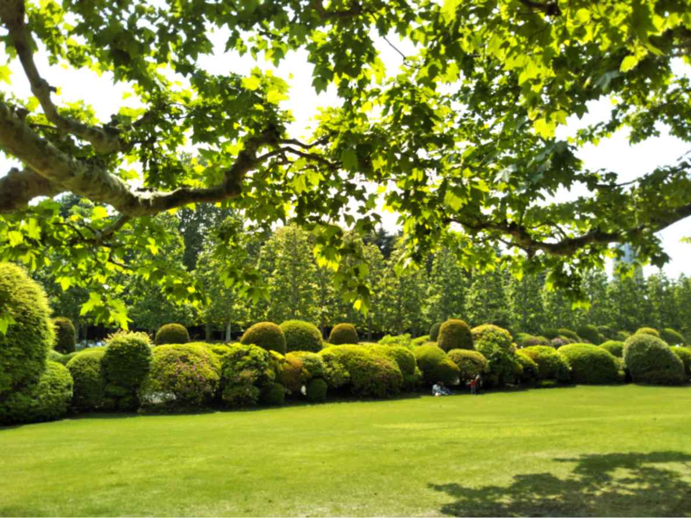